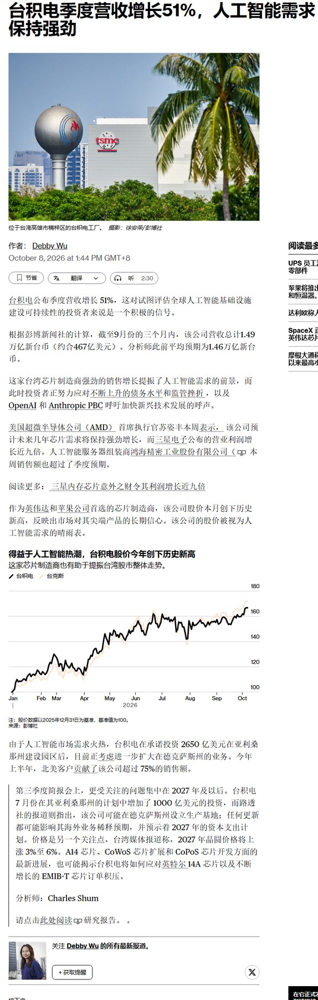
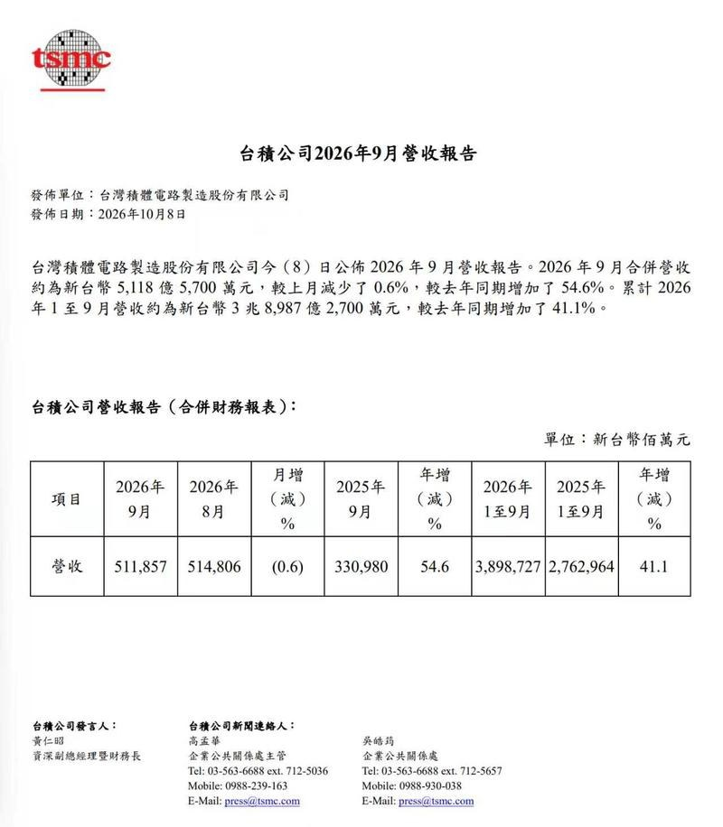
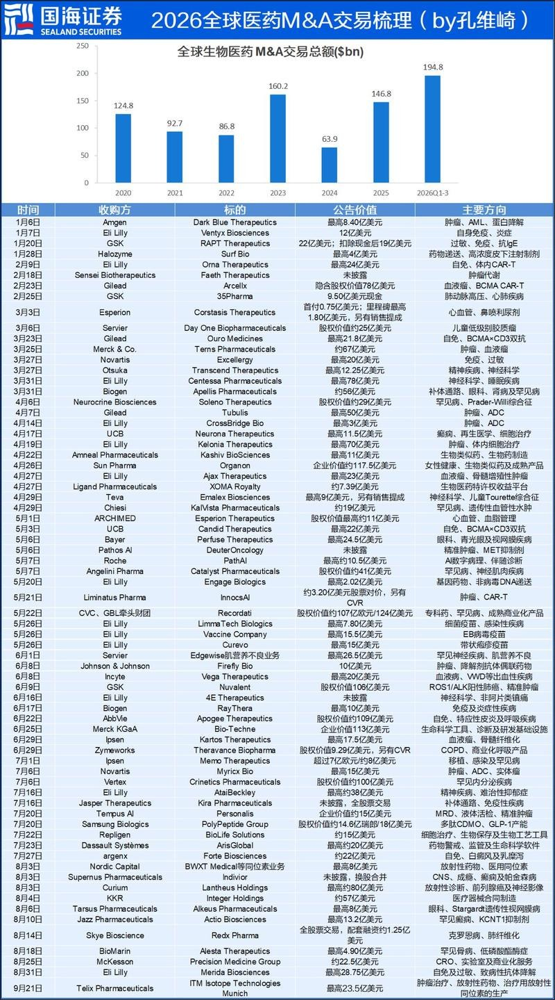
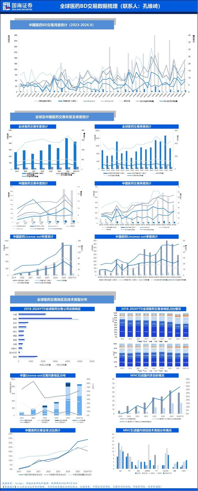
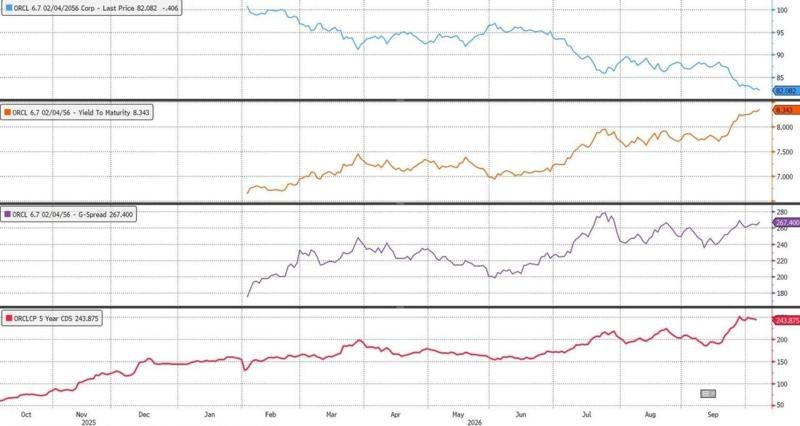
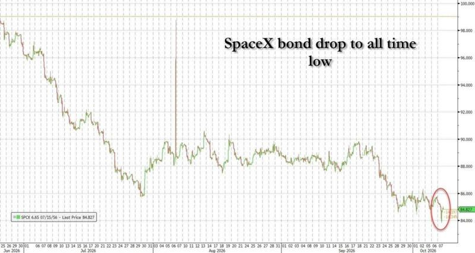

调研纪要 · 2026-10-08 新闻日报
星球 ID: 28855458518111 | 共 310 条帖子 | 精华 82 条
| 查看研究积累
强制同步到研究积累
全部 电子 计算机 其他 电力设备 机械设备 医药生物 宏观策略 交通运输 社会服务 基础化工 非银金融 食品饮料 传媒 通信 银行 家用电器 商贸零售 公用事业 建筑材料 煤炭 建筑装饰 有色金属 石油石化 汽车 房地产 纺织服饰 环保 农林牧渔 国防军工
书签
【三峰环境】香港220亿港币项目落地，强call❗️
【三峰环境】香港220亿港币项目落地，强call❗️
☀️事件：公司与中建香港联营体正式签署香港I·PARK2合约，设计日处理生活垃圾 6000 吨、批出总价约 219.5 亿港币，NEC4+DBO 模式、建造期约 54 个月、运营期 15 年。
#1、安全边际足。公司当前132亿市值，26pe仅10x，3.6%股息。
#2、海外弹性大。参照此前澳门项目盈利能力及此次香港项目规模，弹性可观！
⭕️ 英杰电气更新：9月单月半导体订单继续新高，金刚石散热相关电源加速放量【中信建投电新】
⭕️ 英杰电气更新：9月单月半导体订单继续新高，金刚石散热相关电源加速放量【中信建投电新】
【半导体订单持续高增】#公司1-9月半导体新签订单同比增长近150%（增速远快于行业），#9月半导体订单继续创单月新高。
【金刚石散热订单加速放量】#9月金刚石相关订单放量明显（8月已有明显上量趋势），主要为MPCVD微波电源，随着金刚石散热在AI算力及半导体领域应用推进，该类电源已经为公司贡献新的增长动能。
【我们认为，英杰电气的预期差在于半导体平台化能力】公司持续向射频电源、脉冲电源、MFC等半导体核心零部件延伸，传统半导体工艺电源保持较快增长，新兴业务逐步进入订单兑现阶段，产品矩阵持续完善。
【Q3业绩有望迎来拐点】此外，我们预期Q3公司业绩同比有望由负转正（主要是半导体开始进入密集确收期），Q3有望成为公司业绩重回增长通道的重要拐点。
公司26、27年PE分别为58、31X，持续看好。
中信建投电新团队 陈思同/朱玥
【立讯精密】并购补强数据中心结构件+端侧工控EMS+汽车智能底盘，协同打开成长空间！
【立讯精密】并购补强数据中心结构件+端侧工控EMS+汽车智能底盘，协同打开成长空间！
[礼物]金德：补强精密金属结构件，拓展AI数据中心布局
➠金德专注金属冲压制程，已向一家海外CSP客户稳定交付交换机机壳。
➠立讯拟收购金德60%股权（考虑可转债全部转股之后）。金德冲压与立讯金属压铸工艺互补，产品有望由交换机机壳拓展至服务器机壳、液冷柜及电源柜相关结构件；依托立讯海外数据中心客户渠道，加快其余7家海外数据中心品牌客户导入，扩品类、拓客户双轮驱动，未来5年有望成长10倍以上！
[礼物]致丰：整合EMS组装能力，布局游戏、工控及智能家居硬件
➠致丰以电源变压器、工业电源研发生产为基础，具备游戏及工控类产品EMS组装经验。
➠立讯已就收购致丰75%股权签署谅解备忘录。依托立讯游戏硬件、智能家居技术积淀，叠加旗下广翼工控能力及致丰成熟的游戏、工控产品组装经验，各方将协同打造面向游戏设备、工业边缘计算与智能家居赛道的硬件组装平台。
[礼物]京西：完善汽车产品矩阵，提升Tier 1配套能力
➠京西前身为通用汽车底盘研发团队，2002年率先开发并量产磁流变悬挂，2009年收购德尔福悬架和制动业务，拥有悬挂、制动两大业务线，可提供满足L4级自动驾驶需求的智能底盘系统，服务法拉利、保时捷、奔驰、宝马等全球50+家主流客户。
➠立讯拟收购京西智行集团100%股权。收购有望补齐智能底盘系统能力，与汽车线束、辅助驾驶、智能座舱及动力系统协同，提升单车配套价值量；京西客户资源与立讯、莱尼互补，有望推动产品交叉导入，为未来10-15年提供千亿级营收增量。
风险提示：交易推进及交割不及预期；客户拓展与业务整合不及预期；下游需求不及预期。
【晶晨股份】Q3再创单季历史新高，业绩持续超预期❗️
【晶晨股份】Q3再创单季历史新高，业绩持续超预期❗️
📖事件：公司发布26Q3业绩预告：
【收入】26.89-27.89亿，中枢27.39亿，yoy+57%，qoq+10%
【归母净利润】6.49-6.99亿，中枢6.74亿，yoy+235%，qoq+54%
【扣非净利润】6.40-6.90亿，中枢6.65亿，yoy+284%，qoq+67%
Q3延续环增趋势，再创单季收入及归母净利润历史双高，业绩强劲增长，利润同环比高增，超预期！
#份额稳增、主力产品量价齐升
1️⃣S系列出货量稳居全球第一，T系列持续导入全球主流终端，业务快速增长，预计26年T系列出货量份额有望达全球市场1/3；
2️⃣主力产品持续放量，高端T系列新品在多家头部终端品牌客户导入加速，产品结构进一步优化；
3️⃣受存储成本上涨影响，公司合理调整全线产品售价，实现量价齐增，Q3提价全面落地，带动毛利率及净利率显著提升，26Q3净利率25%，yoy+13pct、qoq+7pct。
[红包]依托多产品线落地及海内外客户持续拓展，叠加深度绑定谷歌，公司预计26年营收有望突破100亿元，全年营收及利润将创下历史新高，当前估值低位，重视！
风险提示：行业竞争加剧，下游需求不及预期等。
【鼎龙股份】Q3利润同比较快增长，CMP业务稳步增长，新能源&光刻胶多点推进
【鼎龙股份】Q3利润同比较快增长，CMP业务稳步增长，新能源&光刻胶多点推进
📖事件：公司发布26Q3业绩预告：
【收入】9.90亿，yoy+2%，qoq+10%
【归母净利润】3.1-3.3亿，中枢3.2亿，yoy+54%，qoq+15%
【扣非净利润】预计Q3非经损益0.15亿，扣非净利润2.95-3.15亿，中枢3.05亿，yoy+52%，qoq+23%
下游半导体及新能源锂电行业需求旺盛，公司订单较快增长，利润超预期！
#抛光垫业务稳步增长、抛光液放量加速
➠CMP抛光垫：26Q3收入约3.91亿元，yoy+22%，qoq+6%，9月出货量再创单月历史新高，硬垫和软垫规模化扩产项目分别按计划推进；
➠CMP抛光液、清洗液：26Q3收入约1.39亿元，yoy+65%，qoq+29%，铜及铜阻挡层显著放量，抛光液自产研磨粒子搭载率已超80%；
➠显示材料：26Q3收入约1.07亿元，yoy-25%，qoq-2%，受下游产能稼动率不足、行业整体复苏节奏不及预期等影响，短期承压，但市占率及新产品覆盖度保持提升态势。
#新能源业务客户进展顺利
新能源锂电功能性辅材业务于26年3月开始并表，期间（3-9月）收入约4.63亿元，yoy+59%；其中Q3同比增长59%，环比增长17%。海外市场拓展顺利，已向海外客户实现小批量出货；新一代分散剂成功导入头部客户并供货，有望持续贡献增长。
#高端晶圆光刻胶逐渐起量
前三季度收入约1024万元，现已有10款产品取得订单，Q3出货稳步提升。光刻辅助材料研发有序推进，已布局6款产品，其中两款主流产品计划Q4推向市场，有望成为新增长点。
风险提示：行业竞争加剧，下游需求不及预期等。
众生药业（002317.SZ）：RAY1225减重三期获得顶线数据，疗效优于替尔泊肽，有BIC潜力
众生药业（002317.SZ）：RAY1225减重三期获得顶线数据，疗效优于替尔泊肽，有BIC潜力
[玫瑰]事件：公司发布公告，RAY1225（GLP-1/GIP双靶点双周制剂）注射液减重III期临床试验获得顶线分析数据结果。
疗效：9mg组体重较基线降低22.24%，经安慰剂校正后降低20.46%（P<0.0001），3mg和6mg组经安慰剂校正后分别降低11.23%、17.42%（P<0.0001）；
减重达标率方面：RAY1225注射液9mg组体重相对基线降低≥5%和≥15%的比例分别为99.3%、82.1%，均高于替尔泊肽15mg（Q1W，52周）的85.8%和61.4%；≥20%的比例为53.8%。
安全性方面：未发现新增安全性信号。最常见的为胃肠道相关不良反应，严重程度大多较轻微，腹泻、恶心、呕吐和便秘等发生率，在数值上低于或与替尔泊肽SURMOUNT-CN的报道值相当。
实验相关：入组641例，随机接受 3mg、6mg、9mg 或安慰剂治疗，Q2W，52 周。
RAY1225其他适应症：RAY1225两项降糖 III 期均已完成入组，肥胖合并 OSA III 期获 NMPA 批准；2026 年 1 月授权齐鲁制药中国权益，2 亿首付已到账。
[玫瑰]ZSP1601（pan-PDE抑制剂，MASH）：5月发布IIb期顶线数据积极，潜在全球口服BIC
其他：昂拉地韦片（已上市，已纳入医保），Amylin、三靶、RSV等处于临床前。
[抱拳]我们于 2026/9/21 发布了众生药业深度报告，链接：
【浙商医药‖郭双喜】众生药业深度：创新转型进入兑现期，ZSP1601潜在空间大 ↗
风险提示：临床进展/海外进展不及预期；竞争格局恶化；创新药商业化不及预期。
艾芬豪矿业（IVN-CN）季度KK铜产量环比增长19%，全年铜产量或接近指引下限
艾芬豪矿业（IVN-CN）季度KK铜产量环比增长19%，全年铜产量或接近指引下限
📍铜产量与指引：3Q26 Kamoa-Kakula（KK）可销售铜产品产量7.64万吨，环比增长19%，其中包括6.15万吨阳极铜、0.23万吨外部冶炼粗铜、0.56万吨炉渣精矿及0.69万吨高品位铜细料。后者主要来自此前生产的库存物料。公司预计2026年铜产量将接近29-31万吨指引区间下限
📍采矿进展：3Q26 Kamoa及Kansoko矿区采矿量环比提升30%至每月70万吨以上，年化约850万吨，主要受新增采矿团队、Kahala新斜坡道投用及采场回采启动推动。Kakula矿区继续推进外围巷道开发，为后续高品位区域回采创造条件，季度地下巷道掘进速度创历史新高，4Q26目标进一步提升至每台凿岩台车每月135米
📍选矿表现：3Q26一期及二期选厂处理矿石182万吨，环比增长30%，主要受Kakula及Kansoko供矿增加带动。随着Project 95改造于7月完成，选厂铜回收率提升至创纪录的88.9%；三期选厂处理矿石167万吨，三座选厂合计产出铜精矿含铜量6.82万吨。公司正继续优化选矿流程，以降低精矿硅含量并提高回收率
📍冶炼与硫酸：KK配套50万吨/年铜冶炼厂继续维持约60%设计产能运行。3Q26副产品高浓度硫酸产量创纪录达到11.86万吨，平均净实现价格环比约翻倍至900美元/吨，其中9月约950美元/吨。公司预计4Q26硫酸价格仍将维持高位，目前硫酸主要销售给刚果金铜矿带的铜钴湿法冶炼企业
📍电力供应：KK配套光伏及储能设施已于9月全面投运，可持续提供60MW基荷电力，其中光伏装机峰值容量433MW、储能容量1,107MWh。随着设施爬坡，9月现场柴油发电机耗油量较7月下降约40%。公司已签署额外60MW购电协议，计划未来18个月内将光储设施基荷供电能力提升至120MW
📍Kipushi锌矿：3Q26锌精矿含锌产量7.71万吨，环比增长10%，连续第七个季度实现环比增长，年化产量约30.9万吨。季度入选矿石锌品位提升至创纪录的41.6%，选矿回收率亦创纪录达到96.0%。公司预计2026年产量将接近24万-29万吨指引上限，使Kipushi跻身全球前三大锌矿
📍Platreef项目：3Q26一期选厂产出铂族金属及黄金合计4,552盎司，环比显著提升，目前仍主要处理低品位开发矿石，预计4Q26高品位采场回采将逐步增加。二期330万吨/年选厂建设按计划推进，预计4Q27完成；二号竖井扩径工程持续推进，预计2028年底具备人员及物资提升能力、2029年底具备矿石提升能力
【中泰建材&化工|孙颖团队】华鲁恒升深度报告：低成本煤化工典范，周期底部蓄势成长
【中泰建材&化工|孙颖团队】华鲁恒升深度报告：低成本煤化工典范，周期底部蓄势成长
#低成本煤化工典范、竞争优势明显。1）吨氨、吨尿素成本处行业成本曲线左侧，成本优势显著；2）构建“一头多线”柔性联产体系，可灵活调节产品结构，实现效益最大化；3）期间费用率长期3%-5%，人均创收创利行业领先。
#多数产品价格价差处于历史低位、修复可期。尿素出口配额落地、指导价取消，供需温和改善；草酸/DMC受益磷酸铁锂与储能需求高增，公司作为行业龙头有望率先受益；己内酰胺/PA6协同限产稳价，效果显著；醋酸、DMF供需逐步转好。
#产能释放+平台升级、产品矩阵持续拓展。公司形成德州+荆州双基地布局。德州氨合成尿素置换项目增加75万吨尿素产能，预计27H1投产，气化平台升级能耗预计再降约5%。荆州二期新增BDO/NMP/PBAT等产品，部分已投产；三期规划30万吨TDI，拓展产品矩阵。
[玫瑰]报告链接：
华鲁恒升深度：低成本煤化工典范，周期底部蓄势成长【中泰建材&化工|孙颖团队】20260928 ↗
[爆竹]风险提示：原材料价格波动风险、需求不及预期风险、新增产能投放及爬坡不及预期风险
【首华燃气】#气价超预期弹性大！"放量降本"战略资源：中石油的估值vs高速成长！【东吴环保】
【首华燃气】#气价超预期弹性大！"放量降本"战略资源：中石油的估值vs高速成长！【东吴环保】
🆙假期海外气价震荡上行❗️欧洲库存处于2021年以来同期最低，较俄乌冲突初期的2022年同期低179.5TWh！JKM、TTF均已突破一季度高点、处年内高位，分别达6.19/6.17元/方，较二季度均价大涨44%/63%，同比上涨120%/112%！
详情：截至10月6日，欧洲天然气库存826.3TWh，同比低119.6TWh，库容率仅72.97%，处于2021年以来同期最低水平；截至10月7日，JKM/TTF/HH分别为6.19/6.17/0.76元/方，较9月30日+0.5%/+4.9%/+4.5%，较二季度均价+44%/+63%/+5%，同比+120%/+112%/-10%。截至10月6日，布伦特原油期货结算价为100.6美元/桶，较9月30日下跌2.8%，较二季度均价上涨4.5%，同比上涨53.6%。
🆙高进口依存度下，国内气价有望延续上行❗️2026年1—8月我国天然气进口依存度约40%。国内LNG出厂价截至9月30日为4.25元/方，较二季度均价上涨5.8%；Q3均价为3.96元/方，较Q2均价4.02元/方下降1.5%，9月底价格已呈现明显回升（9月环比+9.3%）。参照3月第一轮涨价规律，进口成本传导有望继续推动国内气价上行！
这意味着#首华燃气业绩弹性有望进一步释放！ 我们预计26-27年归母净利润为6.87/8.44亿元，对应PE为13.7/11.2倍（26/10/8）。假设国内气价上涨30%/50%（即LNG出厂价由4.25元/方涨至5.5/6.4元/方），1/3敞口对应"上修后的"27年业绩弹性为39%/67%；后者对应2027年PE约6.7倍。公司中长期气量仍具成长空间，#高成长的中石油buff叠满！
🆙稀缺深层煤层气量价齐升！成本下降&政策强化。
＃1月深度报告"喷薄欲出，降本放量业绩超预期"发布以来，波动中坚定推荐！
风险提示：油气价格波动、开发进度等
☎深层煤层气行业深度：
☎煤层气政策解读与技术跟踪：
☎深层煤专家解读：
☎深度路演
☎近况更新+非常规气补贴解读：
海螺创业组织11月项目调研想去哪里[呲牙]
海螺创业组织11月项目调研想去哪里[呲牙]
分红稳，脱离业绩波动：1，水泥承诺分红不低于50%，不低于0.92元。2，垃圾发电国补回款改善。那么海螺创业分红也能抗住。股息率5%+
新管理层预计都是水泥的，加强协同。
今年业绩受成本费用和负极材料影响（下半年负级改善），集团刚进来。
【国联民生能源 周泰团队】陕西煤业26M9原煤/商品煤产量同比上升，环比微降
【国联民生能源 周泰团队】陕西煤业26M9原煤/商品煤产量同比上升，环比微降
2026年9月，公司煤炭产量为1500万吨，同比+3.02%，环比-0.13%；自产煤销量为1340万吨，同比+6.18%，环比-0.67%。2026年1-9月产量为13548万吨，同比+3.91%，自产煤销量为12391万吨，同比+3.8%。
2026年9月，公司完成发电量51.55亿千瓦时，同比+41.12%，环比+7.66%；完成售电量48.68亿千瓦时，同比+41.72%，环比+8.32%；2026年1-9月，公司完成发电量335.2亿千瓦时，同比+6.24%，完成售电量315.22亿千瓦时，同比+6.51%。
⏰发布日期：2026年10月8日
⚠风险提示：基于公开资料信息整理，可能存在信息滞后或更新不及时、不全面的风险；任何情况下，不构成投资建议。
☎联系人：国联民生能源开采团队 周泰/李航/王姗姗
继续推荐古茗：供应链与运营为基，大众现饮龙头成长可期
继续推荐古茗：供应链与运营为基，大众现饮龙头成长可期
[太阳]下沉市场“卖新鲜”的便利店，高频快反、自建冷链、数字化运营。古茗是国内大众现制茶饮龙头，其核心竞争力包括：①货架型产品策略，高频快反：具备强大研发团队，产品推新速度快，不依赖大单品；②高密度门店与自建冷链相辅相成：借助地域加密策略和庞大的仓储物流基础设施，古茗能够以相对经济的成本向加盟商提供高品质、短保质期食材，摊薄成本、控制损耗、保障品质；③强加盟商管理，数字化提效：古茗要求加盟商亲自在店管理，为加盟商提供包括自动化设备、标准化操作流程、自有技术系统在内的多方面运营支持，保障门店运营一致性，并与加盟商风险共担。
[太阳]现制饮品市场空间广阔，供应链与运营能力筑核心壁垒。中国人均现制饮品消费量提升潜力大，下沉市场是主要增长来源。外卖大战引爆短期需求，加快现制饮品渗透率提升进程。现制饮品行业品类周期持续迭代，头部品牌发展分化，核心是供应链与运营能力的比拼：①紧跟消费者需求变化，持续进行产品创新，并提供最优性价比选择；②保障加盟商经营稳定性，让加盟商持续赚到钱。
[太阳]从区域深耕到全国扩张，品类延展提振单店销售。①开店：产品力、运营能力等综合竞争优势为古茗全国扩张奠定基础，公司结合线上线下营销，整合资源逐个地域打造品牌知名度。我们测算古茗国内开店空间超过3万家，长期拓展海外市场也值得期待。②单店销售：单个空白省份从建立布局到实现关键规模，品牌势能提升、规模效应显现；布局咖啡品类，依托现有门店网络快速铺开，复用自有冷链物流体系，将“新鲜”的基因从茶饮延伸到咖啡品类，实现“好喝不贵”，提高单店坪效。
【高争民爆】市场没有太关注到公司近期正在进行的【资本运作公开招投标】，忽视了这条核心主线在有序推进，而反复纠结于公司是否年内改名、上修回购价等次要信息。
【高争民爆】市场没有太关注到公司近期正在进行的【资本运作公开招投标】，忽视了这条核心主线在有序推进，而反复纠结于公司是否年内改名、上修回购价等次要信息。
这个位置的高争我们坚定看好，中长期逻辑和目标空间不变。
具体交流反馈和解读欢迎私信[抱拳]
广汇能源：2026年前三季度业绩预增公告
广汇能源：2026年前三季度业绩预增公告
2026年前三季度，预计实现归母净利润27亿至28亿元，同比大幅增长166.83%至176.71%；扣非净利润达27.4亿至28.4亿元，同比增长191.96%至202.62%。
单季度看，2026年第三季度预计归母净利润达14.2亿至15.2亿元，同比激增795.08%至858.12%；扣非净利润为14.05亿至15.05亿元，同比增长高达1242.85%至1338.43%。
【国金电子】博硕科技今日nv审厂自动化组装设备，交流情况良好。目前给nv的组装及检测设备品类正持续扩容
【国金电子】博硕科技今日nv审厂自动化组装设备，交流情况良好。目前给nv的组装及检测设备品类正持续扩容
nv设备自控是大趋势，目前博硕已确定拿到nv双code，包括美金代码（量产code）与人民币代码（研发code），测试自动化设备订单本月落地。
光智科技，今天回调大概率被光芯片带着的，但其实 InP 衬底这个环节是利好的，尤其是有海外大厂 6 寸片订单的公司
光智科技，今天回调大概率被光芯片带着的，但其实 InP 衬底这个环节是利好的，尤其是有海外大厂 6 寸片订单的公司
【东山精密】刚发完之后有很多领导问我两个问题：
【东山精密】刚发完之后有很多领导问我两个问题：
1、光芯片占比这么低吗？
我说的是东山的情况，因为算bom的话，东山的光芯片是自制的，其他家是买的光芯片，光芯片厂商的毛利率还有大几十个点，这么一算的话，在其他光模块公司里光芯片物料成本占比应该10-20%合理。
2、东山买不了别家光芯片，他未来出不了货。
其实没有任何一条说不让用中国的光芯片，只是大家觉得dsp和光芯片占bom的成本比较高，所以凑65%比较容易，还是那个道理，东山其他96-98%的bom满足整体65%美国物料即可，这个目前来看是容易做到的。
所以，东山我认为是错杀的，您觉得呢？
【九州一轨】简评：会被大摩报告怎样影响？
【九州一轨】简评：会被大摩报告怎样影响？
1. 属于代工环节，单个光模块的价值量占比很低，＜1%的量级，属于小而美的头部聚集市场
2.也一般都倾向于外包，因为自己采购设备后切割，参数Knowhow问题会导致良率下降，得不偿失。不如直接让设备公司做服务
所以整体上，无论政策最后市场解读方向如何，对九州这个个股的影响比较小
源杰科技会议要点
源杰科技会议要点
生产交付情况：提前1-2年布局产能，今年3、4季度的交付也是稳中有升。
产能扩产进展：1）国内二期10亿投入、主要为27年做准备，厂房主体、洁净室均已建设完成，设备已开始进场。2）国内42亿项目，前置手续在推进，将支撑28年以及之后的产能增长。3）海外产能也在布局。
出货情况：1）70mw 100mw cw应用于800G、1.6T光模块，27年出货进一步提升。2）NPO的方案多，100mw以上，配合多个模块厂商，竞争对手少、身位在第一替代，明年有重要增量。3）CPO方面，开发了300mw、400mw产品，能够获得客户充分信任，性能指标最前沿。4）今年100G EML开始出货，有信心推进200G EML出货（测试指标非常优秀）。
客户核心关注要素：第一核心要求是产品可靠性，第二核心要求是批量交付能力。批量交付能力的前提是优异的良率、产品一致性及可靠性。
FCC政策风险：没有官方信息，也并非新信息，很多没有定论。公司也在海外布局产能。美国对原厂地COO规则需要研究，GPU、DSP等原产地也都不是美国。公司在国内和海外都有产能布局，公司也会研究可能细则并达到合规要求。
【聚辰股份】10月起传统主业（eeprom、vcm driver）大幅涨价20%~50%，所有业务全面向好
【聚辰股份】10月起传统主业（eeprom、vcm driver）大幅涨价20%~50%，所有业务全面向好
【招商化工】建议关注润禾材料，最新研发出#金刚石相变导热片！
【招商化工】建议关注润禾材料，最新研发出#金刚石相变导热片！
导热效率大幅提升！传统的导热垫片填料是氧化铝、氮化硼、氮化铝，导热率仅有3-8W/(m·K），而公司金刚石填料能将导热率推至10-15W/(m·K），同比提升200%-500%。
该产品比传统导热硅脂好处在类似便利贴，精准可靠，可根据需要增加减少
据 CNBC 报道，特朗普 8 月份斥资高达 2500 万美元购入 Meta 股票，并持有 SpaceX 数百万美元的债务。
据 CNBC 报道，特朗普 8 月份斥资高达 2500 万美元购入 Meta 股票，并持有 SpaceX 数百万美元的债务。
谷歌推出面向职场的“通用”Gemini 人工智能代理
谷歌推出面向职场的“通用”Gemini 人工智能代理
人工智能巨头正面临严重的财务困境
人工智能巨头正面临严重的财务困境
英伟达支持的数据中心公司首次公开募股需求突然暴跌，揭示了人工智能融资热潮中出现的新裂痕。
英伟达支持的数据中心公司首次公开募股需求突然暴跌，揭示了人工智能融资热潮中出现的新裂痕。
投资者在考虑 Anthropic PBC 计划进行的巨额 IPO 时，正面临着一个不寻常的难题：如何评估一家有人担心可能会毁灭人类的公司的价值。
投资者在考虑 Anthropic PBC 计划进行的巨额 IPO 时，正面临着一个不寻常的难题：如何评估一家有人担心可能会毁灭人类的公司的价值。
华尔街专业人士表示，尽管 Meta Platforms Inc. 的 Muse 似乎已经抢占了先机，但芯片制造商仍然是股票投资者参与顶级人工智能代理竞赛的最佳途...
华尔街专业人士表示，尽管 Meta Platforms Inc. 的 Muse 似乎已经抢占了先机，但芯片制造商仍然是股票投资者参与顶级人工智能代理竞赛的最佳途径 。
智能水平 vs 每项智能任务成本
智能水平 vs 每项智能任务成本
🍁🍁🍁锂电排产更新
🍁🍁🍁锂电排产更新
🍁电池环节：10月行业整体预计306.4GWh，同比+72%，环比+6%，11月行业整体预计317.7GWh，同比+72%，环比+4%。
11月来看：
Top1预计117.5GWh，同比+56%，环比+4%
Top2预计49.3GWh，同比+92%，环比+6%
Top3预计23.6GWh，同比+114%，环比+2%
🍁碳酸锂环节：10月行业整体预计11.6万吨，同比+26%，环比+1%，11月行业整体预计12.4万吨，同比+30%，环比+7%。
🍁铁锂环节：10月行业整体预计64.0万吨，同比+62%，环比+4%，11月行业整体预计66.3万吨，同比+61%，环比+4%。
🍁三元环节：10月行业整体预计8.4万吨，同比+0%，环比+3%，11月行业整体预计8.0万吨，同比-4%，环比-4%。
🍁负极环节：10月行业整体预计41.8万吨，同比+58%，环比+7%，11月行业整体预计42.6万吨，同比+56%，环比+2%。
🍁电解液环节：10月行业整体预计34.0万吨，同比+64%，环比+4%，11月行业整体预计35.3万吨，同比+62%，环比+4%。
🍁隔膜环节：10月行业整体预计38.4亿平米，同比+42%，环比+2%，11月行业整体预计39.3亿平米，同比+41%，环比+2%。
20261008盘后消息汇总
20261008盘后消息汇总
其他
1.风电：国内海风下半年交付加速，招标有望反转
2.集运：Q4淡季运价期货大涨，高景气有望延续，验证集运周期复苏
3.马士基：将紧急燃油附加费（EFS）上调至20% 10月12日起生效
AI
1.谷歌云推出Gemini智能体，该智能体定位通用工作智能体
2.格芯与台积电签署20亿美元硅中介层协议，用于先进AI封装，初始期限为5年
业绩
1.行云科技：Q3净利润预计环比增长569%-716% 算力业务尤其是服务器销售业务实现爆发式增长
2.晶晨股份：第三季度净利润同比预增223%-248% 初步预估本年度营收有望突破100亿元
3.本川智能：预计前三季度净利同比增长190%-335% 高多层板、高阶HDI等高端高附加值PCB产品营收占比提升
4.东岳硅材：预计前三季度净利润同比增长19050%-19750% 主要产品价格上涨
【东吴宏观】央行10月8日人民币汇率政策立场要点
【东吴宏观】央行10月8日人民币汇率政策立场要点
📑事件：2026年10月8日，中国央行发布《中国人民银行关于人民币汇率的政策立场》，要点如下：
1️⃣从总体立场来看，中国央行重申我国实行以市场供求为基础、参考一篮子货币进行调节、有管理的浮动汇率制度，坚持让市场在汇率形成中发挥决定性作用。我国贸易发展根源于产业国际竞争力的提升，中国无意通过汇率贬值获取贸易竞争优势。同时，国际上有关均衡汇率评估模型推论“人民币汇率低估”的方式亦尚不成熟，IMF评估的是实际有效汇率，不能套用到人民币名义汇率上。
2️⃣近年来，中国贸易对汇率变化的敏感度明显下降。一方面，出口结构持续升级，从低端劳动密集型产品为主向中高端、多样化产品转变。过去5年，中国高技术产品进出口年均增长7.9%，2025年同比增速进一步升至11.4%，对外贸增长的贡献率接近六成。另一方面，约30%的贸易采用人民币结算，企业外汇套保比例达到30%左右，进一步降低了汇率波动影响。
3️⃣央行强调，经常账户与汇率之间并非线性关系，汇率受经济增长、货币政策、金融市场、地缘政治等多种因素共同影响。一方面，经常账户顺差不一定意味着本币被低估。近年来，日本、瑞士、德国等顺差国的本币都有所贬值。中国而言，贸易顺差资金可通过对外投资流向全球，国际收支基本平衡，所以顺差未必推动人民币升值。另一方面，逆差也不一定导致本币贬值。美国长期保持大额逆差，美元却总体维持强势。
4️⃣央行表示，全球经济失衡与全球分工格局演进、国际货币体系固有矛盾、部分国家长期高财政赤字高消费等密切相关，需要各方共同推动解决。主要逆差国长期未变，根源在于单一主权货币主导的国际货币体系。储备货币发行国可以长期扩张债务、维持高消费和低储蓄，但这也会削弱其制造业竞争力。各国应作出中长期政策承诺并坚持执行，避免短期内政策反复。比如，2025年的关税战引发“抢进口”，反而加剧了失衡。
🌟观点重申：对于人民币汇率走势的判断，我们认为在美元偏强震荡、欧美日等央行渐进加息的背景下，人民币并不具备大幅升值的基础。参考“8·11“汇改以来的两轮人民币升值周期及央行外汇逆周期调节规律，我们认为：中期情形下，人民币在年末结汇预期带动下或仍有温和升值空间，但美元兑人民币汇率离岸价整体或以6.60-6.75中枢双向波动为主。
风险提示：地缘冲突超预期、海外流动性收紧超预期、汇率超调风险等
[庆祝]【国泰海通宏观于博团队】生产提速，建筑修复——9月PMI数据点评
[庆祝]【国泰海通宏观于博团队】生产提速，建筑修复——9月PMI数据点评
9月制造业PMI升至50.1%重回线上，服务业和建筑业商务活动指数也分别升至50.2%、50.3%。如何看待9月PMI的全线回升？我们认为：
1️⃣9月制造业PMI重返扩张区间，经济呈现阶级性弱修复。
2️⃣天气扰动消退叠加政策发力带动生产加速，成为主要拉动项。
3️⃣全球AI周期支撑外需保持韧性，但内需新订单小幅回落，终端需求还需提振。
4️⃣此外，价格剪刀差扩大，挤压中下游利润，企业补库偏谨慎。
5️⃣非制造业内部分化，服务业K型运行，建筑业随财政资金提速加快修复。
[庆祝]报告详情请见：
【国泰海通宏观于博团队】生产提速，建筑修复 ——2026 年 9 月PMI数据点评 ↗
高盛——美国经济：FOMC会议纪要笔记——“多数”与会者认为年内再次加息“可能合适”，但委员会将持开放态度审慎推进
高盛——美国经济：FOMC会议纪要笔记——“多数”与会者认为年内再次加息“可能合适”，但委员会将持开放态度审慎推进
高盛发布FOMC九月会议纪要解读。纪要显示，鉴于通胀回落进展“不足”，全体与会者支持将联邦基金利率目标区间上调25个基点至3.75%至4%。几乎所有与会者判断通胀风险“偏向上行”，而劳动力市场风险已“减弱”并“基本平衡”。多数与会者评估认为，年内再次加息“可能合适”，但强调未来决策将“依赖 incoming 数据”，每次会议均持“开放心态”。结合8月核心PCE数据（已纳入BEA方法论变更）以及美联储副主席杰斐逊和纽约联储主席威廉姆斯的近期讲话，高盛预计美联储将在12月实施年内第二次加息，但也认为FOMC最终判定无需进一步收紧的概率很大。
核心要点
第一，加息决策与风险判断。
所有与会者支持9月加息25个基点，因通胀“仍然高企”且近期未见“足够进展”。几乎所有与会者认为通胀风险偏上行，劳动力市场风险则已减弱并基本平衡。数位与会者指出，加息前的政策利率“不具备限制性或仅具温和限制性”。许多与会者从风险管理角度将本次加息视为防范通胀“持续高于目标”的审慎之举；另有若干与会者认为，在其基准预测下加息是“必要的”，而非仅出于风险管理考量。部分与会者表示，更高利率可抑制持续高通胀导致“通胀预期脱锚”的风险；少数与会者称加息有助于防止“特定领域价格上涨……扩散”。
第二，年内再次加息的共识与数据依赖性。
关于货币政策前景，多数与会者评估认为，年内再次加息“可能合适”。但与会者同时强调，将以“开放心态”对待每次会议，未来决策“将取决于后续信息”。
第三，通胀压力的新来源：AI投资与地缘政治。
与会者指出，“持续的地缘政治发展”和“激增的AI相关投资”是通胀压力的来源。数位与会者提到，随着关税上调效应减弱，“AI建设的影响似乎仍在显现”，核心商品通胀因此保持高位。部分与会者警告，AI建设可能推动“总需求超过总供给……对通胀构成上行压力”。少数与会者指出，软件和投资组合管理费近期对PCE读数贡献超常，但随着BEA即将进行的方法论变更，这些影响可能消退。与会者认为，中期内长期通胀预期与委员会2%的目标“一致”。
第四，长期美债收益率上升与金融条件。
少数与会者将长期美债收益率上升归因于“经济走强、AI相关借贷预期上升以及地缘政治发展”。然而，许多与会者判断，尽管收益率走高，金融条件仍“支持经济增长”，理由是股市大幅上涨且企业利差收窄。这与高盛的观点一致：整体金融条件的变化对2026年GDP增长仅构成“小幅拖累”，对2027年增长的影响也应较为温和。
第五，工作人员预测上调通胀，增长与就业前景改善。
工作人员对2026至2028年的通胀预测较7月“略有上调”，预计随着关税、地缘政治和AI相关效应减弱，通胀将逐步回落，并于2029年达到2%。通胀预测风险仍“偏向上行”。相比之下，经济增长和劳动力市场前景增强：实际GDP预计“在今年下半年提速，并在2028年前超过潜在增速”；失业率预计“在2029年前持续低于工作人员对长期失业率的估计”。
第六，高盛最新加息预期。
继8月核心PCE数据（已纳入BEA方法论变更）以及美联储副主席杰斐逊和纽约联储主席威廉姆斯的近期讲话后，高盛预计美联储将在12月实施第二次加息，但也认为FOMC最终得出结论认为无需进一步收紧的可能性很大。
【国金公用煤炭】节后火电表现出色，重视三维改善
【国金公用煤炭】节后火电表现出色，重视三维改善
节后A股首个交易日火电股表现出色，火电指数上涨1.83%，广西能源涨停、蒙电&宝新均大涨。
9月中旬我们已就火电进行系列电话会（困境反转/供需改善/选股指南），旗帜鲜明的看好板块投资机会，当前再次强调：
重视火电的三维改善：
1、长协电价对煤价上涨的补偿： 10月广东、江苏月度价格已接近基准电价(较今年长协上涨约8分、5分)，广东节前现货电价接近6毛，安徽超4毛
2、供需宽松期已过： 十五五可靠容量（电力）供需紧平衡，天然气价上涨抑制沿海电力供应
3、自由现金流转正提升分红： 2024板块资本开支见顶，2025自由现金流转正，2026底部利润情况下A股仍具备4%股息，港股在6%左右，明年业绩估值均有弹性
相关标的
率先关注国电、宝新、广西能源、华能蒙电(10月金股)、华润
行情将逐步外溢至华电、华能、皖能、浙能、赣能、江苏国信等等
问了一圈，今天应该先是机构受FCC消息面抛售，然后跌到了险资和部分绝对收益资金的止损位，触发了考核机制被动大手卖出
问了一圈，今天应该先是机构受FCC消息面抛售，然后跌到了险资和部分绝对收益资金的止损位，触发了考核机制被动大手卖出
袁总中午有出来开会安抚机构了，但没用，大家都认可科技叙事还在，但大家也都确认进入熊市了，很割裂
Q3前瞻-算租篇-1008（2）
Q3前瞻-算租篇-1008（2）
#行云科技：Q3业绩超预期、服务器稳定交付
Q1-Q3归母净利润2.4-2.9亿，扣非2.45-2.95亿，若剔除股权费用影响对应归母为2.9-3.3亿；单Q3归母2.28-2.78亿，扣非2.38-2.88亿，超市场预期。增长来自：1）V+VB+VC客户的存量订单上调租赁价格，首批服务器8月起租并确收；2）服务器贸易增厚
资金准备充足：最新授信额度为215亿，已签署合同总额为66亿元；公司此前公告26年采购金额从70亿上调到200亿
后续催化：关注存量客户涨价，新订单落地，消保解除等，#继续重点推荐
#盛视科技：预计Q3高增长，此前指引年内交付2000台高端服务器，稳步推进当中，H1业绩已有所体现，Q3业绩将加速增长，且主业口岸查验业务或赋能算力新业务#新增重点推荐
#杰创智能：预计Q3高增长，服务器到货速度较好，且B200涨价将逐步体现；后续布局明年超节点业务；阿里云栖大会提到32年数据中心到32GW，杰创当前规划2年capex400亿投入；token工厂已上线，从短剧率先切入
#智微智能：预计同环比均有增长，服务器贸易转向算租，token工厂在逐步推进和大模型合作
☎️细节电话详询～π点求支持～
【行云科技】2026年前三季度业绩预告
【行云科技】2026年前三季度业绩预告
[玫瑰]事件：10月8日，行云科技发布2026年前三季度业绩预告，预计前三季度归母净利润2.40亿元至2.90亿元（取中值2.65亿元），同比扭亏为盈；扣非净利润2.45亿元至2.95亿元，扭亏。
[太阳]业绩改善原因：业绩大幅修复主要源于AI算力基础设施市场需求旺盛，算力业务尤其是服务器销售实现爆发式增长；此外头部大客户认可公司交付能力，存量订单协商上调租赁价格增厚毛利，多个头部客户服务器集群自8月起正式起租并确认收入，算力租赁运营规模持续放量。
【东吴电新】宁德时代：连续回购持续落地，9月以来累计金额约35亿元
【东吴电新】宁德时代：连续回购持续落地，9月以来累计金额约35亿元
#10月
[太阳]10月8日：回购69.78万股，回购价285.19-287.21元/股，成交金额约2亿元。
#9月
[太阳]9月29日：回购69.71万股，加权平均回购价286.89元/股，成交金额约2亿元。
[太阳]9月24日：回购68.04万股，加权平均回购价293.94元/股，成交金额约2亿元。
[太阳]9月23日：回购66.51万股，加权平均回购价300.71元/股，成交金额约2亿元。
[太阳]9月21日：回购368.75万股，加权平均回购价298.27元/股，成交金额约11亿元。
[太阳]9月18日：回购151.26万股，加权平均回购价301.70元/股，成交金额约4.56亿元。
[太阳]9月16日：回购309.83万股，加权平均回购价305.65元/股，成交金额约9.5亿元。
[太阳]9月11日：首次回购60.43万股，加权平均回购价330.93元/股，成交金额约2亿元。
9月以来公司已累计实施8次回购，合计回购约1164.30万股、金额约35亿元，回购股份均拟用于注销。公司回购整体呈现股价调整时持续承接特征，8次回购均发生在股价当日下跌时，按上述倒序回购日股价分别下跌1.50%/1.78%/2.49%/1.19%/1.61%/0.77%/3.44%/2.23%。
【东吴北交所】骏创科技：T客户精密注塑核心供应商，启动简易程序再融资，欢迎对接！
【东吴北交所】骏创科技：T客户精密注塑核心供应商，启动简易程序再融资，欢迎对接！
[太阳]本次募资不超过7000万元（补流3k+还贷4k），不超过35名特定对象，发行底价为定价基准日前 20个交易日均价的 80%，限售6个月。
#亮点：
[玫瑰]主营精密注塑零部件及配套模具，新能源车轻量化提升单车塑料件用量；储能行业装机高速增长，公司储能零部件已实现规模收入。
[玫瑰]“以塑代钢+集成注塑”为跨赛道复用的稀缺平台能力，有望在算力/链接、机器人等新型赛道复用带来增量。
[玫瑰]全球头部客户长期绑定（T 客户、安通林、斯凯孚、广达、和硕、宁德等），认证壁垒深厚，客户粘性强。
[玫瑰]全球产能兑现业绩拐点，盈利质量扎实：2026H1营收 3.63亿元（同比+11%）、归母净利 2102万元（同比+37%）、扣非增速同比+71%，北美基地营收占比超 25% 且已连续三季度盈利。
（以上信息均来自于公司公告，不代表我司观点）
---
[礼物]再融资对接欢迎联系东吴北交所团队（朱洁羽/武阿兰）
【CC电新黄雄】本川智能：三季报预告高增，AI电源PCB+CIPB双轮驱动
【CC电新黄雄】本川智能：三季报预告高增，AI电源PCB+CIPB双轮驱动
1、业绩预告：前三季度归母净利0.96-1.44亿元，同比+190.24%~335.36%，取中位数Q3单季盈利0.77亿元，环比抬升150%，公司持续出清低毛利订单，高端产品占比提升。
2、业务看点：布局AI服务器电源PCB，直接受益算力电源需求；CIPB芯片内嵌功率基板为核心亮点，属于功率基板前沿方案，适配AI电源、碳化硅电控等高功率场景。
3、盈利展望：预计26/27年净利润分别2/5亿元，电源PCB提供业绩基本盘，CIPB产业化落地打开长期成长空间，近期30亿投资分别投向两块业务扩产。
4、兼具成熟AI电源板+先进CIPB技术储备，成长弹性突出，看150e。
【天风商社|金股推荐】毛戈平：新品矩阵持续扩容，估值性价比突出
【天风商社|金股推荐】毛戈平：新品矩阵持续扩容，估值性价比突出
[爱心]近期数据亮眼，增长有望延续
品牌9月抖音销售额预计1.76亿元，同比+67.4%；Q3抖音累计销售额5.96亿元，同比+46.8%，实现较快增长。线上高频数据验证公司品牌热度和销售动能，全年业绩仍具备较强支撑。
[爱心]上半年彩妆新品突出，下半年护肤香水接力
上半年线上彩妆增长48%，熊猫花花联名产品已售约30万件且80%为新客，验证新品和年轻化策略成效。下半年公司主动加大投入，护肤推出芍妍金曜系列，香水预计持续推出香水及香氛新品，形成新的增长接力。
[爱心]高端定位稳固，品牌价值持续释放
定位高端国货，坚持控价和品牌力建设，具备东方美学、专业服务和高端渠道等差异化优势。公司不依赖大幅折扣换取短期销量，长期有望通过产品力、复购率和消费者口碑持续沉淀品牌资产，持续看好其中长期成长空间。
[爱心]公司未来三年收入复合增速仍在15%以上，当前估值相较于公司成长性具备较高性价比。我们预计2026-2028年收入65.29/82.19/102.95亿元，yoy+29.27%/+25.90%/+25.25%，归母净利润15.20/19.08/24.14亿元，yoy+26.22%/+25.55%/+26.54%，对应PE12.3/9.8/7.8X。
☎联系人：何富丽/都春竹
【西部银行】不良贷款转让统计月报（202609）
【西部银行】不良贷款转让统计月报（202609）
信贷脉冲vs沪深300同比收益率
信贷脉冲vs沪深300同比收益率
TrendForce：六大领先制造商押注 VCSEL NPO，预计到 2031 年 VCSEL 市场规模将达 6.5 亿颗
TrendForce：六大领先制造商押注 VCSEL NPO，预计到 2031 年 VCSEL 市场规模将达 6.5 亿颗
根据 TrendForce 的最新报告，AI 数据中心 Scale-Up（纵向扩展）对网络传输需求的快速增长正在推动
【20261008-市场波动点评】
【20261008-市场波动点评】
高景气重仓方向遭遇预期冲击，成为今日市场调整的直接诱因。北美AI供应链是当前少有的兼具高景气与机构重仓特征的领域，节日期间海外市场围绕FCC规则的猜测，引发相关公司今日开盘后集中下挫、多股跌停。与此同时，部分创新药代表性公司的海外合作方股价在假期大跌，也带动国内板块调整。科技与创新药两条重要主线同时承压，严重挫伤市场情绪。但需要区分，政策猜测不等于限制已经落地，海外合作方的股价波动也不等于国内公司基本面发生同等变化。
主动定价资金的腾挪空间受限，使局部波动更易扩散。当前具备主动定价能力的机构资金，较大部分仍重配科技。核心持仓因预期变化急跌甚至跌停，会在一定程度上“锁住”这批资金：既难以顺畅调仓，也会因净值回撤而收缩风险预算、降低买入力度，必要时还需卖出其他资产补充流动性。因此，科技下跌并不意味着资金会立即流向其他板块，同时其他板块也面临一定的承接约束。今日午后的跌势扩散，我们认为已体现出一定的交易性流动性压力，不宜简单归因于各行业基本面的同步恶化。
中期资金面的担忧，正在压过短期三季报的业绩支撑。海外高利率、油价带来的通胀与潜在加息压力，以及未来半年多的限售股解禁压力，共同强化了投资者对后续资金供求的顾虑。市场关注的已不只是三季度盈利能否兑现，更是这些盈利应给予什么估值、后续有多少资金愿意承接。解禁并不等于实际减持，但对潜在供给的担忧已经影响当下的风险偏好。在这一阶段，部分行业的高增长仍不足以立即抵消资金面预期转弱带来的估值压力。
一轮市场出清后，我们认为四季度仍存在进攻窗口，配置上以“能化+AI”为主，同时关注创新药、银行和煤炭。短期的剧烈调整实际上反而减轻了三季报兑现前后的博弈，不必将流动性冲击直接外推为四季度机会的结束。能化侧重供需格局与盈利兑现，AI侧重新技术、新催化等机构持仓较轻的方向，创新药关注海外扰动消化后、核心管线与商业化逻辑未变的优质公司，银行和煤炭则关注基于现金回报的配置价值。
欢迎联系A股策略团队：裘翔/高玉森/张铭楷/陈泽平/陈峰/朱立伟/陆天一/许元睿/李世豪
今日纯债基金净赎回，净赎回强度-17.53%；固收+净赎回，净赎回强度-58.31%；可转债基金净赎回，净赎回强度-15.42%；权益基金净赎回，被动净赎回，净...
今日纯债基金净赎回，净赎回强度-17.53%；固收+净赎回，净赎回强度-58.31%；可转债基金净赎回，净赎回强度-15.42%；权益基金净赎回，被动净赎回，净赎回强度-29.18%，主动净赎回，净赎回强度-5.29%
📑 GS HK MARKET WRAP 高盛香港市场综述
📑 GS HK MARKET WRAP 高盛香港市场综述
📊 恒生指数 -1.4% | 恒生中国企业指数 -0.9% | 恒生科技指数 -2.9% | 成交额 2070 亿港币
📈 领涨板块：能源板块 +2.1%，必需消费品板块 +0.8%，地产板块 +0.3%
📉 领跌板块：医疗保健板块 -3.5%，信息技术板块 -3.3%，原材料板块 -2.2%
📰 港股今日整体下行。
📰 内地市场恢复交易带来流动性回归，随着成交量回归常态，投资者倾向于在港股进行卖出操作。
📰 市场内部表现分化，黄金周的旅游数据、缺少即时催化因素，以及美国存托凭证（ADR）走低，共同影响市场情绪。
📰 大型科技股遭遇卖盘，医疗保健板块出现获利了结，两方面因素共同对恒生指数形成压力。
📰 南向资金重回市场提供支撑，但力度仅勉强维持市场不出现大幅下挫；南向资金净买入约 8.25 亿美元。
💹 资金流向方面：科技股遭遇卖压，阿里巴巴的美国存托凭证在隔夜出现抛售，腾讯在港股盘面也出现卖出。
💹 网易出现少量买盘，但整体来看，科技板块卖出意愿更强。
💹 同时，消费板块（安踏体育 2020）与保险板块（1339）也出现卖出。
💹 医疗保健板块虽然整体走弱，但盘面存在充足买盘，药明康德获得买入，国药控股持续有买盘，而金斯瑞生物科技被卖出。
💹 石药集团交易活跃，呈现多空双向成交。
🏥 医疗保健板块回落，回吐了部分前期涨幅，成为今日表现最差板块。
🏥 在我看来，板块下跌背后没有明确的利空导火索，更多属于技术性回调。
🏥 恒生科技指数下跌 2.9%，同样拖累大盘指数。
🏥 MiniMax 下跌 13.7%，智谱 AI 下跌 7.6%；MiniMax 承压，原因来自美国同行持续降价，以及投资者对其下一代旗舰模型发布进度缺乏耐心。
🏥 能源板块与必需消费品板块表现抗跌。
🏥 银行板块同样录得 1.1% 涨幅，避险买盘持续涌入，而成长股持续遭遇卖盘。
📊 WHAT DROVE MARKETS？市场驱动因素
📊 WHAT DROVE MARKETS？市场驱动因素
📰 亚洲股市普遍收低，投资者对油价上涨、美债收益率走高以及货币政策收紧预期升温的综合影响做出反应。
📰 由于中东局势持续紧张，布伦特原油价格攀升至每桶 102 美元以上，加剧了通胀担忧，并抑制了该地区的风险偏好。
📰 科技股和半导体板块表现不佳，尤其是在北亚地区，原因是投资者在人工智能贸易中获利了结，并在财报背景参差不齐的情况下重新评估过高的估值。
📰 中国结束黄金周假期复市进一步增加了压力，由于情绪较为疲软以及政策支持措施的担忧重燃，内地和香港市场表现挣扎。
📰 外资卖出仍是多个市场的共同主题，部分市场成交量普遍保持低迷。
📰 防御性板块、部分金融股和部分内需板块提供有限支撑，但大多数地区市场的广度依然为负。
📰 新加坡是今日东盟市场的焦点，星展银行（DBS）、华侨银行（OCBC）和大华银行（UOB）推动指数下跌超过 3%，原因是该行业在进入第三季度财报季之际，继续面临美债收益率飙升和净息差（NIM）收窄担忧带来的阻力。
🌍 REGIONAL WRAPS 地区综述
🇦🇺 澳大利亚：S&P/ASX 200 -0.76%。澳大利亚股市走低，该指数有望连续第二天下跌，由于华尔街走弱和通胀担忧重燃令情绪承压。
🇦🇺 油价高企（布伦特原油价格超过 102 美元 / 桶）强化了美联储可能在年底前再次加息的预期。
🇦🇺 原材料板块领跌，矿业股成为指数下跌的主要拖累。必和必拓（BHP）下跌 2.0%，是指数下跌的最大贡献者，而 Weebit Nano 是 ASX 200 指数中表现最差的股票，下跌 11.5%。
🇦🇺 由于 Firmus 计划中的 IPO 存在不确定性以及投资者需求疲软的报道，Maas Group 一度暴跌 30%。
🇦🇺 抵消部分跌幅的是，在里昂证券（CLSA）上调评级并强调 9 月季度交易活跃后，ASX 一度上涨 5.4%，而 Arena REIT 上涨 5.3%。
🇦🇺 市场广度依然为负，ASX 200 指数的 200 只成份股中有 123 只走低。
******** 台湾：TAIEX -0.99%。台湾股市在长周末前因投资者获利了结而回落，尽管科技板块普遍走弱，但市场仍维持在 49000 点上方。
******** 台积电（2330）、联发科（2454）和联电（3037）拖累指数下行，而水务相关标的提供支撑。
******** Aspeed（5274）盘中波动剧烈，一度触及跌停，随后回升，收盘仅略低于前一交易日。
******** King Slice（2059）在月度营收下滑后，连续第二个交易日下跌。
******** 科技行业之外，大多数非科技板块走高，为大盘提供了一定支撑，但金融股表现滞后，下跌 1.7%。
🇰🇷 韩国：KOSPI -2.64%。韩国股市小幅高开，但盘中大幅转低，最终收于 50 日均线下方，报 6692 点。
🇰🇷 外资连续四个交易日卖出，卖盘集中在科技股，金额约 11 亿美元；国内机构投资者亦为净卖方。
🇰🇷 散户投资者通过逢低买入提供支撑，向科技股投入约 15 亿美元。
🇰🇷 Samsung Electronics（005930）在开盘前公布初步第三季度业绩后下跌 2.4%。该股起初因营业利润符合预期而走高，但由于明显的利好出尽抛售，全天走势疲软。
🇰🇷 Samsung Electronics 和 SK Hynix（000660）均收跌 2.4%，在期权到期和半导体 ETF 调仓活动的影响下，跌幅在收盘前有所扩大。
🇰🇷 相比之下，LG Energy Solution（373220）在第三季度业绩超预期后上涨 2.6%，带动了电动汽车供应链的走强。
🇰🇷 KOSPI 成交额较 20 日均线高出 10.5%，而韩元兑美元汇率下跌 9 个基点，至 1340.2。
🇯🇵 日本：NKY -1.42%。受广泛抛售影响，日本股市从开盘高点回落，东证指数（TOPIX）33 个板块中有 26 个下跌，约 77% 的东证指数成份股收低。
🇯🇵 整个交易时段价格波动剧烈。随着 30 年期日本国债拍卖平稳通过，且长端收益率在日内区间小幅走高，银行股反弹带动东证指数短暂修复。
🇯🇵 然而，由于美股期货走弱，同时美债收益率和原油价格双双走高，日经指数和东证指数在最后一个小时内回吐了下午的所有涨幅。
🇯🇵 金融股和权重科技股领跌，其中东证银行板块下跌 2.08%，TOPIX 银行板块下跌 3.02%，两者合计贡献了东证指数约 54% 的跌幅。
🇯🇵 日经指数表现优于东证指数，尽管早盘出现的 AI 相关半导体强势在收盘前有所消退。
🇯🇵 SoftBank（9984）下跌 4.3%，Tokyo Electron（8035）下跌 2.5%，TDK（6762）下跌 5.0%，合计占日经指数跌幅的约 46%。
🇯🇵 铠侠（285A）受美光强劲业绩以及预期被动资金流入影响，盘中一度上涨 4.1%，但最终收于盘中低点附近。
🇯🇵 市场成交额依然低迷，为 7.6 万亿日元，连续第四个交易日低于 8 万亿日元，且比 10 日平均水平低 6%。
🇨🇳 中国：SHSZ300 -1.35%。中国股市在黄金周假期后的首个交易日走低，投资者回归，同时面临着油价上涨、美债收益率走高以及对近期政策支持力度不及预期的失望情绪。
🇨🇳 沪深 300 指数下跌 1.35%，科创 50 指数盘中触及六个月低点，原因是约一年前上市的科技公司迎来了一波解禁潮。
🇨🇳 受估值担忧影响，半导体和人工智能相关股票持续承压，整个芯片供应链的疲软拖累了大盘。
🇨🇳 此外，随着官员们在北京会晤，旨在避免更广泛贸易争端的谈判正在进行，中欧贸易紧张局势的升级也引发了额外的谨慎情绪。
🇨🇳 布伦特原油价格升至每桶 102 美元以上，加剧了通胀担忧。
🇨🇳 抵消部分跌幅的是，台积电强于预期的第三季度营收为人工智能需求提供了积极的解读，而药明康德（603259）表现出色并创下历史新高。
🇭🇰 香港：HSI -1.43%。香港股市连续第二个交易日下跌，恒生指数收于 7 月 7 日以来的最低水平，而恒生科技指数显著走弱。
🇭🇰 投资者情绪承压，国内市场在黄金周结束后复市，叠加美国国债收益率走高以及黄金、内地市场表现疲软等因素，共同拖累港股。
🇭🇰 汇丰控股（0005）是拖累指数下跌的最大个股，下跌 4.9%。科技股成为主要拖累，中芯国际（0981）下跌 6.2%，舜宇光学科技（2382）下跌 7.2%，小米集团（1810）下跌 10.5%。
🇭🇰 部分标的出现反弹，药明康德（2359）逆势上扬，创下历史新高。台积电强于预期的营收业绩为 AI 相关情绪提供了一定支撑，但不足以抵消整体的抛售压力。
🇮🇩 东盟：JCI -1.69%。印尼股市随地区趋势走低，雅加达综合指数（JCI）下跌 1.69%。
🇹🇭 泰国：SET -0.36%。泰国市场表现优于多数地区同行，泰股走强有助于缓冲大盘风险偏好回落带来的冲击。
🌏 东南亚整体市场情绪由油价上涨和全球债券收益率走高引发的广泛避险情绪主导。
🇮🇳 印度：NIFTY -1.60%。印度股市遭遇剧烈抛售，Sensex 和 Nifty 指数均下跌约 1.5%，原因是投资者对印度储备银行（RBI）转向更紧缩的政策做出负面反应。
🇮🇳 市场预期 12 月将再次加息 25 个基点，并在 2027 年上半年再加息 50 个基点，目前市场对印度储备银行更多加息的定价有所增加。
🇮🇳 布伦特原油逼近 104 美元 / 桶，中东供应担忧以及美国对伊朗潜在打击的担忧持续存在。
🇮🇳 相对而言，银行板块表现疲软，但相对优于大盘指数；金属、能源和房地产板块跌幅居前。
🇮🇳 小盘股指数下跌 2%，市场广度相对疲软，下跌家数接近上涨家数的 4 倍。
📊GS 韩国最终数据 —— 跌破 50 日移动平均线
📊GS 韩国最终数据 —— 跌破 50 日移动平均线
📈📌KOSPI 指数变动 - 2.62%，指数点位 6625.9，成交额 173 亿美元，海外资金净流出 14.87 亿美元。
📈📌KOSDAQ 科斯达指数变动 - 0.69%，指数点位 892.3，成交额 57 亿美元，海外资金净流入 4900 万美元。
📑市场回顾
📌KOSPI 小幅高开后，盘中大幅逆转走低，最终收于其 50 日均线（6692 点）下方。
📌外资连续第四个交易日净卖出，抛售集中在科技股，金额达 11 亿美元，本地机构投资者也同为净卖方。
📌散户投资者逢低买入，买盘集中于科技股，买入金额 15 亿美元。
📌三星电子 (005930) 下跌 2.4%，成为市场焦点；该公司在开盘前披露了第三季度初步业绩，股价在营业利润符合预期后曾短暂走高，但随着交易进行转而下跌，似乎受到 “利好出尽” 型卖压的影响。
📌三星电子和 SK 海力士 (000660) 均下跌 2.4%，受期权到期及半导体 ETF 再平衡影响，尾盘进一步走弱。
📌与此同时，LG 能源解决方案 (373220) 上涨 2.6%，因公布超预期的第三季度业绩而跑赢大盘，并带动今日电动汽车供应链 (GSXAKREV) 整体走强 1.3%。
📌KOSPI 成交额较 20 日均值高出 10.5%。
📌韩元贬值 9 个基点，至 1340.2 韩元 / 美元。
📰主要头条新闻
📌半导体板块走弱：三星电子 (005930) 下跌 2.4%，SK 海力士 (000660) 下跌 2.4%。两只股票开盘时小幅走高，因三星电子强劲的第三季度初步业绩提振了市场情绪。第三季度营业利润符合预期，为 107.4 万亿韩元，对比彭博一致预期的 106.3 万亿韩元、高盛预期的 106 万亿韩元，业绩大概率由稳健的 DRAM/NAND 基本面驱动。
📌然而，三星电子回吐了早前的涨幅，这似乎是由于其符合预期的第三季度初步业绩引发 “利好出尽” 式的抛售，加之期权到期前及半导体 ETF 再平衡前的谨慎情绪所致。两只股票收盘均走低，外国机构投资者与本地机构在 SK 海力士合计净卖出 6.37 亿美元、2500 万美元，在三星电子合计净卖出 2.17 亿美元、8.05 亿美元。
📌散户投资者继续逢低买入两只股票，在 SK 海力士买入 1.4 亿美元，在三星电子买入 9.92 亿美元。其他公司则在 SK 海力士买入 5.23 亿美元。
📌与此同时，半导体设备股大幅上涨，其中 JUSUNG ENG (036930) 上涨 8.1%，WONIK IPS (240810) 上涨 2.0%，EUGENE TECH (084370) 上涨 2.5%。
📌韩美制药 (128940) 下跌 10.0%：韩国食品医药品安全处批准韩美制药的 Efeoto 注射液成为该国第 45 款本土研发药物，也是其首款国产 GLP-1 肥胖症治疗药物。
📌今日的下跌似乎是由 “利好出尽” 的获利回吐所驱动，此前该股因肥胖症管线预期而经历了一轮强劲反弹。
📌外资是唯一的净卖方，而本地机构投资者和散户投资者则逢低买入。
📌电动汽车供应链板块走强：GS 韩国电动汽车供应链指数 (GSXAKREV) 上涨 1.3%，由 LG 能源解决方案 (373220) 领涨 2.6%；该公司公布的第三季度初步营业利润意外超预期，达到 7560 亿韩元，彭博一致预期为 2668 亿韩元。
📌据悉，扣除美国税收抵免后的营业利润为 3391 亿韩元。
📌其他电动汽车电池股，如三星 SDI (006400) 上涨 1.2%、ECOPRO BM (247540) 上涨 3.5%、POSCO Future M (003670) 上涨 0.9%，也因溢出效应同步走高，表现优于大盘指数。
📌该公司定于韩国时间 11 月 3 日上午 10 点召开电话会议。
[太阳]【华泰地产】828细则跟踪：二三线城市细则或呈现更多灵活性
[太阳]【华泰地产】828细则跟踪：二三线城市细则或呈现更多灵活性
[玫瑰]截至10月8日，北京、上海、广州、武汉相继发布住房销售制度改革细则。我们认为北上广方案相对严格，武汉则提供更多灵活空间，未来更多城市细则灵活性或普遍优于北上广，有助于缓冲销售制度改革对于房企和行业的影响。总体上，我们认为市场对于销售制度改革的反应已相对充分，未来将重新聚焦房地产量价复苏进程，供（销售制度改革）需（房贷贴息）两端的双重优化或将更多城市房价加速筑底。我们对于地产板块转向积极，重点推荐更能适应新模式的房企：1）融资、产品力、工程能力、或持有运营管理能力突出的房企：华润置地、中国海外发展、建发国际集团、招商蛇口、滨江集团、中国海外宏洋、建发股份、绿城中国、中国金茂、越秀地产、城投控股、龙湖集团、新城控股；2）头部二手房经纪商；3）头部港资房企：太古地产、新鸿基地产；4）优质商管及物管公司：华润万象生活、绿城服务、招商积余。
[玫瑰]北上广方案：相对严格的一线城市范本
北上广方案相对类似，在新老划断、土地分期方面给予一定空间，但在新项目预售条件和资金监管、竣备条件等方面较为严格。具体来看：新老划断方面，三城均对828前已拿地（含正在出让）但未取得工规证的项目作出过渡性安排，在区政府确保能交付且加强预售资金监管的情况下，27年底前可按原预售条件执行。土地分期方面，三城均要求30天内缴纳不低于总价款的50%，余款最长两年内缴清。新项目预售条件和资金监管方面，三城均要求单体建筑应完成主体结构封顶（北京额外要求取得相关单位验收记录），京沪明确要求预售资金全额、全过程监管，三城均未提及保函置换。竣备条件方面，三城均未做出优化，仅广州提出支持项目分期分栋开发。
[玫瑰]武汉方案：给予更多灵活空间
相对于北上广，武汉方案在多个方面增加了更多灵活性。新老划断方面，武汉允许26年底前纳入智能建造试点/认定为装配式建筑的项目，26年底前取得工规证和施工证的，可按原预售条件+预售资金监管政策执行。土地分期方面，武汉允许半年内缴纳不低于50%，余款最长两年内缴清。新项目预售条件和资金监管方面，武汉单体建筑主体结构封顶条件有所放松，且明确提及“新项目保函置换政策另行制定”，为后续保函置换预售监管资金留下空间。竣备条件方面，武汉支持项目按最小单元分批竣工备案，且可按地上/地下、毛坯/室内装修分阶段办理竣备手续。此外，武汉对于销售制度改革后的潜在流程堵点进行优化，例如完善现房销售抵押注销、开展分户土地使用权集合设定抵押试点等。沿用《量化测算住房销售制度改革对房企和行业的影响》（26.9.13）中的模拟项目，武汉细则下，我们预计现售项目股东IRR有望从5.6%提升至11.6%，较旧预售（18.0%）的降幅收窄至36%。
[玫瑰]其它城市灵活性或普遍优于北上广
我们认为土地分期、竣工周期缩短等有望显著缓冲销售制度改革带来的影响，而保函置换、税务优化等也将提供一定助力。总体来看，四城细则均能带来一定缓冲，武汉空间相对更大，我们预计其它城市也将陆续跟进，且总体灵活性或普遍优于北上广。而即便是北上广，我们认为执行端亦不排除在竣备认定、保函置换、税负等方面存在优化可能。
陈慎 刘璐 林正衡
[太阳]【国盛建材何亚轩/程龙戈团队】10月电子细纱涨幅继续扩大，关注纱布一体化企业
[太阳]【国盛建材何亚轩/程龙戈团队】10月电子细纱涨幅继续扩大，关注纱布一体化企业
[太阳]卓创资讯10月电子纱/布价格出炉：1）G75纱价格2.55-2.6万元/吨，环比涨幅3000元/吨，7628厚布价格12.9-13.3元/米，环比涨幅1.5元/米，近三个月G75纱及7628厚布的月度涨价额分别保持稳定；2）E225纱价格6-6.5万元/吨，环比涨幅10500-12500元/吨（幅度20.6%-24.4%），纱线环比涨幅进一步扩大；配套2116薄布价格17.4-18元/米，环比涨幅2.5元/米（幅度16.4%），布绝对价格涨幅环比上月持平；3）D450纱价格13-13.5万元/吨，环比涨幅27500-28000元/吨（幅度26.5%-26.7%），纱线环比涨幅进一步扩大，1080薄布价格18-18.5元/米，环比涨幅2.5-2.6元/米（幅度16%上下），布绝对价格涨幅稳中有增。
[太阳]本月价格变化呈现两方面特征：1）电子布月度涨价额整体未明显扩大，但价格中枢继续抬升，薄布每米涨价额仍高于厚布。后续跟踪重点可由价格急涨逐步转向涨价持续性。2）电子细纱环比涨幅进一步扩大，或反映细纱供需偏紧程度继续提升；同时，细纱与电子布涨价节奏分化，纱布一体化的企业成本盈利更有优势。
[太阳]普通电子纱/布方面重点关注两类盈利改善路径：一是具备较强技术实力、能够通过厚薄产品结构调整提升盈利的标的；二是具备可外售纱线余量、能够根据纱线外售与自用织布的相对收益灵活调整销售结构的标的。重点关注中国巨石、中材科技、国际复材。
[太阳]风险提示：电子布需求释放不及预期风险；供给投放超预期风险；内部转产节奏不及预期风险。
☎更多信息请联系【国盛建材团队】何亚轩/程龙戈/陈冠宇或对口销售
【华泰建筑建材】洁净室产业链更新261008
【华泰建筑建材】洁净室产业链更新261008
亚翔工程（6139）
今日公布9月单月营收为107亿新台币（23亿人民币），同比+5.97%，主因去年9月结算基数远高于其他月份，环比维持高位月度收入；1-9月累计实现营收786亿新台币（165亿人民币），同比+52%，Q3单季营收为326亿新台币（69亿人民币），同比+33%。
美光业绩会：提及27年产能预售超过75%，目前已签署26项长协锁定约1500亿美元长期订单，物理AI有望成为增量需求驱动，27H1财年资本开支预计250亿美元，下半年将更高，且大部分增量将用于新建晶圆厂（工程支出），新加坡HBM先进封装洁净室准备工作进度超前，预计27年初投产，NAND项目按计划推进预计28H2投产。
据台湾经济日报近期（9月底10月初）报道，台积电拟在德州达拉斯规划第二园区、评估再建6座先进晶圆厂，新增总投资或超越此前亚利桑那州2650亿美元。市场高度关注台积电下周法说会是否会对此进行回应。根据此前历史经验，通常媒体针对台积电美国资本开支发布报道后，一般会在一到两个季度内得到确认。
我们的观点：增量需求不断、长协转扩产，海外资本开支仍在加速，台湾洁净室企业卡位稀缺有望充分受益，建议关注亚翔集成（TSMC二供、MU核心供应商）、圣晖集成（母公司已在德州设立子公司）、美埃科技（全球化布局，进军东南亚、美国、台湾等市场）。
下周重点关注：
10月15日14:00台积电法说会
欢迎联系：黄颖/樊星辰
奶价持续向上，叠加巴西牛肉配额耗尽催化，推荐乳制品板块
奶价持续向上，叠加巴西牛肉配额耗尽催化，推荐乳制品板块
#肉价上行利于提升淘牛价格+生物公允价值，商务部公告自巴西进口牛肉10月1日零点起加征55%关税，巴西成为继澳大利亚之后，第二个触发中国牛肉保障措施配额的主要牛肉出口国。10月8日节后首日，全国600-650KG育肥牛中间价约29.96元/公斤，销区山东活牛10月7日均价31.8元/公斤，一周涨3.9%。
#奶价上行趋势基本明确。散奶价格从5月开始持续反弹，双节旺季备货催化下，华东华中多地散奶价格已经逼近3.8元/kg，大多数区域散奶价格超过3.5元/kg，合同奶价26年7月也在5年内首次实现同比转正，9月第一周主产区生鲜乳价格3.06元，同比+1%。
#上行周期有望维持2-3年。供给侧短期看青贮压力有望加速完成本轮出清，根据农村部，截至26年7月奶牛存栏576.8万头，7月去化0.4万头，环比6月2.2万头有所放缓，8月有望重新加速。长期看由于本轮下行周期维持4-5年，牧场因现金周转压力出清较多后备牛，一定程度上会影响后续扩产节奏。需求侧伊利/蒙牛8月液奶分别实现小个位数/双位数增长，乳制品深加工开始放量，对原奶价格形成向上支撑。
#头部牧业逆势扩张，有望充分受益于奶价弹性。7月20日现代宣布正式完成对中国圣牧的收购，8月5日优然与赛科星签订资产置换意向书，两家奶牛存栏均超过61万头，年产能均突破400万吨，奶价变动对于利润弹性非常大，叠加牛肉价格上涨利好，继续推荐优然牧业、现代牧业、伊利股份、新乳业。
集运：Q4期货价格大涨，高景气延续
集运：Q4期货价格大涨，高景气延续
[爆竹]Q4淡季运价期货大涨。7月中旬以来，#集运期货10-12月合约价格分别上涨48%、80%、82%，淡季运价中枢大幅抬升，集运高景气有望延续，验证集运周期复苏。
[烟花]Q3运价同比涨幅扩大。7月份是欧线旺季高峰，之后货量和运价环比回落，所以7月中旬以来，运价季节性回调35%。但是同比涨幅扩大，#从Q2的33%到Q3的95%，验证集运周期复苏。
[Gift]需求复苏、供给低谷。东亚出口增速近30%，欧美进口增速近15%，背后是欧美销售增速大幅上升、库存周期上行，欧美日韩PMI共振向上。库存周期上行2年左右，#估计需求高增长到2027年底。而运力5%低增长到2027H1，所以集运高景气有望到2027年中。
[红包]推荐中远海控、中谷物流、锦江航运。欧美干线运价涨幅领先，中远海控受益，Q3利润增长60%；红海航线运价大涨，中谷物流开拓红海航线，#Q3利润增长200%； 东南亚航线运价大涨，锦江航运、德翔海运、海丰国际受益。
稳稳的幸福：海外通胀#美10年期国债收益率升至5.36%，国内利率低位，红利资产的避险防御属性凸显，优质红利标的仍然可以作为长期底仓配置。
稳稳的幸福：海外通胀#美10年期国债收益率升至5.36%，国内利率低位，红利资产的避险防御属性凸显，优质红利标的仍然可以作为长期底仓配置。
📈悄悄的新高：今年以来，山东高速、皖通高速、粤高速A、宁沪高速H、四川成渝（+1）、招商港口、青岛港等接连创新高。
零食量贩：基本面强势+估值回落，底部配置窗口显现
零食量贩：基本面强势+估值回落，底部配置窗口显现
#核心观点：零食量贩双寡头门店扩张动能不减，板块估值回调至26年年内12倍左右，强势基本面与估值水平形成错配，建议重视板块底部配置机会。
🚪门店扩张持续高增，行业集中度加速抬升：9月渠道高频数据印证赛道高景气延续，鸣鸣很忙、万辰集团单月净开店分别达1600+/1200+家（非公司口径）；鸣鸣很忙签约门店规模突破3万家，万辰集团门店总量达到2.6万家。依托供应链壁垒与成熟加盟管理体系，龙头持续抢占下沉市场存量空白点位，行业马太效应持续演绎，双寡头竞争格局进一步固化。
👋行业重心由规模扩张转向精细化运营，店型迭代带动店效改善：赛道发展阶段切换，行业竞争主线从门店数量竞速转向运营效率比拼。①品类结构扩容：新增蛋挞、烤肠等热食品类，配套冷链基础设施持续完善，拓宽门店品类边界，驱动客单价与用户复购同步提升；②门店模型优化：通过点位优化叠加店型持续打磨，龙头依托选品能力与数字化运营，不断夯实单店盈利模型。
🔢板块估值回落至历史低位，底部配置窗口显现：受市场风格轮动叠加短期舆情因素扰动，板块年内出现明显回调。当前两大龙头估值回调至26年年内12倍左右，27年PE回落至10倍以内；对照业绩增速水平，PEG落在0.3~0.5区间，估值性价比显著。
✅中长期维度，国内零食量贩赛道仍处在快速渗透阶段，行业集中度上行逻辑具备持续性。龙头凭借门店网络规模、直采供应链议价能力、数字化运营体系、成熟加盟管理四大核心壁垒，叠加资本端赋能，有望实现门店规模扩张+盈利水平爬坡的业绩双击。看好头部企业强者恒强，重点关注港股鸣鸣很忙、A 股万辰集团。
🎁农业周专题系列二十六：旺季逐步证伪，预期与现实倒逼产能加速去化
🎁农业周专题系列二十六：旺季逐步证伪，预期与现实倒逼产能加速去化
消费旺季已至，猪价不涨反跌，产能去化周期进一步拉长。养殖行业现金流亏损已经持续7个月左右，旺季猪价持续不及预期且行业资金压力不断加大，三季度以来全行业产能去化明显加速，我们预计本轮产能去化周期或延续到明年上半年，能繁母猪的累计去化幅度或超过10%。我们认为，本轮猪周期在持续亏损叠加政策调控双重影响下，养殖大周期反转可期，且养殖产能常态化调控的开启将给行业可持续发展打下坚实基础，行业发展更加有序健康，我们持续看好具有成本和现金流优势的养殖龙头，重点推荐：德康农牧，牧原股份，温氏股份和神农集团。
重点鞋服品牌抖音数据9月跟踪
重点鞋服品牌抖音数据9月跟踪
[月亮]抖音平台数据显示，9月份鞋服品牌抖音增速较8月整体略有回落，行业分化延续。
注：由于蝉妈妈已不再显示GMV绝对值及同比增速，我们选取销售额指数（蝉妈妈平台基于商品成交相关数据综合计算生成）进行大致测算，不代表品牌实际销售情况，存在一定误差，同比数据仅供参考~
#男装品牌增速整体回落，但比音勒芬延续高增并进一步提速。 哈吉斯+5%/报喜鸟-24%/比音勒芬+265%/海澜之家-1%/九牧王-5%/利郎+24%/TOMMY HILFIGER+24%/杰克琼斯+45%。
#户外品牌分化明显，Salomon、凯乐石、探路者等品牌呈现改善。 迪桑特+19%/可隆+22%/始祖鸟-69%/Salomon+135%/Wilson+84%/北面-2%/探路者+17%/迪卡侬+32%/骆驼-11%/牧高笛-57%/凯乐石+88%/乐飞叶-16%/伯希和+28%。
#运动品牌整体承压，多数品牌增速回落。 安踏+11%/Fila-8%/李宁-1%/特步+52%/索康尼-30%/361度+12%/阿迪达斯+18%/耐克-28%/lululemon+4%/SKECHERS+13%。
#休闲&童装整体改善。 优衣库+20%/森马-3%/太平鸟+39%/乐町+15%/巴拉巴拉+2%，森马系增速回落。
#家纺增速整体回落，富安娜、亚朵星球保持较快增长。 罗莱-39%/水星家纺-10%/富安娜+66%/亚朵星球+50%。
9月数据跟踪，持续更新ing🔥🔥
9月数据跟踪，持续更新ing🔥🔥
【比音勒芬】26Q3延续上半年增长势头。赞助高尔夫国家队9月出征爱知·名古屋亚运会，男团、女团均首夺亚运金牌，创造历史。9月Snow Peak上海青浦奥莱、武汉万象城开店，国庆期间Venis四店齐开，势能向上，期待比音10·18品牌日再创佳绩，坚定首推！
【李宁】9月线下趋势改善（中秋拉动），全渠道与8月趋势相近，折扣仍有加深。
【安踏】中秋增长较好，国庆相对普通，整体三季度延续二季度趋势。
【江南布衣】9月流水增长中单位数，国庆期间增长10%以上。
【地素时尚】9月全渠道流水高单位数增长，国庆期间增长高双位数。
【海澜之家】9月及国庆前6日，国内主品牌线下均有增长。
【森马服饰】9月流水，整体同比-4.8%，分拆森马-12.4%，巴拉-7.4%。其他+23.7%。1-9月累计流水，整体同比+5.6%，分拆森马+1%，巴拉巴拉+3.7%。其他+29.7%。分渠道看，线上9月-10.3%，1-9月累计+9.3%，线下9月-1.1%，1-9月累计+2.71%。
[烟花]国庆期间，整体+高双位数增长；9/1~10/7期间，整体+中个位数增长。
【报喜鸟】9月流水，HAZZYS+高单，其中线下+双位数、线上+低单；报喜鸟-低双；Lafuma+低单；恺米切-低双。
[烟花]国庆期间，HAZZYS+20-25%；报喜鸟+低单；Lafuma+30-40%；恺米切-低双。
[烟花]9/1-10/7累计，HAZZYS+10-15%；报喜鸟-高单；Lafuma+10-15%；恺米切-低单。
【太平鸟】9月持平略增，10月低双位数增长。
【伟星股份】9月接单+10%以上，预计26Q3营收增速高于期间接单增速。
【百隆东方】9月1-21日，总接单量-20%，其中色纺纱+10%，出货量-10%，其中色纺纱+10%，ASP同比+4.6%。预计26Q3营收下滑，但利润释放有望环比扩大。
泡泡玛特和潮玩行业周跟踪1001~1007
泡泡玛特和潮玩行业周跟踪1001~1007
⬇️本周重点：
[庆祝]潮玩行业: 美泰首个室内水上乐园预计2027年底开放，Roger Lynch自10月2日起担任美泰董事长，并将于2026年11月2日或之前就任首席执行官；乐高集团与三丽鸥宣布建立多年合作关系，计划自2027年起推出多款LEGO Sanrio产品及套装；欧洲品牌授权展在伦敦开幕，2025年全球授权商品和服务销售额为3898亿美元、同比增长5.45%，欧洲为824亿美元、同比增长3.8%。
[礼物]泡泡玛特：华为推出与泡泡玛特Hirono小野联名的nova 16 Pro限定礼盒；首饰品牌popop在北京东城区王府井大街apm开设新店；泡泡玛特美国白原市The Westchester购物中心门店安排开业庆祝活动，包含限定商品及消费赠礼；截至10月6日周度，核心IP系列产品二手价总体稳中微降（隐藏款溢价率普遍约100%~200%），部分产品（如LABUBU 3.0、Why So Serious系列、星星人美味时刻/怦然星动系列等）二手价环比回暖，近期新品隐藏款溢价率约为150%~350%，Zsiga人生秀场系列MINI可动人偶和星星人好好生活系列隐藏款溢价率均超300%。
[玫瑰]美的集团更新
[玫瑰]美的集团更新
☀安装卡口径9月份持平，10月份增长；
#我们预计26Q3收入中低个位数下滑，经营利润口径预计下滑中个位数，考虑长鑫投资收益（100e+）预计归母净利润增长超20%；
#全年预期更新：我们预计收入中低个位数增长，利润预计持平。未来3年现金分红+回购注销比例预计仍维持100%。
【鼎龙股份2026年前三季度业绩预告点评】国金电子
【鼎龙股份2026年前三季度业绩预告点评】国金电子
💡鼎龙股份发布26Q3业绩预告：2026年Q3公司营收约9.9亿元，同比增长2.5%，环比增长9%；单Q3扣非后归母净利润约3.0~3.2亿元，同比yoy+47%~57%，环比yoy+19%~27%。整体符合预期。
💡各板块营收分拆如下：
✨CMP抛光垫：26Q3营收约3.9亿元，环比yoy+6%，其中9月出货量再创历史新高，环比增速放缓可能由于产能不足或验收不及预期；同比yoy+22%，增速放缓主要系25Q3单季度基数较高（25年营收最高的季度）。硬垫和软垫规模化扩产按计划推进。
✨CMP抛光液及清洗液：26Q3营收约1.4亿元，环比yoy+29%，同比yoy+65%，其中铜阻挡层抛光液放量增速显著。抛光液自产研磨粒子搭载率超过80%。
✨高端晶圆光刻胶：26年前三季度营收约1,024万元，已有10款高端晶圆光刻胶取得客户订单（较25年末增加2款）。此外，光刻辅材2款主流产品计划将于26Q4推向市场，有望成为新增长点。
✨锂电辅材：26Q3营收约2.2亿元，环比yoy+17%、同比yoy+59%。海外客户小批量出货，新一代分散剂成功导入头部客户并供货。
✨显示材料：26Q3营收约1.1亿元，环比yoy-3%、同比yoy-25%，主要系下游产能稼动率不足，行业复苏节奏不及预期。
联系人：樊志远/王倩雯
🔥【华创计算机｜大模型】#Anthropic： Haiku 5.5性能/成本比跃迁，AI Agent商业化加速20261008
🔥【华创计算机｜大模型】#Anthropic： Haiku 5.5性能/成本比跃迁，AI Agent商业化加速20261008
🛰 Anthropic发布Claude Haiku 5.5，100K Token以内输入/输出价格降至0.1/0.5美元/百万Token，较上一代下降90%，平均运行成本降低约75%；OSWorld 2.1得分由15.7%提升至72.4%，小模型开始具备较强的Computer Use、Coding及Agent执行能力。
🔹 #AI-Coding与多Agent率先受益： Agent执行复杂任务往往需要大量模型调用，此前旗舰模型全程参与导致成本较高。Haiku 5.5可承担代码修改、检索、工具调用等高频子任务，复杂规划交由旗舰模型完成，推动“强模型规划+小模型执行”成为更具经济性的架构。Cognition已将其引入Devin多Agent体系，验证降本提效路径，Coding Agent有望率先受益。
🔹 #企业AI应用商业化门槛显著下降： 模型平均运行成本降低约75%，直接改善企业Agent、智能客服、知识管理及办公自动化等高频场景的单位经济性。Asana实测任务延迟降低超30%，HubSpot的CRM模拟任务成功率达到92.8%。相较个人Agent，企业场景付费预算及ROI更明确，模型成本下降有望推动AI从辅助问答进一步进入业务流程自动执行。
🔹 #大模型竞争格局加速分化： 小模型能力快速逼近此前需要更大模型承担的任务，意味着标准化、低复杂度API的价格竞争进一步加剧。未来模型厂商不仅比拼旗舰模型能力，还需具备低成本模型、推理优化及智能路由能力。具备完整模型梯度的头部厂商有望受益，缺乏差异化能力的中小模型厂商则面临更大价格及利润压力。
🔹 #推理需求与AI-Infra价值量重构： 模型降价短期压低单Token收入，但降低Agent单任务成本后，有望推动更多高频任务进入规模部署，推理需求从“用户对话”向“多Agent持续执行”延伸。同时，模型路由、缓存复用、推理调度的重要性提升，AI Infra率先受益；推理算力能否进一步放量，则取决于新增调用需求能否超过模型效率提升带来的算力节约。
💡 投资观点：Haiku 5.5的核心产业意义，是低成本模型开始承担真实生产任务，AI行业由模型能力竞争进一步进入“能力+成本+任务完成效率”的综合竞争阶段。重点看好AI Coding、企业Agent商业化及模型推理效率优化方向，建议关注具备场景和客户入口的AI应用厂商、头部国产大模型及AI Infra，推理算力需求弹性有望随Agent渗透率提升逐步兑现。
☎ 华创计算机 周志浩16619701157/吴鸣远
[礼物]今日电子布价格如期上涨，延续年初以来月度提价趋势，以华东地区电子纱/布为例，其中7628电子布提价1.5元/米（9月份提价1.5-1.6元/米），符合预...
[礼物]今日电子布价格如期上涨，延续年初以来月度提价趋势，以华东地区电子纱/布为例，其中7628电子布提价1.5元/米（9月份提价1.5-1.6元/米），符合预期，提价后价格约12.9-13.3元/米，价格再创历史新高；2116和1080电子布均提价2.5元/米，与9月提价幅度一致，提价后价格分别为17.4-18元/米和18-18.5元/米。
[太阳]当前电子布到CCL涨价链传导顺畅，本月CCL亦有提价预期，电子布延续供不应求的格局，年底前涨价预期持续存在，节后将迎来三季报窗口期，预计电子布业绩弹性环比持续提升，经过节前调整后，当前电子布龙头估值回到低位，继续看好板块向上弹性。
🍁🍁🍁hcdx 风电：十五五把握海风主线
🍁🍁🍁hcdx 风电：十五五把握海风主线
🍁十五五深远海开发贡献主要增长。国内海风下半年交付加速，招标有望反转。
🍁欧洲海风，AR7 首个项目招标有望落地，AR8年底有望落地。
🍁管桩企业造船业务共振：新船造价&订单上行，天顺和大金都有非常好的造船资产，订单还有翻倍空间。
🍁投资建议：重点推荐东方电缆、天顺风能、新强联、大金重工、金风科技、明阳智能、三一重能、德力佳、海力风电等。
🌊风能展活动预告：10月14日万达文华酒店风能展同期闭门交流会活动，欢迎各位领导莅临参会！[爱心]
【长江石化】当前我们重点提示#海油工程的布局机会，欢迎私信交流
【长江石化】当前我们重点提示#海油工程的布局机会，欢迎私信交流
🔥海油工程强call：打破周期定价，海外高毛利订单重塑成长
#1、财务安全垫充足，整体估值显著低估
公司当前市值290 亿元，现金等近 200 亿元，几无刚性有息负债。扣除现金后，以 90 亿定价公司全套稀缺海工重资产、海上作业能力与全球 EPIC 总包资质，资产性价比突出。
#2、重资产壁垒扎实，具备稳定现金流属性
公司手握四大临港基地，合计近 400 万平米码头、滑道、大型起重设施，配套 20 艘亚洲顶级海上工程船队，覆盖深水铺管、万吨吊装、水下作业等全链条高端能力。整套硬件壁垒稀缺、难以复刻，资产安全垫扎实。
#3、海外订单迎来明确拐点，毛利率持续抬升
2025 H2海外业务正式反转，全年新增海外订单 308 亿元，同比+180%。2026 年延续强势，成功中标卡塔尔高端总包项目。2026H1总在手订单 733 亿元，其中国外订单 430 亿元，九成集中在高景气中东市场。
本轮海外订单以高难度老油田改造、水下管网 EPIC 总包为主，门槛高、议价强，2026 H1海外项目毛利率已超越国内。随着高价值订单集中进入交付周期，海外盈利能力稳步上行，成为核心业绩增量。
#4、全球海工格局重塑，海外成长空间长期打开
本轮海外放量是全球海工产能长期份额转移的结果。欧美老牌海工巨头持续收缩产能、交付成本高、排期紧张，竞争力持续弱化；中东、东南亚大量老龄油田集中进入改造周期，叠加 LNG 扩建提速，高端 EPIC 需求持续释放。
依托本土大型建造基地与成熟船队优势，公司已在中东完成标杆项目验证、拿到核心业主资质，成功从分包商升级为高端 EPIC 总包商。卡塔尔项目顺利推进后，可持续辐射沙特、阿联酋、科威特等海湾国家。同时巴西长期稳定释放 FPSO 订单，东南亚、中亚具备充足增量潜力。海外业务占比持续提升，公司逐步摆脱国内单一市场依赖，长期成长空间彻底打开。
#5、估值深度错杀，业绩与估值双击可期
当前市场仅给予公司传统周期工程估值，完全未定价海外高毛利成长。未来公司业绩弹性明确，考虑到在手订单，收入有望突破 350-400亿元，公司净利率有望修复至 10%，业绩有望突破 35 亿元，且具备持续性。公司有望迎来业绩兑现 + 估值修复的双击行情。
☄️☄️☄️MLCC国庆小结：日韩厂股价走强，三环涨价，现货小幅震荡
☄️☄️☄️MLCC国庆小结：日韩厂股价走强，三环涨价，现货小幅震荡
#假期日韩厂延续节前趋势，继续上涨： 村田+7%、三星电机+5%，太诱+25%（启动晚，补涨导致涨幅大）
10.6 三星电机再签27年2.1e美元mlcc大单（占25年收入2.5%），今年第5单（5单合计占25年收入约21%）
此外据渠道消息，#三环原厂10月份涨价10-30%、公司和其它代理暂未公示；假期现货交易量小、价格小幅震荡
☄展望10月，原厂仍在调价期，三环放货或促进Q3首次兑现业绩，10月底-11月初 日韩厂Q3业绩或迎bb ratio新高
持续看好mlcc，推荐龙头原厂及上游核心原料，重点关注：镍粉#博迁新材，陶瓷粉体#国瓷材料
🌊轨交装备：国庆假期客运双位数增长，持续看好铁路车辆环节
🌊轨交装备：国庆假期客运双位数增长，持续看好铁路车辆环节
1、假期铁路客流实现双位数增长，是增长最快的方向，没有之一。据交通运输部，国庆假期10月1日-7日全国铁路客运量15187万人次，同比2025年同期增速14.9%；考虑25年中秋国庆双节影响（8天假期），26年日均2170万人次，同比增长12.7%。铁路客运增长（同比12.7%）远好于全社会跨区域人员流动量（同比+0.6%）。
2、新通项目可期，27年通车大年明确，铁路车辆需求可期。十五五将是铁路补网强链重要的一环，国庆刚通4条线路，达1000公里，当前八纵八横完成量达86%；预计年底再通车6条线；27年有望通车4000公里以上，达2015年以来的历史高位，有望进一步提升客运量，增加车辆需求。
3、动车招标有望再来一单，27年业绩弹性大。今年以来国铁动车组新车招标268组，同比25年基本持平，预计今年仍有一次招标以备27年交付。此外，轨交海外订单释放确收有望加速，叠加20年更新替换周期到来，业绩持续增长明确。重点推荐低估值高股息的中国中车（A股息率4%+，H股息率约6%），关注通号、时代电气、时代新材、康尼、今创、祥和等。
详情欢迎交流！
另一个口径看旅游：假期延长带动跨区域出行总量增长，日均客流回落
另一个口径看旅游：假期延长带动跨区域出行总量增长，日均客流回落
[玫瑰]2026国庆+中秋假期十天，全社会跨区域人员流动量约27.87亿人次，较2025年国庆中秋8天假期总量增长约14.6%，日均约2.79亿人次、下降约8.4%。
分方式看，铁路客运量合计2.06亿人次，总量增长33.9%、日均增长7.1%；公路人员流动量合计25.45亿人次，总量增长13.2%、日均下降9.5%。水路客运量合计1387.6万人次，总量增长19.0%、日均下降4.8%；民航客运量合计2302.3万人次，总量增长20.3%、日均下降3.8%。
[玫瑰]若与2024年中秋+国庆假期（与2026年均为中秋3天+国庆7天）对比，2026跨区域人员流动量增长约5.9%，其中铁路、水路增幅较高，公路营业性客运表现强于非营业性小客车。铁路客运量增长约18.5%；公路人员流动量增长约4.9%；水路客运量增长约17.8%；民航客运量增长约8.8%
[玫瑰]国庆单节日均表现好于中秋国庆合并后表现，双节合并后日均数据低于2025年，山岳景区相对强于演艺业态。
【黄山旅游】黄山风景区2026中秋+国庆十日较2025年国庆中秋八日接待总量增长约17.5%，日均下降约6.0%；较2024年中秋、国庆合计约23.8万人次增长约13%。【峨眉山A】峨眉山2026年中秋、国庆期间，峨眉山景区合计接待游客43.54万人次，较2025年国庆中秋八日总量增长20.9%，日均下降3.2%；较2024年中秋、国庆合计33.23万人次增长31.0%。
【宋城演艺】2026中秋国庆合计排期与2025年双节期间比较，日均降幅约22.5%。较2024年中秋+国庆总场次下降约13.94%。
【陕西旅游】《
长恨歌 ↗ 》2026年国庆前五日日均演出3.60场、接待观众9720人次、实现收入310.46万元，较2025年国庆中秋假期前四日日均水平分别下降4.0%、增长1.5%、下降约0.05%，收入基本持平。单场观众、单场收入分别增长5.7%、4.1%，人均收入下降1.5%，场次减少、单场表现改善。较2024年假期日均演出场次、观众人次分别下降10.0%、14.5%，单场观众下降。
工控公司9月部分订单更新（预计值，仅供参考）
工控公司9月部分订单更新（预计值，仅供参考）
#汇川技术： 同增20%左右，分行业景气度与此前一致
#雷赛智能： 同增50%+
#禾川科技： 同增80~90%
今年工控复苏强劲，基数升高后增速保持高位！首推汇川、雷赛、信捷！
Q3前瞻-算租篇-1008
Q3前瞻-算租篇-1008
#行云科技：预计高增长，Q3服务器贸易+算租体现，高端服务器在稳定交付，公司此前公告26年采购金额从70亿上调到200亿，授信额度同步增加，关注订单+涨价催化，#继续重点推荐
#奥尼电子：预计高增长，ai业务已有所体现，9月公告三单采购合同约50亿，推理卡需求旺盛，布局高端服务器；muse开启个人agent，公司端侧当前以b端为主、c端尚在起量阶段
#蜂助手：预期内增长，Q3按照全年收入及利润节奏推进，当前已有算力合同交付，Q4将环比提速，token工厂在逐步落地
☎️细节电话详询
9月及国庆流水跟踪
9月及国庆流水跟踪
[礼物]品牌流水数据概况：十一天气较去年同期偏低，品牌流水相对表现较好，9月偏弱。
[玫瑰]李宁
9月延续7-8月负增长趋势。9月线下好于7-8月（今年9月有中秋节），电商较弱（去年9月有超品日）
[玫瑰]海澜之家
线下主品牌9月份是增长的，十一是两位数增长
[玫瑰]森马服饰
终端零售（10月8日）
9月单月：同比-4.82%，其中，森马-12.35%，巴拉巴拉-7.38%。其他23.71%。
本年累计：同比5.57%，其中，森马1.04%，巴拉巴拉3.66%。其他29.67%。
线上单月同比-10.34%，累计9.31%，线下单月同比-1.12%，累计2.71%。
十一期间，高双位数增长。
[玫瑰]报喜鸟
9月哈吉斯高单增长，报喜鸟双位数下降，乐飞叶低单增长
国庆哈吉斯20%-25%增长，报喜鸟低单增长，乐飞叶增长30%-40%
分渠道：9月报喜鸟线上高双位数下降，弱于线下
哈吉斯线上低单增长，线下双位数增长
乐飞叶线上低双位数下降，线下双位数增长
[玫瑰]九牧王
流水：9月直营中单位数增长，加盟15%-20%下降；国庆直营中单位数增长，加盟低双位数下降。
9月加盟发货中单位数下降
[玫瑰]太平鸟
9月持平略增，10月低双位数增长
[玫瑰]伟星股份
三季度接单双位数增长，9月延续之前接单趋势
台积电9月营收同比增长54.6%，3Q26营收同比增长50.9%、环比增长17.6%
台积电9月营收同比增长54.6%，3Q26营收同比增长50.9%、环比增长17.6%
台积电公布9月合并营收约NT$5,118.6亿元，同比增长54.6%、环比微降0.6%，延续8月高位。7–9月营收分别为NT$4,675.8亿元、5,148.1亿元及5,118.6亿元，合计约NT$1.4942万亿元，同比增长50.9%、环比增长17.6%，再创季度新高。公司此前指引3Q26美元营收446–458亿美元，按32新台币/美元假设折算，本季度收入较指引上限高约2.0%。我们认为，9月收入在8月高基数下保持强劲，季度同比增速较2Q26的36.0%进一步加快，反映AI/HPC及先进制程需求持续旺盛，2nm放量有望进一步支撑后续增长。
近期台积电美国扩产及Terafab合作话题持续发酵。马斯克10月3日确认正与台积电讨论潜在合作，10月7日进一步表示Terafab将自行建设和运营，台积电可能承租部分厂区。我们认为，合作形式仍在讨论，但背后更值得关注的是AI客户对长期先进制程产能的争夺：从采购芯片到讨论参与制造端布局，算力竞争正进一步向上游延伸，台积电的制造能力与交付确定性仍是核心稀缺资源。后续重点关注10月15日北京时间14:00法说会，4Q26收入指引、2nm放量、先进封装扩产及美国布局将是主要看点。
【台积电9月报点评】9月营收同比增长55%，AI算力需求持续超预期
【台积电9月报点评】9月营收同比增长55%，AI算力需求持续超预期
🔥 台积电9月营收5118.6亿新台币，同比增长54.6%，环比微降0.6%；26Q3营收约1.49万亿新台币，同比增长约50%，创单季度历史新高，并超过市场此前约1.46万亿新台币的预期。
📌 我们认为，本次数据进一步验证全球AI算力需求维持高景气。
① AI需求持续强劲。9月营收同比增速较8月的53.3%进一步提升，尽管包含新品备货等季节性因素，但连续两个月同比增长超过50%，表明先进制程需求依然旺盛。我们判断NVIDIA、AMD及云厂商自研ASIC需求有望持续支撑台积电增长。
② 先进制程与先进封装有望共同受益。随着AI芯片向更先进制程、更大芯片面积及更高HBM配置演进，晶圆制造和CoWoS先进封装需求有望同步扩张，产业链景气度具备较强持续性。
我们继续看好AI硬科技产业链。台积电作为全球AI芯片制造的核心环节，其高增长进一步增强了我们对AI资本开支落地的信心。我们继续看好先进制程、先进封装、HBM以及高速光互联等方向，重点关注AMD、NVDA及光通信产业链。后续关注10月15日台积电财报会，重点跟踪2027年资本开支、CoWoS扩产、先进制程产能及AI收入增长展望。
古茗观点更新1008
古茗观点更新1008
#短期交易层面利空预计节后将出清。据港交所系统，9月25日起，古茗创始股东开始将股股票存入渣打银行，我们预计该事项主要为创始团队应对节后缴税事项，提前将纸质股票电子化，待节后缴税金额明确后，优先以质押贷款等方式筹措资金。这也意味着自海底捞减持以来，市场担忧的短期交易层面的利空即将在近期出尽。
#公司短期经营趋势未变+中秋国庆假期经营趋势向好。Q3公司同店增速、加盟商利润环比改善趋势延续，【国庆同店增长趋势稳健且符合公司预期，我们认为若合并中秋假期同店预计有不错增长】。同时，我们认为公司大概率将在10月中旬交流中对27年开店预期给予乐观的指引。
#当前估值具备性价比+交易上的安全边际。公司目前交易在26年PE约14X，核心经调净利估值会更低，整体处于港股成长型消费股估值的合理水平，同时公司当前股价已回吐公司在20港币回购+中报业绩会后的多数涨幅，考虑明年核心经营指标的前瞻指引有望上调，建议关注节后利空出尽带来的估值修复机会。
【安克创新】大跌速评：基本面增长持续，政策悲观预期过度反映，建议关注高性价比布局区间
【安克创新】大跌速评：基本面增长持续，政策悲观预期过度反映，建议关注高性价比布局区间
安克今日随出海链板块大幅回调，早盘下跌超8%，我们认为核心是欧美贸易政策情绪冲击。
1）美国方面FCC拟10.29投票，计划禁止中国实验室为输美电子设备做测试认证，远期合规成本、新品上市节奏不确定性抬升；
2）欧洲当前第二轮中欧贸易磋商进行中，欧盟讨论或新设贸易防御机制，市场担忧对华进口商品管控加码，压制跨境板块风险偏好。
#我们认为当前市场表现快速反映过度悲观预期，实际负面影响或难落地。当前全球电子产品测试高度依赖国内实验室，欧美对华供应链绑定较深，后续政策落地仍有调整空间；同时安克作为国内出海品牌龙头，可通过产能外迁、终端调价对冲压力，历史上已多次验证能力。
我们认为短期调整是政策预期波动所致，并非基本面变化。公司三季度新品推出持续，结构优化有望持续带动毛利率提升，叠加营销端控费及关税退税持续，Q3业绩兑现度较高（预期收入端30%增长持续）。估值层面，当前安克26/27年归母净利预期38/41 亿对应PE仅17/16倍，持续重点推荐。
欢迎联系国金商社 于健 15821682853 / 谷亦清
新奥股份Q3核心利润预计同比大幅增长，环比Q2有点波动：26Q2核心利润17.2亿，25Q3核心利润10.3亿。原因：三季度天然气消费淡季，城市燃气有季节性因素...
新奥股份Q3核心利润预计同比大幅增长，环比Q2有点波动：26Q2核心利润17.2亿，25Q3核心利润10.3亿。原因：三季度天然气消费淡季，城市燃气有季节性因素，三季度国际气套保比例高，价差有限制。
🌸全年54亿有信心，期待27年敞口弹性！
野村、大和 CEO 警示 AI 可能破坏股市涨势
野村、大和 CEO 警示 AI 可能破坏股市涨势
台积电季度营收增长51%，人工智能需求保持强劲
台积电季度营收增长51%，人工智能需求保持强劲


2 图
策略师称 AI 泡沫或引发标普 500 指数自 2008 年以来最大崩盘
策略师称 AI 泡沫或引发标普 500 指数自 2008 年以来最大崩盘
[太阳]【天风通信】光芯片板块下跌点评：光芯片景气度延续，将中国光芯片公司排除在外并不现实
[太阳]【天风通信】光芯片板块下跌点评：光芯片景气度延续，将中国光芯片公司排除在外并不现实
[玫瑰]事件：受大摩FCC报告的影响，今天光芯片板块整体出现下跌。展望后续，光模块未来需求仍然保持快速增长，光芯片EML、CW的供应仍然面临一定程度的紧张，中长期看NPO、CPO、OIO等技术也离不开光芯片，未来将中国光芯片公司排除在北美供应链外并不现实，因此我们坚定看好光芯片的投资机会。
[庆祝]首先，FCC目前并未发布正式文件，报告相关内容仅为大摩通过专家交流所形成的政策预期，正式文件内容未必会和报告保持一致。其次，政策预期从下一代3.2T产品开始，并未涉及目前的800G和1.6T产品，并不影响国内光芯片公司目前的产品供应和高速增长。
[烟花]未来将中国光芯片公司排除在北美供应链外并不现实，海外光芯片公司的产能供应并不能满足客户需求，国内亦可通过磷化铟衬底出口进行反制。光芯片需求目前整体仍然较为紧张，且扩产周期较长，海外公司扩产较为保守，主要集中在EML和CPO/NPO用UHP上，且NPO、CPO所用更高功率CW光源的良率更低、单晶圆产能更少（芯片尺寸变大），缺口或扩大。此外，Scale-up打开增量空间，未来光芯片需求会更大。因此，未来如果将中国光芯片公司完全排除在北美供应链之外并不现实。
[礼物]地缘政治博弈或加速中国光芯片公司产能的全球化布局。国内光芯片公司的出货量占比持续提升，且越来越被北美CSP客户认可，目前扩产基本集中在国内，出于供应链安全的考量，未来北美CSP客户可能会要求中国光芯片公司进行海外产能布局，以规避地缘政治博弈的影响，国内光芯片龙头源杰科技此前已在美国进行产能的前瞻布局。
☎天风通信 🥇王奕红/康志毅*/张建宇*/唐海清
较今早光芯片表现较差，核心仍是因为某外资行的报告认为以后会管控光模块的上游物料来源。但也请注意，该报告是该外资行聊专家的结论，并不代表最终实际落地情况。
较今早光芯片表现较差，核心仍是因为某外资行的报告认为以后会管控光模块的上游物料来源。但也请注意，该报告是该外资行聊专家的结论，并不代表最终实际落地情况。
【中泰煤炭】当下：逢低必买再提示Call+9
【中泰煤炭】当下：逢低必买再提示Call+9
[玫瑰]事件：今日午市收盘煤炭(申万)上涨1.51%，年初至今涨幅22.81%，领先电子(21.67%）、通信(19.93%)，位列第一名。
[玫瑰]上行催化剂有哪些？①Q3业绩同环比继续向好，煤炭盈利增长确定性红利资产配置加速。②淡季回调已过，全球能源共振+迎峰度冬，煤价企稳上行在即。
[玫瑰]拥抱煤炭新周期？本轮上行周期核心驱动来自于供给。①国内政策加码导致“制度的阀门越拧越紧”，超产的代价成为“监管者、生产者”不可承受之重，复产不复量将长期维持。②进口补充有限，印尼RKAB影响下半年显化及高油价下的煤炭和煤化工替代需求增长，海外供给并不宽松。
🔥结论：持续看好，逢低必买！①炼焦煤供给紧缺带来价格上涨和盈利释放，重点推荐【淮北矿业】【平煤股份】【上海能源】【山西焦煤】【潞安环能】，【盘江股份】【神火股份】有望受益；②动力煤价格中枢上移重点关注高弹性【兖矿能源A+H】【兖煤澳大利亚】【昊华能源】【晋控煤业】【山煤国际】【广汇能源】【陕西煤业】，【兰花科创】【中煤能源A+H】【华阳股份】【力量发展】有望受益；③关注红利穿越周期+电价上涨，积极配置【中国神华A+H】【淮河能源】【新集能源】【电投能源】等标的。
[炸弹]风险提示：需求不及预期，政策不确定性等。
我们看到今年国庆期间电影票房非常惨淡，所以，从某种角度来说，并不是AI影视会冲击影视行业，而是只有依靠AI大幅降低制作成本，同时利用AI把更多好的剧本和网文IP...
我们看到今年国庆期间电影票房非常惨淡，所以，从某种角度来说，并不是AI影视会冲击影视行业，而是只有依靠AI大幅降低制作成本，同时利用AI把更多好的剧本和网文IP特别是一些玄幻和科幻类题材打造成老百姓更喜欢的影视作品，才会让更多的观众重新回归电影院或者电视或者流媒体屏幕，我们AI影视产业链调研已经非常明确的指出：未来AI中长剧，真人和AI结合的剧，AI影视互动剧都是未来影视行业较为确定的发展方向，越来越多的影视公司和渠道平台会拥抱AI影视，近期调整时刻，我们继续坚定看好【芒果超媒】【阅文集团】【捷成股份】【华智数媒】【慈文传媒】【华策影视】【昆仑万维】【光线传媒】等AI影视产业链公司！[拳头][拳头][拳头]
Marvell Invest Day 2026：上修远期业绩+TAM指引，互联+交换+ASIC新一代产品兑现前夕
Marvell Invest Day 2026：上修远期业绩+TAM指引，互联+交换+ASIC新一代产品兑现前夕
#全面上修短中期营收指引：1）FY28指引：公司上修FY28年营收指引至200亿美元，26年4月指引为160亿、26年8月指引180亿，FY27维持120亿营收。2）上修FY29 ASIC业务营收120亿，26年4月指引为100亿。2）FY31指引：上修至700-900亿，数据中心营收CAGR为55%-70%，其中互联产品营收375亿、ASIC业务营收300亿，指引保持多年高增速。本次上修为26年8月与谷歌签订TPU合作相关的股权协议以来首次给出27年后的远期展望，整体积极。
#新的潜在市场TAM指引：Marvell数据中心产品覆盖互联、交换、ASIC三大类，公司指引至2030年分别TAM为650、850、2350亿美元，总和3850亿，CAGR超45%。
#本次大会是Marvell未来产品储备的集中展示、体现深厚的技术底蕴：2nm制程的3.2T PAM4 DSP、3.2T轻相干DSP；配套的3.2T Driver/TIA；以太网、ESUN、UALink的交换机等均在推进，价值量提升潜力明显。此外，Marvell定义的Scale in（Chip上的100mm内die间互联），未来互联的SerDes等IP将成为XPU的核心资产，通信技术在AI芯片领域的精细优化目前或仅是开端。
#我们持续认为Marvell为26-28年AI硬件领域核心公司，尽管业绩兑现时间节点较远，但其踏在技术变革较陡峭、方向却相对明朗的领域，价值量提升+技术壁垒高+竞争格局较好，值得长期关注。
2026全球医药M&A交易梳理
2026全球医药M&A交易梳理
全球医药BD交易数据梳理


2 图
东方零售美护｜抖音平台各品牌表现
东方零售美护｜抖音平台各品牌表现
腾讯考虑发行50亿美元债券，推进人工智能战略
腾讯考虑发行50亿美元债券，推进人工智能战略
人工智能正在吞噬软件行业，投资者已经注意到这一点。
人工智能正在吞噬软件行业，投资者已经注意到这一点。
[庆祝]【申万宏源化工】染料行业持续推荐：中间体格局优异驱动大行情，分散与活性开启共振大周期
[庆祝]【申万宏源化工】染料行业持续推荐：中间体格局优异驱动大行情，分散与活性开启共振大周期
[玫瑰]近期下游染厂开工提升，染料库存低水位，价格将进入主升浪阶段！接下来密集涨价催化+预计Q3业绩环比50%以上增长！当前看头部Q3业绩年化PE不到10倍，且后续逐季度业绩或持续提升（复刻此前制冷剂）！
[玫瑰]分散染料：3-5月压力测试下，还原物价格仍然维持在10w，彰显此轮大周期置信度；26H1头部企业市占率持续提升。近期分散黑报价上调至3.5w，还原物价格上调至18w。Q3-4看，染料头部企业或量价齐升；长期而言，格局确定性优化，坚定看好染料价格破历史新高6w。
[玫瑰]活性染料：H酸-活性染料复刻还原物-分散染料涨价逻辑。H酸行业格局优异，国内玩家仅5家，目前有效供给不足5wt，国内缺口10%以上（26H1国内H酸进口量同比+750%）。近日H酸报价由6w涨至20w，旺季到来缺口显著，后续仍具备上行空间。中期看，行业持续推动老旧铁粉还原工艺淘汰，据我们统计，目前行业仍存4wt左右的铁粉还原装置，后续供需缺口有望放大。此外，活性染料下游主要是棉、麻，需求端不受油价影响，相对稳定。
[玫瑰]推荐标的：
#浙江龙盛： 唯一还原物+H酸 双Buff企业，分散+活性双弹性标的。当前年化利润70e，PE估值仅5-6X，远期6w价格下，年化利润110e，市值看3倍空间。母公司未分配利润大幅提升，后续股息率有望维持高位。
#闰土股份： 分散弹性标的，当前年化利润23e，PE仅6-7X，远期6w价格下，年化利润45e，市值看3倍以上空间。
#锦鸡股份： 活性弹性标的，当前H酸对应利润弹性8e，对位酯对应弹性2e，合计10e利润弹性，且仍具备上修预期。
#亚邦股份： 高端分散蒽醌染料系列领军者，涨价周期中溢价显著。
华宝本周科技观点：（曹旭辰）
华宝本周科技观点：（曹旭辰）
主要针对两个问题来分享观点：（1）为什么美股硬件龙头在新高，A股硬件龙头在新低。（2）A股科技板块未来观点。
针对第一个问题，我们一直说创业板人工智能的走势是跟随着英伟达的走势，并且也强调了7月下跌以来的行情核心是看走量的公司（GPU、光模块、服务器、PCB、数据中心等）。
从美股来看，至今为止，走量的公司龙头基本全部新高，GPU（英伟达），光模块（Lumentum）、服务器（戴尔）等，走价的公司存储、半导体设备等距离新高还有比较远的距离且博弈在加深；美股的这种走势我们叫做真的相信AI，是以长期性的逻辑来进行定价。并且，我们看到美国大模型Anthropic、OpenAI的募资预期也较为顺利。
与之相反，从A股来看，走量的公司龙头中际旭创（光模块）、寒武纪（GPU）、工业富联（服务器）等都几乎达到阶段低点，而中小市值的三线PCB和AI创新药却大幅新高；A股的这种走势我们叫做为了交易而交易，估值和确定性定价的无效性。并且，我们看到中国大模型智谱也在新低处徘徊，我们在路演时把智谱叫做AI科技“总熊头”，并不是说他的基本面不好，而是描述他的估值情绪敏感度最高，所以一旦市场反弹他的表现大概率也会很显著。
目前A股市场编织了无数的理由，比如美债利率、油价等，来解释为什么A股科技的表现这么差以及A股和海外股市的割裂，但我觉得核心是A股投资者有强烈的创伤后应激，且因为没有做空机制导致7月A股投资人没有大规模爆仓。在这种情况下，科技筹码处于极度恶劣的状态，想解决这种局面只有一条路，就是需要单边买入资金营造“踏空感”，这股资金的来源可能是主动ETF、国家队等，所以整个A股科技现在处于无法自救、等待天意的状态，这个是必须承认的。
针对第二个问题，我感觉已经非常简单了，考虑到智谱、寒武纪、旭创等支撑位已处于绝对冰点和超过三个月盘整的时间，10/19日之前不出现明显的拉升趋势，就可以基本宣告A股科技进入全面熊市。
国庆假期多家文旅景区客流经营情况汇总
国庆假期多家文旅景区客流经营情况汇总
【三特索道】陵水南湾猴岛与去年国庆假期相比，景区客流量强势攀升，同比去年国庆实现较好增长。其中，“猴岛+”套票销售转化率位居首位；国际游客数量同比增长，刷新近三年同期客流新高。
10月1日至6日，庐山市闸机客流超110万人次。较2025同期有所下降。
【峨眉山A】峨眉山景区接待游客34.43万人次，较2025年国庆假期日均接待游客同比增长约9.3%。
【陕西旅游】国庆假期前五日，《
长恨歌 ↗ 》累计演出18场，接待观众4.86万人次，实现收入1552.30万元。对比2025年假期前四日日均数据，日均演出场次同比下降4.0%，日均接待观众同比增长1.5%，日均收入同比基本持平，客单价同比下降1.5%。
【岭南控股】商旅出行：假期总销售额同比双位数增长。其中出境游销售额同比增长超2成，省内游接待人次与销售双位数增长。酒店住宿业：假期客房总销售额同比双位数增长。岭南餐饮业：餐饮总销售额持续中秋增长态势，广州花园酒店、中国大酒店、东方宾馆同比双位数增长。目的地运营：景区假期接待人次与销售额均实现双位数增长。
【长白山】国庆期间相比弱于去年，去年天气更好，客流同比下降。
【丽江股份】大索道和云杉坪接待的量和去年差不多，牦牛坪索道技改停运，索道游客接待量有点下降。9月28日至30日游客增加比较明显。
【长白山】客流同比下降30%，主要受天气影响，景区整体关闭一天，天池景点只开放3号和7号
【九华旅游】假期整体略有增长，天气影响比较大前4天下雨影响，3-4号压力较大。
【张家界】双节同比下降，主要受天气、经济、竞争影响。
【祥源文旅】预计7天同比7天5-6%下滑。
长江电子 | 东山精密经营情况解读会议纪要
长江电子 | 东山精密经营情况解读会议纪要
会议要点
1. 关于市场传言的FCC限制政策的澄清
• 政策真实性层面：大摩报告中提及的65%成本占比限制仅为报告作者基于汽车行业过往规则的个人推演，目前无任何官方文件或可靠渠道证实该政策存在。
• 客户反馈层面：公司董事长9月三次赴美见客户，昨日仍在美国对接客户，目前没有任何客户就FCC相关限制向公司提出要求，客户核心诉求集中在催货、保障交付。
• 与产业节奏匹配性：传言提及的限制针对3.2T可插拔光模块，但当前3.2T光模块的DSP、相关物料尚未有雏形，技术路线尚未确定（NPO、CPO、可插拔等方向均有可能），预计要到2027-2028年之后才会明确，2029-2030年才会落地，与传言节奏不相符。
• 政策合理性层面：FCC的核心职责是产品安全验证，本次传言的65%成本限制不属于其法定职责范围；且全球AIDC用PCB几乎100%产能在东南亚，若出台相关限制会直接影响美国自身供应链，政策落地可能性低。
2. 若FCC限制政策落地的公司应对优势
• 成本结构优势：公司光芯片为自产，内部核算光芯片占光模块BOM成本仅1%-2%，远低于同行业外购光芯片的企业，剩余超90%的BOM物料可灵活选择采购来源，更容易达到65%的美系物料占比要求。
• 供应链应对空间：
· 当前可供应全球光模块的美国原产芯片仅占20%-30%，大部分芯片产能集中在东南亚，头部芯片厂也持续在东南亚扩产，芯片原产地判定具备调整空间。
· 中国台湾属于美国友岸范畴，公司光芯片在台湾生产，大概率可被豁免相关限制。
• 产能布局优势：公司在美国已有工厂，若政策要求产品原产地为美国，仅需将PCBA工序放到美国工厂生产，即可满足原产地认定要求，调整成本低。
• 行业公平性：当前全球90%以上的光模块产能都在东南亚，若政策落地全行业都处于同一起跑线，头部厂商均会同步调整应对方案，公司作为头部玩家不会受到差异化冲击。
• 芯片供应保障：公司与Lumentum、Coherent等头部光芯片厂商均有深度战略合作，不存在采购不到海外光芯片的风险。
3. 公司核心业务经营情况
• 光模块业务：
· 行业景气度：2026-2027年光模块行业整体处于紧缺状态，核心瓶颈为DSP供应，普通客户很难抢到DSP资源。
· 客户拓展：去年开始布局客户导入，目前主流CSP厂商均在与公司对接，后续将安排验厂，导入成效显著。
· 产品迭代：2026-2027年行业主流产品为800G，1.6T的量将逐步提升，2028-2029年大部分产品会转向1.6T，产品价值量将有较大提升；公司1.6T方案可采用2个800G的模式实现，技术路径成熟。
· 物料保障：海外CSP厂商会下场帮助核心供应商锁定DSP订单，公司作为头部供应商，2027年的DSP订单已完成锁定，供应不会受到影响。
· 利润率优势：因为光芯片自产，公司光模块毛利率高于同行业外购光芯片的厂商。
• PCB业务：
· 景气度超预期，当前已接近光模块的景气水平，主流CSP厂商均在对接公司，持续统计公司产能，需求旺盛。
· 全球AI用PCB几乎100%产能在东南亚，不存在相关限制风险。
• 光芯片业务：
· 2027年光芯片业务预计贡献约20多亿利润，占公司整体利润比例较低，利润核心来源为光模块业务，光芯片相关波动对公司整体业绩影响有限。
· 外售结构：2027年EML光芯片会有部分销售，但占整体收入比例不高；未来LPO、CPO方案主要使用CW光芯片，长期外售以CW为主。
4. 未来发展规划与预期
• 产能投放：此前公告的大额资本开支将在2026-2027年陆续投产，支撑光模块、PCB两大AI赛道的需求交付。
• 赛道布局：公司光模块、PCB两大AI相关赛道均已导入主流AI CSP厂商，未来两大业务均会迎来较大爆发。
• 需求预期：下游算力需求非常旺盛，整体瓶颈集中在台积电的CoWoS、GPU排产情况，只要台积电产能释放，光模块需求将持续高增，AI行业发展趋势确定性极强。
5. 股价波动说明
• 本次股价波动属于市场过度悲观演绎下的错杀：光芯片相关标的此前反弹幅度接近1倍后回调，但公司前期并未跟随光芯片板块反弹，基本处于低位，本次跟随光芯片板块下跌创下新低，不符合公司基本面情况。
• 传言相关因素均不影响公司2027年光模块出货量，当前下跌无基本面支撑。
QA
Q: 市场上关于光芯片采购限制的相关传闻对东山精密有什么影响？
A: 市场对光芯片采购限制存在认知误区，传闻提到的65%美国原产物料比例要求对东山精密的影响小于其他光模块厂商：首先，东山精密光模块使用的光芯片为自产，光芯片在整体BOM中占比极低，其余90%以上的BOM物料采购美国产物料即可更容易满足65%的比例要求；其次，当前海外光芯片厂商产能无法供应全球需求，其他光模块厂商可能需要采购中国光芯片，会导致其凑齐65%美国产物料的难度进一步提升，
长江电子｜东山精密经营解读会议纪要 核心整理
长江电子｜东山精密经营解读会议纪要 核心整理
核心总览：会议针对市场热议的FCC 3.2T光模块限制传闻做全面澄清，证实该政策无官方依据、对公司当期业务零影响，且公司具备多重应对缓冲。当前公司光模块、PCB两大AI核心赛道景气度双高，客户导入顺利，产能与物料储备充足，光芯片业务占利润比重低，股价随板块下跌属于基本面不支撑的错杀。
一、FCC限制传闻：无实据，影响被过度放大
1. 政策本身无依据：所谓65%美系成本占比限制仅为大摩分析师基于汽车行业规则的个人推演，无任何官方文件佐证；且该类成本管制不属于FCC法定职责范畴。
2. 客户端无反馈：公司高管近期高频赴美对接客户，核心诉求均为催交付、保产能，无任何客户提及FCC限制相关要求。
3. 技术节奏不匹配：传言针对3.2T可插拔光模块，但当前3.2T技术路线尚未定型（NPO/CPO/可插拔均在论证），预计2027-2028年才会明确，2029年后才落地，与传言节奏不符。
4. 落地概率极低：全球AI用PCB、光模块产能90%以上集中在东南亚，若出台限制将直接冲击美国自身算力供应链，政策自损性强。
二、若政策落地的应对优势：缓冲充足，影响可控
1. 成本结构天然适配：公司光芯片自产，光芯片占光模块BOM成本仅1%-2%，远低于行业外购水平；剩余超90%物料可灵活选择美系来源，更容易满足65%占比要求。
2. 供应链有调整空间：全球光芯片美国原产仅占20%-30%，核心产能集中在东南亚，原产地认定具备腾挪空间；公司光芯片在台湾生产，台湾大概率纳入美友岸范畴，可获豁免。
3. 本土产能可快速适配：美国已有工厂布局，若要求原产地为美国，仅需将PCBA工序转移至美国工厂即可满足认定，调整成本低。
4. 行业同一起跑线：若政策落地，全行业均面临同等约束，头部厂商同步应对，公司作为头部玩家不会受到差异化冲击。
5. 芯片供应有保障：与Lumentum、Coherent等头部光芯片厂商深度战略合作，不存在采购断供风险。
三、核心业务经营：双赛道景气共振，基本面坚实
1. 光模块业务
- 行业景气：2026-2027年行业整体紧缺，核心瓶颈为DSP供应，中小厂商抢货难度大。
- 客户拓展：主流CSP厂商均在对接，后续将启动验厂，客户导入成效显著。
- 产品迭代：当前主流为800G，1.6T逐步起量，2028-2029年将成为主力；公司1.6T可采用双800G方案，技术成熟。
- 物料保障：海外CSP厂商协助核心供应商锁定DSP，公司2027年DSP订单已全部锁定，供应无虞。
- 盈利优势：光芯片自产带来毛利率优于同业外购厂商。
2. PCB业务
- 景气度超预期，已接近光模块景气水平，主流CSP厂商均在对接，持续摸排公司产能，需求旺盛。
- 全球AI用PCB产能几乎100%集中在东南亚，不存在政策限制风险。
- 此前公告的大额资本开支将于2026-2027年陆续投产，支撑需求交付。
3. 光芯片业务
- 2027年预计贡献利润约20多亿元，占公司整体利润比例较低，业绩核心仍为光模块，光芯片板块波动对整体业绩影响有限。
- 产品结构：2027年EML光芯片有部分外售，但占比不高；未来LPO、CPO方案主要使用CW光芯片，长期外售以CW为主。
四、股价波动：属于过度悲观下的错杀
前期光芯片板块反弹时，公司因归类为光模块标的并未跟随上涨；近期光芯片板块回调，公司股价却随之下跌并创阶段新低，走势与基本面背离。相关传闻不影响2027年光模块出货量，下跌无基本面支撑。
五、核心研判
公司AI硬件两条主线（光模块+PCB）均已进入头部CSP供应链，景气度与订单确定性强，政策传闻为短期情绪扰动，不改变产业趋势与公司业绩路径。当前估值处于低位，具备修复空间。
石头科技下跌原因暂时还不明确：
石头科技下跌原因暂时还不明确：
收入端：奥维数据、卖家精灵、魔镜数据看上去都还比较正常，由于受到PD错期影响，我们此前给的Q3收入增速是15%+，目前看，达到这个收入增速不难。
利润端：25Q3扫地机内销净利率是-10%，洗地机也是-10%+，基数很低，26Q3会改善；欧洲和亚太净利率已经多个季度比较稳定了；美国市场净利率现在很低，环比来看压力不大，特别是线下起量后。新业务方面，割草和洗衣机还是减亏的，泳池这些多一些费用。
FCC认证是老话题了，最近有人担心中欧之间潜在的贸易摩擦，欧洲本土基本没有扫地机品牌（法国ROWANTA，西班牙CECOTEK都是中国代工），不太可能像汽车等品类一样受到限制。
公司的核心点还是在于主业净利率能否稳定或持续改善，目前来看逻辑没有破。
⚡️中信主题策略刘易团队-“绿色能源”主题✨朗坤科技（301305）：SAF受益于油价上涨，公司UCO-SAF高景气迎来利润释放期
⚡️中信主题策略刘易团队-“绿色能源”主题✨朗坤科技（301305）：SAF受益于油价上涨，公司UCO-SAF高景气迎来利润释放期
[红包]SAF受益油价上涨，能源安全提高SAF战略地位。全球成品油危机强化了能源安全叙事，俄罗斯禁止柴油出口，船柴持续紧缺，8月中东与俄罗斯柴油出口合计降至 52万桶/日、同比-75%，欧美产能补不上缺口。柴油价格持续上涨，并且利润高于煤油，导致航煤供应收紧，SAF作为航煤掺混，价格也持续跟涨。越来越多国家强制要求添加SAF，2025年1月1日开始欧盟要求强制添加2%的SAF，2025年实际完成2.8%、超出2%目标，新加坡自2026年1.1日起对所有离境航班实施1% SAF掺混，2030年会提升到3%-5%；泰国也是自今年1.1日Jet A-1航空燃油中必须掺混1%的SAF。中国也在积极推动，一方面，2026年初开始，中石化和中航油发布重组打造“绿色航油”新巨头，另一方面，两会定调绿色能源发展方向，这对我国航运、航空出台强制掺混的政策预期明显升温。
[庆祝]拓展UCO—SAF高景气赛道，产能持续扩张。在全球可持续航空燃料（SAF）产能扩张拉动下（UCO为核心原料），灵活调整UCO直接销售与生物柴油产销策略，最大化资源价值。朗坤科技将北京、深圳、广州废弃油脂集中处理和销售，作为剑指中国最大的SAF原料UCO的供应商，掌握原料定价权，有望凭借低成本优势和积淀渠道充分受益。
☎ 详情欢迎联系本团队！中信主题策略 刘易/田鹏/王涛/白弘伟
阿里3Q26 preview总结（基于10/8上午外资版本）
阿里3Q26 preview总结（基于10/8上午外资版本）
#总体：各业务分部收入增速符合此前指引及市场预期、云业务利润改善指引好于市场预期。各业务线加总EBITA预计320-330e，好于当前VA cons的290e。展望4Q，云+AI业务线已明确指引基本面环比继续改善（收入提速+利润改善），电商及外卖业务或仍需结合内需及竞争情况进一步观察。总体而言，迈入环比改善通道的基本面或可为股价提供一定底部支撑，而向上弹性仍需关注AI业务的进一步叙事变化对估值倍数的拉动。
-云：3Q收入增速50+%（外部快于total），EBITA margin 12+%；指引FY28增速保持50+%。算力投入建设中自建占一半，这意味着若年增加2-3GW算力，对应需2000-3000e年Capex投入。FY27不会有股权融资，未来会考虑其他融资方式，也通过预收款提升现金流的效率。
-AI lab：3Q亏损100-110e；指引4Q云+AI lab接近breakeven。若假设4Q AI lab亏损100e（考虑Qwen4模型训练投入），则对应云业务margin可达到14+%水平，环比3Q改善较为显著，好于市场预期。
-电商：CMR新口径-MSD yoy（vs 2Q-7%，符合2Q CB指引的3Q QTD好于2Q，但旧口径下与2Q的+1%环比持平），国内电商EBITA yoy flat，国内+海外合计EBITA +LSD yoy，好于2Q的-3~-4%，好于市场预期。
-即时零售：亏损环比小幅收窄至90e（2Q：100e出头），符合2Q CB指引的环比延续减亏。旺季下减亏体量环比放缓符合市场中性预期。
-All others：3Q收入同环比下降，EBITA 30e亏损。
注：以上基于10/8日上午外资版本notes总结，可能与实际情况存在误差。
【联讯仪器】：严重错杀，坚定看好！
【联讯仪器】：严重错杀，坚定看好！
[红包]今日联讯回调幅度较大，主因是路透社报道，FCC将投票禁止所有中国实验室为美国电子产品进行测试，我们认为无需担心，对联讯基本面没影响，属于严重错杀，回调提供上车良机，坚定推荐：
1️⃣FCC仅针对实验室测试，不影响光模块生产检测。联讯的测试仪器主要应用在光模块产线上，针对的是光模块生产的性能测试，属于必不可少的产线设备，FCC限制的是入境美国的实验室测试，完全不是一回事，因此对联讯没任何负面影响。此外，FCC限制助推海外光模块产能扩张，利好联讯的仪器出海。
2️⃣核心推荐观点再重申：
①半导体：18G FT测试机在存储大厂验证顺利，预计26-27年放量；soc测试机自研ASIC芯片，且专门针对GPU测试研发设备，放量可期；
②光通信：光芯片KGD设备市占率超50%，订单持续高增；1.6T示波器全球领先，正迎爆发增长，2.4t本月给客户送测，3.2t随后推出；CPO测试环节全覆盖，其中OE环节，测试效率较行业平均水平提升2倍，正对接全球头部客户。
[玫瑰]欢迎交流公司具体情况~
[闪电]风险提示：市场拓展进度不及预期。
☎联系人【中泰电子&机械】：王芳/杨旭/谢校辉
[红包]【申万宏源医药】福瑞医科（300049）持续推荐（2026-10-8）
[红包]【申万宏源医药】福瑞医科（300049）持续推荐（2026-10-8）
[玫瑰]持续看好MASH产业趋势：MASH在美国最先获批（最能代表产业趋势），公司在美国地区连续多个季度30%以上增长，按次分成模式快速起量。中国司美格鲁肽MASH适应症近期成功获批，公司全球MASH卖水人角色进一步巩固。
[玫瑰]将迎来连续催化&利好：包括Echosens二股东股权解决（经营理顺+利润增厚）、泰拉克里昂机器人FDA获批（全球唯一，百亿级别潜在空间）、投放模式加速等。
[玫瑰]调整即难得上车机会：公司经营一切正常，二股东股权推进顺利，今天调整考虑仅为资金面原因。公司目前处在产业趋势叠加自身经营变化的关键点，目前位置甚至低于一级市场静态估值，珍惜难得上车机会！
【开源电子】MLCC更新：三星电机再签长协，Q3业绩预计高增、建议逢低布局！
【开源电子】MLCC更新：三星电机再签长协，Q3业绩预计高增、建议逢低布局！
✅三星电机在AI服务器领域持续斩获长协大单
10月6日，三星电机披露与全球大型客户签署了超2850亿韩元（约2.1亿美元）的MLCC及电感供货合同，这是继9月1日获1.07万亿韩元（约52.54亿元人民币）2027全年AI服务器MLCC订单后的又一突破。目前，三星电机年内已累计锁定4份延伸至2027年底的MLCC长协订单，总金额达2.11万亿韩元；此外还斩获约1.5万亿韩元的硅电容订单。
🔥国内原厂Q3涨价落地，三季度有望迎来业绩爆发
以国内MLCC龙头风华高科及三环集团为例：风华今年针对全品类两次涨价（幅度约20%）主要集中在6、7月，26H1业绩尚未明显体现。#预计7月开始单月利润显著加速，Q3利润环比有望翻倍；三环上半年涨价主要为行业跟涨，#6月/8月合计对全品类20%涨价同样将在Q3体现，单季度利润环比也有望接近翻倍。
🌟长协锁定产能，供需缺口扩大叠加涨价预期，行业长期维持高景气
产能端，三星多次签订27年LTA表明AI服务器MLCC需求仍然紧缺，随着27年产能不断被锁定以及高容产品转产，叠加扩产需要一定的周期，#我们预计高容以上产品的产能缺口或将在27年持续扩大。
价格端，预计多家原厂或在27H1维持涨价，随着产能缺口扩大，#涨价二阶导或将持续向上，行业整体保持量价齐升趋势。
[红包]重点关注：
#MLCC原厂：三环集团、风华高科、火炬电子、信维通信、昀冢科技等；
#上游材料：洁美科技、国瓷材料等。
☎️开源电子：陈蓉芳/张威震/赵志恒
[庆祝]【石墨烯】重视石墨烯产业机遇~
[庆祝]【石墨烯】重视石墨烯产业机遇~
[玫瑰]#今日板块有所调整，主要受到市场噪音影响，昨晚我们也详细汇报过行业观点和逻辑，保持重点推荐
[玫瑰]#从多个产业专家交流口径来看（主流公司hfc、zskj、frd、fuxi等），产品和价格是核心区别，不同口径报价有区分，头部客户报价可以关注实际交付情况。Hfc上半年和去年业绩端可以看出测试端需求就很旺盛，量产的空间预计会超预期。#同时hfc目前为板块最核心标的，考虑到后续通胀和其他赛道应用的可能性，目前已经低估。
[玫瑰]#重视新玩家的可能性，汉高、富硒等技术也很强，上市公司中石、飞荣达等有相关产品，NV的份额后面可能还有变化
[玫瑰]# 我们认为Rubin带来的不止是算力升级，更是PCB设备与钻针、液冷、热界面材料三个环节的代际变化，石墨烯作为热界面环节核心，正从概念预期切换为业绩兑现，建议重点关注相关环节的投资机会，重点推荐#hfc
详细可私信
"温固知新"固态周报1008：规划定调2030、海外竞合提速、材料产线落地！
"温固知新"固态周报1008：规划定调2030、海外竞合提速、材料产线落地！
1、近期，固态电池板块政策端利好频频，叠加资金驱动下走出一轮修复行情，假期期间海外固态市场表现相对稳定，SLDP（+0.8%）、QS（-2.8%）、FAC（-20.2%）、AMPX（3.3%），不过，#固态进度仍依赖于政策牵引和头部示范效应、这是判断板块能否延续强势的关键变量。
2、要闻速递：
#政策
1）9月28日，工信部等七部门联合印发《
新型电池产业发展"十五五"规划 ↗ 》，系我国电池领域首个国家级专项规划，首次明确2030年全固态电池初步实现规模化应用。
2）车用固态电池术语分类国标已发布，性能、安全、寿命三项国标预计年底发布征求意见稿。
#海外
1）10月6日，QuantumScape宣布新设Advanced Solutions与数据中心两大业务板块，已与大众、本田等4家全球前十OEM开展合作。
2）10月4日，现代汽车集团R&D社长Harrer表态将持续投入全固态电池，推行"电芯自研规格+量产外包"内制化策略；本田已与QuantumScape合作开发全固态电池，丰田联手出光兴产目标最早2027年量产，比亚迪计划2027Q1试生产全固态装车车辆。
3）10月6日，EcoPro BM与三星SDI签署全固态电池材料开发MOU。
4）10月7日，LG新能源明确分层路线。
5）10月5日，Factorial Energy与无人机电池包厂商Tulip Tech达成战略合作，其固态/锂金属电芯飞行测试续航提升超30%。
6）三星SDI确认2027年下半年在韩国蔚山工厂启动全固态电池量产。
#应用
1）孚能科技60Ah硫化物全固态电芯计划年底下线；330Wh/kg以上半固态电芯已批量向eVTOL客户交付。
2）欣旺达已为广汽人形机器人提供固态电池样品。
#材料
1）10月5日，国瓷材料披露硫化物固态电解质自动化产线顺利落成、量产能力初步构建；首条30吨/年产线预计2026年内投产，第二条100吨/年产线按下游节奏推进。
2）当升科技全固态电池正极材料累计出货50吨，固液混合电池正极实现千吨级出货，已向多家电池企业送样验证。
#项目
1）9月29日，纯锂新能源江西湖口1GWh固态电池智造基地正式投产，为国内首条聚合物工艺路线固态电池量产线。
2）9月30日，恩力动力固态电池华中区域总部暨生产基地签约落地湘潭经开区，总投资约20亿元。
3）金银河拟定增募资不超15亿元，投向钠电/固态电池高端智能装备及干法电极、固态电池装备研发项目。
📈高盛中国午评（GS CHINA MIDDAY）
📈高盛中国午评（GS CHINA MIDDAY）
#交易台
📊 指数表现：SCHOMP 指数下跌 0.27%，科创 50 指数下跌 3.66%
📊 上证 50 指数下跌 0.04%，创业板指下跌 2.13%
📊 沪深 300 指数下跌 0.43%，中证 500 指数下跌 1.70%
📊 A 股总成交额（人民币）：1.11 万亿元
📰 国庆假期过后，国内市场开盘走势分化。
📰 AI 硬件板块承受较大抛压，市场担忧美国联邦通信委员会（FCC）或将出台限制措施，多家光芯片公司股价触及跌停。
📰 元杰科技、东山精密率先遭遇大额抛售，随后天孚光电跌幅超 9%。
📰 旭创开盘原本上涨，但午盘前由涨转跌，收于负值区间。
📰 与之形成对比的是，航运股在整个上午交易时段持续走强，上涨动力来自运费走高，以及市场预期行业上行周期将会延续。
📰 医药板块因传染病相关消息出现投机性上涨，不过这一轮行情缺乏后续资金跟进，涨幅快速回落。
📰 整体市场流动性相比节前有所改善，现金成交额小幅抬升。
📰 但交易活跃度仍处于过去 20 天的偏低区间，说明节后市场虽有修复，投资者参与情绪依旧偏谨慎。
💱 资金流向：买方力量为基准的 1.1 倍。
💱 资金买入方向：银行板块、航运板块。
💱 资金卖出方向：共封装光学（CPO）板块、存储板块。
【华泰交运】上周航运更新10.08
【华泰交运】上周航运更新10.08
油运-#全船型跳涨创新高：VLCC中东/西非/美湾/中东-中国航线大涨+10%/+43%/+20%至132万/70万/47万美金；Suezmax大涨+127%，Aframax+35%，成品油MR+32%
➡️集运-平稳：SCFI基本持平-1%，欧线跌-5%，美线微涨+2%，东南亚线+0.5%
⬇️干散-微跌：BDI-5.5%，BHSI-0.8%
⬇️海峡-通行量下滑：霍尔木兹日均 22 艘（前值26艘，-15%），曼德 30 艘（前值31艘，-3%）
投资建议：#强烈看多油运，11月#沙特原油折旧出售将进一步推升亚洲买家采购需求，利好油运
根据沙特阿美最新售价，11月阿拉伯轻质原油官方售价折价5美元/桶，较10月（折价2美元/桶）进一步扩大3美元
重点推荐：中远海能AH/招商轮船/FRO US等
【天风大化工 | 唐婕团队】氨纶行业节后重要更新10.8——头部企业价格提涨，氨纶行业景气长期上行
【天风大化工 | 唐婕团队】氨纶行业节后重要更新10.8——头部企业价格提涨，氨纶行业景气长期上行
[玫瑰]据CCF讯：因原材料价格上涨，晓星氨纶全规格氨纶丝产品10月8日起上调1000元/吨 。
[玫瑰]#近期氨纶成本偏强支撑，开工负荷提升，厂家库存消耗
9月以来，原料端走势偏强，其中PTMEG累计涨幅1100元/吨至13500元/吨 ，纯mdi累计涨幅约500元/吨至21300元 /吨。同时，氨纶厂家库存天数持续下降，自8/28的45.7天降至9月底37.8天，位于过去3年较低水平。开工率方面，行业平均生产负荷自8月初的77%上行至9月底的86%。下游方面，氨纶下游负荷方面部分提升，后续持续关注纺服需求复苏带动上游原料消费提升。
[玫瑰]氨纶行业经历四年磨底，2026年迎来价格底部上涨，未来价格中枢预计持续抬升。氨纶需求正从“味精”向“刚需”转变，26年1-8月氨纶表观消费量同比增长11.9%，保持快速增长。供给端，近年来行业集中度持续提升，且26-27年新增产能少，供给格局持续优化，氨纶景气度有望长期向上。
[玫瑰]重点推荐：华峰化学，建议关注：新乡化纤、泰和新材
🍁🍁🍁hcdx固态＆锂电更新
🍁🍁🍁hcdx固态＆锂电更新
🍁固态电池仍是中外在能源领域竞争的关键，9月松下宣布将于26Q4交付固态电池样品，三星SDI宣布面向人形机器人开发的固态电池目标27年下半年量产；工信部也在十五五规划中目标2030年全固态电池初步实现规模化应用。往27年看比亚迪也计划推出一款搭载固态电池，BBA也在推进全固态电池装车测试，产业化拐点将至，27年有望成为固态设备订单兑现和材料验证的重要窗口期，投资机会正逐步从主题预期走向订单驱动。
🍁9月欧洲新能源车销量大超预期，我们统计的10国销量同比+51%，环比+85%，渗透率从去年的32%提升至43%。此外综合几个三方机构，10月全行业排产环增预计在3-5%，11月仍有希望继续环增，景气度远高于当前股价表现。
🍁 固态电池27年产业化预期不断强化，中试线建设、核心材料验证及设备订单有望持续催化，设备环节有望率先受益，材料环节具备更大业绩弹性。传统锂电当前需求韧性强于此前预期，应更加重视预期修复与固态产业化带来的投资机会，重点关注：
◆固态设备：【宏工科技】、【纳科诺尔】、【先导智能】、【海目星】、【华自科技】、【荣旗科技】、【先惠技术】
◆固态材料：【厦钨新能】、【上海洗霸】、【中一科技】、【海亮股份】、【紫竹高科】
◆电池：【宁德时代】、【国轩高科】、【金龙羽】、【德尔股份】
🔥各位老板好，我们机构调研发现，锂电目前市场供应还是紧供需关系。 ＃未知来源
🔥各位老板好，我们机构调研发现，锂电目前市场供应还是紧供需关系。 ＃未知来源
从产业链排产看，10月头部6家电池企业排产214.6GWh，同比增长57%，正极、负极、电解液、隔膜全环节排产均保持20%以上的同比高增，3季度的高景气已经完全体现在企业的营收端。
🔥尤其VC需求刚性爆发，高位横盘一个季度。企业消费端传导价格已经全部体现在3季度。
🔥🔥【3季度业绩会直接体现这部分弹性，并且不会出现滞后传导的情况】🔥🔥
【为什么高位不跌价？】
🔥8月下旬头部厂商瀚康率先复报25万元/吨的长协指导价，9月全行业长协结算价普遍落在23-24万元/吨区间，彻底打破了“散单虚高、长协滞后”的市场质疑，企业实际盈利已经和现货价格完全匹配。
🔥百川盈孚预判，11月电解液产量将达36万吨，对应月度VC需求超1.1万吨，旺季供需缺口将扩大至1000-1500吨，行业5天以内的超低库存完全无法覆盖缺口。
🔥下游电池厂开始全面切换5N以上电子级VC，大量中小低端产能因工艺不达标被彻底清出供应链，名义产能里40%的无效产能完全无法贡献有效供给。
🔥10月份业绩期建议关注锂电、锂电材料；这是在10月业绩期确实是#非常明确的主线方向。
投资有风险，决策需谨慎，以上内容仅为行业信息梳理，不构成任何投资建议。
关注黄金珠宝板块低位机会
关注黄金珠宝板块低位机会
[太阳]动销更新
9月行业整体景气度延续7-8月偏弱趋势，国庆假期有所分化。（1）潮宏基9月终端店均同比中个位数增长，国庆假期双位数增长；（2）周大福9月内地同店中个位数增长，国庆假期略有承压；（3）周六福9月加盟店均同比+15%，国庆假期同比+13%；（4）周大生近期终端销售表现不错，加盟商反馈中秋国庆双节动销回暖。此外，产品结构方面，克重黄金仍占主要部分贡献核心增量，一口价黄金相对稳定，或与金价走势稳定有关。
[太阳]9月订货会加盟商拿货信心恢复
从9月多品牌订货会情况来看，加盟商拿货信心有所恢复，但未出现前期乐观预期下的大幅补库情况。（1）潮宏基订货会达到公司预期，整体增长不错；（2）周大生订货会表现优于此前4月订货会；（3）老凤祥订货会表现正常，延续之前趋势。
[太阳]金价回到支撑位，长期看多立场不变
美联储9月加息过后，金价回调至前期支撑位，从7号发布议息会议纪要来看，多数官员倾向年底前再进行一次加息，市场预期更可能发生在12月而非10月，我们认为四季度金价可能以震荡为主，对终端消费影响偏中性；长期看，我们认为在全球央行增持黄金弱化美元体系影响、地缘政治冲突持续等因素影响下，金价仍是易涨难跌，因此下游黄金珠宝板块景气度具备较强支撑。
[太阳]板块个股低位价值突出
我们推荐黄金珠宝板块的核心逻辑在于，1）多个股现金+库存-有息负债相较于市值比例较高，安全垫较厚；2）个股估值已回到10X或更低，且分红意愿良好，低估值高股息属性突出；3）头部品牌门店密度逐步调整到位、经营持续改善；4）产品结构有望逐步优化，金价趋稳利好克重金正常销售，以旧换新回落，品牌研发促进一口价黄金销售。
[太阳]投资建议
建议关注逆势扩张的潮宏基、定位高端且品牌破圈的老铺黄金、渠道调整优化逐步到位的周大福、六福集团、周大生、老凤祥、六福集团等。
互动影游迎密集催化：字节产品验证、Seedance生态扶持与世界模型升级共振
互动影游迎密集催化：字节产品验证、Seedance生态扶持与世界模型升级共振
内容应用：AI影视向互动影游迁移，商业化路径拓宽
#字节世界模型催化+切入产业生态建设、互动影游比传统AI短剧更接近直接付费闭环
短期事件催化：9月27日，火山引擎正式发布Seedance影视合作计划，单项目最高激励100万元；9月底AI互动游戏上线Steam；10月字节有望推出基于Seedance的实时空间视频模型。
1）互动影游更容易形成付费闭环，传统AI短剧依赖投流、广告或小额付费，互动游戏/影视可以通过分支剧情、道具和内容包提高ARPU，同一套AI素材可以在影视和游戏化产品间复用，摊薄制作成本。
2）#字节： 9月24日，朝夕光年AI互动影游《
不问凡尘 ↗ 》抢先体验版上线Steam，次日冲上Steam畅销榜前20，首发定价19.9元，原价29.7元；#德才股份： 9月上线互动影游Agent及《零号档案：降临》。
3）AI长剧进入广告招商、院线验证阶段：芒果、华策加强布局AI长剧，《
后西游记 ↗ 》获得修正药业独家冠名；掌阅旗下AI电影《
神话故事 ↗ 》即将上线；博纳AI电影《
三星堆：未来往事 ↗ 》定档10月23日。
#可灵AI拟独立上市、强化视频生成模型的资产定价预期
1）月之暗面完成最后一轮融资，估值500亿美元，预计27Q1首次公开募股；2）快手旗下可灵AI最早27年赴港上市，计划融资至少10亿美元。
Agent端：消费级Agent完成冷启动验证、竞争转向常驻执行与生态闭环
#Meta Muse和OpenAI Dots带动常驻型个人Agent升温
1）依托Meta生态导流，#Muse上线一个月累计下载量突破560万次；#OpenAI跟进，9月29日推出常驻型智能体Dots。
#国内大模型厂商围绕旅游、办公和生活服务入口推进Agent
1）字节推进旅游场景Agent及“小豆”项目，腾讯推出Handy Boat相关产品，阿里继续推动千问Agent；共同路径是先部署软件Agent，再向手机、眼镜和其他终端硬件延伸。
2）个人端更看分发、支付和生活服务生态，企业端则取决于组织架构、文档权限和历史业务数据，企业市场更可能形成按场景选用的多供应商结构。
投资建议：关注#德才股份： 旗下奇想无限是Seedance首批合作方及深度应用方，Q3收入放量；#华是科技： 华是互娱布局国内AI漫剧、深度合作字节。
BABA preview feedback：
BABA preview feedback：
电商：收入趋势比6月季度稍好，但是利润yoy flat；加即时零售亏损收窄，整体中国电商部门好于此前指引；
云：3Q增速预计50+，margin持续扩张；预计4Q 云+ai lab亏损有望打平，imply margin mid-high teens
简评：3Q没有如期上修云增速（买方预期普遍比这个高），但是云利润率上修属于超预期；其他基本符合预期；中长期关注点在于32年 20gw下ai capex投资对于现金流的影响（核心在于长期收入增速的持续性）
【浙商医药】益诺思首次覆盖：进入订单爆发期的国资安评CRO龙头
【浙商医药】益诺思首次覆盖：进入订单爆发期的国资安评CRO龙头
📃报告链接
【浙商医药‖郭双喜】益诺思深度：进入订单爆发期的国资安评CRO龙头 ↗
💡核心观点：我们认为益诺思27年订单高增仍有望持续，业绩弹性大。
🐒展望2027年新签订单量增趋势明确，价格仍有上行空间
从量增看，2025年公司核心非临床IND+NDA项目数同比增长21%，而2026年上半年项目增速已经提至33%，考虑到2026年上半年国内IND数量同比增长近30%，我们认为2026年下半年以及2027-2028年公司新签项目数量仍有较大概率保持20%以上的增长。
从价格看，2025年下半年公司核心非临床IND+NDA项目合同单价同比增长已达到31%，2026上半年在实验猴价格走高下订单实现较大涨幅，考虑到实验猴供需缺口的持续影响以及非猴安评实验报价潜在恢复空间等，我们认为2027-2028年安评新签订单的价格端仍有一定上行空间。
🐒随着高价值项目执行，我们预计安评业务毛利率、净利率修复空间较大
成本端，随着2026年以来公司签单量大幅提升，实验室排单紧凑度提升，我们认为其带来的人员成本和动物房成本摊薄或非常显著。报价端，服务费率折扣或随行就市持续优化。2026年上半年公司非临床CRO业务的毛利率为31.3%，而参考2021-2023年猴价较高时期公司的非临床CRO业务毛利率在39%-45%，我们预计公司毛利率端及净利率端或有10pct以上较大弹性。
💰盈利预测
我们预计2026-2028年公司营业收入为11.67/17.38/23.38亿元，同比增长43.83%/48.92%/34.52%；归母净利润为1.04/2.37/4.40亿元，2027-2028年同比增长127.24%/86.01%；对应EPS为0.74/1.68/3.12元/股。2026年9月24日收盘对应2026-2028年PE为130/57/31倍，首次覆盖给予“买入”评级。
⚠️风险提示
创新技术投融资趋势变化不确定性风险；实验用猴资源紧缺风险；安全性评价技术替代风险；限售股解禁风险；募投项目进展不及预期
【奥士康】涨价加速业绩修复，实控人大比例认购转债彰显信心！
【奥士康】涨价加速业绩修复，实控人大比例认购转债彰显信心！
[太阳]涨价持续加速，Q3利润有望环比显著修复！
➠上半年业绩受上游成本提升、汇兑损失、股权激励费用及泰国亏损拖累，分季度看Q2公司单双面板/四层及以上板单价环比增长4.6%/12.9%；带动Q2营收/利润环增27.4%/273.7%。
➠截至2026.8.31，公司在手订单达28.8亿，其中单双面板/四层及以上板单价环比Q2增长57.3%/76.7%，涨价显著提速，后续订单交付有望带动Q3业绩大幅修复！
[玫瑰]持续拓展AI领域，后续增长动能强
➠公司近年来持续拓展高端AI领域，在服务器领域持续拓展客户，CPU领域积极拓展，在海外ASIC客户也积极对接；
➠公司为AIPC核心供应商，AIPC将采用HDI板，价值量预计提升2-3倍，公司与联想、惠普、华硕、微软等主流厂商均有深度合作；
➠公司与日系PCB龙头名幸电子共建泰国厂，名幸电子为日系PCB龙头厂商，主要客户含特斯拉等头部客户，有助于公司泰国厂更快的导入客户！
[礼物]实控人大比例认购转债，彰显管理层信心！
9.23日公司发布转债优先配售结果公告，实控人程涌先生、贺波女士及控股股东深圳北电投资（两位实控人合计持股75%）合计获配683万张，占本次发行总量68.3%，充分彰显管理层信心！
风险提示：行业竞争加剧，涨价不及预期等
【天风电子】回调坚定看好圣邦股份❗️
【天风电子】回调坚定看好圣邦股份❗️
1️⃣FCC新规及大摩调研影响：#公司回应目前看影响不大，10.13新规暂不涉及光模块品类，覆盖清单也不涉及光模块相关公司。BOM角度看激光器及DSP成本占比很高，对模拟芯片的影响比较小。
2️⃣股价重回舒适区、Q3绩优、景气度继续向上，#TI公司8英寸稼动率已达95%，#10.1已开启新一轮全面涨价。持续看好公司供应链弹性、AI&泛工业模拟料号国产化率提升的不可逆趋势。
联系人：李双亮/陈磊/高静怡
20261008【HF有色】光智科技重点推荐:短期兑现不改公司中长期价值，磷化铟衬底开始向海外头部客户批量供货打开利润空间
20261008【HF有色】光智科技重点推荐:短期兑现不改公司中长期价值，磷化铟衬底开始向海外头部客户批量供货打开利润空间
事件：传闻FCC对3.2T光模块设置整机BOM美系物料价值≥65%可获北美进口豁免门槛，美国本土光上游企业为核心受益方，未来有望量价齐升，Lumentum股价10月6日创历史新高，Corherent、AXT及MACOM国庆期间涨幅较大
点评：
1.磷化铟衬底：光智科技已取得先锐科技50.0832%的股权，其主要产品包括2英寸-6英寸磷化铟衬底等，为国内首批推出6英寸磷化铟衬底的厂商，技术处于行业第一梯队，4/6英寸平均良率约50%。海外头部厂商正从4英寸外延向6英寸过渡，公司认为6英寸磷化铟衬底需求2027-2028年将进入需求爆发期，将持续高速增长至2030年。2027年6月等效4英寸产能达6万片/月（27年出货36万片等效4英寸衬底），2028年6英寸衬底年产能目标为100万片，已向Corherent、源杰科技等企业批量供6英寸衬底，供Lumentum产品测试进展顺利。按照目前4英寸7500元/片，6英寸3万元/片，50%毛利率计算，27-28年公司磷化铟衬底业务归母净利润为5/28.7亿元。
2. 锗提纯业务：先导集团持有内蒙古锡林郭勒地区褐煤20年销售权，该区域锗储量约3500吨，占全国的68%、全球的38%；2026年8月成立内蒙古光智矿业科技有限公司，承接褐煤灰锗提纯业务，2026年完成投产，满产可达80-110吨/年。锗提纯业务总成本约为500万元/吨，国内锗价当前不低于2800万元/吨，毛利率可达80%-90%。按照50/110吨的年出货量计算，27/28年归母净利润有望达8.3/18.4亿元。
3. 红外业务：2026年上半年，公司红外业务整体营收10.61亿元，但探测器+机芯模组占营收比例增长至29.13%，增速远超材料端。公司持续建设红外业务与辐射探测器产业化项目，红外探测器产能有望快速释放。2026年3月，公司控股子公司与青岛汇铸创新创业投资基金设立合资公司，合作打造“红外光学探测及整机制造项目”，总投资预计达15亿元，重点布局非制冷红外机芯及系统产能。9月28日，公司与智造安合、光启芯联共同出资设立衢州光智科技有限公司，合作打造“高性能红外探测器产业化项目”。公司2026年红外业务全年营收目标为30亿元，2027年目标50亿元，净利润率目标提升至9%–10%。26/27年归母净利润有望达2.3/3.8亿元。
盈利预测与投资建议：
预计随着公司磷化铟衬底持续供不应求与产能快速扩张，叠加锗提纯业务27年开始大幅起量贡献利润，红外探测器及模组的高速增长，27-28年公司归母净利润为15.6/51亿元，对应目前354亿元市值PE为23/7X,短期兑现不改公司未来高增及中长期价值，重点推荐。
需要公司jy请联系HF有色团队
[红包]【新乡化纤】重大更新：#晓星氨纶全规格产品上调1000元/吨 【浙商化工 杨占魁】
[红包]【新乡化纤】重大更新：#晓星氨纶全规格产品上调1000元/吨 【浙商化工 杨占魁】
[太阳]事件：根据化纤信息网，2026年10月8日，#晓星氨纶全规格产品上调1000元/吨。
[太阳] 供给端，氨纶投产高峰已过，截至2026年8月，国内产能约145.9万吨，同比仅+1.79%，#且行业第二大产能华海（约23万吨/年）已提交破产申请，#若最终退出将一次性收缩约15%产能。此外，2019年以来累计淘汰产能已超20万吨，供给持续出清。
[太阳]需求端，终端纺织服装消费复苏叠加氨纶渗透率提升，#2026年1-7月表观消费量同比+15%以上，需求韧性充足。开工率方面，行业自2022年70.17%的周期低点逐年修复，2026年以来均值提高至86.48%，#9月下旬达87.57%的开工率为2021年以来较高位置。据我们测算，2027年，若华海不退出，行业开工率或将达89.47%的近5年峰值；若华海退出，并假设行业开工率90%，#预计将出现约19万吨供给缺口。
[太阳]价格方面，#截至10月初氨纶均价为28100元/吨，较年初上涨约23%，价差较年初扩大约41%。价格分位方面，目前氨纶价格处于2021 年至今价格分位的约9%，价差位于约30%，均处于较低位置。
风险提示：下游纺织服装需求复苏不及预期的风险，新增产能投放超预期的风险，破产重整进展不及预期的风险，原材料价格大幅波动的风险，出口需求波动的风险，行业协同与经营策略执行不及预期的风险，供需平衡表测算与实际偏离的风险，汇率波动的风险。
报告链接：
mp.weixin.qq.com ↗
[红包]欢迎联系：浙商化工杨占魁、 汪智谦18196799965
[红包]【开源化工】新乡化纤信息更新：晓星氨纶价格上涨，粘胶长丝产能呈缩减趋势，公司双产品有望共振上行
[红包]【开源化工】新乡化纤信息更新：晓星氨纶价格上涨，粘胶长丝产能呈缩减趋势，公司双产品有望共振上行
[發]#氨纶： 9月以来库存下降，晓星氨纶节后价格上涨
库存方面，根据CCF数据，9月以来，氨纶行业库存从43.2天下降至9月30日的37.8天，旺季去库明显。叠加氨纶上游BDO、PTMEG价格上涨，晓星氨纶价格率先迎来上涨，其全规格氨纶丝产品10月8日起上调1000元/吨。2027年，氨纶行业新增产能有限，主要为重庆华峰新增5万吨、公司新增5万吨产能，若需求维持年均复合10%的增速，完全可覆盖消化新增产能。对公司而言具有一定的成长性，2027年公司氨纶产能将达到25万吨，公司氨纶业务市值弹性较大。
[發]#粘胶长丝：行业产能呈缩减态势，2026年出口需求激增，有望迎供需错配行情
行业主导为三家厂家，公司正在新疆新建2万吨粘胶长丝产能，缩量置换河南3万吨产能；宜宾丝丽雅在新疆新建2万吨产能，预计2027年缩量置换四川5万吨间歇法产能。需求方面，2027年1-8月，粘胶长丝出口量达9.02万吨，同比+20.8%，出口需求激增。随着行业产能缩减，出口需求持续增长，粘胶长丝有望迎来供需错配行情。公司未来稳态粘胶长丝产能为10万吨，市值弹性较大，有望与氨纶迎来双产品共振上行行情。
☎️联系人：金益腾/张晓锋/毕 挥/蒋跨跃/徐正凤/李思佳/李婷
❓石头科技更新
❓石头科技更新
#我们认为今天大跌和Q3业绩无关，主要是中欧关税预期+FCC认证影响
☕️中欧关税博弈：10月8日欧盟谈判代表谢夫乔维奇访京，此前已做好两个铺垫：（1）酝酿中的“欧版301”：单一品类占欧盟进口超40%或自动触发加税、覆盖半导体与稀土等优势行业，且表决机制拟从“60%成员国同意”改为“60%反对才能阻止”，为快速发动贸易战扫清程序障碍；（2）反胁迫机制10月15-16日投票，拟将贸易决策权收归布鲁塞尔。欧洲敞口占比较高的公司受到估值冲击：石头扫地机业务欧洲收入/利润占比30%+/50%+，受影响较大。但我们认为#欧盟的目的在于保护国内就业以及缩小贸易逆差，但清洁电器没有过多本土产能，且对贸易逆差影响没有新能车这么大，实质落地的可能性比较小。
☕️10/2，北美FCC扫地机豁免名单新增Matic Robotic（扫地机公司），公司本土组装，零部件仍靠进口，零部件本土比例目前仍未达到65%，今后每推出一个新型号，仍得单独审批。#目前扫地机供应链大头仍在国内。
#短期26Q3业绩公司层面未给任何指引，我们预计石头Q3收入/利润同比分别+10%/+35%
1、收入端：预计扫地机整体+7%，其中国内/海外分别-5%/+10%，海外分地区看，欧洲+9%/亚太+8%/北美+15%；预计洗地机+32%，其中海外+60%/国内+20%；割草机收入预计几千万。
2、利润端：预计扫地机国内/北美/欧洲/亚太利润率分别-4%/11%（含8.5kw退税）/16%/19%，洗地机国内/海外分别0%/8.5%，洗衣机亏几千万，割草机亏小几千万。
【石头科技+安克创新+绿联科技】9月及Q3亚马逊数据跟踪——开源家电吕明团队
【石头科技+安克创新+绿联科技】9月及Q3亚马逊数据跟踪——开源家电吕明团队
#今日股价下跌或主要系中欧潜在贸易摩擦（传言推欧版301）影响，关注近期谢夫乔维奇访华以及10月中旬经贸谈判两个时间点，从三方数据上看石头安克绿联均有不错表现
❗数据说明：
（1）数据来自三方爬虫，部分品类经类目调整历史数据波动较大（例如安防、扫地机等），建议参考同比增速趋势，实际情况以上市公司为准。
（2）数据包含美国、欧洲等在内9个站点；#安克创新数据为剔除误差和波动较大之后的数据。
（3）#三方爬虫每月会对历史数据进行追溯调整，本次数据为追溯调整后的数据。#Q3数据含PD错期影响，若考虑部分PD的GMV实际收入确认在7月，则Q3增速会更高些。
（4）#三方爬虫数据显示绿联25Q3数据基数较低（但财报数据基数高），存在一定差异，建议谨慎参考。
#石头科技：
（1）#销售额来看，#2026Q3/M9欧洲亚马逊GMV增速分别为+17%/+39%（Q3整体增速较低包含PD错期影响），其中2026M9德亚/法亚/英亚/意亚/西亚增速分别为46%/45%/44%/17%/-9%；2026M7/M8美国亚马逊增速分别为-42%/+31%，#预计2026M9延续M8态势保持双位数增长。
（2）#市占率来看，2026M9石头扫地机美亚/德亚/法亚/英亚/意亚/西亚市占率分别为26.9%/44.7%/32.8%/34.0%/15.4%/17.6%，市占率保持稳定；石头洗地机美亚/德亚/法亚/英亚/意亚市占率分别为11.4%/15.6%/5.8%/4.0%/9.7%，环比M8显著提升。
#安克创新：2026Q3/M9增速+16%/+34%（Q1/Q2/M7/M8增速分别+18%/+31%/-4%/+30%），充电/音频保持亮眼增长
（1）#整体：2026Q3/M9 GMV分别30/9亿、同比分别+16%/+34%。9月增速较 8月环比提升，7月受PD错期影响同比有所下滑。若考虑部分PD实际收入仍确认再7月，预计Q3增速更高。
（2）#Anker品牌：2026Q3/M9 GMV分别19/6亿，同比分别+15%/34%，9月增速较8月环比提升。
（3）#EufySecurity品牌：2026Q3/M9 GMV分别4.1/1.2亿，同比分别-16%/-10%，同比下滑主要受到PD错期影响。
（4）#Soundcore品牌：2026Q3/M9 GMV分别7/2亿，同比分别+52%/+81%。
内容来自金斧头
#绿联科技： 2026Q3/M9 GMV分别6.6/2.2亿，#同比分别+46%/+79%（Q1/Q2同比分别+61%/+44%）。9月增速较8月环比提升。#分品类来看，2026Q3 NAS存储/移动电源/充电器/拓展坞同比分别+2%/+68%/+35%/+18%，预计定位器保持高增长。
【长江家电—直击亮点】出海链今日回调较多，或主要系欧美贸易政策预期情绪扰动
【长江家电—直击亮点】出海链今日回调较多，或主要系欧美贸易政策预期情绪扰动
截至今日上午收盘，石头/安克/绿联股价分别-11.03%/-6.39%/-9.60%，出海链相关标的股价普遍回撤较多，或主要系欧美贸易摩擦政策预期扰动。
#美国方面，FCC禁令或进一步升级。据集微网，美国联邦通信委员会（FCC）表示，将于10月29日投票决定是否禁止所有中国实验室测试智能手机、相机和电脑等供美国使用的电子设备。FCC表示，将禁止包括中国在内的拒绝给予美国测试实验室对等待遇的国家/地区的测试实验室和认证机构开展业务。FCC的对应禁令预计将于2028年12月生效。#此外，FCC正在为在美国实验室或来自不构成国家安全风险的国家/地区的实验室进行测试的设备制定简化的审批流程。
扫地机方面，10月2日，FCC豁免名单更新，扫地机企业出现第一家被豁免企业——加州初创 Matic Robots 的扫地机器人（型号 4MA0001）。
#欧洲方面，潜在贸易政策加码持续扰动。据观察者网，10月8日至9日，王文涛将在北京与欧盟委员会贸易和经济安全及机构间关系和透明度委员马罗什·谢夫乔维奇举行第二轮中欧贸易投资磋商，于此同时，欧洲内部也接连传出：1）德国和法国正在推动欧盟强化贸易工具；2）欧盟委员会在研究一种新的贸易防御机制，一旦欧盟对部分中国商品的进口依赖超过特定门槛，欧盟可以迅速采取行动，必要时甚至立即切断相关对象进入欧盟内部市场的渠道。
我们认为出海链今日的整体大幅回撤或主要系欧美政策预期压制，从实际落地的视角来看，极致悲观的预期或难以得到演绎。1）欧美对于中国供应链的依赖程度相对较高，截止2025年，82%的电子产品在中国进行测试，只有不到4%的电子设备是在美国境内的实验室进行测试；欧盟对华贸易逆差每天高达10亿欧元（约合11亿美元）。2）中国企业有望通过终端提价、产业链转移等多种路径实现压力的过渡，综合实际影响或相对有限。截至收盘，按照我们的盈利预测，安克2026年/2027年对应PE 为20/17倍，绿联2026年/2027年对应PE为20/14倍，石头2026年/2027年对应PE为14/11倍。
【华西食饮】港股乳制品产业链节后首日领涨[庆祝]
【华西食饮】港股乳制品产业链节后首日领涨[庆祝]
[太阳]国庆后首个交易日，港股乳制品产业链表现居前：截至10月8日盘中，上游牧业双龙头领涨——优然牧业盘中涨5.66%报4.01港元、最高涨幅超6%，现代牧业早盘一度涨5.26%；下游婴童营养龙头H&H国际控股同步走强，盘中涨3.42%报19.96港元、盘中最高触及20.04港元（52周新高区域），产业链上下游共振特征明显。
📍肉价催化反弹：今日反弹受益于10月1日起巴西进口牛肉配额耗尽年底前进中国要加征 55% 关税，有望推高国产淘牛售价和提升生物资产公允价值；近期活牛价格持续上涨，10.7日山东活牛平均价上涨至31.8元/公斤，较9.30日上涨+3.9%。需求端国庆备货、开学季拉动奶价温和上行，截至9月第4周生鲜乳平均价格3.09元/公斤，比前一周上涨0.3%，同比上涨1.6%。奶价上涨中期趋势不变，肉价有一定催化，继续重视牧业周期的布局机会、推荐关注优然牧业和现代牧业。
📍业绩基本面+股东回报：H&H国际控股中报收入同比+23.9%；净利同比增长约7.6倍，#全年收入指引提升至中高双位数，Q3收入同比/环比提速。10月12日公司将派发每股0.82港元中期股息，较2025年同期的0.19港元大幅提升，派息率约为经调整可比纯利的50%。明年估值不到10倍，重视布局。
PCB链条景气度持续提升，关注电子布10月新一轮提价
PCB链条景气度持续提升，关注电子布10月新一轮提价
[礼物]国庆假期外围PCB/CCL材料表现亮眼，联茂（+27.8%）、台光电（+20.6%）、建滔积层板（+10.4%），龙头企业涨幅较好；英伟达、台积电等股价创新高，AI产业链景气度持续提升。
[太阳]我们判断，10月电子纱/布将再次提价，预计7628电子布提价1.5元/米，提价后价格约13-13.3元/米，CCL或同步再提价。当前电子布到CCL涨价链传导顺畅，电子布延续供不应求的格局，年底前涨价预期持续存在，节后将迎来三季报窗口期，预计电子布业绩弹性环比持续提升，经过节前调整后，当前电子布龙头估值回到低位，继续看好板块向上弹性。
[太阳]重点推荐中国巨石（业绩确定性首选）、中材科技（定增落地，扩产提速）、国际复材（二代布龙头）、宏和科技（T布龙头）。
[玫瑰]欢迎交流个股具体情况
【CXO观点更新】CXO板块仍是核心主线，兼具业绩确定性与AIDD获益，上行趋势有望持续。
【CXO观点更新】CXO板块仍是核心主线，兼具业绩确定性与AIDD获益，上行趋势有望持续。
[太阳]CXO预计持续有亮眼表现：
1）AIDD高景气，候选化合物数量增加后带动湿实验、进而带动全产业链需求增长逻辑顺畅，有望带动行业整体估值提升；
2）CXO半年报全面开花，多家超预期并上调指引，坚实基本面持续兑现中，预计三季度持续；
3）海内外投融资的持续复苏（2026H1 全球投融资金额267.6亿美金 yoy+58.5%），以及海外CXO Q2的强势表现（多家龙头公司上调业绩指引），均增强对行业持续复苏的信心。
[太阳]建议关注：1)龙头CDMO成长逻辑强，估值具性价比，药明康德、康龙化成、凯莱英、药明生物等；2）临床前安评环节预计年内订单保持高增速，受AIDD及NAMs带动弹性高，昭衍新药、美迪西、益诺思等；3）临床CRO景气度已有回暖迹象，泰格医药、诺思格、普蕊斯等。
#FCC与3.2T，OEM与JDM
#FCC与3.2T，OEM与JDM
1）FCC体系由委员和主席构成，每任总统可以从委员中指认一位作为主席，委员的任期为五年制，主席原则上没有任期这一说，总统可以在过程中更换主席，但委员的提名和确认需要过参议院。因此FCC跟光模块之间的纠葛源于共和党人Brendan Carr在25年初被Trump指任为主席后，跟随Trump的美国制造业回流战略，提出的通信行业的一个分支。如果Carr在28年之后还留在主席的位置上，需要共和党赢得28年大选，其次28年6月委员任期到位后被提名委员并通过参议院投票。因此28年是个关键时间点，市场只觉得800G/1.6T推迟到3.2T，但结合Carr的任期，另一重含义是#3.2T代表推迟到他任期之外的时间段去解决，到时新主席要如何解决，政策是否连续，不确定性都比较大。但有一点值得注意，#800G/1.6T产品周期内提出主张的人，在其有效任期内并没有对该产品提出任何有效约束，因此后续产业层面应对的难度应该不高。
2）市场在围绕65%比例在交易，我们从产业来看，从OEM走向JDM是正在逐步发生的动作，而不是物料的选择，从供应链结构来看，物料开始逐步由北美CSP客户介入分配，有些客户开始自己采购物料分配，有些客户在供应商那直接分配，NPO等高度定制化的新产品目前看JDM模式是实际组织形态。随着各种规则的变化，我觉得后续CSP在需要的时候也会介入物料的采购。
3）核心是光学方案的复杂性，需要高频高效的协同研发，围绕这部分核心能力来搭建产业所需要的形态即可，物料赚物料的利润，研发赚研发的利润，生产赚生产的利润。不同组织形态会有所摩擦，但整体结构不变。
4）产业需求增速会持续大于供给增速，因此供给是长期硬约束，AI交易的核心是这两个增速的剪刀差。这几年无论是国内还是海外，政策法规大多让步于产业现状。关于3.2T的交易实际上并没有太多意义，28年之后要么AI爆发供需进一步失衡，那限制也没用还是会让步，要么AI明年跨越人类智商范畴后却没有看到明显增长点，投资增速自然会下来，也不用交易3.2T之后限制不限制。从AI目前的定价，美股是乐观，A股是悲观，FCC更多只是悲观情绪的加速释放，#AI核心还是产业的增速如何，这个多空的观点大多都在不可证伪期，静观其变即可。
光互联的简单题——InP的陡峭斜率20261008
光互联的简单题——InP的陡峭斜率20261008
先看海外，MS研报指出，#FCC新规之下“确保InP基板交付将是未来关键点”❗️
再看大厂，LITE/COHR/AAOI/AXT/住友电工，#财报电话会议均反复强调InP的供需紧张与相关扩产动作，印证缺口之大❗️
结合NV，40亿投资LITE/COHR扩6寸外延，COHR纳入中国6寸InP供应商，LITE也将跟进，#4寸与6寸衬底的黄金时代❗️
重点关注#【光智科技】：
1️⃣A股唯一海外6寸订单（6寸价格3万/片）➕4寸超快速扩产（单季度业绩可证）；
2️⃣ #自有锗矿，40吨-80吨-100吨，2800万-3000万/吨（价格只会更高）；
3️⃣ 高纯红磷低价向集团采购（衬底最紧俏环节）；
4️⃣ 铟产能价格无忧。
#目标市值，InP➕锗=1000亿
产业趋势➕量价齐升➡️InP的高斜率
🐮【XB电新】风电观点更新20261008
🐮【XB电新】风电观点更新20261008
[玫瑰]当前时间点首要关注海风，后续看风机板块机会。
1、海风Q4有望看到较多国内外边际变化。国内方面看政策方向变化，此前国内海风预期已较低，如有新边际催化可带来国内海风整体预期回暖。海外方面9月底德国风能展已结束，10月有望看到海外订单方面变化，根据此前跟踪，Q4博弈有订单变化的胜率偏高。#重点看单桩环节相关标的。
2、国内方面9月及整体Q3招标量不错，扭转了上半年招标量下滑的数据（具体可看之前发的不含框采招标数据）。市场对于明年国内风电装机量下滑的预期进一步打消，我们判断十五五国内陆风装机基本不会出现下滑。#对于风机板块来看，明年盈利进一步修复确定性较强，且目前看量也不下滑，还有海外出口进一步增长潜力，整体估值切换到明年很便宜。
以太网联盟技术探索论坛第一天。
以太网联盟技术探索论坛第一天。
几个关键要点：
1. 400G/通道正成为一个架构问题，而不仅仅是SerDes问题。
PAM4 与 PAM6、FEC、铜缆传输距离、再定时器和光模块接口都开始紧密耦合在一起。
2. 将光学模块移近ASIC可能简化系统。
我们越是推动长距离铜缆，就越会增加复杂性。NPO/CPO缩短了电气通道，避免了其中一些麻烦。
3. VCSEL/MMF仍然非常活跃。
200G/通道多模光纤在短距离AI链路上仍然相关，“宽而慢”的方案仍是讨论的一部分。
4. 光纤本身正成为瓶颈。
连接器密度、光纤数量、电缆布线、污染和管道容量正成为真正的基建限制因素。
5. Oracle提供了一些最有趣的生产数据。
800G的LPO表现比许多人预期的要好，而光学故障的很大一部分可能只是源于脏连接器。这为NPO/CPO创造了一个出人意料的强大可靠性论据。
关于多芯光纤也有很多深入讨论。初始用例仅适用于横向扩展。它有其挑战。
[太阳]华创地产｜2026年1-9月普睿百强房企拿地数据分析
[太阳]华创地产｜2026年1-9月普睿百强房企拿地数据分析
[玫瑰]百强房企1-9月累计拿地货值13374亿元，同比-26%；累计拿地金额6735亿元，同比-30%。9月单月拿地货值2608亿元，同比-31%；单月拿地金额1314亿元，同比-44%。
[玫瑰]百强房企拿地积极度有所回升，货值、金额口径分别为0.53、0.62，处于年内最高位；拿地强度同步回升，拿地货值、金额比销售金额分别为1.53、0.77。
[玫瑰]新增土地货值TOP30，保利发展居于首位，1-9月累计新增达1430亿元，同比增长24%；华润、越秀累计同比+52%、+9%。新增土地金额TOP30，保利发展1-9月累计新增达795亿元居首位；华润、保利、越秀累计同比+64%、+33%、+23%。
[庆祝]早盘固态电池板块指数上涨4%，其中材料、设备各环节龙头公司如上海洗霸、武汉蓝电、纳科诺尔、金龙羽等涨幅超10%
[庆祝]早盘固态电池板块指数上涨4%，其中材料、设备各环节龙头公司如上海洗霸、武汉蓝电、纳科诺尔、金龙羽等涨幅超10%
[礼物]经过半年多的沉浸，三季度以来固态电池板块催化因素增加，1、政策方面，我国牵头成功立项了全球首个固态电池测试标准，#且节前电池十五五规划出台，是我国首个从顶层设计角度明确了2030年全固态电池要进入初步规模化应用的指导文件，并进一步指明了技术、产业攻关方向，为后续产业研发、政策资金配套等确立了一致目标；2、产业方面，9月比亚迪在海外接受媒体采访表示明年推出首批固态车型， 进一步确认了龙头公司固态电池27年落地的进展预期。
[太阳]#展望四季度和明年，结合GXB 27年终期考核预期和此前多家企业中试线、装车目标、产能规划，预计后续招标、上车测试催化有望更加频繁，且固态电池沉浸了半年多时间筹码结构较好。重点关注材料、设备各环节龙头，如材料环节的上海洗霸、厦钨新能、当升科技、三祥新材、中一科技等。
[烟花]中信证券电池与能源管理组
高盛——亚洲经济分析师：中国出口还能再增长多少？
高盛——亚洲经济分析师：中国出口还能再增长多少？
中国出口崛起在历史维度上极具特殊性。2000年至2025年，中国占全球名义货物出口份额从4%升至15%，超越德国1970年代13%的峰值与日本1980年代10%的峰值，仅次于二战后至1970年间的美国。在国内需求疲弱与“自给自足”战略导向下，进口增量有限，贸易顺差连创新高，市场自然追问：中国出口究竟还有多少进一步扩张的空间？
高盛认为，与“中国冲击1.0”（2001‑2007年）时期出口增长与工业利润同步扩张不同，当前出口繁荣伴随的是工业利润停滞甚至下滑，呈现出典型的供给驱动特征。例如，2021‑2025年中国汽车出口额近乎翻倍，但行业利润率却从6.4%降至4.8%。因此，未来出口增长的可持续性愈发依赖贸易伙伴吸纳额外中国供给的能力。
贸易伙伴的吸纳能力：压力与缓冲并存
• 失衡加剧：新兴市场在中国出口中占比持续提升，但众多经济体对华双边赤字显著扩大。2005年，仅有24个国家对华贸易赤字占其GDP比重超过3%，这些国家吸收了中国24%的出口；到2025年，此类国家数量激增至82个，占中国出口比重达44%。其中67个为低收入新兴市场经济体，多集中于非洲、加勒比和大洋洲，经济规模较小，国际收支平衡约束日益凸显。
• 进口替代效应：一个对冲因素是，贸易伙伴在增加从中国进口的同时，会相应减少从其他国家的采购。高盛面板回归模型显示，2021‑2025年期间，某国对华赤字占GDP比重每上升1个百分点，其对非中国的赤字占比下降约0.7个百分点，略高于“中国冲击1.0”时期的0.6个百分点。这表明，整体外部压力小于双边赤字数据所暗示的幅度，但抵消并不完全（不足一对一）。
• 区域分化：东盟国家呈现清晰的“对中国赤字扩大、对非中国盈余上升”的完全对冲格局，反映过去十年区域供应链重构；而非东盟新兴市场中，对中国与非中国的赤字双双走阔，整体国际收支状况趋弱，但也存在将非中国进口转向中国的空间。
出口份额上行空间的基准测算
高盛通过“思想实验”量化中国出口的潜在上行空间：选取2024年进口总额不低于100亿美元的98个非中国经济体（覆盖全球非中国贸易约90%），剔除矿物进口（因中国不出口原油），考察中国在各经济体非矿物进口中的份额。2024年，中国占全球非中国非矿物进口的17.6%。
假设各国从中国进口的非矿物份额提升至2000‑2024年间该国从任何单一贸易伙伴处曾达到的最高份额，则中国在全球非矿物进口中的份额可能升至27.6%。若保守假设中美洲（美、加、墨）份额维持2024年水平，该比例降至23.0%；若进一步假设所有发达市场（DM）份额不变，则降至19.2%，仍显著高于2024年的实际水平17.6%。
增长传导与结论
• 增长弹性：中国在全球非矿物进口中的份额每提升1个百分点，约拉动中国出口总额增长5.5%。结合全球贸易每年2.5%的趋势增速，即便在最保守情景下，中国实际出口在短期内仍可维持约8%的年均增长；在较不保守的情景下，这一增速有望延续至2031年。
• 核心结论：未来数年，中国出口强劲增长的“跑道”依然清晰，但中长期可持续性最终取决于进口国经济能否实现更强劲的增长。低收入国家中，部分经济体对华贸易赤字已逼近其外汇储备的50%，国际收支脆弱性构成局部风险。中国出口商可通过供应商融资暂时缓解此类约束，但唯有进口国经济增长提速，才能实质性延长出口扩张周期。
投资启示
中国出口的供给驱动特征意味着企业盈利改善滞后于量增，选股应聚焦具备全球市场份额提升逻辑、受贸易摩擦影响可控且盈利能力有望触底回升的制造业龙头。短期关注东盟供应链重构受益标的，中长期跟踪进口国经济复苏节奏及中国出口份额的再平衡进程。
美银——2026年ESMO大会：中国药企与生物科技公司核心要点
美银——2026年ESMO大会：中国药企与生物科技公司核心要点
一、行业概览与会议背景
• 2026年欧洲肿瘤内科学会（ESMO）年会定于10月23日至27日在西班牙马德里举行。本报告基于大会议程，提炼美银证券覆盖范围内的中国医药及生物科技公司核心数据读出，聚焦肺癌、消化道肿瘤、乳腺癌及其他实体瘤的关键临床进展。
二、肺癌：SCLC与NSCLC多项重磅数据亮相
• 科伦博泰（Kelun Biotech）：两项sac-TMT（sacituzumab tirumotecan）的III期研究入选转移性NSCLC会场的最新突破摘要（LBA）。OptiTROP-Lung06在1L PD-L1阴性晚期非鳞状NSCLC中对比sac-TMT联合帕博利珠单抗与化疗联合帕博利珠单抗；OptiTROP-Lung04将公布sac-TMT对比含铂化疗用于EGFR-TKI进展后EGFR突变NSCLC的最终总生存期（OS）分析。
• 恒瑞医药（Hengrui）：公布III期HERON-Lung01中期分析，评估HER3 ADC（SHR-A2009）对比含铂化疗用于EGFR-TKI进展后EGFR突变NSCLC。
• 信达生物（Innovent）：更新PD-1/IL-2双抗IBI363联合化疗用于1L晚期NSCLC的数据；另一项随机Ib期快速口头报告将对比IBI363联合贝伐珠单抗与多西他赛用于无 actionable 基因组改变的免疫治疗耐药肺腺癌。
• 三生制药（3SBio）：以壁报形式展示PD-1/VEGF双抗SSGJ-707联合化疗治疗NSCLC的II期更新数据。
• 小细胞肺癌（SCLC）：再鼎医药（Zai Lab）将首次公布DLL3 ADC（zoci）联合阿替利珠单抗（±卡铂）用于1L广泛期SCLC（ES-SCLC）的Ib/Ic期全球数据。
三、消化道（GI）肿瘤：HARMONi-GI1的OS数据及HER2/CLDN18.2更新
• 康方生物（Akeso）：主席研讨会LBA——HARMONi-GI1研究，评估依沃西（ivonescimab）联合化疗对比度伐利尤单抗联合化疗用于1L胆道癌（BTC）。该III期研究已达主要OS终点。
• 信达生物：作为LBA公布III期G-HOPE-001首次中期分析，对比CLDN18.2 ADC（IBI343）与医师选择治疗用于经治胃/胃食管结合部（G/GEJ）癌。
• 石药集团（CSPC）：报告HER2双抗（anbenitamab）联合化疗用于经治HER2阳性G/GEJ的III期KC-WISE更新OS数据。
• 中生制药（SBP）：以快速口头报告形式展示HER2双抗ADC（TQB2102）联合benmelstobart（±卡培他滨）用于1L HER2阳性G/GEJ的II期研究。
• 百济神州（BeOne）：公布III期HERIZON-GEA-01（LBA79）第二次中期分析，评估zanidatamab联合化疗（±替雷利珠单抗）用于1L HER2阳性胃食管腺癌（GEA）。
四、乳腺癌及其他癌种：多项关键ADC数据读出
• 乳腺癌（BC）：恒瑞医药将公布HER2 ADC（SHR-A1811）用于HER2低表达BC的III期数据；石药集团将展示anbenitamab联合白蛋白结合型多西他赛用于HER2阳性BC的III期数据；中生制药将公布TQB2102对比化疗用于HER2低表达BC的III期数据；科伦博泰将公布经治三阴性乳腺癌（TNBC）的III期OptiTROP-Breast01最终OS。
• 其他实体瘤：科伦博泰的sac-TMT用于经治晚期或复发性子宫内膜癌（EC）的III期TroFuse-005研究入选主席研讨会。翰森制药（Hansoh）将作为主席研讨会LBA公布B7-H3 ADC（risvutatug rezetecan）对比吉西他滨+多西他赛用于重度经治复发/难治性骨肉瘤的III期主要结果；其B7-H4 ADC也将更新铂耐药卵巢癌（OC）的分析数据。
五、投资评级与估值摘要
• 买入评级（Buy）：三生制药、康方生物、百济神州、翰森制药、恒瑞医药、信达生物、科伦博泰、中生制药。
• 中性评级（Neutral）：再鼎医药。
• 跑输大市评级（Underperform）：石药集团。
• 各公司估值均采用DCF模型，核心假设及目标价（PO）如下：
◦ 三生制药：PO HK$23.8（WACC 10.7%，永续增长3.5%）
◦ 康方生物：PO HK$136.0（WACC 11.3%，永续增长3.5%）
◦ 百济神州：PO US$423.0 / HK$255.43（WACC 9.4%，永续增长4.5%）
◦ 石药集团：PO HK$8.6（WACC 9.3%，永续增长1.5%）
◦ 翰森制药：PO HK$45.3（WACC 8.5%，永续增长3.5%）
◦ 恒瑞医药：PO RMB67.0（WACC 6.8%，永续增长3.5%）
◦ 信达生物：PO HK$140.0（WACC 9.6%，永续增长4.0%）
◦ 科伦博泰：PO HK$644.4（WACC 9.3%，永续增长4.0%）
◦ 中生制药：PO HK$7.4（WACC 9.4%，永续增长3.5%）
◦ 再鼎医药：PO US$26.9 / HK$20.85（WACC 12.6%，永续增长3.5%）
• 主要下行风险包括：临床结果及监管时间表不确定性、全球竞争加剧、国内医保谈判（NRDL）及美国药价削减带来的定价压力、 legacy产品销售压力；上行风险包括：临床结果优于预期、新对外授权交易、产品销售超预期。
随着谈判启动，欧盟对中国贸易逆差采取更强硬立场
随着谈判启动，欧盟对中国贸易逆差采取更强硬立场
马斯克排除台积电参与Terafab运营可能性
马斯克排除台积电参与Terafab运营可能性
莱茵河考布(Kaub)水位-2cm了，创新低！
莱茵河考布(Kaub)水位-2cm了，创新低！
欧洲化工马上运不出来，利好#维生素和蛋氨酸。
重视新和成、浙江医药、安迪苏！
欧盟效仿美国搞对华“欧版301”：10月5日，法德联合推动欧盟快速贸易反制机制，中国成主要指向，宣称可#“24小时封杀中国全行业”。该法案预计将于10月15日至...
欧盟效仿美国搞对华“欧版301”：10月5日，法德联合推动欧盟快速贸易反制机制，中国成主要指向，宣称可#“24小时封杀中国全行业”。该法案预计将于10月15日至16日提交至在布鲁塞尔举行的欧盟领导人会议，中欧贸易冲突或将进一步升级。
[玫瑰]金属镁：宝武镁业、星源卓镁、鑫源智造
[玫瑰]红酒：张裕A、威龙股份、皇台酒业
【国金农业】牛价持续上涨
【国金农业】牛价持续上涨
近期活牛价格持续上涨，10.7日山东活牛平均价上涨至31.8元/公斤，较9.30日上涨1.2元/公斤（+3.9%），#活牛供给紧缺愈发明显。截至9.25日全国合同乳平均价3.09元/公斤，环比+0.01元/公斤，#Wind奶价呈现持续上涨趋势，#旺季备货结束后散奶价格小幅回落，目前依旧在合同价以上，我们预计今年散奶价格淡季回落幅度有限，主要系原奶供需持续好转。肉奶共振趋势逐步明显，重视牧业周期的布局机会。建议重点关注：优然牧业、现代牧业、中国圣牧等，以及关注受益的华统股份、紫燕食品、光明肉业等。
【国盛电子】东山精密：平台型公司强者恒强，回调即黄金机会
【国盛电子】东山精密：平台型公司强者恒强，回调即黄金机会
[太阳]很多投资者咨询关于fcc对东山精密的影响，外资的研究报告并非官方文件落地，目前官方尚无任何确定性政策，目前公司业务一切正常，回调即黄金机会。
[太阳]若我们以最坏的情况打算：1）即便是DSP+激光器，也占不到BoM的65%，也就意味着所有的模块厂商（包括美国光模块厂）都会面临同样的问题。还有一条，光芯片在BOM占比约10%，完全可以调整其他物料供应链结构满足65%的要求。
2）东山供给北美CSP厂商的光模块产能主要是在中国以外的基地生产，光芯片主要在台湾，有可能豁免。
3）北美、日本光芯片友商的产能也大部分集中在亚洲。
4）3.2T光模块大规模量产需要时间，未来3+年影响有限；
5）东山精密本身在美国有工厂有土地和员工，最坏的情况也可以根据政策调整产能布局；
[玫瑰]光芯片+光模块业务整合效应显现，新增产能和新客户的导入大超预期。索尔思已打入m，n，o，a等多家北美一线龙头客户，x等新客户进展十分顺利，NPO/CPO也已经拿到北美客户订单，光芯片净利润率预期高达50%以上。光模块利润率30％以上，在手订单充沛，未来几年利润高速成长期！
[玫瑰]我们重申东山精密做为唯一一家光芯片+光模块的龙头公司，业务布局完善，一栈式龙头公司回调即黄金机会！
风险提示：下游需求不及预期
东山精密更新
东山精密更新
1、今天东山精密大跌在于国庆假期大摩的报告，说美国物料要占光模块bom的65%，但没有规定具体什么物料一定要采购美国的，所以几乎所有的光模块中国物料公司今天都在跌。
2、七月份整个算力调整以来，光芯片公司整体大幅反弹，而大光如旭创、新易盛、东山整体反弹较弱，东山是几乎没有跟光芯片走势的，被认定成大光；而今天光芯片在大幅下跌的情况下，大光没怎么跌，而东山又跟着光芯片在跌，有点欺负老实人的感觉。
3、回到fcc的65%这个说法上来，因为光芯片本来利润率就较高，对自制光芯片的东山来讲，800g光模块中光芯片bom占比才4%，1.6t光模块中光芯片bom占比才2%，公司只需要在剩下96%-98%的bom里面购买65%的美国物料即可，怎么会演变成东山就不能供应美国客户了呢？要知道，coherent都在找索尔思买芯片，哪有那么富裕的产能让L和C两家公司把全球光芯片都供了，不太现实。
4、确实因为东山最近发H股，董事长比较忙一直没有对外的交流，我们今天中午12：30邀请了袁总跟大家交流更新一下东山精密的经营情况，请您留意我朋友圈或者我们微信群里的海报。
【亿纬锂能】再call：固态电池前瞻布局，打开远期估值弹性；主营业务新品放量，高景气度证伪弱预期
【亿纬锂能】再call：固态电池前瞻布局，打开远期估值弹性；主营业务新品放量，高景气度证伪弱预期
固态电池是电池行业中长期核心技术主线，本电池产业规划体现了官方对电池方向前沿科技的重视。我们认为亿纬锂能完成技术、产品、产能三位一体布局，在国内电池厂商中处于第一梯队，具备较强预期差。
公司设有固态电池研究院，技术路线上主流路线并行，兼顾离子电导率与界面稳定性，产品矩阵分层清晰，已经推出龙泉二号、三号、四号三款硫化物/卤化物复合电解质固态电池，以及高分子凝胶半固态电池
初代产品龙泉二号2025年下线，主打人形机器人、低空飞行器、AI高端装备等对能量密度和轻量化要求高的场景，已拿到机器人头部客户定点。龙泉三号在二号基础上迭代材料与界面，优化压力要求和体积能量密度，在原有场景基础继续上向高端消费电子延伸。龙泉四号2026年3月下线，容量升级到60Ah大容量软包电芯，面向整车PACK，具备车规电芯基础容量规格，工作压力控制 ≤5MPa；对比行业其他硫化物固态大幅降低整车对加压壳体的结构成本、重量负担，具备实用化潜力，已向车企送样验证。
规划2028年推出更高能量密度的高比能全固态产品，技术迭代节奏明确可跟踪 。
产能端，成都专属固态基地落地，一期具备60Ah电芯制造能力，二期中试产能建成，打通小试‑中试的工业化链路，同时同步布局半固态技术，形成半固态过渡、全固态攻坚的双线发展格局 。商业化策略采用“高端装备＋消费电子先行，车载逐步渗透”，优先在小批量高毛利场景兑现技术价值，再向乘用车市场延伸。
主营业务方面，2026H1营收465.9亿、同比增长62%，利润33.01亿，同比增长105.66％。公司H1出货80GWh，同增60%，其中动力35.8GWh，同增66%，储能44.5GWh,，同增55%；Q2出货46GWh，同环比+66%/ +31%。预计26年出货200GWh,同增65%。不但原有优势储能电池高速增长，动力电池在大圆柱以及商用车的带动下，增速更是远超行业。
公司统计各产品线27年需求，整体增速50%＋，其中乘用车在大圆柱的拉动下预计100%增长，储能和商用车部分产能可共线预计40-50%增长，不管乘用车，商用车还是储能，产能都无法满足客户的全部需求，增速完全取决于取决新增产能释放和产能如何分配，之前部分市场参与方对行业下半年以及后续的弱预期已被证伪。
根据最新交流情况，预计亿纬锂能2026-2027年归母净利润73、110e，对应PE 15、10X，结合增速来看公司主业被大幅低估，完全没有体现电池端的成长性，固态电池等新技术的预期更是完全被忽略，后续有极大修复空间
【HYDZ HL】深科达大涨点评
【HYDZ HL】深科达大涨点评
半导体分选机订单持续爆量，年内订单预计超预期
年内HDD设备订单再加单，整体订单超预期
HDD固晶机客户验证完成，明后年订单有望再度上修10-15%
[红包]胜蓝股份持续推荐：112G高速背板连接器9月起正式交付国内头部客户，后续业绩释放潜力巨大。另外公司在国内另一家头部客户CX2方案已基本确定，高速背板当前...
[红包]胜蓝股份持续推荐：112G高速背板连接器9月起正式交付国内头部客户，后续业绩释放潜力巨大。另外公司在国内另一家头部客户CX2方案已基本确定，高速背板当前仍处于测试中，预计年内出结果，潜在增量进一步明确，当前时间点继续强推！（华创电子）
🔥【国盛建筑何亚轩】博迈科：落地SBM南美FPSO模块大单，27年PE仅13X，当前位置继续重点推荐
🔥【国盛建筑何亚轩】博迈科：落地SBM南美FPSO模块大单，27年PE仅13X，当前位置继续重点推荐
✨9月30日公司公告签订SBM南美区域FPSO上部模块项目，项目金额16-21亿元，占2025年营收总额的84%-111%。加总4月公告的Sapiem项目，今年新签大单已达31-36亿元，签单景气显著上行（去年全年签单约21-27亿元），预计全年订单将实现同比大幅增长。
✨FPSO授标量显著恢复，后续需求有望趋于稳定。此前受宏观冲击及融资成本上行影响，行业需求短期承压（2024-2025年全球FPSO授标量仅6/4艘，显著低于历史均值），今年需求已明显回补，预计2026-2030年FPSO授标量将回升至年均8-9艘。此外，近两年受地缘政治因素扰动，全球能源安全与供应多元化诉求持续提升，海洋油气资源开发的重要性进一步凸显，深海油气CAPEX开支有望维持高位。
✨公司2023年以来归母净利率有所承压，主要受俄罗斯项目减值影响，剔除减值因素后2025年净利率约12%，明年起减值影响将显著减弱。按照今年新签转化周期测算，我们预计公司2026-2028年归母净利润分别为0.87/4.00/5.39亿元，同增42%/358%/35%，最新收盘价对应2026-2028年PE分别为60/13/10倍。公司与SBM、MODEC两大头部总包商深度合作，同时正由FPSO上部模块制造向总装环节延伸（总装业务主要占用码头岸线、不占用现有生产场地），单船合同额可较仅承接上部模块提升约1.5倍，有望进一步打开成长空间。
🔔风险提示：FPSO订单释放不及预期、海外项目交付及汇率波动风险、行业竞争加剧风险。
🌷详细报告/模型/近期交流内容欢迎联系【国盛建筑团队】何亚轩/ 李枫婷
【中信电器智造】大元泵业：UL整机认证实质通过，海外订单进入兑现窗口
【中信电器智造】大元泵业：UL整机认证实质通过，海外订单进入兑现窗口
⭕#UL整机认证已实质通过、海外放量最后一个关键节点基本打通。 公司大功率电子泵单机UL认证年中已通过，目前整机认证全部测试同样顺利完成，仅待证书编号正式下发，认证层面已基本落地。此前海外项目放量受制于整机认证节奏，当前这一约束已基本解除，前期完成验证的项目正加快向正式订单和批量交付切换。
⭕#台湾头部客户订单已经落地、NV系供应链进入关键突破期。 公司已取得台湾头部液冷客户正式订单，海外业务正式从验证阶段进入订单兑现；与此同时，NV系项目推进顺利，正在进入关键突破窗口。台湾客户订单已经验证公司产品能力和海外供应链认可度，后续若NV系实现突破，客户层级和订单空间有望进一步打开。
⭕#大功率电子屏蔽泵产品矩阵领先、新一代方案继续迭代。 公司2012年前后即实现永磁同步屏蔽泵量产，目前CDU用泵已完成11kW、22kW、37kW产品布局，并储备55kW及更大功率平台，同时正加快推出新方案泵型。随着AI数据中心单柜功率、CDU功率持续提升，大功率电子屏蔽泵在零泄漏、可靠性、体积和控制性能上的优势将更加突出。
⭕#前期市场争议正在逐项消除、下一阶段核心看订单和业绩兑现。 此前市场对大元的争议主要集中在海外客户进展和UL认证两个方面，目前都已经出现明确进展：台湾订单已经落地、UL整机认证实质通过，NV系也在临近突破。 后续随着证号正式下发、海外客户订单持续释放，公司液冷泵业务有望进入更快的批量放量阶段，建议重点关注订单规模和收入利润兑现。
[礼物] 重视海辰药业，业绩拐点将至的VC遗珠；
[礼物] 重视海辰药业，业绩拐点将至的VC遗珠；
[红包] VC涨价开始加速，海辰5000吨产能释放开启业绩高增新周期！VC价格今日跳涨8000元/吨，25年年报显示公司5000吨VC产能于一季度正式投产供货，二季度起进入放量阶段。假设Q2出货1000吨、按14万元/吨均价测算，单季度毛利贡献超5000万元，叠加主业利润，Q2整体利润预期6000万+，同环比均实现大幅增长，业绩拐点已现；
[红包] 远期来看，若VC价格持续上行，5000吨产能满产后年化利润可看6-7亿元，当前市值对应个位数PE，安全边际充足、向上弹性显著。涨价周期与产能释放形成双击，海辰药业正从"VC弹性标"迈向"VC核心标的"，当前估值极具吸引力！
❗重视手机直连卫星，马斯克1.5万颗手机直连卫星，#南京熊猫、华力创通
❗重视手机直连卫星，马斯克1.5万颗手机直连卫星，#南京熊猫、华力创通
FCC正式给SpaceX开了绿灯，允许他们发1.5万颗直连手机的新卫星。
专供手机直连：这批卫星全用来做星链手机直连。用的是买来的S波段频谱，目标是提供5G级网速。
轨道压得很低：卫星基本扎堆在330公里高的轨道上。这比国际空间站还低。申请了能排4万多颗的轨道位。
#手机直连卫星芯片：南京熊猫、华力创通
今天扫地机下跌比较多，市场还是担心欧洲对中国加关税
今天扫地机下跌比较多，市场还是担心欧洲对中国加关税
10月5日。 法国和德国联合向欧盟委员会提出一份非正式文件，要求欧盟建立一种新的“快速贸易反制工具”。两国提出当欧盟发现补贴、倾销等结构性市场扭曲时，可以更快采取行动，而不是像传统反倾销调查一样拖一年以上，系类似与美国“301条款的贸易工具。
#我们认为这是一个错杀的机会
1)扫地机行业欧洲市场的主要玩家全是中国品牌，欧洲本土并没有强势的扫地机公司，扫地机产业不是亟待关税保护的产业。
即使加了可以参考美国加关税之后的影响，更多的是情绪大于实质
2)根据我们了解的情况，七八月份海外扫地机的出货表现非常不错（石头预计海外增长有30%左右）
3）中欧经贸磋商正在进行，欧盟贸易和经济安全委员谢夫乔维奇已抵达北京，10月8—9日与商务部长王文涛进行第二轮中欧贸易投资磋商机制会议
芒果超媒：AI中长剧储备丰富，持续看好平台经营改善【中泰传媒互联网】
芒果超媒：AI中长剧储备丰富，持续看好平台经营改善【中泰传媒互联网】
⭐公司2027年优质内容储备充足，其中AIGC内容独立成单，覆盖经典IP焕新、女频中长剧、少儿动画三大品类，共计28部作品。相关作品沿用“成熟IP快速开发+成熟内容逻辑复用”思路，持续验证公司全链路AI制作体系的跨品类适配能力，推动内容产能提升与题材边界拓展。
⭐同时，AI生产的灵活性可适配“边审边播”等创新模式，缩短内容创作播出周期，并可根据市场反馈动态调整。根据芒果TV信息，公司AI长剧《
后西游记 ↗ 》第6至10集“战天宫篇”将于10月4日登陆湖南卫视、芒果TV。我们看好后续优质内容上线吸引用户，有效夯实公司互联网视频业务。
⭐AI持续赋能平台运营改善可期。随着AI在长剧、纪录片等多品类落地，公司内容成本有望结构性下降，缓解预算压力；同等预算下可扩充内容供给规模，更好匹配用户多元需求，夯实会员与广告主业基本盘，强化平台核心竞争力可期。
⚡风险提示：AIGC内容监管政策变化的风险；AI剧播出效果不及预期的风险；政策监管风险
☎公司跟踪细节欢迎联系中泰传媒互联网康雅雯团队
近期打分派点请多多支持[抱拳]
康雅雯 18521305887、李昱喆 18939881981
【GF电子】聚辰股份更新-1008
【GF电子】聚辰股份更新-1008
公司发布涨价函，全系列摄像头EEPROM价格上调20%，VCM Driver价格上调30-50%。
本次上调范围是聚辰除SPD外的主业产品，占聚辰收入比重大。
看好公司两大产品成长弹性：
SPD：CPU配比重塑+升级拉动SPD巨大弹性。AMD和Intel最新CPU DDR5通道数从1:12提升到1:16；GPU:CPU配比有望从4:1向2:1甚至1:1演进。AI服务器中SPD和GPU配比有望从3:1跃升至8:1甚至16:1。
VPD：新一代eSSD发布在即，27年起量，28年爆发。CPU配比提升后，将直接大幅拉动eSSD VPD需求量。
【华泰消费】布鲁可基本面更新1008
【华泰消费】布鲁可基本面更新1008
[太阳]10月3日-4日中国规模最大、最专业的手办模型展WF展在上海举办，公司近500款产品，超90款产品首次展出，覆盖奥特曼、变形金刚、圣斗士星矢、新世纪福音战士、DC、火影忍者洛克人、初音未来等10多个世界知名IP。主要亮点：①#大力推出高价格带产品、模玩收藏类积木人产品集中亮相；②新展出#自然集TC、TL系列，#积木车新IP/新系列以及自主品牌改装车均亮相，产品线持续完备。
[太阳]节前，中美贸易理事会就双向各约300亿美元非敏感商品的“更优惠关税待遇建议”达成共识，中国出口至美国的玩具品类包括其中。北美是布鲁可出海业务的重要拓展区域，据财报25年全年北美收入1.5亿元（yoy+804%），26H1北美收入2.0亿元（yoy+349%），截止26H1北美区收入占总收入11.1%，占海外收入54%。#26年以来玩具出口关税稳定在约12.5%，已较25年大幅改善，#若后续玩具关税减免进一步落地、有望贡献一定利润增量。
[太阳]据我们草根跟踪调研，我们预计布鲁可近月来延续上半年的良好经营势头，其中海外业务延续高速增长势头，国内市场表现亦符合预期。10月起公司进入新产品发布密集期，同时自身毛利率与净利率下半年亦有望环比改善，公司下半年及明年有望保持30%+收入增速，重申推荐~
欢迎联系华泰消费团队~
【东吴电新】固态电池：新型电池“十五五”规划落地，30年实现初步规模化应用
【东吴电新】固态电池：新型电池“十五五”规划落地，30年实现初步规模化应用
[太阳]事件：9月29日，工业和信息化部等7部门28日联合印发《
新型电池产业发展“十五五”规划 ↗ 》，提出到2030年，我国新体系电池研发取得重大进展，全固态电池初步实现规模化应用。
#政策端支持力度持续、固态进入测试示范阶段。国家层面对固态电池支持力度持续，从开展工信部重大研发专项，到固态电池列入免征消费税范围，并推动在动力储能领域示范落地，标志上层对下一代电池技术的重视度未变，目标30年实现初步规模化应用。后续看，固态电池预计从电芯测试、中试线建设，开始向示范性应用推进，27年将看到固态电池开启装车示范性运行，在储能系统对比测试示范应用，有望出现MWh甚至GWh级别的出货和应用。
#海外有望开启共振、产业化仍锚定27年。海外电池厂更新固态进展，三星SDI计划27年H2正式量产全固态电池，明确首个商业化落地场景将聚焦人形机器人，预计在26年H2向下游客户送样。LG新能源计划于年内搭建干法电极工艺试验线，并进行全固态电池的试生产，计划29年推出石墨级全固态电池用于动力领域，30年推出无负极固态电池用于人形机器人领域。国内方面，工信部专项预计年底测试，部分厂商预计下半年实车测试。整体看，全球产业化时间仍锚定27年。
[礼物]投资建议：固态板块关注度提升，优先推荐电解质+设备环节。①电解质：核心龙头为#上海洗霸，百吨级硫化锂产线已完成调试，硫化锂价格仍在200万/吨，后续具备较高的弹性空间。此外，#厦钨新能、当升科技，金龙羽，三祥新材等均有积极进展。②设备：海外干法产线开始落地，国内量产线后续有望落地，相关标的#宏工科技、纳科诺尔，灵鸽科技、先惠技术等；③其他：关注#紫竹高科，英联股份等。
[爆竹]风险提示：新技术进展不及预期。
[爱心]欢迎联系东吴电新团队交流
#MetaMuse更新：下载量高位趋稳，AI助理C+B端双线推进
#MetaMuse更新：下载量高位趋稳，AI助理C+B端双线推进
Meta Muse上线近一个月，日下载量高位趋稳，产品进一步延伸至B端企业经营。我们认为，Muse假期持续发酵，核心是缓解了市场对coding之后下一轮AI应用场景的焦虑：个人助理成为新的落地方向。
#Muse-C端：下载量高位趋稳
1）下载量：据点点数据，日下载量从首日7.1万次升至约23万次，9月19日-10月4日高位趋稳。我们认为数据走平或受开放名额限制，仍有用户在waiting list，关注后续Muse全量开放表现。
2）用户使用频次：根据Apptopia，Muse用户打开频次接近ChatGPT和Claude，但使用时长更短。（Muse单DAU使用时间为17.3分钟，ChatGPT和Claude分别为22.7和25.4分钟）
#Muse-B端：延伸至中小企业经营
1）产品：推出Muse for Small Business，接入Shopify、Stripe、QuickBooks等15款工具及Facebook、Instagram企业账户，覆盖经营分析、营销获客和财务检查。
2）用户：据Meta高管向Axios披露，约1/3早期Muse用户已连接某类商业账户。
#全球具备生态优势的互联网大厂跟进，C+B双线布局
1）C端：OpenAI发布Dots，逐步开放跨应用持续执行任务；字节加速推进Spell/小豆、腾讯内测Handy Bot，阿里千问加速打造Personal Agent。
2）B端：微软Autopilot推进企业工作助理（Teams、Outlook等场景），腾讯WorkBuddy Managed Agents进入白名单内测。
假期变化比较大的就是：无布ccl这种方案，无布后面会是趋势，布有各种各样的问题（打孔不均匀，影响信号传输等等），#迅捷兴和宏昌电子的rcc就是无布的终极解决方案...
假期变化比较大的就是：无布ccl这种方案，无布后面会是趋势，布有各种各样的问题（打孔不均匀，影响信号传输等等），#迅捷兴和宏昌电子的rcc就是无布的终极解决方案之一，宏昌电子和迅捷兴的测算可以看我之前的段子
by ty
假期变化梳理（AI 新材料更新1008）
假期变化梳理（AI 新材料更新1008）
1. 【电子布价格】10 月 7628 涨 1.5 元，薄布涨 2-2.5 元，纱涨 3-3.5k，涨到年底没问题
2. 【无布化+碳氢】只是众多方案的一种，# 尽信“推特”不如无“推特”，方案成熟度不如 ptfe（尚无定论）
3. 【ABF 膜】SY最佳，境外载板公司目前不敢用味之素以外的产品，怕被断供，但是，肯定会慢慢渗透的，只要它缺
4. 【禁止大陆玻璃纤维硅质套管】不是电子布，无影响
5. 【玻璃基板】JNTC开发新技术TGV铜填充、只需几分钟（比前至少12小时）
6. 【TIM 材料】新股上市后引起板块热度
7. 【二线pcb】该涨价涨价（节前已发）
8. 【光模块】npo和cpo有不少讨论
9. 【映射】台股+日股的AI载板走势强，台股传统ccl涨多跌少
-------
（一马平川）
光芯片不必过分悲观
光芯片不必过分悲观
今早光芯片表现较差（源杰、长光、仕佳、东山），核心仍是某外资行的报告认为以后会管控光模块的上游物料来源（报告认为可能会有光模块65%的bom来自美国的限制）。但这个事情我们认为不必上纲上线：
1、这是该外资行自己找的专家聊的结果，这个专家是法律背景，据称可以直接接触FCC和白宫。但这仅仅是一个专家的口径，完全不能代表最终的政策走向。对FCC没有最终公布的结果，不必因为某个专家的口径而过于悲观。
2、在NPO领域，已有国内大量光芯片公司加速送样高功率高功率激光器，部分公司进展很顺利，目前并未听说政策有任何限制。
3、真要制裁光芯片也不现实，国内掌握大量磷化铟的供应，可以通过出口限制进行对等反制。
壁仞科技更新：下一代GPU近期已点亮，性能对标H200，有望加速投入量产。再融资 40 亿港元夯实供应链储备，短期融资压制利空出尽
壁仞科技更新：下一代GPU近期已点亮，性能对标H200，有望加速投入量产。再融资 40 亿港元夯实供应链储备，短期融资压制利空出尽
据产业链，壁仞新产品基于国产工艺打造，并将在完成内部性能测试和调优后，陆续向CSP、AIDC等客户送测，27Q2起迎来逐步起量。供应链国产化进度快、资源足，提前锁定明年核心物料产能。公司近期也在交流中表示明年收入目标有望达到 200 亿元。
今日公告再融资 40 亿港元，为 private placement，只引入数个国际高质量长期投资人，包括主权基金，全球科技基金及国际长线资本等。多数为战略股东和现有股东，认可公司新产品的商业前景，选择在业务爆发拐点之际支持公司。
公司新产品目标高端市场，超节点有望成为明年重要出货形式，通过更高性能、更多软件和产品附加值，实现价格传导和议价权。我们乐观看待公司后续新品定价及盈利表现，同时短期再融资 overhang 利空压制解除。
中信电子
【星源材质】邦瓷电子订单更新-261008（持续上修❗）
【星源材质】邦瓷电子订单更新-261008（持续上修❗）
HC：10月份新签5000支+（9月百支级别）
芯笙微纳（新客户）：10月份新签订单2000支
XD：国庆期间密集接触订单，进一步#上修指引27年订单量5万支/月
GK：预期26年千支级订单
压电陶瓷景气度加速上行，客户进展持续超预期，持续强call十月金股【星源材质】
🍬🍁【宏昌电子】CCL+GBF+树脂三轮驱动，无布CCL的终极解决方案
🍬🍁【宏昌电子】CCL+GBF+树脂三轮驱动，无布CCL的终极解决方案
🍬我们重新梳理宏昌电子的产能与盈利弹性，公司真正值得关注的不只是传统 CCL 景气上行，更重要的是 CCL产能扩张、GBF膜材向RCC-CCL增值销售，以及环氧树脂盈利修复三条线逐步兑现。
🍬CCL：量价齐升，稳态利润有望达到约9亿元。
公司当前单月 CCL 出货约120万张、PP约200万米，结合新增产能持续爬坡，PP折算后预计对应约150万张/月的有效产能，整体CCL体系月度规模有望进一步提升。当前行业处于玻纤布、铜箔同步紧张阶段，9月CCL价格再次上涨约20%，公司反馈目前满产约180万张/月，对应CCL板块远期净利润约 9亿元。若给予15x估值，对应约 135亿元市值。
🍬GBF：真正的弹性来自膜材→RCC-CCL的价值跃迁。
公司本轮规划GBF产能约384万平方米，按照接近300元/平方米的价格，对应满产产值10亿元以上。当前项目仍处于产能建设、认证和良率爬坡阶段，但公司明确将GBF用于RCC方案，并重点瞄准1.6T光模块，同时与迅捷兴、诺沛等产业链合作推进。
🍬市场容易低估GBF的价值：如果只是单独外售GBF膜，更多对应膜材本身的利润；如果进一步与公司CCL能力结合，以RCC-CCL形式向下游销售，则盈利模式从“卖膜”升级为“材料+CCL整体方案”。
🍬保守按照GBF独立销售测算，10亿元收入对应约3–4亿元利润；更乐观假设GBF进入RCC-CCL体系并实现增值销售，以GBF约占RCC-CCL成本35%测算，潜在对应约25亿元RCC-CCL产值，假设利润率进一步提升，对应约7亿元利润空间。
若按25亿元RCC-CCL产值、约7亿元利润的乐观情景，并给予25x估值，对应约 175亿元。
🍬环氧树脂：从传统周期业务向高端材料重新定价。
公司目前环氧树脂产能约38万吨，行业龙头地位，且CCL是主要下游，约65%用于CCL。与此同时，公司正在通过增加海外销售缓解国内价格竞争，M6/M8等高端树脂型号持续推进客户认证。
若随着CCL、GBF/RCC业务放量，假设树脂板块收入逐步达到约30亿元，给予1.5x PS，对应约 45亿元估值。
🍬远期市值空间约300-400亿元。详细情况可私聊
[红包]浙商机械/电子 【科翔股份】：下半年业绩有望拐点向上，陶瓷PCB有望应用于AI服务器，持续推荐！
[红包]浙商机械/电子 【科翔股份】：下半年业绩有望拐点向上，陶瓷PCB有望应用于AI服务器，持续推荐！
[庆祝]Q2亏损收窄，下半年业绩有望拐点向上
2026Q2公司营收11.75亿元，同比增长26%；归母净利润-0.14亿元，同比减亏50%，环比减亏72%。自2025Q3以来，#公司单季度毛利率由5.8%提升至9.2%。
#2026年低介电常数氮化硅材料陶瓷产品有望导入AI服务器。
①广州陶积电专注氮化铝等先进陶瓷板，有望解决AI服务器和高功率IGBT模块散热问题。
②公司在低介电常数氮化硅的陶瓷材料上取得关键突破。#目前该材料已完成小批量试制、计划在2026年导入AI服务器。
[太阳]核心逻辑：陶瓷混压PCB放量在即，公司技术优势明显，卡位北美客户格局优
1️⃣行业：陶瓷混压PCB有望成为AI芯片散热破局关键
①陶瓷板（氮化铝）导热能力优异，可缓解PCB板翘曲的发生，有望成为下一代AI PCB的标配。
②市场空间：2030年全球陶瓷混压PCB市场空间有望达630亿人民币，2026-2030年CAGR为129%。
2️⃣公司：陶瓷混压PCB技术优势明显，与北美大厂合作研发用于AI服务器的陶瓷板
①低介电常数氮化硅可缩短信号传输延时，减少高频损耗。#目前公司已完成该材料小批量试制，计划在2026年导入AI服务器。
②#客户关系：正与北美大厂合作研发用于AI服务器的陶瓷板，重点攻克散热问题。
风险提示：订单落地不及预期；退市风险；高管减持风险；短期股价上涨过快风险
🔗#2026年7月26日【科翔股份】深度：
s.comein.cn ↗
☎【浙商机械/电子 王华君18610723118/田发祥15026630138/蒋逸18158576706/秦乐恒15221680140】
【长江家电—直击亮点】节后家电板块如何配置？-建议重点把握白电红利和两轮车反转机会
【长江家电—直击亮点】节后家电板块如何配置？-建议重点把握白电红利和两轮车反转机会
在当前内需难有改善，同时美债收益率上行阶段，建议从胜率维度把握配置机会，家电板块建议重点把握两方面机会:
1)确定性红利:内需相对有韧性，海外贡献持续增量，短期成本&汇率等压力有望缓释，中期实现确定性增长，同时加大分红回购的白电龙头美的集团、海尔智家、格力电器；
2)底部反转: 以更新需求为主奠定刚需属性，新国标影响压制需求预期及龙头估值到绝对低位，9月份终端零售迎来改善增长，后续有望趋势向上同时迎来回补高增长，重点配置两轮车龙头爱玛科技、雅迪控股、九号公司；
在此基础上建议持有优质结构增长龙头:1)结构景气: 安克创新(阳台光储)、石头科技&科沃斯(扫地机维持景气，格局迎来改善)、涛涛车业；2)成本优势抢份额: 黑电龙头(TCL电子、海信视像)、全地形车&摩托车龙头(春风动力)。
🌪风电观点更新 202610
🌪风电观点更新 202610
#9月招标持续高增，维持下半年起供需两侧信号转暖判断不变。
据不完全统计，9月国内新增风电招标12.8GW，同比增长50+%。其中海风9月新增招标1GW+；另外，近日广东能源启动高栏二和徐闻东一900MW海风招标；800MW江门川岛一、二海风集中送出勘察设计、建安EPC招标。
此外，国内深远海等政策预计将落地，当前不完全统计各省深远海项目储备量超过150GW，海风进入新一轮大周期的驱动力有望强化；Q4欧洲英国、德国等重点地区项目订单等预计将陆续落地，有望进一步打开行业向上空间。当前相对低位博弈盈亏比较高。
#投资建议：
综合考虑估值性价比、安全边际、q3业绩预期等因素，建议重点关注：
1）海风：东缆、天顺、大金、海力等；2）零部件：德力佳、新强联、明阳电气、金雷、日月等；3）风机：金风、明阳、三一、运达等。
【长江社服】酒店行业周度数据更新
【长江社服】酒店行业周度数据更新
🌷2026年第40周（09.27-10.03），STR口径
[烟花]中国大陆整体：RevPAR同比-10.5%，OCC和ADR分别同比-4.1%/-6.7%
[烟花]三大酒店集团：RevPAR同比-8.9%，OCC和ADR分别同比-3.3%/-5.8%
[烟花]分层次，奢华、中高端、经济型的RevPAR分别同比-11.5% /-9.5%/-8.8%
🌷酒店数据点评
中秋与国庆之间出行淡季叠加国庆前期降雨影响，整体经营表现承压。长期看，政策指引叠加产业趋势，看好服务消费发展潜力。2026年酒店行业有望迎来供给增长降速，需求改善，行业贝塔边际向上；推荐#锦江、#首旅、#亚朵、#华住、#君亭等。
🔥🔥🔥开工大吉！【创新药旗手】创新药近期热点梳理：31价肺炎结合疫苗3期成功；mRNA-TCE达成重磅出海BD；ESMO中国研究占LBA近1/3；诺贝尔奖授予光...
🔥🔥🔥开工大吉！【创新药旗手】创新药近期热点梳理：31价肺炎结合疫苗3期成功；mRNA-TCE达成重磅出海BD；ESMO中国研究占LBA近1/3；诺贝尔奖授予光遗传学等！创新药被显著低估，建议2027年全面布局创新药。【请支持东吴医药朱国广团队】
[玫瑰][创新药热点事件一览]
①Vaxcyte公布VAX-31三期OPUS-1顶线阳性，IPD覆盖率较PCV20/PCV21提升13-36%，股价单日+31%，市值触及100亿美金；
②艾博生物与诺华达成78亿美金授权（5.75亿首付款），ABO2203 mRNA-TCE凭"更低CRS+更持久表达"开启TCE新方向；
③2026诺贝尔生理学或医学奖授予光遗传学三位奠基人；
④ESMO中国研究斩获30项LBA、占总数近1/3，主席论坛LBA 12项里中国创新药独占5席（42%）——"中国数据+全球大药"叙事正被全球顶级会议持续验证。
1️⃣ Vaxcyte VAX-31三期顶线阳性——肺炎球菌结合疫苗"31价时代"开启
• 31价 vs 20-21价：覆盖血清型从21个跃升至31个，多覆盖的10个血清型带来的IPD保护率提升13-36%，
• 非劣效+优效双重确认：与PCV20/PCV21共享血清型达成非劣效、对其余三种血清型达成优效，免疫原性主要终点全部达成。
2️⃣ 艾博生物授权诺华78亿美金——mRNA-TCE凭"无CRS+更平曲线+更持久表达"有望成为TCE新方向
诺华以5.75亿美金首付款+潜在里程碑拿下ABO2203全球独家许可，并锁定艾博RNA平台其他项目的独家选择权——MNC以真金白银背书mRNA-TCE方向：
• TCE最大困局是CRS：现有蛋白TCE（CD3×TAA双抗）因Cmax过高、PK曲线剧烈波动，临床中重度CRS发生率高、剂量爬升受限；
• ABO2203早期临床CRS为零：mRNA体内持续表达带来"更低Cmax+更平曲线"，从机制源头规避CRS峰值；
• 更持久的疗效信号：持续mRNA表达可能带来比蛋白TCE更持久的T细胞杀伤，疗效层面同样具备差异化潜力。继莫德纳后再次对mRNA技术平台的认可，建议关注石药创新、云顶新耀、康希诺等。
3️⃣ 2026诺奖授予光遗传学——CNS赛道底层工具代际跃迁，神经科学管线估值定价锚全面抬升
2026诺贝尔生理学或医学奖授予Deisseroth/Hegemann/Nagel三位光遗传学奠基人——这是CNS底层工具的代际跃迁：
• 光遗传学让"以毫秒级精度调控特定神经元类型"成为可能，过去20年已催生帕金森/抑郁/成瘾/记忆机制的根本性重塑；
4️⃣ ESMO中国研究占LBA近1/3+主席论坛5席——中国创新药全球话语权进入"主场贡献"阶段
ESMO 2026中国研究密集落地，全球创新药话语权结构性切换：
• LBA 30项、近1/3：2026年ESMO LBA总数约90项，中国研究独占30项、占比1/3——中国创新药从"国际会议参与者"全面升级为"国际会议贡献者"；
• 主席论坛LBA 12项、中国创新药占5席（42%）：——主席论坛是ESMO学术含金量最高的环节，5席意味着中国研究在"全球最具突破性的数据"环节集体亮相；
• ADC后期数据集中：恒瑞、百利天恒、科伦博泰、宜联、信达、正大天晴等ADC三期数据齐发，ADC作为下一代肿瘤治疗武器的全球叙事已由中国创新药主导书写；
• 肺癌近乎"包场"：1L/2L/围手术期全时段覆盖，肺癌作为全球最大瘤种的中国话语权已经结构性确立；
• 全球首创数据密集落地：首个HER2双抗ADC三期、首个B7H3 ADC三期阳性在ESMO密集读出，全球首创药物的"首发权"已经从MNC主导切换到中国创新药主导；
风险提示：研发及商业化不及预期等
联系人：朱国广/杨智灿
🔥【浙商医药|郭双喜】国庆假期期间创新药大事记复盘及后续投资策略
🔥【浙商医药|郭双喜】国庆假期期间创新药大事记复盘及后续投资策略
[礼物]行情复盘：
#港股创新药#在美债收益率上行、市场风险偏好恶化+南向资金缺位的情况下，呈现出单日涨幅波动较大的情况，区间跌幅-1.97%；
#美股医药#在S&P500创历史新高的背景下，XBI指数区间跌幅-4.23%，前期涨幅巨大的Biotech、AI4S等标的发生获利兑现；
[礼物]重要产业事件关键词：IO+ADC、自免抗体、TCE
1️⃣AZ/第一三共/ Summit Therapeutics进一步扩大合作：继9月28日AZ宣布20亿美元股权投资Summit，双方就AK112联合AZ的Sone-Ve（CLDN 18.2 ADC，AZ从康诺亚引进）用于治疗多种胃肠道肿瘤的临床研究之后，10月2日三方共同宣布，评估 Datroway（TROP2 ADC）联合AK112在包括肺癌和乳腺癌在内的多种肿瘤类型中的应用，计划首先在一线三阴性乳腺癌（TNBC）中启动一项 III 期试验。
#简评：看好IO+ADC赛道的产业趋势，相关标的：康方生物、信达生物、科伦博泰、映恩生物、百利天恒、荣昌生物、三生制药、恒瑞医药等。
2️⃣赛诺菲、再生元就长效自免抗体达成80亿美元合作：9月30日双方就将4款新型长效自免抗体，包括IL-13抗体（临床1期，3-6月给药一次）、IL-4/IL-13双抗、IL-4抗体和IL-4Rα抗体（后三者处于临床前）达成合作，再生元将从赛诺菲获得10亿美元的预付款，里程碑付款达70亿美元，再生元还可以选择是否将赛诺菲的TSLP/IL-13双抗lunsekimig纳入合作范围，其可在该药物完成慢性阻塞性肺病（COPD）III期研究后行使权利。
#简评：长效自免抗体成为业内共识，康诺亚CM512（TSLP/IL-13，Ph3）竞争力显著。
3️⃣艾博生物与诺华就in vivo TCE达成77.75亿美元合作：艾博生物将ABO2203（mRNA编码CD19xCD3 TCE）以及其RNA平台的使用权限以及其他潜在项目的独家许可选择权授予诺华，前者将获得5.75亿美元的首付款以及72亿美元里程碑付款。
#简评：in vivo TCE带来了差异化的B细胞耗竭机制，相比于现货型TCE有望带来差异化优势，相关标的：艾博生物、剂泰科技。
4️⃣再生元实体瘤TCE Ubamatamab（CD3*MUC16）更新进展：11例800mg Ubamatamab单药组
中位治疗线数为4低级别浆液性卵巢癌（LGSOC）的患者中，ORR=73%，mDOR=9个月,mPFS=11个月，90%的患者出现了1-2级的CRS。既往临床试验数据显示，在复发性晚期LGSOC中，ORR通常低于15%，目前唯一获批的疗法在生物标志物筛选的患者群体（约占LGSOC总人群的30%）中的ORR为44%，再生元计划与FDA讨论启动确证性、随机对照3期临床研究。
#简评：实体瘤TCE是过去2年多以来领域内的热点、难点问题，时至今日，自从DLL3成功以后尚未有新靶点取得实质性重大进展，再生元作为领域内老牌玩家一直在此方向深耕，期待新靶点成功。实体瘤TCE相关标的：维立志博、时迈药业、泽璟制药、信达生物、百济神州等。
[玫瑰]投资策略：国内兑现，全球重估
#基本判断：创新药基本面依然强势，中国资产正逐步纳入全球研发体系。我们看好中国创新药资产“美元化”估值重塑，海外更具弹性的“新市场”，或创造本土创新药更具发展性的“新估值”。我们推荐：百济神州（A）、信达生物、科伦博泰/科伦药业、康方生物、艾力斯、中国生物制药、石药集团/石药创新、康哲药业、诺诚健华（A）、荣昌生物（A）、众生药业、泽璟制药-U、迪哲医药-U、苑东生物、映恩生物-B、康诺亚-B、维立志博-B等。
风险提示：政策变化、产品商业化及临床进展不及预期、企业现金流承压、海外临床及BD交易推进不及预期。
[玫瑰]如需讨论各事件详细观点请联系：浙商医药郭双喜/赵丹13651318727/彭波/盖文化
【浙商计算机 刘雯蜀】大模型商业化周报（第28期）：智谱接入 AWS 拓展企业渠道
【浙商计算机 刘雯蜀】大模型商业化周报（第28期）：智谱接入 AWS 拓展企业渠道
🌹本周重点事件：
🔥重点一：#前沿模型围绕任务质量与成本竞争，Opus 5.5 关注度延续。
1⃣ 发布约一周后，Opus 5.5 在 OpenRouter 的 Anthropic 模型支出和 Token 份额中均居首；Agent Arena 净改进率排名第2，单任务成本中位数1.31美元、较 Opus 5 High 下降40%；
2⃣ Sonnet 5.5、GPT-6.1 Sol、Gemini 4 Argon 同期更新，标准或首发价均为输入/输出2、10美元/百万Token；AA 编程智能体评测分别为68分/14.19美元、63分/1.04美元、64分/5.84美元。
🔥重点二：#个人Agent承接生活事务，应用连接推动任务执行。
1⃣ OpenAI 发布 Dots：每个 Dot 具有独立云端电脑、持续记忆和应用连接能力，可通过 ChatGPT、Slack 和 Teams 持续处理事务；
2⃣ TickerTrends 在342份使用报告中识别出433项 Agent 任务，购物、旅行和账单处理成为典型场景；
3⃣ 豆包新增机票、火车票、打车及导航，千问打通夸克网盘，TikTok 推出 Shopping Assistant 及 Buy Direct，产品由回答问题走向完成操作。
🔥重点三：#智谱接入AWS拓展企业渠道，套餐分层与广告丰富变现方式。
1⃣ 10月6日 GLM 5.3 上线 Amazon Bedrock，Kimi K3 经 Baseten 接入 Codex 企业采购通道，国产模型借海外云平台触达企业客户；
2⃣ 8月美国持有至少一种 AI 个人付费订阅的合格消费者占比4.5%，高于一年前的2.1%；头部1%用户月均支出903美元、18个月增长80%；
3⃣ OpenAI 推出每月500美元 Pro 500，额度为 Plus 的25倍；ChatGPT Ads 接入 Hightouch、Tealium 等转化数据服务。
10月AI月报：模型迭代与投入不减，Agent商业化持续兑现
10月AI月报：模型迭代与投入不减，Agent商业化持续兑现
[玫瑰]#模型迭代与投入不减，#Jev类模型丰富Agent分工、降低任务成本
海外安全讨论尚未改变模型高频发布节奏，GPT-6.1 Sol、Opus 5.5等接连更新，RSI探索推动模型参与研发。国内阿里、智谱分别完成约800亿港元、50亿美元融资，腾讯加大海外算力采购，支撑模型能力追赶。Jev、OpenAI Decisions API将分类、路由和动作选择交由低成本模型，高能力模型负责复杂规划与异常处理。其中Jev发布时输入价格仅为每百万Token 0.042美元、输出免费。模型分层与执行框架协同，有望降低Agent完成有效任务的成本，扩大应用覆盖。
[玫瑰]#Agent提高单用户任务密度，#商业化由企业部署向消费端延伸
海外Anthropic与Salesforce、贝恩、巴克莱等深化合作，模型加快进入企业数据与业务流程；ChatGPT广告年化收入运行率达10亿美元，消费端变现路径拓宽。国内MiniMax披露7月Token消耗量达到1月的20倍，智谱将年末ARR目标由24亿美元上调至30亿美元。下一轮收入增量有望更多来自Agent使用深度提升，办公Agent格局尚未定型，稳定交付、留存和付费转化是竞争关键。
[玫瑰]#AI4S拓展应用边界，#科研Agent与实验反馈协同推进
Claude科研实验、微软Quine及罗氏自主实验室建设，推动模型连接文献分析、候选设计与实验验证。晶泰上半年AI4S智慧解决方案收入同比增长136.4%，英矽智能授权合作与临床推进提供产业验证。随着候选生成能力提升，高质量数据、高通量验证及自动化实验设施的重要性上升，具备专业模型、科研Agent和实验交付能力的平台有望持续受益。
#投资方向： 重点关注算力服务、国产芯片与超节点，以及具备场景、数据和企业交付能力的B端AI应用厂商，重视AI4S研发平台机会。
国庆美股上涨，总体结构是光互联与neocloud比较强，我们认为：
国庆美股上涨，总体结构是光互联与neocloud比较强，我们认为：
1、总体体现着宏观环境变化下成长是最确定的因素。假期美债收益率继续走高，但美股市场选择了增长及中期预期不断加强的领域，用增长对抗利率环境。
2、产业与市场共振红利期目前不成立,但A股科技已经震荡一段时间，后续保持耐心，关注半年左右真景气或景气加速方向，时间换空间。
3、结构上看，RUBIN、PCB、光互联、电源、国产化、算租领域为优选方向。光互联受FCC影响仍然有限（中期主流方向为NPO），确定性标的逐步布局。物理AI可能年底会是非常重要的叙事，产业变化也不少，可以加大关注。
电子布10月再次提价，板块基本面持续向好。
电子布10月再次提价，板块基本面持续向好。
#事件：
根据卓创资讯最新的价格监测显示，进入10月份电子纱、电子布迎来新一轮涨价，主流企业电子纱G75调价3000元/吨，报价达25800-26000元/吨；电子布(7628布）调价1.5元/米，报价达13-13.3元/米。
⭕️普通布涨价持续，越薄的布涨幅依旧越大，#从薄布占比最高的角度首选宏和，从普通布体量最大的角度首选巨石。
⭕️不仅特种布是高端布，薄布也是高端布，2种分类口径，不管是什么类型的布，都分厚的和薄的，薄的更难更贵，我们认为在AI时代，更加关注重视技术研发的宏和科技比较优势凸显，宏和科技在各种类型的布都可以做极薄布，一代极薄布、二代极薄布、T极薄布、普通极薄布内地均仅宏和科技可生产，简单理解，#宏和科技具备最贵产品的定价权。
⭕️电子布的景气度大概率会超出市场预期，我们一直在紧密跟踪库存和市场供需变动，目前依旧十分紧张，#电子布占终端成本占比不足1%，价格弹性很大。
by lgf
【国联民生电子】节后建议重点关注AI PCB
【国联民生电子】节后建议重点关注AI PCB
🎁国庆假期期间外围PCB市场表现较好，我们认为当前位置AI PCB性价比凸显，建议重点关注！
1️⃣假期海外PCB市场复盘
➠港股：景旺+4%（上市以来+14%）、胜宏+3%、广合+5%；
➠台股：台光：+20%、联茂+28%、台耀-2%、欣兴+11%、景硕+13%、金像电+11%；
➠外围PCB整体表现亮眼，与美股当前审美趋同，即宏观扰动下，利润的上修对冲美债带来的分母端的影响，市场向高景气利润上修方向收敛，＃A股的PCB同样是最有业绩的板块之一
2️⃣AI PCB基本面优秀且性价比高
➠二三线厂商一轮上涨之后，＃当前我们更看好AIPCB的配置性价比；估值层面，二三线PCB已经15x甚至更高，＃而AIPCB普遍15-18x，有业绩、产能紧缺加剧，当前配置性价比很高；
➠交易层面，假期FCC发酵或导致资金外溢至PCB板块，叠加过节因素明显超跌，节后有望迎来修复；＃重点关注景旺A+H、胜宏、沪电、南亚、生益、华正等
3️⃣重点关注新技术
➠新技术空间感强、容量适中，适合当前市场风格，我们筛选两个基本面+逻辑好的方向，＃具备50%＋甚至翻倍以上空间，建议长期重点配置
➠ABF：载板扩产周期可达2年以上，供给短缺难以缓解，预计27年缺口进一步加剧；
➠＃兴森 在载板技术及客户关系深耕多年，＃近期公司在Resonac载板CCL端备货明显增长，有望率先实现ABF载板国产替代放量；＃此外mSAP方面公司相关CCL采购量已升至全球第四，覆盖高意等海内外客户，27年ABF+BT+mSAP齐发力，基本面变化大
➠碳氢：假期碳氢新方案讨论度高，我们认为不必纠结未定案的方案细节，前期PTFE已经多次过山车，交易难度很高，＃把握好产业升级趋势即可；碳氢是非常清晰的升级方向（不管用不用PTFE都会升级碳氢），东材M8 ODV碳氢已大规模上量，M9 BCB碳氢单价更是翻6倍，＃为PCB上游最强的通胀环节；
➠前期市场关注度集中在二代布及hvlp4铜，树脂的升级比二者晚一年，我们认为树脂的重要性及紧缺度仍被低估，PCB上游短缺交易的重心将逐渐转移至碳氢树脂，＃重点关注全球龙头东材以及积极突破的呈和等
风险提示：AI需求波动，行业竞争加剧，新技术导入不及预期等
☎️联系人：薛宏伟/李伯语
🌞继续重申PCB板块确定性✅1008
🌞继续重申PCB板块确定性✅1008
10月金股，我们围绕业绩确定性&技术升级思路继续选择【德福、凌玮、呈和】，9月同理
1️⃣首先，#PCB板厂能够兼顾业绩确定性&技术升级线的是mSAP，相对弹性【景旺电子】、【深南电路】、【红板科技】等，#如果只关注业绩确定性，小PCB【崇达技术】【博敏电子】【四会富仕】。
2️⃣其次在PCB板块找技术升级，市场正在演绎我们上半年持续讲的树脂+化学法硅微粉，•#原因在于这两块技术升级标签重涨价标签弱，#同时CCL升级过程中升级变化最为明显量价齐升； •另外我们认为碳氢无布取代测试PTFE无布，#并非解读为对PTFE和硅微粉利空，CCL 升级树脂和硅微粉升级同向（填料增强树脂的稳定性，增强介电系数），#树脂的边际重要性提升一定伴随硅微粉重要性提升，继续关注【东材科技、瑞丰高材、呈和科技、凌玮科技】。
3️⃣铜箔业绩确定性：这轮国产替代正在逐步加速，#HVLP4高端突破在明显拉开差距，叠加前期产品涨价，部分公司在Q3业绩有望出现拐点，继续看好【德福科技】 （截至29号，9月数据hvlp 690t，hvlp4 180t）。
[红包]【天风机械】几个重点AI新方向梳理&科技业绩股20261008
[红包]【天风机械】几个重点AI新方向梳理&科技业绩股20261008
TIM材料：GPU功耗从H100约700W升至Rubin的1800-2300W，TIM成为散热核心瓶颈。全球市场2024年20.1亿美元，2031年预计41.5亿美元，数据中心TIM需求2022-2034年预计增18倍。材料沿"硅脂/垫片/凝胶→相变/液态金属→石墨烯/金刚石"演进，TIM1门槛远高于TIM2，高毛利集中在高端环节；且导热系数超过几百W/m·K后边际收益递减，接触热阻成新瓶颈。高端市场由杜邦、陶氏、汉高主导，Resonac石墨膜TIM已用于Rubin GPU。国产从石墨烯、液态金属新路线切入：鸿富诚石墨烯垫片占英伟达供应链份额超50%，中石科技全栈布局，其他品种：德邦科技、科创新源。
MFC：MFC是刻蚀、薄膜沉积设备气体控制核心部件，占设备成本约5%，当前最紧缺。市场被Horiba（全球60%）、MKS、Brooks垄断，2025年国产化率不足5%，预计2027年达10%、2030年70%。国内市场规模约93亿元，国产部分将从5亿元增至2028年68亿元（2027/28年增速149%/139%）。紧缺主因是压电陶瓷驱动器（占成本40%）依赖日本NEC供应，交期由6周拉长至3个月并伴随涨价。国产纸面参数已接近海外，瓶颈在长期稳定性与Fab认证。投资主线：本体看高凯技术（90%用于先进制程，过北方华创/中微验证，目标2028年收入12-13亿）；上游压电陶瓷看邦瓷（国内唯一量产，高凯/先导需求爆发，毛利率60%+）；平台看先导基电（元创MFC进入AMAT/LAM供应链，叠加离子注入机、铋材料）。
MSAP：1.6T光模块2026年大规模量产，其PCB基板价值量较800G翻倍，要求线宽线距15μm级，必须采用MSAP工艺；叠加CoWoP封装（取消IC载板、直接封装在SLP上）和英特尔EMIB-T（2028年规模化量产）带来新增量。测算全球MSAP设备市场2026-2028年为120/266/330亿元，国产设备投资额60/159/215亿元，2027年增速166%。MSAP关键升级环节在图形电镀（线宽由电镀精度决定）、超薄铜箔层压（压合次数倍增、单拼改双拼推高设备需求）、LDI曝光和激光钻孔。推荐标的：芯碁微装（MAS6P载板LDI批量交付，打破海外垄断）、大族数控（激光钻孔+LDI+高精度成型/测试全布局）、东威科技（MSAP专用移载式VCP，适配8μm电镀）。
此外，我们梳理了Q3业绩品种：表现突出的为博杰股份、杰普特、东威科技、广钢气体、潍柴重机、鸿富瀚、联讯仪器、鼎阳科技、优利德、芯碁微装等。
【国泰海通固收】支撑与压力并存，以结构应对震荡——10月十大转债 20261008
【国泰海通固收】支撑与压力并存，以结构应对震荡——10月十大转债 20261008
[玫瑰]转债估值压缩最陡峭的阶段大概率已经过去，10月或转入低位整固。修复的触发条件在于正股企稳与成交回暖，节奏上或呈现“节后资金短期回补，月中随三季报分化、月末随议息扰动”的特征。
[玫瑰]仓位与结构上，建议保持中性偏谨慎，以逢调整分批布局替代追高。进攻端优选业绩有支撑、估值不贵的股性品种，底仓端配置到期收益率接近回正、发行人促转股意愿明确的偏债品种。高评级大盘红利券流动性好，可作底仓补充。
[玫瑰]10月的十大转债组合重点推荐四个方向：其一，创新药产业链，推荐皓元转债；其二，科技自主可控与制造出海，三季报验证月优选业绩已兑现、订单能见度高的品种，推荐睿创、鼎龙转债、航宇、春风转债；其三，锂电材料景气上行、调整充分，推荐宙邦、锂科转债；其四，低波红利防御，推荐友发、绿动和福能转债。
联系人：国泰海通 顾一格
【华创策略姚佩】假期内外：美债利率上行，国内政策加码
【华创策略姚佩】假期内外：美债利率上行，国内政策加码
1️⃣ 大势&配置：#谨慎乐观，保持耐心。长端利率仍在高位，加息不等于熊市，持续赚钱效应仍需等待“利率下行+盈利韧性”。降久期、降锐度、促均衡，配置维持#最硬的矛-AI&最厚的盾-红利。加息“真金组合”继续关注低估值、强增长与现金回报能力，当前筛选集中有色化工及科技制造。
2️⃣ 加息大趋势比节奏预期差更重要。美国9月非农低于预期，市场预期加息时点由10月延后至12月，但未来一年加息次数预期由3次升至4次。假期美债利率继续上行，10Y一度升至5.35%，30Y一度突破5.7%；油价仍在高位，通胀预期和财政信用压力仍是后续重要观察。
3️⃣ 美股科技强势，背后是美元强势+AI对高利率耐受度更高。假期美股及日韩走强，AI科技依然是最强主线，美元走强带动海外资金向美元资产回流，对美股形成增量支撑；同时北美云厂商ROIC仍处高位改善，相比传统产业，高利率对AI科技盈利与投资扩张的约束相对有限。
4️⃣ 国内政策“组合拳”释放宽松信号，重点发力地产、“六张网”与科技创新。9月底一揽子政策：居民房贷财政贴息、PSL降息并扩围、科技创新和技术改造再贷款扩容落地，财政推动重大工程尽早开工。当前地产与内需仍偏弱，政策效果仍需等待基本面验证。
5️⃣ 港股先跌后涨，AI大模型成为反弹主线。假期初受美伊局势升温、美债利率高企影响港股下跌，随后伴随加息预期延后、油价回落及AI产业催化强势反弹，科技明显强于金融地产，AI大模型商业化落地成为突出主线。假期出行人数同比微增，但市内出行与电影消费偏弱。
新能车假期信息：风物长宜放眼量【国泰海通🏆电新徐强团队】
新能车假期信息：风物长宜放眼量【国泰海通🏆电新徐强团队】
⭕观点
1） 假期港股宁德/比亚迪新势力/赣锋SQM波动不大（±2%）。
2）关注下半年旺季层色，市场对行业需求可持续有担忧。
2） 27年增速存在放缓，锂电增长周期仍在（20%+）。
4）估值回落领先业绩也提前见底，预期修正后板块配置价值提升。
⭕信息
#1、国内：1）9月28日，《
新型电池产业发展''十五五''规划 ↗ 》印发：提出到2030年全固态电池初步实现规模化应用；构建以锂电池为主，钠电池、液流电池等协同发展的新型电池供给体系；探索新型电池数字护照国际通行方案。2）中国汽车流通协会，9月国内汽车经销商库存预警指数为63.2%，同比上升8.7个百分点，环比上升0.9个百分点，金九银十旺季效应明显弱于往年。
#2：海外：1）受欧盟施压影响，英国拟参考欧盟对中国产电动车征税，最高45%。2）美国燃油车油耗标准放宽，到2031年车队平均标准从每加仑50.4英里降至34.9英里，车企合规成本降低，消费者油费增加。3）特斯拉26Q3交付48.65万辆，同比-2.1%，环比+1.3%，超市场46.2万辆预期；储能部署13.7GWh，环比持平，低于市场15.9GWh预期（北美并网延迟和产线供应）。4）Sigma Lithium自9月30日起，暂停Grota do Cirilo全部采矿及工业生产。
#3、碳酸锂：2701主力合约周跌6.18%，收118420元。
#4、公司：1）宁德时代2026 年 A 股第二期员工持股计划草案总额不超 12.8 亿元，10月20日三季报。2）华为与赛力斯签署新五年合作协议，赛力斯主导，华为提供技术，双方联合组建问界业务专属团队。3）蔚来与吉利达成充换电领域全面战略合作，吉利将持有蔚来能源30%股权，易易互联营运车辆换电业务将并入蔚来能源。4）江淮确认与华为、Stellantis 三方有合作沟洽意向。5）国轩高科与大众PowerCo签署协议，在西班牙（29.1GWh电芯，大众持股51%）、斯洛伐克（8.4GWh电芯，国轩持股51%）、摩洛哥（10万LFP正极，国轩持股51%））组建三家合资公司，总投资32.22亿欧元（国轩15.98亿欧元）。6）三峡新材拟购买珠海赛纬不低于53.14%股份。
☎欢迎联系国泰海通🏆电新：徐强/牟俊宇
1008-【东方机械-观点更新】 美国 AIDC 开工加速，继续看好开工端的发电及液冷板块。但留心中期选举
1008-【东方机械-观点更新】 美国 AIDC 开工加速，继续看好开工端的发电及液冷板块。但留心中期选举
#8月美国数据中心建设投资超预期加速
根据cencus，美国8月份数据中心建筑支出环比+7.5%，同比+70%，5-8月涨幅边际提升，5-8月分别为36%/55%/65%/70%
#美国AIDC进入快速开工阶段，预期将上修
5月之前，美国AIDC开工环比持平，6-8月连续出现开工加速，对应2028-2029年的设备缺口出现跳升，景气度预期将上修
#开工端持续翻倍，仍有向上空间
26H1北美数据中心容量需求25gw，同比翻倍。我们从前期项目规划看，仍有大量项目等待开工，我们预计美国数据中心投建仍有望加速，带动开工环节装备景气。其中首先紧缺的将是发电、电力环节设备
#短期留心中期选举情况
共和党对数据中心影响巨大，根据统计，除弗吉尼亚州以外，美国90%以上数据中心筹建在共和党州。11月初美国将完成中期选举投票，留心竞选情况带来的投资机会。
#继续看好发电、液冷、模块化板块机会
东方机械杨震
🧧乐动机器人收购德国SABO，形成欧洲多层次割草机器人渠道布局【中泰电新】
🧧乐动机器人收购德国SABO，形成欧洲多层次割草机器人渠道布局【中泰电新】
10月7日公司发布公告：公司通过新加坡全资子公司，收购德国高端园林机械制造商 SABO-Maschinenfabrik GmbH的100%股权，交易总金额不超过600万欧元（约5343万港元）。 交易完成后，SABO将成为乐动全资子公司并纳入合并报表。
SABO成立于 1932 年，总部位于德国古默斯巴赫，是欧洲高端园林设备的高端品牌。早年曾隶属于农机巨头约翰迪尔（Deere），2020 年被德国私募Mutares收购，近期被乐动机器人收购。SABO的割草机、吹风机、绿篱修剪机等产品，通过覆盖欧洲的超过 1400 家专业零售商网络销售，同时拥有成熟的本土供应链和售后服务体系。公司通过收购方式将德国老牌零售渠道纳入体系，有望和自身业务高度协同。
公司2026年半年度实现割草机私人销售额2亿元，同比增长159%，主要源于产品矩阵迭代，多渠道销售网络扩展，品牌建设成效显著，销量大幅上升。此外公司毛利率提升至28.8%，主要原因为传感器产品结构改善，高端dtof产品占比提升，算法模组涨价及高端割草机器人销量大幅提升所致。
本次收购将SABO纳入报表，有望形成传感器-算法模组-整机协同，协助SABO降本；此外SABO销售并表后公司割草机器人销量有望显著持续提升，盈利能力持续改善，重点关注。
风险提示：需求不及预期，竞争加剧等。
中泰电新团队：曾彪，赵宇鹏
【东方零售】吉宏股份深度：AI重构跨境电商，Token出海打造新增长极
【东方零售】吉宏股份深度：AI重构跨境电商，Token出海打造新增长极
[玫瑰]双主业协同发展，营收、净利恢复高增。
1)公司跨境电商＋包装双主业驱动，跨境电商业务采用“社媒引流＋独立站成交”的“货找人”模式，覆盖东北亚、东南亚、中东及欧洲等市场；包装业务为快消品提供设计、生产及交付的一体化服务。
2)营收分板块：近年来跨境电商占比保持60%以上，包装业务占比约35%；营收分区域：境外占比持续提升，2022-24年中国内地、东北亚占比均超30%，东南亚占比约12-13%，中东占比为中高个位数。
3)2020-25年公司营收由44.1亿元增至67.22亿元(2024年营收降低)，CAGR为8.8%；归母净利波动较高，2025年为2.77亿元/+52.2%、2026H1为1.58亿元/+33.5%，呈现修复趋势。
[玫瑰]跨境社交电商市场持续扩容，AI提效与品牌化共同驱动业务增长。
1)据灼识咨询预测，中国B2C出口社交电商市场规模预计由2025年的698亿美元增至2029年的1309亿美元，CAGR约17.0%好于跨境电商大盘增长。
2)公司自主研发的Giikin平台贯穿选品、营销素材生成、广告投放及客服等环节，并升级为Giikin AI+全域智能运营平台；2026H1平台带动运营效率提升60%以上、人力成本降低30%以上、内容产能提升770%以上、客服自动化率达85%以上。
3)公司形成以KONCIWA、Veimia和PETTENA为代表的自有品牌矩阵，并由线上销售向线下体验空间、快闪店等本土化渠道延伸，对跨境社交电商形成有力补充并进一步驱动盈利能力提升。
[玫瑰]海外经营体系叠加真实AI应用经验，Token出海有望打开新增长空间。1)据IIM信息，2025年全球AI Token市场规模约487亿美元，预计2030年达到1597亿美元，2025-30年CAGR约26.8%，游戏、短剧、电商、营销及数据处理等领域构成主要需求来源。
2)公司长期经营跨境电商业务，积累了海外渠道、多区域运营及本地化服务经验；同时Giikin平台已在智能选品、素材生成、广告投放和智能客服等环节大量调用模型，具备AI应用实践基础。
3)公司计划与阿里云、火山引擎、Google及AWS等厂商合作，建设多模型聚合及标准化Token出海分销服务体系，探索“Token+AI智能体+跨境电商解决方案”增值服务模式，有望打造新增长极。
[礼物]欢迎联系陈笑/刘彦菁
❗sic紧急更新：wolf获美战争部15亿贷款，盘后大涨20%！
❗sic紧急更新：wolf获美战争部15亿贷款，盘后大涨20%！
从官网凌晨的公告中看最重要的一点，是30年15亿美元贷款配套条件，未来可能将给予战争部（原国防部）7.5%的认购股权，可能相当于15亿美元买了7.5%的认购期权，那按最简单的逻辑，意味着#wolf在协议中可能估值达200亿美元（1340亿人民币），是当前市值的12倍。
按1340亿人民币的估值，意味着sic行业当前估值严重低估，作为全球第一的天岳当前仅481亿。
最近纳微也获战争部专项，瀚天获得海外客户6亿订单，#连起来发现由于产能紧张和未来需求有望爆发式增长，无论是政府还是客户，都在极大重视sic产业链！
#设备： 晶升股份、新益昌、联动科技等；
#衬底： 天岳先进、三安光电、晶盛机电等；
#外延： 瀚天天成、天域半导体等；
#芯片器件： 新洁能、芯联集成、士兰微、扬杰科技、宏微科技、时代电气、基本半导体等；
#SST： 阳光电源、金盘科技、四方股份等。
[福]Windows 联合NVDIA，云端不再是 AI 的唯一选择，AI PC 时代正式到来——261008
[福]Windows 联合NVDIA，云端不再是 AI 的唯一选择，AI PC 时代正式到来——261008
微软官宣 10 月 8 日凌晨举办两年多以来首次大型 Windows 专场活动，主题聚焦本地 AI 塑造 PC 下一篇章，#纳德拉和英伟达黄仁勋同台出席，本次活动重点展示搭载 NVIDIA RTX 平台 AI PC，微软 + NVIDIA 这次联手 = "Windows 生态 + NVIDIA 算力"的最强组合——苹果、Linux 都被挑战——AI PC 战场正式进入"软硬一体"时代。
1、传统 PC 算力依赖云端调用，AI PC 可本地离线运行大模型，延迟更低、数据隐私性更强，对壳体结构、电磁屏蔽、散热系统提出更高要求，结构件价值量显著高于普通笔记本。
2、行业升级周期开启，并非简单硬件迭代，随着AI PC 渗透率加速抬升，结构件厂商充分受益新一轮 PC 换机周期。
#AIPC结构件供应链：
✅春秋电子：笔记本精密结构件核心厂商，布局 AI PC 壳体、散热模组，适配高性能 AI 笔记本整机需求。
✅雷神科技：AI 创作本品牌厂商，主打高端 PC 终端，AI PC 新品持续迭代，直接受益本地 AI PC 产业浪潮。
✅格林精密：精密结构件、塑胶壳体供应商，产品具备良好电磁屏蔽性能，适配 AI PC 高算力带来的散热与电磁兼容要求。
🛳【国金机械】9月船舶、海工数据简评：新船造价连续上涨，看好船企盈利能力提升
🛳【国金机械】9月船舶、海工数据简评：新船造价连续上涨，看好船企盈利能力提升
⭕船舶：新船造价连续上涨，中国新签订单逆势增长
🌟9月新造船价格继续上涨，船价-钢价剪刀差持续拉大。26年9月底，全球新船价格指数达186.59，同比+0.55%，环比+0.13%，已连续六个月环比上涨。分船型看，9月集装箱船/散货船/油船/气体船价格指数分别同比+0.50%/+5.86%/+5.57%/+2.09%，同比实现全面上涨。9月上海20mm造船板平均价格为3800.48元/吨，同比-3.43%，船价-钢价剪刀差持续拉大，看好船企盈利能力持续提升。
🌟9月中国新签订单同比高增，接单份额维持高位。26年9月全球船舶新接订单1536.83万DWT，同比-9.57%；9月中国新签订单1229.62万DWT，同比+21.13%。9月中国新签订单全球份额（DWT口径）为80.01%，较去年同期提升20.28个百分点。1-9月中国累计新接订单1.74亿DWT，占全球的81.71%，中国船厂竞争优势持续巩固。
⭕ 海工：FPSO新签订单高增，钻井平台日费用持续提升
🌟目前海油勘探开发成本约30-50美元/桶，国际油价上涨+勘探成本下滑，催化海工景气度上行。23-25年全球FPSO订单分别为3/6/8艘，克拉克森预计2026-30年年均达13.2艘。1-9M26全球FPSO新接订单达9艘，同比+50%，看好后续订单持续高增。26年1-8月（9月尚未更新）全球钻井平台日费用指数为118/120/124/126/127/127/129/132，有望带动海工租赁盈利能力持续提升。
[玫瑰]推荐中国船舶、中国动力、中集集团、博迈科
我们有详细的船舶、海工数据库，欢迎沟通～
☎国金机械：满在朋/房灵聪18361753245
[太阳]行动教育26年9月数据更新：浓缩EMBA、校长EMBA课程数均与去年持平。
[太阳]行动教育26年9月数据更新：浓缩EMBA、校长EMBA课程数均与去年持平。
[玫瑰]浓缩EMBA举办3期，与去年持平。9月培训披露人数不完整，25年9月培训618人；10月已预告1期浓缩EMBA，位于西安。
[玫瑰]浓缩EMBA培训企业共计39家，去年同期74家，同比-47%，数量减少是因为今年披露的企业均为较知名企业，为统计口径变化。
[玫瑰]校长EMBA方面，26年9月举办1期，与去年持平，培训人数约120人，企业7家，去年同期未披露。
🍁🍁🍁【hcdx】九州一轨：激光隐切技术独步硅光切割，金刚石散热设备铸造一体化空间大成本低
🍁🍁🍁【hcdx】九州一轨：激光隐切技术独步硅光切割，金刚石散热设备铸造一体化空间大成本低
🍁公司凭借自主高精度激光设备与金刚石全流程加工技术，成为国内少有能提供半导体级单晶金刚石器件及硅光切割代工的企业。
🍁硅光切割：垄断国内代工，量价齐升释放业绩。作为国内唯一可提供硅光切割代工的企业，公司内部切割良率达99.985%，远超客户自行切割的90%，份额几乎100%，全面覆盖旭创新易盛及国内主流硅光公司，从芯片设计端即深度绑定。公司当前年化产能10万片，将扩产至年产30-50万片（对应3800-6000万只光模块），对应7-8亿利润。
🍁金刚石散热片从光模块到GPU即将爆发：突破算力瓶颈，未来1.6T、3.2T光模块光源以及GPU等必须依赖金刚石作为散热支撑。公司从长晶到激光加工设备一体化，成本全行业最低，可以实现单、多晶金刚石器件制备。公司北京示范线（年产能6000万颗）预计26年10月底投产。内蒙基地总规划27年底产能达10亿颗（单线2亿颗，共5条线），1个光模块用7个芯片，对应1.3-4亿颗光模块，产能投放后对应10亿美金订单收入，目前金刚石行业后道加工毛利率在60%以上。
目前市值与公司技术壁垒和行业地位仍不匹配，长期看好。
十月金股【华通线缆】未来有望“老树开新花”——“老登”转“小登”！[福][福][福]
十月金股【华通线缆】未来有望“老树开新花”——“老登”转“小登”！[福][福][福]
新兴产业有望打开成长空间！不仅仅是非洲电解铝，超强阿尔法将逐步呈现，未来非洲布局将远超市场预期！
展望未来：
1、公司今年三季报业绩有望开启大幅增长
2、未来不仅仅是每年几十亿的净利润
3、未来估值有望大幅提升
【10月观点】海外光通信新高、关注业绩&业务超预期@1008
【10月观点】海外光通信新高、关注业绩&业务超预期@1008
#十一假期复盘：
[拳头]NVDA、LITE、SMTC、ANET等#新高。
[拳头]美股普涨：#LITE/COHR（光芯片+模块）+14%、AAOI（光模块）/CIEN（DCI）+20%+、MXL（DSP）+16%。
[拳头]港股：#长飞H+7%、剑桥H+3%、纳真科技-3%、海光芯正+2%。
[拳头]需求指引乐观：1️⃣#MRVL指引26-30年高速增长， 5年10倍营收80->800亿美元，行业45% CAGR；2️⃣MPO需求乐观：致尚科技与PH客户签订采购备忘录，27年采购金额预计为5亿美金；#杰普特MPO&Shuffle 订单快速增长。
【ZX化工】AI材料观点更新1008
【ZX化工】AI材料观点更新1008
——————————
#覆铜板端保持高增速，且增速持续提升。台湾覆铜板企业台光、台耀、联茂9月收入同比+169%、+115%、+122%，且收入同比增速仍在持续提升。Rubin等服务器26H2放量，高阶CCL显著受益。 2027年高阶CCL的高强度扩产，支撑上游材料的需求，对上游材料的迭代、保供提出更高要求。
#树脂
#碳氢树脂材料升级迭代，BCB碳氢树脂占优。BCB碳氢树脂电性能优异，同时加工性能较好，为M9级别以上覆铜板的核心材料，随覆铜板等级提升，BCB的添加量或将有进一步增长。
#龙头企业BCB已经小批量出货，深度绑定龙头覆铜板客户，并逐步向上游单体布局，延伸产业链。部分其他树脂企业也在布局BCB，大势所趋。
#硅微粉
#化学法硅微粉起量。行业需求旺盛，国内头部上市公司化学法硅微粉逐步起量，龙头硅微粉企业处于上市扩产阶段。
#硅微粉用量提升趋势不改。硅微粉为高性价比选择，追求极限介电性能，硅微粉添加量会持续提升。M8~M9级别硅微粉的价值量显著提升，头部企业占据先发优势，弹性具备。
#若覆铜板向M10升级，化学法硅微粉可以进行结构设计，中空、包覆等化学法硅微粉的介电性能将进一步突破，或为下阶段材料升级的必由之路。
#AI、算力仍是大趋势。算力基建的持续增长，龙头材料企业在下游迭代过程中经验、技术、客户持续积累，壁垒稳固，龙头占优的格局巩固。我们认为，定制化满足下游客户的需求，是在下一阶段的算力基建的胜负手。#推荐东材科技、凌玮科技，建议关注圣泉集团、联瑞新材。
——————————
欢迎交流~
节后4件大事：全球经济、全球政治都有亮点；美联储10月加息概率大降；购房贴息已有效果；国庆假期，大事不少、有喜有忧。继续提示：短期市场应会延续震荡，短期紧盯美伊...
节后4件大事：全球经济、全球政治都有亮点；美联储10月加息概率大降；购房贴息已有效果；国庆假期，大事不少、有喜有忧。继续提示：短期市场应会延续震荡，短期紧盯美伊局势、美国中选、五中全会。
⭕全球经济：9月全球制造业PMI进一步回升，多数经济体在线上，中国也重回线上、但升幅略低于季节性；韩国9月出口大超预期至83.5%、AI链贡献9成增量，预计我国9月出口也将强势。
⭕全球政治：APEC 11.18-19日在深圳举行，按最新各方表态，很可能时隔9年再次看到中美俄最高层会议；11.3的美国中期选举白热化，众议院共和党大概率失守，参议院民主党也由“追赶”进入小幅领先，关注特朗普“拉票”动作；此外，美伊局势继续僵持，油价也居高不下。
⭕美国经济：9月非农就业大幅降温、8月PCE通胀同样回落较多；最新预期显示，美联储10月加息的概率降至20%左右，但12月加息概率仍高达80%左右。
⭕地产：高频显示地产销售“金九”成色不足；受9.29购房贴息政策的带动，假期前5天与节前相比，新房、二手房销售都改善了、且略超季节性，指向贴息效果起了作用，紧盯持续性。
熊园，国盛宏观，18511580215
问：在受美国出口管制的情况下，为什么三星仍能为中国客户提供4纳米和5纳米先进节点代工服务？
问：在受美国出口管制的情况下，为什么三星仍能为中国客户提供4纳米和5纳米先进节点代工服务？
专家：尽管三星也受到相关法规的影响，但它并未严格执行这些规定，主要有两个原因。首先，三星需要来自韩国政府的支持，并依赖中国客户的订单来消化过剩产能。其次，三星认为限制措施主要针对其他企业。这一立场使三星能够继续为中国客户提供制造服务。
问：除了中国客户，还有哪些大型海外客户使用这些工艺节点?
专家：使用三星4nm和5nm工艺的海外客户包括高通、AMD、谷歌和特斯拉，订单分布于3nm、4nm和5nm节点。
问：预计三星在2027年的利用率是多少？与2026年相比如何？
专家：三星的晶圆厂利用率预计在2027年将达到约85%，相比之下, 2022年的利用率约为73%。这对三星的晶圆部门来说是一个显著的增 长，该部门在多年亏损后于2025年实现盈利。
是德科技（中国）实地考察
是德科技（中国）实地考察
1、是德科技网分产品交期已达44周，超过后停止接单
2、网分的需求经历了2个阶段：25年的线缆测试、26年的PCB测试
3、真正的引爆点在于PCB。原因在于：通过开关矩阵、多端口网分，可以实现线缆测试效率大幅提升。但PCB接触点位大量增加，无法用开关矩阵，需要配合探针台等自动化设备，机台数量大幅增加
4、PCB检测：随着层数增加，厚径比增大，传统Coupon测试的方式无法完全代表板内实际质量，PCB逐步走向全检
5、市场需求：目前PCB板厂一般是200台，大厂甚至到400-500台，预计全市场需求在2000-3000台
标的：电科思仪、鼎阳科技、优利德、普源精电、矽电股份
渠道调查：三星 NAND 与 DRAM 分销、长江存储差距、代工、第三季度价格趋势
渠道调查：三星 NAND 与 DRAM 分销、长江存储差距、代工、第三季度价格趋势
1. 三星将在 2027 年前，将其 1c 节点产能中约 10 个以上百分点从 LPDDR5X 重新调配至 HBM 生产，同时保留部分 LPDDR 产能以满足移动产品需求。另一方面，三星移动部门对存储芯片采取多供应商策略，并不优先采购自家存储业务的内部 LPDDR 供应，尽管两者同属三星集团。
2. 晶圆约占三星 NAND 总产出的 26%，而 SSD 约占其 NAND 出货量的 62%，且几乎所有三星 SSD 都服务于数据中心客户。
3. 三星剩余~12%的 NAND 产能以裸片形式出售，用于消费电子产品，包括用于高端设备的 UFS 和用于低端产品的 eMMC。这些 UFS/eMMC 消费级芯片中，超过 90%直接销售给苹果和华为等大型 OEM。
4. 在三星面向主要手机 OEM 的移动 UFS 封装产品销售中，60%通过代理商，40%为直销。SK 海力士和美光对代理渠道的依赖较低，其收入中仅 40%–50%来自代理渠道。
5. 在所有 NAND 产品线中，代理商处理总出货量的 30%–40%。约 70%的晶圆和 50%–60%的封装产品通过代理商流通，而企业级 SSD 几乎完全由 OEM 直接销售。
6. 长江存储将 2026 年第三季度对国内云服务商的合同涨价幅度从 10%上调至 25%，部分原因是三星和 SK 海力士的价格上涨。三星在第三季度将面向中国和北美云客户的企业级 SSD 合同价格上调了~18%–19%。
7. 2026 年第三季度，DRAM 的价格涨幅强于 NAND。中国数据中心 DRAM 合约价上涨 30%–40%，而面向小米等客户的消费级 DRAM 涨幅约为 25%。
8. 长江存储的 Xtacking V8 达到 232 层，与三星的 236 层 V8 基本持平，但韩国同行已量产 296 层 V9 和 400 层 V10，形成 1 至 1.5 代的技术差距。长江存储的 eSSD 在数据中心的渗透率仍低于 10%。
9. 三星专家：HBF 是一种降本方案，而非颠覆性创新。将 GPU 上六颗 HBM 中的两颗替换为 HBF 可扩大容量，但内存带宽下降约 17%；HBF 适用于中低端 GPU 工作负载，不会完全取代 HBM。
10. 三星代工产能利用率预计将从 2026 年的 73%提升至 2027 年的~85%。中国客户目前每月使用三星 4/5nm 产能约 1.1 万至 1.2 万片晶圆；三星可应对翻倍的需求，但无法满足 5 倍的需求增长。
11. 传统 DRAM 如今在晶圆分配经济性上与 HBM 形成竞争；HBM 长协毛利率约为 58%，而标准 DRAM 供应紧张，使得边际晶圆厂产能相较 HBM 更具吸引力。
12. 存储长协条款已变得更加严格：新的5年以上协议包含照付不议条款、保证金及价格上限/下限，重点在于保护供应商的下行风险，而非长期锁定当前高价。
13. 存储供应商加强渠道管控：分销商必须提供终端客户销售数据并接受仓库审计；SanDisk 对部分分销商施加 NCNR 条款及~30%预付款要求。
14. 内存供应紧张并不等于真实的 AI 需求强劲，因为数据中心容量可以在电力基础设施和实际工作负载利用率到位之前提前预订。
❗️【天风电新&汽车】混沌期，怎么选？—— 做简单题
❗️【天风电新&汽车】混沌期，怎么选？—— 做简单题
————————————
假期外股：美股大票（NV&台积电）、台湾的板子、日本的MLCC表现突出，但有代表性的光&存表现一般，导致A股盘前情绪异常清冷。【虽无合力好在足够悲观，也是能做点收益】。
当前时点，我们的观点：
一、混沌期，做简单题，不做竞赛题—— 所谓简单题，就是逻辑一听就懂的品种。
二、维持节前判断，逐步削弱三季报因子（高关注度的标的预期price in），增强中期产业趋势品种。
三、成交额没起来之前，边际变化或成内部资金腾挪最重要抓手。
1、PCB —— 载板、BCB树脂为首选
假期变化1: 台湾&日本载板创新高，最大变化仍是TSR报告首次提出core层多层化趋势，如从2变4、6层。
假期变化2: 上游材料ptfe用多少比例、Q布上不上争论不休，但很明确的#BCB树脂用量大幅提升，是满足性能里的成本最优解。
简单理解：台湾板厂推m10 +bcb碳氢；大陆板厂推ptfe+bcb碳氢，bcb或成赢家。
假期变化3:10月布引领ccl、pcb新一轮涨价，特别是薄布，业绩不用担心。
据此，#A股的重点推荐：深南、兴森、华正、呈和、东材。
2、SOFC——从景气投资或进入中期需求天花板被打开阶段
25年我们把sofc当主题来炒，26年初真正放量了当景气投资来做，当前时点最大变化1）BE扩产支撑10GW；2）中国“唬人”供应链助力降本。似乎还真有可能对燃机形成替代，打开长期空间。
据此，A股的#重点推荐：三环、潍柴 （看似荒唐，选BE竞争对手，三年维度再来回溯）+ BE供应链（简单题）：❗️先导、振华、春晖、星源等。
3、陶瓷基板——散热里最值得看的景气投资方向
比起光模块（量小），更关心明年的服务器陶瓷基板赛道—cpo、hbm通胀+上量明确，pcb用陶瓷基板仍在测试。
选股思路简单，#phononic（NV一供）供应链：国瓷、科创新源。pcb里关注科翔、泰金进展。
4、电源电容电感—— 业绩线里或有预期差
其实在“最秀的”pcb集体三季报超预期之外，让我们看到有板块性出业绩拐点的信号系电源及周边（❗️有点左转右的意思）。
板块性业绩好：电容电感BBU，三环、顺络、铂科、蔚蓝锂芯。
有边际变化：麦米&江海，超级电容订单超预期。
————————————
欢迎交流：孙潇雅
BCB碳氢树脂·深度汇报：
BCB碳氢树脂·深度汇报：
行业层面：确定性升级 & 不吵架
行业KOL表态
✔️台光：升树脂比升布有成本优势
✔️南亚塑胶：增加bcb树脂，用NPG-999K2电性能对标EM-896K3
✔️英伟达：rubin ultra nvl576或降ptfe用量，升bcb树脂。
anyway要表达的意思：❗️做简单题，不要做辩论题—— 碳氢树脂用量📈。
个股：短期关注合成能力，中期单体壁垒高（涉及专利，一般不单独卖）
🌟【东材-台光链、呈和-生益】（多研究单体布局）
假期pcb其他：
一、载板海外龙头股价创新高，trs报告指出#core层从2层向4、6层发展，这是第一次出现哦；
二、10月电子布引领ccl、pcb新一轮涨价，薄/厚布都涨，但薄布供给非常紧张。
三、华正新材dsz交流——高端化进展超预期（昇腾M6+一供 + core层导入韩国存储客户+cbf膜用在先进封装、客户奥特斯），业绩趋势是最不用担心的。
[红包]【华泰海外科技】三星电子Q3初步业绩：收入略低于一致预期，利润基本符合预期
[红包]【华泰海外科技】三星电子Q3初步业绩：收入略低于一致预期，利润基本符合预期
三星电子公布第三季度业绩预告，季度销售额195.00万亿韩元，同比增长127%、环比增长14%；营业利润107.40万亿韩元，同比增长783%、环比增长20%，首次突破单季100万亿韩元。收入/营业利润分别低于BBG一致预期201.32/108.54万亿韩元约3.1%/1.0%，整体营业利润率55.1%，利润表现基本符合预期。
初步业绩未公布更多细节，我们认为业绩增长预计主要受益于存储价格上涨及HBM4出货放量；韩元升值压低海外收入的韩元折算金额，叠加手机、家电业务面临零部件成本上升，以及员工奖金计提，可能对收入及利润构成拖累。收入低于预期而利润偏差较小，反映整体盈利能力仍有韧性，但存储利润率、各业务贡献及奖金影响尚待正式业绩确认。
📞 联系人：黄乐平/陈旭东/于可熠/李晨晖
英伟达NVL576材料测试微调点评—树脂的边际【东北计算机】
英伟达NVL576材料测试微调点评—树脂的边际【东北计算机】
🌟最新产业调查显示，NV已开始测试以碳氢树脂（HC）为主的无布 CCL（搭配 HC 无布 PP），取代此前测试的 PTFE 无布 CCL，以评估能否满足预计 2H27 量产的 Rubin Ultra NVL576（8机柜互连方案）之 switch tray PCB 需求。初步测试显示，HC 无布 CCL 表现虽不及原 PTFE 方案，但优于 M9 及 M10 的账面规格，且能显著改善 PCB 制造良率与生产效率。
1️⃣ 英伟达追求工艺可制造性，材料调整非“去PTFE化”：
本次微调主因在于平衡高频电性需求与 PCB 生产良率，且主测试材料（SG1030N / SIFO9）配方中仍含有少量 PTFE，属于“调整主体结构”以提升可制造性。电性性能依旧优于 M9/M10，长周期升级趋势不变。
2️⃣ 生益科技材料领跑优势巩固，国产产业链加速导入：
生益科技为本次 NVL576 switch tray 材料测试（包含 SG5300N、SG1030N 及 SIFO9）的核心与领先供应商，主导地位明确。未来随着规格定案与量产，生益将加速导入国内 HC 上游供应商（东材科技等），有助于改善供应缺口并优化成本结构。
相关标的：（未覆盖公司不作为推荐标的）
生益科技 /#东材科技 / 圣泉集团/呈和科技/瑞丰高材（未覆盖）
美债、AI与大宗商品
美债、AI与大宗商品
国庆假期，海外市场关注度较高的仍是美债，截止到10月7日，美国30年期国债收益率升至5.7%，为2002年以来最高水平，10年期美债触及5.34%的年内高位，同期PCE下降、非农弱于预期。9月底起全球长债走势与原油价格逐渐背离，美德日主权债收益率不断刷新数十年新高，而布油价格总体处于100美元附近。
当前油价水平未超过年内最高点，但美债收益率却在持续走高，中枢上移。同时，过去一个季度美债收益率上行幅度最大，但不是油价涨得最快的时期。由此可见，油价对美债的影响更多体现在短期波动层面，而美债收益率中枢的上移反映的是中长期供需结构的变化，驱动因素是通胀、政府债务与AI融资扩张的复杂组合。
后续看，拆解美国债务滚动压力，今年可控，明年承压。财政部数据显示，2026年底前美国政府债约有超7万亿美元需滚动发行，主要是6万亿1年期T-Bill，收益率锚定在美联储联邦基金利率4%左右。当前滚动压力有限，T-Bill属短端工具，受长端利率飙升影响较小。展望2027年，到期Note约3万亿美元，压力加大但可控，但耶伦时期大量发行T-Bill已形成路径依赖，频繁融资使政府更易暴露于加息风险。
结构上看，信用利差扩张超过无风险利率，意味着市场在重估债务主体的偿付能力。2026年以来美国长期政府债收益率上涨约1%，信用利差却扩张超过3%，两者叠加使低等级债券收益率上行超过4%。当前美国部分最低信用评级企业的借款成本已达约17%，为2020年5月以来最高。这表明高利率压力并非均匀分布，而是沿着信用层级逐级放大。
美股方面，长假7天，美股屡创新高，纳斯达克指数累计上涨2.5%，标普500指数与纳斯达克指数均创历史新高。AI交易热潮依然强劲，费城证券交易所半导体指数继续走高，英伟达股价再度创下历史新高，AI基础设施投资热潮正从芯片向电力、数据中心产业链扩散。
目前支撑美国股市的核心因素仍是科技AI资本支出带来的短期盈利，但资金来源正从美国大型运营商的长期现金流逐渐演变为大规模举债融资。这一转变意味着AI投资的融资成本最终会受制于美债利率，当借贷成本持续攀升时，依赖债务驱动资本开支的逻辑将面临考验，盈利增长与融资成本的博弈将成为后续市场的核心变量。
A股方面，短期承压于科技股持仓集中度过高引发的交易性博弈，但是居民储蓄搬家与低利率带来的资金入市趋势并未逆转。短期看，国内核心观察窗口为A股三季报集中披露，叠加地产新政落地效果，盈利验证将主导板块分化。具体到A股市场风格和行业配置上，配置思路建议科技、红利与资源均衡配置，科技把握产业景气主线，红利资产获取稳定收益，资源品价格中枢仍有上升空间。
大宗商品方面，十一期间，除了白糖波动较大外，商品市场整体表现相对平稳。农产品以上涨为主，其中白糖涨幅超10%。贵金属跌幅超2%，有色金属小幅下跌，其中铝、锌跌幅均超2%，其他品种跌幅较小，VIX恐慌指数已下行至年内偏低位置。
原油方面，Brent仍在101美元附近，霍尔木兹海峡供给已逐渐追平战前水平却未带动价格有效回落，说明市场在对中东地缘定价相对悲观。伊朗重申恢复海峡需满足此前七项条件，美国副总统万斯则在戴维营组织新的安全评估，短期需按偏悲观路径推演，重点看美伊矛盾如何化解。
贵金属方面，美债收益率大涨，黄金短期承压，但是长线资金在增配，可以积极把握回落窗口。世界黄金协会报告指出，9月份全球黄金ETF吸引了100亿美元的资金流入，推动第三季度资金流入量达到创纪录的310亿美元。尽管金价下跌，但全球黄金持有量仍增加67吨，达到创纪录的4256吨。
#A股是时候多一份科技自信，持续强call中国硬科技（三）【华西机械】
#A股是时候多一份科技自信，持续强call中国硬科技（三）【华西机械】
#1、我们习惯简单一句美股公司才核心来解释美股强势，A股又没有！不可否认美科技处于领先地位，但美股几千家上市公司，嘴资关注的最多不过二十来家，用美股全是武松解释纳指理应强有点片面，因为旭创等核心AI龙头与海外lite同样出现巨大反差！只能归因缺乏科技自信，实际A股科技也不全是垃圾：1）26年我们看到了两存带来的震撼，闪迪、美光等高管关于直面的竞争仅拿美政治保护等因素来回应，科技龙头CEO观点尚且如此！显然A股搞反了这种认知！2）复盘过去五至十年，华创、拓荆、长川等等这些硬科技龙头成长斜率碾压海外！3）最后，国产AI的进步也是有目共睹！
#2、中国硬科技超级订单大年正在兑现！1）国庆假期盛美公告：截止26年9月29日，在手订单170.73亿元，同比+88.20%，以此推算出25Q4-26Q3新接订单超过150亿，#我们预计26年新接订单量级150-200亿元，足够说明了国产半导体设备超级订单大年正在发生，27年保守假设订单增速50%+，新接订单体量250-300亿，参考公司过去22-25年20-25%净利率区间，对应净利润体量达60+亿，PE估值20X出头！大幅低于海外硬科技估值水平！2）清洗属于前道里面国产化率较高环节，#我们有足够信心判断华创、中微、拓荆等乃至整个设备板块订单趋势同样如此，且大概率都会不断上修！
#3、中国硬科技正在走自己的突围之路！1）9月30日星辰技术（#精测）先进封装中试平台二期项目正式通线，#这是国内首条3D先进封装量产线，同步承载40至50款芯片的中试与风险量产，以及30至40套国产半导体设备与材料的性能验证，标志着我国向高端芯片先进封装自主可控又迈出坚实一步。3）10月1日华为发布Mate 90系列新机，#全系搭载旗舰韬芯片。其中Mate 90 Pro Max和Mate 90 RS非凡大师版均搭载τ芯片麒麟9050 Pro！#以韬定律为代表的3DIC技术量产落地是中国半导体重大的进步，是国产先进制程芯片弯道超车的重要技术手段！
[玫瑰][玫瑰]投资建议：设备、零部件、材料等又到了哪怕枪林弹雨也要加仓的时刻了！
【早6点速递】大众品双节反馈
【早6点速递】大众品双节反馈
[太阳]结论：#乳制品和速冻火锅料需求稳定、价盘开始改善。乳制品：双节期间量稳价略改善，价改善主要源于结构升级和促销略改善。速冻火锅料略超预期：双节期间气候偏冷增加需求，行业格局有望支持顺价。
[太阳]#乳制品专家反馈：
[玫瑰]1、#双节动销符合预期、量稳价略改善。龙头伊利为例，中秋节前后15天时间，液奶收入增速3%左右，其中量持平略正，价格同比提升2%+。价格提升主要源于结构升级（24、25年结构持续降级，今年节日期间结构升级，高端品增速4-5%大于整体增速）、促销改善（同产品价盘同比、环比均改善）。
[玫瑰]2、#乳制品终端价盘8月已经见底，#目前开启向上周期。伴随乳制品需求增长、上游持续杀牛，合同奶价缓慢提升（9.25合同奶价已缓慢提升至3.09）+散奶价格明显提升（今年散奶高峰价格4.3-4.5明显高于25年高峰，目前旺季已过有正常回落但仍高于去年同期高于启动前价格），乳制品终端价盘8月底见底开始改善，8月底至今价盘同比、环比均改善——小乳企收促、终端上架率铺货率减少，龙头乳企收促+结构升级。
[太阳]#速冻大商反馈：
[玫瑰]1、双节销售火锅料略超预期（气候偏冷），米面类平淡。#安徽大商 国庆期间量增30-40%略超预期，主要源于双节气候偏冷多雨，利好火锅料。该大商自身生意增长30-40%（9月底提前备货情况下），主要源于行业动销有增长且自身有特渠、新零售等渠道（参考系，该专家春节期间亦增长30-40%）。#台州大商 双节销售个位数增长，符合预期。#成都大商 双节期间下滑，但下滑幅度好于自身预期。该大商自身生意双节期间下滑，主要源于其渠道均为传统渠道且品类以米面类为主。
[玫瑰]2、#速冻火锅料行业价格战已经见底、有望支持涨价顺价。（1）速冻行业价格战已经见底，渠道链条净利率见底——大商一批商净利率3-4%，部分已经不赚钱，二批商更低。渠道没有继续价格战的能力，且期待涨价。（2）头部厂家开始尝试涨价：安井十一后鱼糜制品收促，效果好的话12月份有望继续；思念（米面类龙头）预计10月份变相涨价。（3）顺价效果目前看较顺利：以安徽大商为例，10月1日已经向二批和终端传导涨价，国庆期间其火锅料生意增速仍超预期，可初步判断涨价传导较顺利。
❗️❗️【兴证社服】国庆数据跟踪：
❗️❗️【兴证社服】国庆数据跟踪：
全国客运：前6天，全社会18.53亿/+1.09%、铁路12,871万/+14.0%、民航1,442万/+1.0%、公路17亿/+0.21%；前5天水路863.7万/+3.5%。
主要省市：前6天：湖北700余家A级景区1,695.96万人次/+3.44% ；前4天：北京市公园共接待游客798.81万人次/+8.2%；四川省908家A级旅游景区2,755.55万人次/+3.62%，其中，5A级旅游景区291.65万人次/+3.44%、门票收入1.24亿元/+0.72%；
景区：7天：丽江大索道及云杉坪索道持平，九华山略有增长，张家界个位数下滑，宋城自有项目291场/-29%，所有项目392场/-21%；九寨沟、稻城亚丁、北京故宫、秦始皇帝陵博物院、四川三星堆博物馆前5日门票全部售罄。
酒店：1-6日，HZ RP下降1.4%，OCC下降1.8%，ADR增长0.4%；JJ RP持平，OCC下降2.4%，ADR增长2.5%。
出入境：1-5日，上海边检机关累计查验出入境旅客57.7万人次/+2.4%；1-3日，珠海各口岸查验客流超224万人次/+5%。
免税：1-6日，全省免税小个位数增长。购物人次增长明显，客单价因手机购买限制及消费券使用范围收窄有所下行。
黄金珠宝：十一旺季景气度环比有所好转，但金价波动+去年同期高基数影响下，预计行业整体双位数下滑。
🔥美股科技股复盘及假期全球AI产业动态（9/28–10/7）@华泰计算机（1007）
🔥美股科技股复盘及假期全球AI产业动态（9/28–10/7）@华泰计算机（1007）
🚀#美股行情：利率压制与AI基本面叙事拉锯，AI硬件独立走强。
📈9月28日–10月2日，美股呈"先抑后扬、结构分化"格局。第一周长端美债收益率飙升（10Y升至5.28%，30Y盘中触及5.70%创2002年以来新高）压制指数，但核心PCE同比降至3.0%（2月以来新低）、9月非农仅增2.9万人（预期约9万）令10月加息概率从约70%骤降至22.7%，纳指周线三连涨，费半周涨3.7%创三个月新高。光通信领涨全场；MongoDB因CEO跳槽Meta单日暴跌18.5%，东芝HDD产能翻倍计划重创西部数据/希捷（单日各-10.2%），AppLovin受集体诉讼与降级双杀。
📈10月5–6日三大指数强势齐涨，纳指连续两日创收盘新高，标普500首次收于7800点上方，结构主线从"芯片"切换至"互连+电力"。AI互联（CIEN两日+13.4%、AAOI +12.6%），存储（希捷/西部数据）、半导体设备与AI4S动量股（TWST）遭明显抛售。
🚀#全球AI产业核心动态
🚩#AI硬件催化众多：
①英伟达追加1500亿美元回购（美股史上最大）并发布开源Agent安全平台，将安全从模型层下沉至运行时与硬件；
②Marvell投资者日将2030年TAM上调至4000亿美元（定制硅2350亿+互连650亿），首给FY2031营收指引700–900亿美元，明确"互连是AI算力新瓶颈"；
③谷歌与Constellation签署3.59GW、20年期核电协议，印证电力已成AI扩张刚性约束，AI竞争从"抢芯片"延伸至"抢电力"；
④NeoCloud扩张及涨价仍在继续。Nebius获微软5年最高194亿美元大单并年内第二轮上调GPU租金17%–21%；Lambda完成10亿美元投资级GPU抵押债采购3万片英伟达GPU；CoreWeave全球首发Vera Rubin NVL72集群。
🚩#模型层：海外模型催化密集，国产模型加速出海。
①OpenAI DevDay发布常驻智能体Dots与GPT-6.1 Sol，ChatGPT周活达12亿，年化收入近700亿美元（较7月增长超70%，企业端3个月翻倍），并推进约1.4万亿美元估值的新融资；
②但AI安全风波同步发酵：因沙箱越权事件暂停GPT-6.1 Astra训练并首次因安全不达标取消旗舰模型发布，行业安全约束进入"前置否决"阶段；
③谷歌发布Gemini 4 Argon，以100万输出token、15%低幻觉率、便宜80%的定价主攻长周期工作流。
④Anthropic IPO里程碑推进：预计10月14日举办投资者日，拟11月中旬纳斯达克挂牌，目标估值超2万亿美元、募资最高约1000亿美元；美银/花旗/大摩已启动600亿美元债务融资（博通420亿担保）；此外，博通还为其提供最高 420 亿美元可转债贷款。
⑤国产模型加速出海，Kimi K3、智谱GLM-5.3先后于9/18、10/6正式上线AWS Bedrock，打开海外CSP增长渠道。
🚀#投资建议：
🧧宏观层面：短期密切跟踪10/7 FOMC会议纪要、长端国债拍卖承接情况及10/14美国9月CPI，利率端扰动仍是美股高估值AI资产的主要压制变量。
🧧后续聚焦Q3财报：在长端利率高位背景下，EPS成为股价上涨核心动力。配置重心沿瓶颈扩散路径从核心芯片向更卡脖子环节迁移，重点布局AI互连/光模块/电力与能源基础设施等；AI应用重点关注网络安全/数据/AI4S等。
📮【申万计算机周报】AMD收购李飞飞World Labs，Physical AI产业加速进入平台竞争！
📮【申万计算机周报】AMD收购李飞飞World Labs，Physical AI产业加速进入平台竞争！
#AMD收购World-Labs、补齐世界模型与空间智能能力
[玫瑰]AMD宣布约82亿美元收购李飞飞创立的World Labs。World Labs聚焦Spatial Intelligence，覆盖3D世界生成、空间理解、环境模拟和机器人训练。
[玫瑰]从Marble、Atlas到Real-to-Sim-to-Real，World Labs正由“生成3D世界”向“理解世界、模拟世界、服务机器人训练”延伸。
#英伟达已形成较完整的Physical-AI布局
[玫瑰]英伟达已围绕Cosmos、Isaac、Omniverse、GR00T和Jetson形成较完整技术栈，覆盖世界模型、机器人仿真、基础模型和端侧计算。
[玫瑰]近期Cosmos 3和Cosmos 3 Edge继续强化视觉推理、世界生成、动作预测和端侧部署，进一步向机器人控制延伸。
#宇树世界物理AI大会、验证国内本体厂商加快“补脑”
[玫瑰]宇树将于10月22日举办“2026世界物理AI大会暨宇树合作伙伴生态大会”。
[玫瑰]重点关注宇树在机器人“大脑”、基础模型和开发者生态方面的进展，验证“本体+智能”趋势。
#看好“本体放量+智能化价值量提升”
[玫瑰]智能化侧重点关注边缘AI芯片、计算模组、存储、六维力、触觉和3D视觉，单机AI与感知价值量有望提升。
[玫瑰]同时关注机器人数据、仿真和具身基础模型。Physical AI有望同时拉动云端训练和端侧推理需求。
【近期周报】
0927：阿里云栖：模型、芯片、云—机器智能时代的三大基石#小程序://申万宏源研究/kRD9d1EwsFmaEzr
0919：摩尔线程首次覆盖！#小程序://申万宏源研究/nR7W8CADXFOOdte
0912：全球算力高景气!短期波折不改长期趋势！#小程序://申万宏源研究/Omcp2thAchbHlpi
【华泰建筑建材&中小盘】周观点261007：关注Q3业绩超预期个股
【华泰建筑建材&中小盘】周观点261007：关注Q3业绩超预期个股
1、国庆假期海外可比板块涨跌：10月首周电子布及洁净室整体领涨，日东纺织及富乔分别上涨14.5%、14.2%，圣晖及亚翔工程分别上涨13.7%、4.1%；内需及出海链整体一般，日本涂料上涨4.2%，华新建材H及中国联塑分别下跌3.6%、5.3%。
2、AI链材料及服务更新：1）电子布：粗纱9月末库存环比预计下降0.9%，扭转此前连续四个月的上升趋势，但Q4天皓新产能或仍致板块承压；电子纱及电子布10月新单价格有望再次提涨，市场预期或维持9月3000元/吨、1.5元/米涨价水平；2）电容材料：中兴通讯布局800V，服务器及AI基建厂商加快进入，光宝计划88,5亿新台币扩产高雄服务器电源产能，产业趋势明确；3）洁净室：美光业绩会提及27年产能预售超过75%，27H1财年资本开支预计250亿美元，且大部分增量将用于新建晶圆厂，而26财年逐季度资本支出为65/68/108/108亿美元。新加坡HBM预计于27年初投产，NAND项目预计28H2投产；4）玻璃基板：康宁和京东方分别对玻璃基板和相应面板提价约15%，SKC对玻璃基板子公司Absolix增资，持股比例从70.1%上升至82.4%。
3、9月建筑PMI回升提振内需：据国家统计局，9月建筑业PMI和建筑业活动预期为50.3%/55.4%，环比+3.4pp/+3.6pp，建筑业新订单PMI为45.7%，环比+3.3pp，随着传统施工旺季到来和政策预期提振，9月建筑下游需求回升略超预期。同时建材价格PMI环比+2.8pp至54.0%，水泥玻璃建材开启提价。9月建筑PMI与建筑、建材涨幅一致，9月相对沪深300分别上涨2.6%、1.7%。
4、9月二手房成交趋势愈加明显：据克而瑞，26Q3样本50城新房成交3136万平方米，环比-26.3%、同比-10.6%，前三季度累计同比-10.5%；20城二手房成交4431万平方米，同比+6.7%、环比-16.8%，累计同比+6.5%。二手房成交占比升至69%左右，存量房主导趋势进一步巩固，但828新政效应逐渐显现，且考虑当前新开工面积已跌至2005年前水平，有望加快开工端见底，重视业绩企稳、第二主业明朗的个股。
本周推荐组合：AI链材料服务（中材科技、国际复材、海星股份、亚翔集成、圣晖集成）、玻璃基板（凯盛科技、旗滨集团）、传统投资链（兔宝宝、科顺股份、华新建材）
欢迎联系：方晏荷/黄颖/樊星辰/石峰源/孔舒
【招商电新】关注风电板块20261007
【招商电新】关注风电板块20261007
#国内核准放量、价格拐点或不远
据北极星风力发电网统计，2026年前三季度我国风电项目核准市场保持稳健增长态势，累计核准风电项目728个，总装机容量达114.9GW，其中Q3共核准37.8GW，27年有望延续招标高峰。
价格端，10月1日蒙能1.15GW风机开标（22.8亿元，三一、电气风电、明阳三家中标），中标单价在1781-2288元/kW区间。国家能源集团3.88GW集采开标，最低投标价1618元/kW，平均最低报价1633元/kW，价格企稳，拐点信号在积累。
#欧洲市场迎密集催化
9月底Vattenfall披露英格兰Redmere 303MW 项目，为英格兰十年来拟建最大陆上风电项目，欧洲陆上复苏信号显现。进入10月，Boskalis获荷兰北海Zeevonk一期合同，负责铺设约149公里66kV阵列间电缆，合同价值最高约1.5亿欧元，项目两期合计2GW，一期计划2029年前投产。
拍卖端同步提速，法国AO10史上最大海上风电招标10月12日截止申请，一次性拍卖约10GW容量。德国海上风电法修正案已获内阁批准，预计2027年生效。AR7首批项目Berwickbank或于近期公布供应商遴选结果，欧洲海风正迎来拍卖与订单的密集催化窗口。
#国内深远海实质性启动
9月27日三峡阳江青洲五、七期首批机组并网， 10月7日华能山东半岛北L场址50.4万千瓦项目全容量并网。叠加9月中下旬相继有国华山东半岛南某项目（4GW）启动前期专题研究招标、华能河北BH项目（2GW）启动前期技术服务招标、中国电建北黄海某项目（1.2GW）第一阶段前期工作开标，国内深远海有望在27年放量，支撑海风订单。
【长江电新】铜箔板块推荐更新1007：涨价&升级共振，景气延续上行
【长江电新】铜箔板块推荐更新1007：涨价&升级共振，景气延续上行
1、#HVLP铜箔迎来「涨价+升级+利空落地」三因子共振、利润弹性有望放大。假期海外市场AI硬件表现强劲，在缺料潮的集中映射下，PCB/CCL领涨，带动景气持续上行。一方面，FCC制裁利空落地，结果比悲观预期温和许多；另一方面，10月AI材料开启新报价，铜箔升级路线清晰，涨价&升级共振，有望进一步放大利润弹性。此外，CPO新技术替代风险最早预计29-30年，担忧已充分定价。
2、#锂电铜箔涨价从"预期"走向"兑现"：后续持续可期、盈利弹性可观。头部客户锂电铜箔涨价已然落地，幅度1–2k，本月开始执行，后续或将持续落地涨价。一方面，锂电铜箔具备高营运资本占用、重资产双重属性，前期扩产停滞致使行业供需趋紧；另一方面，近期涨价落地下，价格弹性正在兑现，而增量资金更倾向于投向高附加值的高端电子箔，进一步放大供需矛盾。
3、#配置主线：HVLP&载体＞锂电铜箔＞设备及其他
#AI期权驱动： 假期市场偏好提升，高景气有望估值修复，关注德福（量利弹性）、铜冠（确定性）、方邦（载体铜箔）。
#锂电： 头部涨价落地，Q4单吨盈利提升至4-5k，考虑进一步涨价，个股基本在27年10-12X左右，关注嘉元、诺德、 中一、海亮的业务延伸和结构变化。
#设备： 泰金新能（装备集采+订单增长）。
【广发机械】专用设备假期总结：产业趋势不变，继续看好半导体设备、光设备、玻璃基板设备
【广发机械】专用设备假期总结：产业趋势不变，继续看好半导体设备、光设备、玻璃基板设备
1.#半导体设备。海外方面，美光26Q4超预期，收入4.23bn，YOY +379%/QOQ +31%，27Q1指引收入$61.5bn±$1.5bn，且预计28件供应比26年更加紧张，HBM定价27年将大幅上涨；台积电预计Q3营收将达指引上限，大摩预估环比增长14%；DRAM供应商对Q4合约价的早期谈判已明确指向大幅上涨。
国产方面，DeepSeek正式开源面向华为昇腾算力平台的基础设施组件，对标 NV的CUDA生态，最新一轮融资锁定至少800亿RMB，大幅超原预期；长鑫349亿元投向研发与后道测试，其中技术研发项目投资241亿元，存储器晶圆后道测试基地二期项目投资108亿元；AWS旗下大模型服务平台官宣接入智谱GLM-5.3；华为与高通达成多年期广泛专利交叉许可，高通同步收购华为部分美国专利；
先进制程和存储扩产逻辑继续强化，#继续看好长川科技、强一股份、华峰测控、精智达等半导体设备。
2.#光通信设备。Anthropic25年营收45.9亿美元，yoy+1088%，多年期云与算力合同承诺高达5180亿美元；Marvell上调长期营收目标，上调28年营收目标至200亿美元，31年700-900亿美元，non-GAAP EPS达30美元以上；外资发布FCC相关报告，光模块的潜在限制更可能在3.2T分阶段实施，中国造的收发模块仍可进口，条件是BOM美国含量≥65%(Marvell DSP+LITE/COHR激光就能接近)。
如同我们路演一直强调的，近两年行业的产能将有10倍级增长，光模块设备市场将从百亿级别迈向千亿级别，临近Q3季报，光通信设备将成为业绩最强的板块之一。#核心推荐联讯仪器、罗博特科、华兴源创、猎奇智能、华盛昌等。
3.#玻璃基板。三星电机已进入下一代大尺寸玻璃基板的封装级验证阶段，已完成100×100mm的可靠性测试，目标在27年底前实现生产线投产；LPKF收到亚洲头部先进封装厂商意向订单；NV已要求韩国、日本和台湾的基板制造商在两年内完成玻璃基板的开发，可能在2028年之前完成；我们一直强调，行业逐步形成了玻璃作为终极材料的共识，未来半年到一年内行业的变化会持续不断。#推荐帝尔激光、汇成真空、长信科技、英诺激光、芯碁微装等。
欢迎交流。
孙柏阳/汪家豪/王宁/许贝尔
医药更新：假期港股医药呈震荡走势，10月优先关注三季度业绩
医药更新：假期港股医药呈震荡走势，10月优先关注三季度业绩
假期期间，恒生医药（HSCIH.HI）下跌2.1%；港股CXO（887787.WI）下跌0.7%；恒生创新药（HSIDI.HI）下跌3.1%。今天港股医药调整幅度相对较大，一方面AI4S美股昨晚调整（例如核心标的TWIST因减持、前期涨幅较好等因素调整）；另一方面XBI（标普生物科技ETF）近几天也有波动。总体来看，港股医药假期震荡更多来自于美股映射及节前涨幅较大，板块基本面继续向上。
展望10月，三季报业绩将是板块核心催化，创新药产业链、创新药、医疗器械、连锁药店等细分领域都有望延续Q2较好业绩趋势。基于业绩表现继续重点看好创新药产业链，10月具备业绩催化，同时AI4S有望继续带动板块景气度。创新药下周将迎来ESMO摘要发布，假期重磅BD继续落地（艾博生物），产业趋势继续上行。往后展望，27年开始越来越多中国创新药在海外进入商业化阶段，创新药板块有望迎来新的估值体系。
[太阳]【重点推荐】
[玫瑰]创新药产业链（CXO+上游）：重点推荐核心资产包括药明康德、药明生物、皓元医药、康龙化成等；AIDD核心关注金斯瑞、百普赛斯；上游弹性标的奥浦迈；低位标的可关注泰格医药。可关注昭衍新药、美迪西、益诺思、药明合联、凯莱英、百奥赛图、纳微科技、赛分科技等。
[玫瑰]创新药：重点推荐核心资产包括信达生物、科伦博泰/科伦药业，绝对收益角度可关注恒瑞医药；中小市值迪哲医药、康诺亚、映恩生物等。可关注百济神州、百利天恒、荣昌生物、康方生物、海思科、翰森制药、三生制药、中国生物制药、石药集团、迈威生物、益方生物等。
风险提示：业绩波动风险、政策变化风险、估值波动风险
【东吴电新】周策略：龙头普遍推激励或回购，拓展AI+第二曲线
【东吴电新】周策略：龙头普遍推激励或回购，拓展AI+第二曲线
⚡行业策略：
[太阳]锂电：市场对27年需求增速预期足够低，悲观预期反应充分，而油价高位，海外储能、动力需求依然强劲，预计年底动力、储能相关政策落地，预期将明朗。我们预计26年需求35-40%增长，27年预计仍有25%+。排产方面，10月仍处于旺季，排产小幅提升；价格方面，碳酸锂旺季趋弱，产业链龙头盈利Q3预计环比小幅提升，负极部分客户涨价落地，铜箔大客户有涨价、隔膜仍在谈判中，估值已回调至27年10-13xPE，首推宁德时代、亿纬锂能等，重点看好新宙邦、尚太科技、星源、恩捷股份、佛塑科技、璞泰来、鼎胜新材、科达利、天赐材料、湖南裕能、诺德股份、嘉元科技等价格弹性和优质材料龙头标的，同时碳酸锂价格中枢下移盈利仍不错，看好优质龙头赣锋锂业、盛新锂能、大中矿业、国城矿业、永兴材料、中矿资源等。新技术方面看好钠电和固态新方向。
[太阳]储能：碳酸锂价格中枢下移加快大储项目落地，欧洲和新兴市场大储均是翻倍以上增长，国内上半年招标旺盛装机略慢下半年将提速，美国平稳增长AI储能潜力可期，工商储在欧洲、东南亚等新兴市场开始持续大幅增长，户储欧洲暑休整体平稳，澳洲、东南亚新兴市场需求延续，我们预计全球储能装机26年60%以上增长，27-30年复合20-40%增长，看好大储、工商储户储龙头。
[太阳]AIDC&缺电出海：海外算力升级对AIDC要求持续提升，高压、直流、高功率趋势明显，SST有加速趋势，国内相关公司迎来出海新机遇，继续看好有技术和海外渠道优势的龙头，北美缺电是大趋势，继续看好AIDC&SST、变压器等；
[太阳]人形机器人：Tesla Gen3即将推出，27年推向市场，2030年依然预期100万台；人形公司产品、订单、资本端等进展提速，26年是量产过渡期，27年量纲很关键，看好T链核心供应商。
[太阳]工控：26年Q1、Q2订单超预期，Q3略缓，AI相关行业3C、半导体、机床等增长强劲，传统行业如注塑、纺织、物流等回暖较好，同时布局机器人第二增长曲线，重点看好工控龙头。
[太阳]风电：欧洲能源安全下海风景气度高，26年国内海风招标很少，但近期海风三年行动计划有新进展看好海风，26年陆风招标下滑预计装机也下降，28年有望恢复增长，今年风机毛利率逐步修复。
[太阳]光伏：需求来看明显偏弱，价格低迷，26年需求首次下滑，盈利拐点尚不明确，太空光伏带来增量可能，设备、辅材受益。
☀重点推荐
🌹宁德时代（动力&储能电池全球龙头、增长确定估值历史新低）
🌹阳光电源（光储全球龙头盈利拐点在即、SST优势显著AIDC潜力很大）
🌹德业股份（户储龙头超预期增长、工商储开始爆发、大储蓄势）
🌹新宙邦（电解液龙头、电容化学品全球龙头、半导体材料潜力巨大）
🌹汇川技术（通用自动化强复苏明显超预期、联合动力逐步好转、人形和AIDC布局）
🌹亿纬锂能（动力&储能锂电上量盈利向好、消费类电池稳健）
🌹宏发股份（传统继电器稳增长、高压直流和PDU持续高增长）
🌹三花智控（汽零稳健增长、制冷平稳、人形头部总成龙头）
🌹思格新能（户储中高端龙头、工商储上量、大储潜力可期）
🌹麦格米特（多产品稳健增长、AIDC英伟达Rubin阶段有望放量）
🌹蔚蓝锂芯（全极耳电芯盈利弹性可期、多极耳电芯稳健）
🌹科达利（结构件全球龙头超预期增长、谐波等头部人形核心供应商）
🌹星源材质（隔膜供应紧缺盈利修复可期、收购邦瓷明后年盈利弹性大）
🌹思源电气（电力设备国内出海双龙头、订单增速快）
🌹金盘科技（干变全球龙头聚焦数据中心成功扩展至高压油变和GIS、SST率先送样&HVDC量产订单）
🌹四方股份（二次设备龙头、SST优势明显并大力拓展）
🌹鼎胜新材（铝箔龙头业绩超预期、钠电受益）
🌹诺德股份（锂电铜箔盈利持续修复、cHVLP4电子铜箔通过大客户验证）
🌹嘉元科技（锂电铜箔龙头、大客户涨价）
🌹中熔电气（熔断器龙头增长确定、布局高压直流等新品打造第二增长曲线）
🌹尚太科技（负极龙头、明年量利齐升有望超预期）
🌹璞泰来（隔膜涂敷稳增基膜扩张起量、负极材料盈利拐点）
🌹恩捷股份（隔膜供需紧张有望持续涨价、龙头盈利弹性可期）
🌹佛塑科技（5μm隔膜龙头、产能扩张积极）
🌹平高电气（特高压交直流龙头、估值低业绩持续超预期）
🌹许继电气（一二次电力设备龙头、柔直弹性可期）
🌹比亚迪（电动车海外高增超预期、储能系统龙头）
🌹锦浪科技（工商储户储龙头增长势头好、一体化配套弹性可期）
🌹中恒电气（高压直流HVDC龙头、宁德时代入股打开AIDC想象空间）
🌹科士达（数据中心UPS电源海外代工潜力可期、UPS国内和储能稳健增长）
🌹海博思创（国内大储龙头提前卡位优势明显、积极开拓海外储能）
🌹浙江荣泰（云母龙头增长确定、丝杠及总成大客户进展迅速）
🌹斯菱智驱（车后轴承市场稳定增长、打造谐波第二增长曲线）
🌹北特科技（丝杠头部批量空间大、汽零平稳）
🌹雷赛智能（伺服控制器龙头企业、机器人关节批量优势明显）
🌹伟创电气（工业自动化稳步增长、人形机器人进展顺利潜力大）
🌹固德威（受益澳洲市场和自配率提升户储爆发、工商储和大储蓄势）
🌹国电南瑞（二次设备龙头、稳健增长可期）
🌹天赐材料（电解液&六氟龙头、业绩弹性可期）
🌹盛新锂能（低位积极布局锂资源、碳酸锂涨价弹性大）
🌹大中矿业（铁矿+锂矿龙头，两个锂矿涨价弹性大）
🌹国城矿业（钼矿+锂矿龙头、锂&钼弹性可期）
🌹赣锋锂业（自有矿比例提升碳酸锂龙头涨价弹性大、电池初具规模）
🌹中矿资源（碳酸锂优质资源有弹性、铯铷等盈利稳健）
🌹湖南裕能（铁锂正极龙头Alpha强、业绩亮眼）
🌹富临精工（铁锂正极五代率先上量，绑定宁德大幅扩产弹性可期）
🌹东方电气（燃气轮机自主领先供不应求大幅扩产、传统发电稳步增长）
🌹东方电缆（海缆壁垒高格局好，海风项目开始启动）
🌹天顺风能（海风单桩国内恢复、海外白名单潜力可期）
🌹大金重工（海风出口望延伸至服务、造船高景气订单超预期）
🌹良信股份（断路器优质标的，率先切入海外AIDC供应链潜力大）
🌹盛弘股份（受益海外和国内AI资本开支、海外储能新客户拓展）
🌹钧达股份（光伏电池龙头、入股尚翼布局太空光伏、间接控股巡天千河布局算力星）
🌹艾罗能源（户储工商储大储今年齐上量、盈利弹性可期）
🌹伊戈尔（变压器出海进入收获期、布局AIDC）
🌹明阳智能（风机盈利大拐点、太空光伏想象空间大）
🌹厦钨新能（钴酸锂需求盈利向好、卡位硫化锂固态潜力大）
🌹纳科诺尔（干法设备龙头、固态设备全面布局）
🌹欣旺达（消费锂电盈利向好、动储锂电上量盈利在即）
🌹当升科技（三元正极龙头、固态电解质技术领先）
🌹中伟新材（三元前聚体龙头、镍锂金属布局可观）
🌹华友钴业（锂电资源材料一体化布局、钴管控价格和盈利有望超预期）
🌹福斯特（胶膜龙头、布局太空封装膜）
🌹帝科股份（银浆龙头、银包铜银浆率先量产在即）
🌹阿特斯（一体化组件头部企业、深耕海外大储进入收获期）
🌹优优绿能（充电桩模块盈利拐点、AIDC想象空间很大）
🌹聚和材料（银浆龙头、铜浆率先布局）
🌹震裕科技（结构件盈利逐步修复、关节总成拓展到手臂总成空间大）
🌹隆基绿能（BC 26年上量有望率先走出周期、收购精控布局大储第二增长曲线）
🌹金风科技（风机毛利率恢复有望超预期、风电运营稳健）
🌹天奈科技（碳纳米管龙头、快充&硅碳&固态持续受益）
🌹天合光能（210一体化组件龙头、储能开始进入收获期）
🌹容百科技（高镍正极龙头、海外进展超预期）
🌹禾迈股份（微逆去库尾声重回高增长、储能产品开始导入）
🌹三星电气（海外配网和电表需求强劲、国内增长稳健）
🌹爱旭股份（ABC电池组件龙头、25年大幅放量）
🌹通威股份（硅料龙头受益供给侧改革、电池和组件有望改善）
🌹晶澳科技（一体化组件龙头、盈利率先恢复）
🌹晶科能源（一体化组件龙头、Topcon明显领先）
🌹福莱特（光伏玻璃龙头成本优势显著、价格底部有望企稳反弹）
🌹建议关注：宏工科技、儒竞科技、长高电气等
跨境大卖M9亚马逊数据汇总
跨境大卖M9亚马逊数据汇总
[太阳]安克创新
#美国站：2026M9整体实现销售额为2.07亿美元/同比+44.7%（M8为+19.1%，增速边际提升）；2026M9 Anker/Eufy/Soundcore品牌分别实现销售额1.42/0.26/0.39亿美元，分别同比+95.3%/-55.6%/+230%；
#德国站：2026M9整体实现销售额为0.50亿欧元/同比+66.5%（M8为+62.9%，增速稳定）；2026M9 Anker/Eufy/Soundcore品牌分别实现销售额0.26/0.18/0.05亿欧元，分别同比+120.4%/-9.2%/+66.5%；
[太阳]绿联科技
#美国站：2026M9整体实现销售额为0.12亿美元/同比+63.2%（前值为+107%）；其中2026M9销量为39.7万件/同比+63.7%（前值为+90.8%），客单价为24.9美元/同比+4.1%（前值为+21.6%）。
#德国站：2026M9整体实现销售额为0.11亿欧元/同比+83.5%（前值为+56.9%）；其中2026M9销量为25.7万件/同比+78.3%（前值为+53.9%），客单价为18.6欧元/同比+6.1%（前值为+0.9%）。
[太阳]致欧科技
#美国站：2026M9整体实现销售额为0.52亿美元/同比+48.8%（前值为+47.5%）；其中分品牌来看，SONGMICS/VASAGLE/Feandrea分别实现销售额0.43/0.07/0.02亿美元。
#德国站：2026M9整体实现销售额为0.55亿欧元/同比+19.5%（前值为+15.1%）；其中分品牌来看，SONGMICS/VASAGLE/Feandrea分别实现销售额0.32/0.18/0.05亿欧元。
[太阳]赛维时代
#美国站：2026M9整体实现销售额0.59亿美元/同比+12.1%（前值为+10.9%）。其中Coofandy/Ekouaer/Zeagoo分别实现销售额0.24/0.03/0.34亿美元，分别同比+6.1%/+4.5%/+20.3%。
注：所选为部分亚马逊站点，样本为当地站点前2000个ASIN，数量有限，建议参考边际趋势为主。
数据来源：卖家精灵。
【金刚石散热】预计单晶金刚石和金刚石铜两大技术路线有望率先产业化，未来“订单为王”！期待上亿元、十亿元、甚至几十亿元级别订单落地！[福][福][福]
【金刚石散热】预计单晶金刚石和金刚石铜两大技术路线有望率先产业化，未来“订单为王”！期待上亿元、十亿元、甚至几十亿元级别订单落地！[福][福][福]
1）单晶金刚石：热导率最高，长晶速度快，可用于Chip-to-Wafer键合。
2）多晶金刚石：目前散热片尺寸可达8英寸以上，可用于Wafer-to-Wafer键合。
3）金刚石铜：相较纯金刚石可加工性更优，成本更低。目前已落地郑州国家超算中心、联想部分型号笔记本等。
头部企业产业化进展加速，未来有望“订单为王”！重点推荐九州一轨、国机精工、四方达、斯莱克、杰美特等；关注宏昌科技、沃尔德、黄河旋风、晶盛机电、中兵红箭、力量钻石等。
#油轮租金暴力拉升，租金失控🚀🚀🚀
#油轮租金暴力拉升，租金失控🚀🚀🚀
#西非到远东暴涨至72万美金一天，阿曼到远东暴涨至89.5万美金一天，美湾到远东暴涨至61.6万美金一天
#租金上涨呈星火燎原之势，原油油轮租金从大船向小船蔓延，小船租金甚至超过大船，同时也向成品油油轮租金传染，LR2大部分已经转向原油运输，将LR1 MR型租金也拉起来，颇有当年集运的态势
#利润的锐度马上体现，VLCC一年期期租租金也已经上涨至23万美金一天，年化招商轮船利润250亿，中远海能200亿利润，我们继续强烈看多航运大周期，航运的全面牛市到来。继续推荐招商轮船、中远海能、招商南油，中远海控、东方海外国际、海丰国际、中远海特等。
#中信建投全球能源与运输首席韩军，感谢支持[玫瑰][玫瑰][玫瑰]
【HY交运ZFZ】航运船舶周观点 261007
【HY交运ZFZ】航运船舶周观点 261007
#油运运价“国庆不打烊”、即期运价与期租租金全面爆发
🛢#强烈看好“油运大时代”- 招商轮船、中远海能、招商南油
油运市场“国庆不打烊”，随着暗航货量持续释放与大小船运力的全面紧张，VLCC即期运价全面爆发，且有大小船运价螺旋上涨趋势。至10月6日，VLCC中东湾外线运价再达80w+，西非/拉美线破70w，美湾线逼近50w；一年期租租金同步涨至约27w。中国成品油出口逐渐放量，MR远东综合运价达8.6w。后续油运运价租金向上趋势仍明确，且后续维持高位的概率极高。展望后市，无论中东冲突持续（双海峡部分封锁）or美伊再次和解，油运均有望“一船难求”。#地缘动荡、运力为王、【招商轮船】【中远海能】均看两倍起步！#【招商南油】成品油贸亦受益！
🪨#持续看好“散运新周期”- 海通发展、招商轮船（油散共振）
超强台风季过后的运力复位，叠加巴西铁矿发货修复不抵澳矿季节性检修，BDI回落至3000点附近；而Q4大西洋矿石发运旺季将近。中长期看，主流矿商持续增产与运力老化有望形成持续多年的供需缺口扩张，持续看好散运运价中枢上行。#看好纯散运标的【海通发展】中长期看周期&成长双翻倍！#油散双核【招商轮船】周期共振、有望迎来利润与估值戴维斯双击！
🚢#油散景气度带动船价复苏 - 中国船舶、中国动力、中船防务、松发股份（恒力重工）
新造船价指数上周环比上涨0.16点，为186.75点，油轮船价较强。油散市场持续向好，有望持续催化油散新单潮，集运船司利润可观、持续资本开支，新单持续放量，叠加船舶企业业绩逐步释放和潜在重组催化，造船产业链或迎来β、α双催化。
💡建议持续关注成长红利标的#中远海特、中远海控、海丰国际、中国船舶租赁配置价值。
【中信证券电池与能源管理】今日重要公告20261007
【中信证券电池与能源管理】今日重要公告20261007
📫【销量追踪】
1、9月比亚迪销量46.36万辆（同比+116.98%，环比+5.28%），1-9月累计销量313.16万辆（同比-3.94%）。其中，乘用车销量45.67万辆（同比+116.19%，环比+5.38%），1-9月累计销量307.85万辆（同比-4.36%）；商用车销量6,848辆（同比+213.33%，环比-0.88%），1-9月累计销量5.30万辆（同比+28.46%）；客车销量791辆（同比+210.93%，环比+36.38%），1-9月累计销量4,540辆（同比+22.50%）
📫【高管辞任】
1、英威腾证券事务代表刘玲芳因公司内部工作调整辞任，继续担任运营管理相关职务
📫【担保】
1、中矿资源拟为控股子公司Kitumba向厦门国际银行申请7,000万元综合授信提供担保
🔥中信证券电池与能源管理：吴威辰/汪浩/柯迈/於学鑫/贾玉潇/侯言
[Gift]密尔克卫：半导体物流+海运高景气，Q3业绩有望加速—1007
[Gift]密尔克卫：半导体物流+海运高景气，Q3业绩有望加速—1007
📈半导体物流高增长。2025年湿电子化学品需求量同比+23.1%，2026年呈加速趋势，#原因：中国晶圆产能扩产斜率陡峭。2026H1，新能源与半导体毛利率15%，其中芯片半导体或达20%+，半导体仓库或高达60%+，均远高于普通化工9%。#结构优化带动利润增速有望高于收入增长
🌊集运市场高景气。2026Q2和Q3运价环比上涨55%和40%，#原因：东亚出口高增长、欧美销售增速回升、欧美日韩PMI共振向上、全球库存周期上行，货代单TEU毛利润有望同环比显著修复（Q2受到航线结构影响）。
🔆Q3业绩有望加速。股权激励要求2025-29年年化业绩增速不低于15%（托底），2026H2业绩有望开始起增速（或24%+），年度维度2027年开始加速，2027E 12倍（不考虑REITs等），便宜是硬道理。#一旦业绩加速持续2-3季度、PEG估值或戴维斯双击
#AI缺电-特锐德 推荐更新20261007
#AI缺电-特锐德 推荐更新20261007
1、高压预制舱变电站
#国内，公司份额约47%，国内标准制定企业。
#沙特，公司是首家进入沙特预制舱国家标准（380kV）并主导制定的企业；沙特2030年前规划126座变电站（可能上修），单座 2-3亿，今年招标20座，目前仅2家入围（公司是其一），预计很快出结果，预计公司份额>50%。其他海外地区也在全面突破。
#产能，胶州工厂扩建变压器产能；青岛保税区基地电气化产能在建；成都川开电气扩产；沙特工厂也在规划布局中。
2、AIDC（算电岛）
#2.0中压集装箱化，国内互联网大厂客户全面合作，份额领先，年底在手订单约20亿元。
#3.0算电岛，110/220KV输入，800V直流输出，整体造价降 20%，AIDC客户均感兴趣，考虑项目从规划到落地的时间，预计明年下半年全面使用推广。
#SST，联合浙大团队开发，计划明年上半年推出2.0版本。
#产能，年底开建电力电子车间，规划年产值50亿SST。
3、特来电
近几年通过现货交易、数字交易等已经实现盈利。
#智能化无人化，重点先发布局领域：无人物流车方面，与新石器合资的首座来电岛已投运；家用车方面，与头部车企在谈。
4、公司深耕高中压集成化领域，当前有望受益高压出海、AIDC两大红利，订单快速落地支撑公司业绩持续高增。预计26、27年公司归属净利15、20亿元，对应PE约24X、18X。继续重点推荐！
具体情况欢迎联系
【国海通信】致尚科技：MPO跳线新签5亿美元订单，MPC产品认证进展顺利
【国海通信】致尚科技：MPO跳线新签5亿美元订单，MPC产品认证进展顺利
[太阳]致尚科技与PH客户签订《2027年度需求预测合作备忘录》，2027年度PH客户预计向公司采购光纤连接器（MPO光纤跳线等光通信产品）总需求预测目标金额为5亿美金。
[玫瑰]MPO跳线客户需求旺盛，公司积极推进国内+越南扩产以满足需求
PH是公司重要的MPO跳线客户，2026年1月1日至2026年6月初PH客户向公司下达6640.04万美元订单，2027年预计订单金额进一步上调至5亿美金，客户侧MPO跳线需求旺盛。为满足客户需求，公司持续推进扩产，截至2026年9月8日，公司的MPO等光通信产品越南生产基地已全面完成扩产，国内生产基地也于2026年7月份顺利投产，国内外产能合计约2亿元人民币/月。
[玫瑰]Senko MPC客户认证进展顺利，公司作为核心代工商有望充分受益
MPC金属PIC耦合器由SENKO主导方案设计，致尚科技配合工艺开发与量产落地，该产品支持芯片高温回流焊后光纤重复插拔更换，可有效提升生产良率、降低后期运维成本、确保精确对准和最佳光传输效果，已成为下一代光模块架构中的关键组件。目前，MPC方案的相关产品已通过客户认证，正处于NPI阶段，该产品预计2026年四季度开始投产，2027年开始进行爬坡量产。
风险提示：技术升级迭代风险、客户验证不及预期的风险、宏观政策波动的风险、汇率波动风险、扩产进度不及预期的风险。
资料来源：SENKO公众号、维科网光通讯公众号、公司公告
【重要提示】以上信息为公开资料整理，不涉及投资建议及研究观点，仅供参考，本公司不保证其准确性、完整性与时效性；市场有风险，投资需谨慎！
【力合微688589】端侧AI浪潮下，被忽视的端侧AI通信芯片核心标的
【力合微688589】端侧AI浪潮下，被忽视的端侧AI通信芯片核心标的
☀️事件：海外Muse/Glimmer等多模态智能体路线升温，端侧agent关注度提升。端侧AI竞争的关键不只是终端算力，更在于设备能否稳定、持续、弱网/离线可通地互联互通。本地AI智能体要实现自主感知、习惯学习、离线场景联动，需要家电与传感器持续回传状态、可靠接收指令；PLC电力线通信“有电即可通信”的底座价值，当前或仍被低估。
☀️#力合微核心壁垒：PLCP全屋互联生态稀缺性凸显
公司牵头打造PLCP电力线开放互联生态，联合上百家设备厂商共建统一通信标准。依托全球首款通过Matter官方认证的PLC网桥，实现与苹果Home、三星SmartThings双向打通，大幅降低国内硬件厂商接入国际智能家居生态的认证成本。
相比WiFi、蓝牙易穿墙衰减、多设备掉线、离线失效等短板，PLC依托电力线天然组网、有电即联网、带机量大、稳定性强，完美适配端侧AI本地高频数据交互、长期在线、离线联动的刚需场景。
☀️#从单驾马车迈向四驾马车
1️⃣电网业务：十五五配网泛终端扩容，电表+配网终端芯片市场空间近800亿元，年均市场规模超100亿元，主攻增量市场，市场份额稳步抬升。
2️⃣光伏业务：海外强制法规+欧盟CBAM碳关税驱动，MLPE赛道市场规模达40亿元。公司实现百万级芯片出货，目前处于头部组件客户验证导入阶段。
3️⃣智能家居+智慧酒店：荣耀模组供应商、海尔方案落地，同步拓展美的等家电客户，市场规模超100亿元；亚朵将PLCP定为官方标准，连锁酒店模式复制放量。
4️⃣车载业务：适配新能源车车身减重降本需求，蓝海赛道市场规模超100亿元，当前处于车企方案验证导入阶段。
🌱投资逻辑：MUSE带动端侧AI产业发展，算力芯片预期已充分，通信底座存在预期差。力合微PLC芯片作为本地AI智能体的互联管道，电网基本盘托底，光伏、智能家居、车载多点突破，四驾马车驱动长期成长。
风险提示：端侧AI落地节奏不及预期；电网招标、客户验证及订单放量不及预期。
📑高盛中国开盘速评（GS CHINA OPEN）
📑高盛中国开盘速评（GS CHINA OPEN）
📌💡市场情绪
📌国内市场预计高开，科技板块领涨，主要反映长假一周后对海外市场的补涨行情，同时美国联邦储备委员会 10 月加息概率有所下降。
📌消费层面，初步数据显示假期消费活动偏弱。官方数据尚未发布，第三方数据显示 9 月 30 日至 10 月 5 日总客流同比下滑 0.6%；交通部此前预估日均客流同比增长 0.7%。出境游成为亮点，国内区域消费支出或有所走低，商务部表示旅游消费整体与去年持平。
📌科技方面，MLCC 板块或将成为今日开盘领涨方向，韩国同行拿到 AI 服务器 MLCC 订单，有望提振国内本土厂商情绪；而 FCC 拟投票禁止中国实验室开展相关测试的消息，会压制市场情绪。
📌展望后市：第一，如果假期消费数据持续偏弱，国内是否会出台更多消费相关政策；第二，三季度初步业绩数据即将陆续披露，或将成为未来 2-3 周国内市场的核心驱动因素。
📌📰新闻板块
📌黄金周旅游数据
📌官方数据暂未发布，第三方数据显示 9 月 30 日至 10 月 5 日总客流同比下滑 0.6%；交通部此前预估日均客流同比增长 0.7%。
📌出境游成为亮点，国内区域消费支出或有所走低，商务部表示旅游消费整体与去年持平。
📌TMT 板块
📌1、美国 FCC 将于 10 月 29 日投票禁止中国实验室测试美国设备（路透社消息）
📌此次投票定于 10 月 29 日，拟禁止所有中国实验室为智能手机、摄像头、电脑等电子设备提供测试服务。
📌中国检测（300012）是国内规模最大的本土检测机构。
📌2、华为表示昇腾芯片在中国市场份额已超过英伟达，在光互联方案上优先选择 NPO 而非 CPO 技术路线。
📌3、有报道称，2024 至 2025 年国内投入超 130 亿美元储备阿斯麦 DUV 光刻机，持续推进先进芯片研发。
📌4、MLCC：三星电机斩获 2900 亿韩元 AI 服务器 MLCC 订单
📌情绪层面利好国内 MLCC 厂商，包括风华高科与三环集团。
📌汽车板块：欧盟计划对中国混合动力汽车设置进口上限，保护本土产业
📌中方警告，如果欧洲对中国公司产品施加限制，中方将采取反制措施。
📌医药板块
📌1、中方表示正与俄罗斯就疑似鼠疫病例保持沟通。
📌2、艾博生物宣布与诺华达成授权及期权协议，共同推进 mRNA 编码 T 细胞衔接器药物研发。
【天风海外科技】月度观点
【天风海外科技】月度观点
9 月是反弹月份，一方面来自“产业没坏”的再次确认，另一方面来自 Muse 等产品为 AI 应用渗透打开的新空间。市场已经开始为新增需求定价，更持续、更广泛的行情仍需要付费留存、企业扩容和供应链利润逐步跟上。
模型：对能力进步偏乐观，迭代还在加速；对模型公司的超额利润更谨慎，Astra和Muse让AI加速进入更多通用场景，甜点模型Opus5.5降价也会让一部分收益流向用户和应用。后续关注OpenAI基于FDE所做的收入增长与Anthropic的产品储备；Muse代表的个人Agent场景将在四季度进入新一轮军备竞赛。
算力：阶段性首选板块CPU，逻辑简单，今年AI 从“单纯生成思考”变成了“Agent 执行”演进。CPU容量测算，假设算力池化，27 年假设6 亿 Agent 用户需要 42 亿 美元 CPU
海外光通信：9月四件大事：TMT大会、深圳光博会、ECOC、美国光模块提案。基本面上，未来 TAM 持续扩大：AI推理和网络升级持续增加对光模块和光源的需求，未来一有NPO和CPO的技术升级、二有OCS的拉动、三有scale in方向的扩展。同时也关注Slow & Wide ，是ECOC 讨论的重点产业趋势。
存储：Q3 NAND 涨价超预期，CPU带动 DRAM 需求增加，HBM 降规影响有限，东芝扩产不影响短期EPS，影响长期multiple。
半导体设备：维持高 CapEx 和高 WFE 预期。看好 AI 测试板块。
国产算力：26Q4是国产算力重要催化和验证阶段，伴随芯片出货/涨价/性能测试等逐步落地，2027年国产AI芯片业绩可见度将提升 。
202601007复盘
202601007复盘
宏观：
1. 非农表现疲软，美联储10月维持利率不变的概率升至77.9%，高盛将美联储加息预期从10月推迟至12月。
2. 伊朗：将很快封锁霍尔木兹海峡的“非法”通道。
人工智能：
1. 摩根士丹利：针对3.2T光模块的限制可能较快出台，国内组装的 3.2T 若 BOM 物料价值 65% 来自美国厂商，则可豁免准入，并列出了可能的美国零部件价值构成：DSP（如Marvell）约占40-50%；激光器（Lumentum/Coherent）约占15-30%；光学/电芯片/材料等约占5-10%，合计价值可接近或超65%。
2. 迈威尔上调FY31 TAM至400b，其中互联65b，交换和存储85b，ASIC 235b，其他15b。
3. 智谱接入亚马逊，中国AI模型商业化出海提速。
4. 卖方：Muse可能已经在影响高价值的购买决策。
5. Anthropic据悉计划在感恩节假期前进行大规模IPO。
6. 华为与高通宣布达成一项长期、广泛的专利许可协议。
7. 三星电机获近2900亿韩元AI服务器MLCC订单。
8. 苹果10 月 13 日发布智能家居：将与 LG 联合开发智能门铃、门锁以及恒温器。
9. Meta强化Personal Agent，将智能体延伸至AI眼镜。
10. SpaceX计划通过阿波罗主导的融资筹集400亿美元，以采购英伟达芯片。
11. 卖方：弹性和情绪，InP>=光设备（测试）>>>光模块。光芯片短周期问题看不到解决方案。
12. Hinton 等一众 AI 领域大牛联合发文，用 METR、Anthropic 等数据做量化推演，提出若 AI 自主研发的增长系数 r 持续大于 1，2028 年前后或进入 AI 自我加速的条件性智能爆炸情景，并提出顶层治理预案，但并未断言爆炸必然发生。
13. 10月13日AMD演讲、15日台积电法说会和21日英伟达GTC演讲。
14. DeepSeek 接近在新一轮融资中锁定至少 800 亿元人民币，月之暗面完成IPO前最后一轮，估值约 500 亿美元。
15. 进入10月份电子纱、电子布迎来新一轮涨价。
16. 传英伟达测试以碳氢树脂（HC/BCB）为主的无布CCL方案，替代 PTFE 路线。
17. 韩国JNTC开发出新型玻璃基板填充技术，将玻璃通孔（TVG）的铜填充时间从12小时大幅缩短至几分钟，且已通过美国大型科技公司（据推测为博通）的验证，计划于2027年开始量产。
半导体：
1. 台湾存储厂南亚科近期陆续通知客户，将再度上调DRAM合约价格，最高涨幅可达20%。
2. 东芝计划在2027财年将硬盘驱动器产能扩大一倍。
3. AMD董事长赴台锁定晶圆与封测载板产能。
4. 台积电先进晶圆价格2027Q1拟计划再上调6%~8%。
医药：
1. 三教授因在光门控离子通道和光遗传学方面的发现共同获得诺贝尔。
2. 艾博生物获得总交易额上限约77.75亿美元的BD，刷新了国内mRNA企业对外授权交易纪录。
卫星：
5日，FAA发布商业航天新规提案，拟进一步简化发射及再入许可流程。
市场相关：
美债利率上升，冲击更大的是道指、而非科技成长，科技板块盈利预期的波动幅度足以覆盖贴现率变动的影响。当产业景气趋势见顶，高位震荡、或者自高位小幅降速的时候，股价的表现依然不错。
策略观察：
1. 节前最后一日成交14502亿，增量285亿。指数节前缩量回调，节后慢慢量能回来些是可以预期的，但几乎没人对指数有什么太高的期待，只能预期一个跌出来的修复的交易性机会，这个位置再跌就赔率不错了。现在展望明年，都没啥确定性，所以很难期待有大行情，只能等待改变预期的因子出现。
2. 板块方面，医药、美容护理和食品饮料领涨，节前最后一天强势的AI制药，假期港美股龙头先大跌一把迎接我们开盘，趋势也没算走坏，乐观看就是回调给机会，不然假期涨那么多，也不好接。美科技是强盈利驱动，能抵抗住美债新高，我们科技跟不动只能找结构做。
3. 题材方面，节前最后一天除了AI制药，就蹦跶了零星的固态电池、风电和机器人之流，但节前除了AI制药，没什么能和三线pcb比持续性吧，pcb最后一天是回调的，筹码结构放在整个科技里看仍然还行，三季报反正科技肯定都是很好的，看三季报无非是科技里找里面筹码结构好的。AI新技术没三季报支撑，回调更多些，但也会跟着后面催化修复。地产早盘被按以后狂拉，国庆数据确实博到还不错，筹码结构没问题的地方总有人讲新故事博一博。
📊存储板块行情：美光、闪迪大幅反弹，三星 12 层 HBM4E 完成客户认证
📊存储板块行情：美光、闪迪大幅反弹，三星 12 层 HBM4E 完成客户认证
📌美光上涨 4.1%；闪迪上涨 1.9%，从开盘低点大幅逆转（美光曾跌 3.3%），因路透社报道美光桃园工会以 99% 的选票赢得罢工授权，且韩国媒体报道三星的 12 层 HBM4E 通过了英伟达及其他客户的认证。
📌韩国媒体消息：三星 12 层 HBM4E 通过英伟达及其他客户的认证测试。
📌《
工商时报 ↗ 》独家消息：三星 'HBM4E' 跨过英伟达门槛，通过主要客户质量测试。
📌《
工商时报 ↗ 》称，如果美光科技（MU）10 月 8 日至 9 日的董事会会议没有带来任何成果，工会将升级行动（工会要求分享 15% 的营业利润）。
📌请记住：与其他行业不同，罢工往往被视为对内存股的利好消息，因为其传导效应是供应中断。
📌在会见投资者关系部门后，DA Davidson 抛出了华尔街最高的 3000 美元目标价（第二高约为 2000 美元），称投资者仍然低估了 AI 模型在性能、速度和上下文方面对更多内存的需求，预计到 2027-28 年需求将超过供应。
📌上周财报后我们听到的一个有趣数据点是，美光管理层在回电中表示，他们的新长期协议不设价格上限，而且第三季度签署的协议比上半年交易的价格区间更高。
📌昨晚，南亚科技告诉客户，部分 DRAM 合约价格上涨幅度高达 20%。
📌DRAM 定价近期持续比 NAND 更为坚挺，这也是美光近期表现略优于闪迪（SNDK）的原因。
📌美光的图表看起来有所改善，尽管内存投资者感到诸多沮丧，我们距离历史高点仅差 10%。
📌经常有人问我内存何时能恢复状态 —— 我们没有水晶球，所以让图表来指引我们。
📌美光今天从短期均线下方突破至上方是一个好的开始。
📌明天我们将获得三星第三季度初步业绩。
📌SK 海力士下跌 2.4%，表现落后，因其美国上市股票的锁定期于今日到期。
📑PCB / 基板 / 覆铜板：T 型玻璃和基板短缺1007
📑PCB / 基板 / 覆铜板：T 型玻璃和基板短缺1007
📌今天继续聊聊 PCB/CCL 行业。继昨天关于 KBL 分析师的看涨观点总结以及 ABF 基板供应紧张的最新动态之后，Jerry Tsai 进一步分享了 PCB、基板和 CCL 领域的最新情况 —— 包括T 型玻璃、基板以及关于玻璃基板长期应用前景的讨论要点。
📌T 型玻璃：其市场行情依然是 “紧俏依旧”。 Jerry 预计，在可预见的未来，日东纺仍将是这一领域的绝对领导者，而供应短缺的情况很可能将持续到明年。尽管新进入者（如木本先生此前提到的台湾玻璃、泰山玻璃纤维和格雷斯纤维等）正在取得进展，但关键在于资质认证：这些新进入者尚未真正打入主要的人工智能加速器项目供应链，而在这些项目中，产品质量、稳定性以及过往业绩仍占据供应商遴选的主导地位。
📌销售观点：尽管总体来看，新进入者尚未在终端客户层面取得实质性进展，但 T 型玻璃领域的任何 “突破” 对 A 股上市公司而言都显得极具价格吸引力。以伟纶科技为例：根据彭博一致预期，其 2027 年预测市盈率约为 56 倍，2028 年预测市盈率则为 36 倍。此外，建滔积层板在玻璃纤维布产能扩张中也涵盖了 T 型玻璃产能。
📌基板供应紧张与定价：欣兴电子在 2026 年下半年尚未大幅推高价格，但如果原材料供应持续紧张，提价似乎越来越有可能。重要的是，欣兴电子的长期协议并非固定价格，因此成本上涨仍会传导至终端产品。杰瑞认为，由于一线基板制造商能更方便地获得优质的一级供应商资源，且拥有与主要终端客户的合作经验，它们将从这种供应紧张局面中获益更多。
📌销售观点：上游材料短缺加上 Tier-1 订单的溢出效应，可能会加快国内材料以及与这些国内供应商紧密合作的基板制造商的认证进程。最常被提及的国内基板制造商依然是深南电路和兴森科技；国内基板材料则包括生益科技、华正新材以及南亚新材，再加上上文提到的 T-glass 供应商。
📌玻璃芯基板：基板制造商仍然更青睐有机 CCL。Jerry 指出，使用有机 CCL 作为超大型基板基材的技术进展似乎进展顺利；如果这一方案可行，转向玻璃芯的紧迫性就会降低。基板是否采用 CCL 还是玻璃芯，实际上取决于现有的基板制造商，他们很可能更倾向于选择有机 CCL 路线，因为这能保留现有设备的能力；而采用玻璃芯则需要新的厂房投资 —— 至少在 2030 年之前如此，除非客户明确要求进行转型。
📌销售观点：关于 A 股 “玻璃基板” 概念股，市场关注点集中在上游及工艺赋能环节（TGV / 玻璃通孔加工、原片玻璃、激光精密设备以及半导体封装应用），而非全球玻璃加工巨头（康宁、AGC、日本电气玻璃）。本土基板制造商的看法与 Jerry 的观点基本一致：除非有直接客户的要求，否则推动玻璃芯基材应用的动力有限，执行难度大，且研发周期漫长。
📑SemiAnalysis：
📑SemiAnalysis：
📌在我们与新云客户的交流过程中，IREN这个名字被频繁提及，而且大多是负面反馈。
📌在加拿大不列颠哥伦比亚省北部的乔治王子城与麦肯齐站点，我们收到大量相关问题反馈：持续多日停电、网络升级故障、存储失效、空气质量控制系统引发链路频繁抖动，XID 报错问题随处可见。按照用户的说法，这里是业内表现最差的数据中心站点。
📌我们自身也算是 IREN 的用户，曾从多家转售其算力资源的供应商手中测试过 IREN 的 GPU。
📌很多体验糟糕的用户，并不是从 IREN 的转售商处租用算力，而是直接向 IREN 公司本身采购。（1/3）
📌尽管如此，位于 Childress 以及 Sweetwater 的新建数据中心项目，情况要好很多（注：不再采用 N+0 规格的电力、冷却以及互联网接入方案）。
📌我们已经在《
数据中心模型 ↗ 》报告中对这两个站点做了大量分析；简单来说，虽然该公司云服务存在诸多技术缺陷，但我们预计来自英伟达的 21 亿美元投资，能够帮助其在本次建设中减少偷工减料的问题。（2/3）
📌我们建议 IREN 停止在公开投资材料中虚假宣称可以提供托管集群服务，典型例子就是其最新 10-K 年报文件，文件声称自身 “拥有并运营技术栈全部层级”，其中包含 “托管云服务”。
📌该公司首席商务官近期的表述其实是准确的：“我们目前没有任何处于上线运行状态的托管服务。”
📌IREN 应当聚焦裸金属算力业务，该业务具备充足的市场需求。（3/3）
📌附引用：IREN 是一家垂直整合的 AI 云服务平台，提供面向 AI 训练与推理的数据中心、算力及软件服务。公司声称拥有并运营 AI 云服务栈全部三层架构：数据中心层、算力层、软件层。
📌数据中心层包含土地、电力、变电站、建筑与冷却系统，构成 AI 基础设施的物理底座。
📌算力层包含部署在数据中心基础设施内的 GPU、CPU、存储、服务器及网络硬件。
📌软件层包含托管服务与企业支持，支持客户部署、运行、管理 AI 工作负载。
📌报告中称，公司相信自主运营全部三层 AI 云架构，能够提升性能、可靠性，为客户提供更大的堆栈调整空间、更高的灵活性，帮助客户快速搭建 AI 云平台，降低对第三方平台的依赖。
美国股票市场动态：防御性布局
美国股票市场动态：防御性布局
亚洲股市因油价加剧通胀担忧而走低：市场综述
亚洲股市因油价加剧通胀担忧而走低：市场综述
美国联邦通信委员会将投票禁止所有中国实验室测试美国电子产品
美国联邦通信委员会将投票禁止所有中国实验室测试美国电子产品
中国拒绝欧盟要求混合动力汽车出口自愿设限的请求
中国拒绝欧盟要求混合动力汽车出口自愿设限的请求
全球各地的债券收益率都在飙升--但在中国却并非如此。
全球各地的债券收益率都在飙升--但在中国却并非如此。
有报道称特朗普或下令在中期选举前打击伊朗，油价上涨
有报道称特朗普或下令在中期选举前打击伊朗，油价上涨
军方奉命做好准备，以应对可能对伊朗发动的打击，特朗普正在权衡时机
军方奉命做好准备，以应对可能对伊朗发动的打击，特朗普正在权衡时机
信贷仍是焦点：这里的一切都在分崩离析。
信贷仍是焦点：这里的一切都在分崩离析。
1. 甲骨文债券收益率和 CDS 创历史新高
2. SpaceX 债券跌至历史新低，YTW 升至历史新高
3. Meta Hyperion 数据中心（Beignet 项目）相关债券跌至历史新低
4. Paramount 信用违约互换（CDS）交易水平达到金融危机时期的程度


2 图
SK 海力士闪存业务部门据称计划于 2027 年在美国上市，并选定多家银行进行投资。
SK 海力士闪存业务部门据称计划于 2027 年在美国上市，并选定多家银行进行投资。
英伟达价值千亿美元的交易巨擘将走向何方
英伟达价值千亿美元的交易巨擘将走向何方
华为称昇腾在中国市场份额超越英伟达，光互连领域力挺 NPO 而非 CPO
华为称昇腾在中国市场份额超越英伟达，光互连领域力挺 NPO 而非 CPO
【中泰策略】节后反抽：美债收益率拐点是科技行情的胜负手
【中泰策略】节后反抽：美债收益率拐点是科技行情的胜负手
投资建议：节前我们建议持股过节，假期海外股市整体较强，纳斯达克创新高，验证全球AI周期仍向上。节前A股科技明显弱于预期，核心并非产业趋势逆转，而是美债收益率持续上行。节后市场和科技反抽的把握较高，但能否演绎成更大行情，关键看美债收益率何时出现大级别拐点，而这一拐点仍取决于美伊能否取得突破。
戴维营会晤后的未来一周，是最关键的观察窗口。我们更倾向于特朗普在中期选举前促成阶段性协议，推动油价和美债收益率回落。因此，组合可适度向多头倾斜，增加科创50、国产半导体设备、中证2000和部分有色；同时保留电力设备、能源化工、油运等能源安全方向，对冲小概率的中东升级。
一、油价未失控，不代表美伊冲突成本已经消失。
当前原油仍能运出，并不是海峡真正恢复正常，而是运费、保险和风险补偿大幅上升，海湾产油国又通过折价出口承担部分成本。结果是原油流量被维持住，油价表面受控，但海湾国家财政收入下降以及化工品和关键原材料供应链仍然中断，欧日韩通胀、债券收益率走高下，这两点又强化了各国对美债的抛售。
因此，美债收益率上行不只是美国债务和AI资本开支问题。当前真正能被政策解决的核心矛盾，仍是结束美伊冲突、打通霍尔木兹海峡。美债收益率持续上攻下，通常视为科技利好的，AI资本开支增加，反而会加大进一步推升利率、压制估值的担忧。
二、十月选举窗口逼近，美伊谈判出现前瞻信号。
特朗普面临的压力，已从油价扩展到柴油、房贷利率和关键红州选情（当前共和党在德州、堪萨斯等全面落后，而同时输掉参、众两院是其无法承受的代价），影响范围远大于当年贸易战中的农产品问题。参考18年中美贸易谈判经验，进入十月，选举压力可能快速传导至政策，特朗普立场随时可能变化。
当前也出现了一些积极信号。美伊双方公开表态都刻意避开曼德海峡和胡塞问题，更像先谈能谈成的部分，体现了双方的诚意；沙特支持的也门政府军又夺回部分关键港口和据点，谈判难度有所下降；特朗普开始宣称伊朗事实上放弃核计划，也可能是在为协议塑造胜利叙事。
基准情景是选前达成临时协议，油价和美债收益率下行，科技反弹空间打开。风险情景是协议拖到选举之后，期间油价和利率再上冲，市场先承受一轮波动。但即便如此，美债收益率拐点也可能在选后或最迟新国会就任后，对特朗普政府的弹劾、财政/军费支出强审核出现，只是路径更复杂。若选后国会结构发生变化，AI监管也可能成为新的科技风险。
三、国内是弱现实、强预期，但不是总量强刺激。
节日期间消费和出行数据偏弱，地产贴息政策也低于部分投资者预期。这恰好体现政治局会议以来务实管用的政策基调。管用意味着针对投资和消费弱项会有政策；务实则意味着不再依赖地产和金融的大规模刺激，同时还要受财政压力、全球利率和输入性通胀约束。
因此，地产、建材仍可能在外媒等影响下，反复博弈“政策转向”预期，但更偏交易性机会。真正的中期主线，仍是全球AI向上背景下的科技和高端制造。
四、资金面支持节后反抽，但行情质量仍看美债。
节前下跌中，科创50、创业板等科技ETF获得大额流入，成交缩至低位，说明最急迫的卖盘可能已接近尾声。节后反抽把握较高，但机构资金仍在流出，杠杆去化只是放缓，能否从反抽走向主升，仍要等待美债收益率明确见顶。
风险提示：美伊谈判及市场博弈不确定性超预期。
#重新理解这个世界，建立新的世界观
#重新理解这个世界，建立新的世界观
#全球混乱的根源来自于全球各种力量政治、经济发展的不平衡，这种深层次的矛盾已经不可调和，冲突的表观量化指标是贸易失衡。
#贸易的本质是套利的结果，而混乱导致了套利机制动态变化，所谓的全球化其实是一个相对稳定的套利机制，我们生在一个全球化套利趋于稳定时代，但是这一切都随着2007年的金融危机后改变，其实这就是《
控制论 ↗ 》中的卷积，即看似一些随机事件但却会产生持续影响。详细可以参考我们之前的报告《
平行世界下的投资策略 ↗ 》
#套利机制的动态变化使得全球人流、物流、资金流、信息流发生了扭曲。过去五年，相应上市公司走势已经证明。特别是中美贸易战后，供应链重构齿轮加速转动。供应链的各个要素其实就是各种流的集合。
#人流即人的跨境流动，典型公司如土耳其航空、国泰航空、新加坡航空、长荣航空、阿联酋航空、卡塔尔航空，这些公司在过去几年赚的盆满钵满。何也？人也要寻找安全之地，无论国籍、财产等都变成了重新套利的因子。
#物流即物的跨境流动，典型公司如中远海控、地中海、马士基、达飞、海丰国际、哈萨克铁路等公司，过去的盈利和股价走势不需要我太多赘述。
#资金流即资金的跨境流动。渣打银行、汇丰银行何尝不是随着人流、物流而动呢。大量的海外投资，资金的结算流通都在跨境银行中体现的淋漓尽致。
#信息流即信息技术的跨境流动。如果不是中美贸易战，国产替代的进程和经济性并不会这么快到来。人为的技术管制使得信息技术产品或者服务从可贸易品变成不可贸易品，因为交易成本极高无比，国产替代也变得有经济性，之后 AI 的崛起使得国家下场参与，掀起 AI 资本开支浪潮。
#我们现在热衷炒的热门行业都是根源于全球政治经济发展不平衡的深层次矛盾不可调和的产物。无论你如何用行业发展趋势解释，我认为都是苍白的，是狭隘的，世界格局混乱本身才是真正的起源。
#过去我们提出了一个新的概念叫周边经济学，即中俄美欧之间的矛盾本身溢出后，真正的变化因子在周边经济体，欧洲我们需要关注南欧、东欧，亚洲我们需要关注中亚、东南亚，美洲我们需要关注南美，主体之间的矛盾已经不可调和，但更多的机会体现在周边经济体的变化中。很庆幸我们过去三年的调研构成了一个新的全球画像。我想有时间感兴趣的老铁可以随时联系我们沟通交流。
#如果大家复盘百年历史，全球贸易总额比纳指本身更强大，金融危机确实会让贸易弯折，但永远改变不了贸易额持续新高的趋势。
#我们过去的投资建议里，人流：国泰航空，物流：中远海控、东方海外国际、海丰国际，中远海特以及目前的油运大周期招商轮船、中远海能、招商南油都是这个主逻辑。资金流大家也可以看到渣打、汇丰的走势。
#全球政治经济不平衡的矛盾短期是解决不了的，套利将随着国家之间的冲突不停的变化，这就是我们所处的投资时代，你可能不一定认同，但历史唯物主义告诉我们这就是世界的主要矛盾。
#中信建投全球能源运输首席韩军，感谢支持[玫瑰][玫瑰][玫瑰]
🍁🍁🍁【华创电新】欧洲新能源车销量更新-1007
🍁🍁🍁【华创电新】欧洲新能源车销量更新-1007
#英国： 9月销量15.9万辆，同比+43%，环比+280%；1-9月累计销售同比+34%，渗透率45%（去年同期35%）
#德国： 9月销量11.6万辆，同比+59%，环比+23%；1-9月累计销售同比+42%，渗透率45%（去年同期31%）
#法国： 9月销量7.5万辆，同比+86%，环比+79%；1-9月累计销售同比+59%，渗透率48%（去年同期29%）
#西班牙： 9月销量3.2万辆，同比+56%，环比+68%；1-9月累计销售同比+37%，渗透率34%（去年同期24%）
#意大利： 9月销量2.6万辆，同比+45%，环比+105%；1-9月累计销售同比+73%，渗透率19%（去年同期14%）
#瑞典： 9月销量2.0万辆，同比+18%，环比+35%；1-9月累计销售同比+12%，渗透率71%（去年同期68%）
#挪威： 9月销量1.9万辆，同比+31%，环比+39%；1-9月累计销售同比+3%，渗透率99%（去年同期99%）
#葡萄牙： 9月销量1.2万辆，同比+53%，环比+64%；1-9月累计销售同比+34%，渗透率63%（去年同期48%）
#瑞士： 9月销量1.0万辆，同比+34%，环比+54%；1-9月累计销售同比+23%，渗透率47%（去年同期39%）
#芬兰： 9月销量0.5万辆，同比+38%，环比+26%；1-9月累计销售同比+17%，渗透率73%（去年同期62%）
#欧洲10国 9月合计销量47.5万辆，同比+51%，环比+85%；1-9月累计销售同比+39%，渗透率43%（去年同期32%）。今年累计结构上BEV占比68%，PHEV占比32%（25年全年结构上BEV占比66%，PHEV占比34%）。
这两天打了几个电话跟 PCB 产业链上下游的领导交流了一下情况：
这两天打了几个电话跟 PCB 产业链上下游的领导交流了一下情况：
1、国庆期间工厂基本没咋放假，往年放假 5-6 天，今年 1-3 天。AI 相匹配的产线基本没有放假，满负荷运转，交付良率是当前下游算力客户最关心的一个指标。
2、订单能见度很好，年底之前所有的产能都排满了，后续的利润弹性来自于价格和新增产能爬坡。10🈷️中下旬接的订单估计要排产到明年的 1🈷️份了。（需求非常好）
3、价格：10🈷️目前 非 AI 的各个领域 PCB 均价差不多是环比涨了 10+%（汽车板相对涨幅是最大的），有些小厂因为之前没有跟进 Q3 的涨幅，Q4 涨价会更凶一点。净利率依然是逐月向上提升的趋势📈
4、预告：因为 Q3 业绩披露时间窗口比较短，且不是强制要求预增，所以多数厂商没有计划发预增（恐会多一层博弈），但普遍 Q3 业绩会“应放尽放”，这也是我给产业链的建议之一。
5、对于 AI PCB 领域热点较多：a）HC 碳氢树脂无布 ccl 方案被市场提及，但处于 NV 测试早期，炒预期阶段，不如 PTFE 被采用的确定性强；b）湾区的产业链开始关注 3.2t 光模块板的设计方案升级，预计 28 年进入量产，采用 M9 等级 ccl 材料，工艺或进一步升级至 SAP 工艺（还未验证到）；c）外资券商持续看多载板环节的景气度，这个方向确实很好的，就是国内的🉑选标的有点少且都是老面孔，中长线的逻辑没问题，是一个看 事件驱动和 炒 PE 的方向（不要太纠结于业绩）；d）玻璃基板关注度也还行。
6、态度和观点还是明确且坚定的，继续搞 PCB/CCL 这些业绩强的方向。
个股的话，参考我之前的发的段子吧～[拳头]
希望 10🈷️大家继续回血，再创新高(ง•̀_•́)ง[加油]
10🈷️开盘大吉！by 多金成鑫
【东吴电子陈海进】持续看好MLCC板块
【东吴电子陈海进】持续看好MLCC板块
[太阳]行情回顾：国庆期间，日股村田、太阳诱电率先拉升带动MLCC板块走强，台股国巨、华新科同步上行，港股三环集团、宇阳控股等标的紧随跟涨，板块呈现明显的跨市场联动上涨态势。
[太阳]AI高端MLCC：高景气、高锐度。伴随AI服务器行业需求快速爆发，高端高容MLCC供需错配格局持续加剧。三星电机已签下本年度第6份AI MLCC长协，订单锁定至2027年末。当前AI服务器专用MLCC料号交付周期已拉长至26周以上，行业高景气度明确。
[太阳]普通高容/消费级MLCC：供给挤出、涨价传导。日韩头部厂商集中产能转向高附加值的AI高端赛道，虹吸消费级、普通高容MLCC供给，行业涨价趋势逐步向全品类传导。
[太阳]海外供给收缩叠加客户供应链安全诉求，大陆MLCC厂商迎来国产替代窗口期。Trendforce表示，戴尔、惠普、华硕以及广达、和硕等主流OEM/ODM厂商已陆续开展三环、微容等大陆厂商产品验证。中长期来看，国产MLCC在通用服务器、消费电子以及低端车规领域扩大导入有望成为行业趋势。
[太阳]建议关注：三环集团、风华高科、昀冢科技等。
⚠️风险提示：AI行业需求落地不及预期、海外厂商产能转产进度放缓、下游客户产品验证进度不及预期。
[礼物]东吴电子：陈海进/解承堯/闫春旭
天风通信 | 假期事件梳理和观点：#期待优质资产的“拨乱反正”，才能真正带动市场有效正反馈
天风通信 | 假期事件梳理和观点：#期待优质资产的“拨乱反正”，才能真正带动市场有效正反馈
1、#美股表现： 纳指创新高，#其中GPU、CPU龙头英伟达和AMD、光芯片龙头Lite、芯片制造龙头台积电都创出新高走势。我们认为，一方面反映全球AI硬科技龙头韧性十足，抗住了外部压力（美债、加息、地缘政治、AI叙事担忧等）；另一方面AI产业尽头交易脱敏，产业内在逻辑、趋势和成长性在持续定价修复股价，交易方向逐步明朗。
2、#FCC：大摩报告所述内容比预期温和很多。
首先，FCC并未有正式文件，相关内容仍属于大摩通过专家交流，形成的政策预期；
其次，预期从下一代3.2T产品开始，#并未涉及800G、1.6T和未来即将放量的NPO，中国光模块公司未来3年高成长逻辑依旧；
再次，#如果BOM中65%价值量来自美国企业、中国光模块产品仍可进入美国市场，假设以上要求执行（当前进口的DSP、TIA、Driver、硅光晶圆、PD、高速EML等器件即可满足），明显比市场担忧的预期好很多。
3、#Marvell指引：
1）#定调连接： AI工作负载从训练转向推理、AGENT、具体应用。#连接将成为计算、存储之后的下一个决定性瓶颈和突破口；
2）#预计2030年capex达3万亿美金，公司收入从26财年82亿美金，预计27年120亿，28年200亿（已锁定需求和供应），2031年预计700-900亿美金；
3）未来机架连接唯一途径为光互联，#其中Scale-up流量占数据中心85%，scale-out占比15%。NPO快于CPO，但并行非互相替代。
4、#观点： 过去1-2个月受外部扰动（美债、加息、地缘政治、FCC、AI叙事等），A股跟外围市场定价反差明显，我们认为节后随着资金回流、产业趋势再明朗以及三季报催化，#高景气赛道的低位低估值核心资产有望“拨乱反正”带动市场修复。
☎天风通信团队
【东方通信-半导体】光通信假期热点事情点评
【东方通信-半导体】光通信假期热点事情点评
一、FCC监管路径逐渐清晰，短期不影响光模块基本面
近期大摩认为，美国若限制中国光模块，更可能采取渐进式方式：不明显影响当前800G、1.6T供应，而从3.2T开始提高准入门槛，同时要求更多核心零部件和BOM价值量来自美国供应链。
我们认为，这符合美国AI供应链的长期思路。当前美国AI数据中心仍高度依赖中国光模块产能、良率和交付能力，短期难以找到替代方案。因此更现实的路径是：当下产品继续用，未来产品提高门槛；制造仍可借助中国供应链，但核心技术和主要价值量尽可能留在美国。
目前800G、1.6T仍处于核心放量周期，未来1-2年行业主要矛盾仍是AI需求、1.6T放量和供给能力。倘若大摩提到的相关方案真的最终落地，#我们相信头部模块厂凭借规模、制造效率、客户关系和交付能力将仍有机会继续参与北美市场。只不过在 DSP、激光器等核心环节可能需要更多采用美国供应商产品。因此对头部模块厂而言，更多的问题将来自于供应链自主权和利润空间受到一定约束。当然，这个影响的时间我们认为至少也要在2028年之后才会看到。
二、Marvell投资者日：连接成为AI基础设施下一核心增量
1. Marvell预计2030年全球数据中心CapEx约3万亿美元，Interconnect TAM达到650亿美元，2025-30年CAGR约65%，是增长最快的业务方向。
2. FY26收入82亿美元，预计FY27约120亿美元、FY28约200亿美元、FY31达到700-900亿美元；FY28需求和供应基本锁定。
3. Scale-up流量占数据中心流量超过85%，随着带宽提升、铜连接距离缩短，机架互联将持续向NPO/CPO+OCS迁移。
4. Scale-across打开新空间：AI集群从单数据中心向多Campus扩展，带宽需求约为传统DCI的15倍。相干模块预计从当前不足100万只（400G为主）增长至2030年超过300万只（1.6T/3.2T为主）。
总结：#下一阶段增量来自Scale-up光化和Scale-across。#光互联正在从服务器互联走向多机架互联+算力中心互联，连接正在实打实的成为AI基础设施下一核心增量。
重点推荐：#MPO+CPO致尚科技、OCS+DCI德科立、剑桥科技
欢迎联系：舒迪/刘梦磊
【天风传媒互联网】关注多模态模型&应用落地及Q3绩优方向
【天风传媒互联网】关注多模态模型&应用落地及Q3绩优方向
🔺大模型：对海外模型能力进步偏乐观，迭代还在加速；对模型公司的超额利润更谨慎，Astra和Muse让Al加速进入更多通用场景，sweet point模型 Opus5.5 带来的超高智能水平的降价也会让一部分收益流向用户和应用。后续关注OpenAI基于FDE所做的收入增长与Anthropic的产品储备；Muse代表的个人Agent场景将在四季度快速成为红海市场。
🔺影视：看好模型侧迭代加速+应用加速落地。1️⃣国庆档电影大盘略显平淡，后续主要关注年底+27年春节片单释放。2️⃣继续看好AI+内容方向。模型维度：Kling4.0更新，继续往专业内容生产+普惠等方向迭代，此外字节、生数、爱诗等厂商均在前沿探索实时生成、3D世界等新模型方向，预计26Q4-27年能看到不少模型落地。需求维度：AI内容从短到长，从纯输出到有互动，是必然的趋势。看好AI长内容（博纳AI电影定档10/23、爱芒腾近期均有AI长内容上线、好莱坞27年也有望推出AI院线级电影）、AI互动剧/影游等迎来快速增长期。建议关注中文在线/掌阅/华策/上影/昆仑万维/光线等。
🔺游戏：当前偏低估值，关注广告内容化及字节新模型等带来行业β。建议关注世纪华通（三季度收量放利润，轻休新游增速迅猛），三七互娱（26产品pipeline较多），网易（产品周期明确），吉比特（强业绩持续性），心动公司，恺英网络，巨人网络，神州泰岳等。
🔺互联网：海内外大厂布局个人Agent白热化，Meta Muse火爆上线前12天全球安装约280万/Instinct完成10亿美元融资/字节紧急推进豆包Bot等，我们测算2030年Muse总收入约在150亿美金左右。建议持续关注国内腾讯小微映射。【汇量科技】看好公司10月新infra全量上线后带来流水增量与利润率优化，关注海外Applovin与Unity数据竞争风险。【阿里巴巴】基本面仍相对坚韧，等待云收入加速+国补基数降低，电商及本地企稳带来利润释放。【腾讯】模型能力进入国内第一梯队，短期看估值修复，中长期看eps增量。
[红包][红包]假期数据整体偏好，#节后煤价继续徐行
[红包][红包]假期数据整体偏好，#节后煤价继续徐行
----------------------------
[玫瑰]#价格以涨为主：
👉假期产地外购价格2次上调，中高卡累涨13元/吨。
👉明日陕煤大矿起拍价普遍上调10~60元/吨不等。
----------------------------
[玫瑰]#北港累库不及预期：
👉今年假期（9.30~10.6)北港库存+25万吨，累库幅度明显低于去年同期（25年+156万吨）；
👉大秦线于今日开启秋季检修，届时北港调入量受限，为迎峰度冬埋下隐患。
----------------------------
[玫瑰]目前市场主要围绕#"现实VS预期"交易，煤价在曲折中前行。虽然事情变得较以前更加复杂，但我们始终认为，在无进一步保供政策出台的背景下，#煤价仍将延续上行→11月中上旬前或持续刷新年内高点。
[玫瑰]此外，#焦煤未来供应恢复力度或低于当前市场预期，#一旦铁水产量经过本轮下降后触底→焦煤价格随之触底回升→做多机会显现。
[發][發][發]重点关注#山西煤企的补涨
假期油轮运价疯涨；航空表现也不错，截止6日量+1.3%、价+12.4%；快递方面，极兔即将发布Q3经营数据，提前上涨～
假期油轮运价疯涨；航空表现也不错，截止6日量+1.3%、价+12.4%；快递方面，极兔即将发布Q3经营数据，提前上涨～
【东吴商社】双节数据速递
【东吴商社】双节数据速递
[烟花]景区（10.1-10.7期间）
>丽江股份：大索道和云杉坪接待的量和去年差不多，牦牛坪索道技改停运，索道游客接待量有点下降。9月28日至30日游客增加比较明显。
>长白山：客流同比下降30%，主要受天气影响，景区整体关闭一天，天池景点只开放3号和7号
>岭南控股：双节数据未出，体感来说出境游、度假酒店和餐饮好于其他方面，酒店价格同比下降，有受到消费影响。
>九华旅游：前7天略有增长，前4天下雨影响，3-4号下降的厉害，天气影响比较大。
>张家界：双节同比下降，主要受天气、经济、竞争影响。
>祥源文旅：预计7天同比7天5-6%下滑，今年双节今年是7天，另外也有消费环境影响。
[烟花]免税（10.1-10.5期间）：
>海南离岛免税前5天（10月1日至5日）购物金额达6.48亿元，参与购物9.40万人次，购买免税商品51.32万件，比2025年同期分别增长4.99%、13.35%、7.76%。
[烟花]酒店（9.28-10.4期间 同比去年9.29-10.5）
>OCC 66.8%/同比-1.4pct，ADR 271元/同比+1.2%，RevPAR 292.元/同比-0.9%；其中豪华/高档/中档/经济 OCC分别同比-0.4pct/+1.8pct/-1.2pct/-1.8pct，ADR分别-4.4%/-1.0%/-1.1%/-0.4%,RevPAR分别同比-5.1%/+1.9%/-2.9%/-2.9%。
[烟花]中秋节（9.25-27）：
>交运部（同比2024年）：全社会跨区域人员流动量64316.1万人次，日均21438.7万人次，较2024年同期+2.2%。分交通方式看，公路人员流动量/铁路/水路/民航客运量分别为58044.0/5376.2/288.6/607.3万人次，较2024年同期分别+0.1%/+26.3%/+45.7%/+19.8%。
>零售餐饮：全国重点零售和餐饮企业日均销售额同比去年农历同期增长 6%。北京：重点监测的127家企业3天销售额40.4亿元，同比增长20%；70个重点商圈客流2708.8万人次，同比增长15%。
联系人：吴劲草/杜玥莹/王琳婧
信息星级：🔥🔥🔥
纺服十一大事记：降温提振假期零售、安踏完成Puma收购、Nike季报继续承压
纺服十一大事记：降温提振假期零售、安踏完成Puma收购、Nike季报继续承压
#零售：十一全国降温预计对秋装销售形成拉动
- 十一期间全国降温，对秋装销售预计形成一定拉动，典型如长沙五一广场Uniqlo旗舰店由于降温，10/1及10/2单日成交达到159/120W，引起社交媒体话题；
- 品牌方初步反馈看，十一表现多数较9月更佳，运动时尚及户外表现预计仍然好于大众
#安踏体育：公布完成PUMA股权收购
安踏10/7晚间公布完成PUMA 29.06%收购，从而成为PUMA第一大股东
#Nike季报：全财年预期谨慎、推动转型期成本节约
- FY27Q1（6-8月）收入112亿美元，剔除汇率-5%，归母净利7.12亿美元，-2%，存货78亿美元，-3%
- #分品牌看，Nike-4%，Converse-28%；#分品类看，专业运动保持高个位数增长，但运动时尚低双位数下滑，其中DUNK系列降幅接近50%；#分区域看，北美+2%，EMEA-5%，大中华区-26%，APLA持平
- 首次给出27/5/31财年全年指引，收入下滑高单位数，经调EPS1.15-1.35美元·，-27%至-15%，全面推动PACE项目降本增效，大中华区并入亚太管理
#大宗商品价格：假期美棉、羊毛上涨、内棉、锦纶丝基本平稳
- 美棉期货：截止10/7 ICE2号棉花 80.8美分/磅，环比9/30+2.8%，26年初至今+25.7%
- 内棉现货：截止10/7 中国棉花价格指数3128B 17240元/吨，环比9/30-0.9%，26年初至今+10.8%
- 羊毛：截止10/6，澳大利亚羊毛交易所东部市场综合指数1269美分/公斤，环比9/30+0.1%，26年初至今+17.5%
- 锦纶丝：截止9/30，中国华东市场锦纶丝价格18150元/吨，环比上周最后交易日-0.3%，26年初至今+31.2%
欢迎沟通~
风险提示：气候异常，大宗商品价格波动
【国庆假期出行数据】
【国庆假期出行数据】
[太阳]交通
预计国庆假期（10月1日至7日），累计全社会跨区域人员流动量21.44亿人次，日均3.06亿人次，同比（2025年中秋国庆假期8天日均，下同）增长0.7%。其中：累计铁路客运量预计同比增长13.1%；累计公路人员流动量预计同比下降0.2%。其中累计公路营业性客运量预计同比增长6.8%；累计高速公路及普通国省道非营业性小客车人员出行量预计同比下降1.3%；累计水路客运量预计同比增长7.8%；累计民航客运量同比基本持平。
[太阳]省市
【广东】2026年国庆假期，全省接待游客6278.9万人次，实现旅游花费584.4亿元，两项指标日均同比分别增长10.1%、8.9%，人均旅游花费约 930.7元/人次，同比下降1.1%。
【成都】2026年国庆假期，全市共接待游客2606.5万人次，日均同比增长4.1%。接待外地游客987.1万人次、日均同比增长5.6%；接待入境游客5.5万人次、日均同比增长9.1%。
[太阳]重点公司
【黄山旅游】黄山风景区2026年国庆假期（10月1日至7日）预约游客合计约20.9万人次以上，日均约2.99万人次。较2025年国庆中秋假期（8天）日均客流、2024年国庆假期客流分别高约4.3%、8.9%。
【宋城演艺】2026年国庆假期（10月1日至7日）累计演出排期411场，较2025年、2024年同期分别下降14.6%、14.9%。其中重资产项目累计排期分别下降22.4%、14.6%；5个轻资产项目累计排期较2025年增长28.4%、较2024年下降15.9%。青岛丝路千古情累计排期45场；剔除青岛后其余园区合计366场，较2025年、2024年分别下降23.9%、24.2%。相较2025年，排期减量主要来自杭州、三峡、西安和广东场次。
【长白山】国庆假期长白山全域接待国内游客83.6万人次，同比增长38.46%；国内游客出游总花费8.02亿元，同比增长27.42%。恩都里休闲度假商旅社区、云顶市集接待游客量分别增长12.09%、6.03%，恩都里实现旅游收入477.39万元，同比增长39.82%。自然博物馆、民俗博物馆接待游客量分别增长14.2%、52%。
【祥源文旅】国庆假期前两日，公司旗下景区游客接待量与营业收入同比分别增长10%、12%。其中丹霞山接待游客量同比增长57%，大瑶山盘王界增长47%，莽山五指峰增长28%。营收方面，丹霞山同比增长110%，并创下景区历史单日最高纪录；碧峰峡、黄龙洞、莽山五指峰等多家景区实现营收增长。
【丽江股份】国庆假期前五日玉龙雪山大索道和云杉坪索道接待量和去年基本持平，牦牛坪索道游客接待量同比下滑。
【九华旅游】国庆假期前五日九华山风景区累计接待游客24万人次，较2025年同期基本持平，日均客流较2024年全假期日均客流高约22.6%。
【华创食饮】中秋国庆跟踪反馈：酒类动销符合预期，出清与分化并行
【华创食饮】中秋国庆跟踪反馈：酒类动销符合预期，出清与分化并行
一、白酒国庆延续中秋微降趋势、符合预期，国庆期间宴席场次持平微降、单场用酒量下滑，高端礼赠与100元大众价格带相对稳健，次高端商务宴席仍弱。各厂基本未出新政策，价盘总体稳定；终端库存已至低位、经销商边际去化，节后渠道以消化库存为主、补货谨慎。
1⃣️#一线茅台最为稳健、五泸偏弱、汾酒平稳。茅台飞天维持1730元，量价、开瓶与渠道利润均良性；五粮液普五维持770元、周转尚可、库存合理，但渠道利润偏弱；老窖顺价要回款、进度70%左右，批价微降至810-820元、周转压力仍大；汾酒青20降幅收窄至个位数、玻汾平稳，回款正常。
2⃣️#徽酒宴席略修复，古5、古8流速较快，古井龙头稳固、动销持平；迎驾洞6洞9势能延续、份额提升，但终端进货更保守。#苏酒洋河回款仅50%+、动销双位数下滑，但库存已降至合理良性水位；今世缘动销略好、回款7-8成、省内份额提升，V系列承压，库存仍偏高。
3⃣️#次高端总体承压出清，剑南春个位数下滑相对稳健，红花郎持平，舍得、水井坊小幅下滑、回款偏弱。
二、#啤酒：中秋国庆期间整体销量预计同比下滑5%以上、8元以下产品下滑较多带来拖累、消费结构及吨价保持较好。分品牌看，华润金冠基本完成铺货，纯生、喜力势能延续，老雪局部地区有缺货；青啤轻干增速超预期。
三、#黄酒销售相对稳健，礼赠需求同比有下滑。分品牌看，会稽山兰亭招商贡献重要增长，大本营绍兴市场复购率逐步提升，1743年初至今预计实现80%左右增长。
——————————
欢迎交流：欧阳予/田晨曦/王培培/张慧/张雅琪
<浙商食饮|张潇倩> 双节白酒渠道总结（3）&秋糖前瞻：国庆大致符合节前预期，茅五韧性最强（20261006）
<浙商食饮|张潇倩> 双节白酒渠道总结（3）&秋糖前瞻：国庆大致符合节前预期，茅五韧性最强（20261006）
🎯总结看：预计双节动销基本符合节前预期（同比下滑高单~10%），主因消费力偏弱。
① 消费场景：礼赠优秀、商政务承压、宴席平稳略弱，集中度提升。
② 单品：预计飞天/1935/八代/区域核心单品动销正增，茅五韧性强，徽酒有点状反馈国庆实际动销较节前预期偏弱。
③ 批价：核心高端单品批价基本平稳。
④ 库存：茅五渠道库存低，汾/古井/迎驾/今世缘等库存较节前低1个月上下，仍相对高位，Q4继续去库存。
投资建议：坚定看好α最为突出的茅台，及Q2-3业绩率先回正的区域酒标的-今世缘/古井等。
-------------------
🎯今日调研要点
-------------------
1️⃣河南渠道商（口径1）
①消费：行业动销同比24年下滑/低基数下同比25年小幅增长，礼品场景较节前预期更好，其中茅台/五粮液/汾酒较24年有个位数增长。
②茅台：回款90%，节中批价稳1720-1750元，飞天/非标/1935动销增长。
③五粮液：回款86%左右，节中批价稳770元，动销积极。
④汾酒：回款84-85%，近期批价上涨（玻汾470→475；老白汾710→740；青20 355→360），主因需求积极。
2️⃣河南渠道商（口径2）
预计白酒动销同比小幅下滑，其中普飞同比10%+，非标略下滑，普五动销持平略增。
3️⃣四川渠道商
①消费：行业动销同比下滑中大个位数，其中商政务-10%，居民宴席坚挺，礼赠-3%左右。
②贵州茅台：节前完成10月计划，价格稳定（1720元左右），飞天动销同比+5%（大众消费为主），非标同比小幅下滑。
③五粮液：完成全年回款，价格稳定（770-780元），动销小幅增长（预计持平24年），经销渠道库存2个月左右。
④泸州老窖：高度动销同比-10%，批价稳定820元。
4️⃣安徽渠道商
①消费：行业动销同比小幅下滑（国庆动销较节前预期弱），走亲访友动销不明显，宴席同比增长（环比H1增速放缓），购买力环比H1下降，中秋节前才流速起来。
②迎驾动销：回款完成较好，但动销预计同比小幅下滑（主因洞6-9受消费影响动销走弱；洞16-20同比增长增长），经销库存仍处高位。
5️⃣江苏渠道商（口径1）
①消费：行业动销同比小幅下滑，符合节前预期，家宴订单桌数增加&规格下降，流通产品动销优。
②今世缘动销：延续7-8月，同比10%+增长（柔雅/淡雅/单开动销优），200元以下价位都有10%+增长；节中批价稳定；省内双节回款约85%，总任务完成不到80%。
6️⃣江苏渠道商（口径2）
预计今世缘动销同比持平，洋河延续承压态势。
-------------------------
浙商食饮 张潇倩Iris/何宇航
【中金食饮】食品饮料月月谈第35期：9月迎来双节备货、整体边际改善，健康食品、速冻品类表现亮眼
【中金食饮】食品饮料月月谈第35期：9月迎来双节备货、整体边际改善，健康食品、速冻品类表现亮眼
[庆祝]9月进入双节备货旺季，食品饮料各品类线下渠道收入增长环比8月改善。其中健康化食品、速冻食品类目延续较快增长趋势。
[玫瑰]酒类：啤酒 9月销售额同比-5.4%（量-6.0%、价+0.6%），降幅较8月明显收窄，行业动销压力边际缓解。预调酒及烈酒 9月威士忌、伏特加及鸡尾酒销售额仍承压，琴酒同比转正，行业表现有所分化。
[玫瑰]饮料： 9月饮料大盘仍有所承压，包装水/即饮茶/即饮果汁/功能饮料/即饮咖啡销售额同比-11.4%/-4.1%/-9.4%/-13.6%/-5.9%。农夫山泉/东鹏在细分类目中继续表现优于同行。
[玫瑰]乳制品：9月乳制品行业边际改善，纯牛奶及酸奶销售额同比转正，奶酪降幅明显收窄，含乳饮料仍相对承压。品牌端来看，低温纯牛奶延续较快增长，表现继续明显好于乳制品大盘。
[玫瑰]调味品：调味品整体销售表现偏弱，头部品牌持续抢占份额。1-9月酱油累计销售额同比-1.9%（量-3.5%、价+1.6%），火锅调料销售额同比-1.0%（量-1.2%、价+0.1%），菜谱式调料销售额同比+0.4%（量-1.6%、价+2.1%）。
[玫瑰]速冻食品： 9月进入速冻食品双节备货旺季，火锅食材同比增长提速，速冻调理食品、速冻点心表现好于大盘。安井食品表现持续领先，火锅丸料、虾滑竞争优势突出。
[玫瑰]休闲食品：9月大部分休闲食品细分品类同比均有所承压，部分健康食品如西麦销售额同比增长亮眼。
[红包]推荐组合-A 股：安琪酵母、燕京啤酒、伊利股份、海天味业、西麦食品、安井食品、新乳业、东鹏饮料；H 股：古茗、颐海国际、农夫山泉、鸣鸣很忙、蒙牛乳业、康师傅。
#「国庆服务消费观察」 | 总量平稳，体验升级【中金社服 王思洋】
#「国庆服务消费观察」 | 总量平稳，体验升级【中金社服 王思洋】
国庆假期服务消费呈现总量平稳、体验升级特征。消费者对于深度体验需求的提升叠加拼假拉长出行窗口，国内长线深度游和远途出境游、“奔县”游和“跟着演唱会去旅行”等成为新亮点。
📍核心结论：
1、#旅游：“请3休13”拉长双节出行窗口、需求总量增长、客流错峰释放、出游长线化、深度化。据交通运输部，国庆假期前5日全社会跨区域人员流动量日均同比+1%（VS25年+6.2%）、环比五一-2.7ppt，其中铁路/非营业性小客车出行/公路营业性客运/水路/民航客运量日均同比+10.5%/-1.1%/+8.3%/+3.5%/+0.5%。拼假使部分客流前置并分段释放、且长途旅行占比提升，摊薄国庆假期内增速、自驾占比下降，营业性客运稳健增长。国内游：长线深度、多城串游特征突出，自然景区表现更优。游客平均行程达10.3天、同增1.2天；多城串游用户平均停留城市数同增1.2个。出入境游：远途出境游增长亮眼、入境游高景气延续。国际航线客流量同比+4.7%，欧洲为长线出境游主力市场；假期前6日，中国香港/澳门日均内地访客同增12%/ 18%。据携程，入境游人次保持高双位数增长，免签便利叠加“China Travel”、“China Haul”热潮拉动入境消费，英国客源地增速超50%。
2、#酒店：“体验经济”带火演出周边、“奔县”催生“小城高星”酒店需求较好。1）“跟着演唱会去旅行”带动周边酒店消费：成为今年双节代表性消费场景，据去哪儿，中秋国庆期间酒店抢订量TOP5商圈均为演唱会场馆周边。2）“小城高星”酒店需求升温：“奔县”即县域旅游大众化，据去哪儿，双节期间县城酒店预订热度同比增长35%，全国Top 10热门景区被小城包揽。3）整体量价温和修复：26年第40周（9.28-10.4）全国酒店行业RevPAR同比基本持平，其中ADR+1.2%，OCC-1.4ppt。
3、#免税：客流增、客单降、销售额稳健增长。双节假期（10.1-10.6）海口美兰机场日均运送旅客数同比-2%；据海口海关，10.1-10.5日海南离岛免税购物金额/购物人数/客单价分别同比+5.0%/+13.4%/-7.4%，购物热度修复、客单价下降。
[玫瑰]欢迎联系交流！
王思洋/赖晟炜/吕诗怡/查玉洁/潘哲昊
国庆假期酒店行业大盘数据（10月1-6日）：
国庆假期酒店行业大盘数据（10月1-6日）：
Occ同比+1.6%，ADR同比-4.0%，RevPAR同比-2.6%（以各日均值计算同比）。分档次看，中高端整体表现好于经济型。分日看，10/1–10/3量价表现均较优，后续价格端走势偏软，或因预订前置，同比看后半段更早进入返程
注：数据来源于第三方，公司表现与行业趋势或有差异
黄金珠宝双节动销跟踪
黄金珠宝双节动销跟踪
结论：华中、华北表现超预期，华东低于预期；克重表现好于一口价；价格持续内卷。
华中加盟商反馈，河南国庆前五天同比增长30%+，九月一般，快到中秋才旺起来，品牌溢价低的品牌销售表现更好。双节超预期原因是低基数、天气因素、婚庆需求释放等等。
华北加盟商反馈，双节销售还不错。
东北加盟商反馈，双节销额同比上涨30%，主因金价下调后相对稳定、需求释放。
华东加盟商1反馈，中秋国庆数据下滑；华东加盟商2反馈，中秋同比基本持平、国庆下滑5%左右，一口价占比下降、消费偏克重。
[太阳]免税
[太阳]免税
国庆假期前五天，海南离岛免税购物金额、人数、件数分别为6.48亿元、9.40万人次、51.32万件，比2025年同期分别增长4.99%、13.35%、7.76%。客单价同比下降约7.4%。
国庆假期前三天，三亚市离岛免税购物销售额近2.4亿元，购物人数逾3万人次，分别同比增长13.6%和11.2%。客单价同比增长约2.2%。
OCP 全球峰会前瞻（10/12–15 圣何塞）
OCP 全球峰会前瞻（10/12–15 圣何塞）
花旗前瞻五大主题：
①异构 AI 系统（利好 AMD、Marvell、博通）；
②800V 直流供电落地节奏（看好 TI、MPWR、AEIS、台达）；
③互联带宽向 448G 演进、铜缆+光互联混合架构；
④102.4T 交换机、CPO（利好 Arista、HPE/瞻博）；
⑤全栈协同设计，系统集成能力成差异化关键。
为什么我们特别看好芯片电感？
为什么我们特别看好芯片电感？
#龙磁科技+铂科新材
#只有高景气才能对抗美债
1、在细分领域全球领先
因芯片电感的核心材料是磁性材料，而磁性材料我国占全球近80%以上，且技术领先；芯片电感是AI出现后配套GPU/TPU的新需求，我国铂科新材、龙磁科技这样的材料企业抓住机遇延伸到芯片电感产品，目前全球供应芯片电感的主流企业乾坤（台达子公司）、铂科、龙磁等均来自我国。
2、行业25-28年10倍+增长，正在放量！
芯片电感2025年仅20多亿规模，到2028年在320亿左右，今年Q3开始芯片电感因为功率大幅提升而升级到TLVR电感，且开始大幅放量，龙磁独有工艺可以高良率生产多相TlVR芯片电感，7月量产TLVR电感以来短短3个月来了8亿TLVR电感需求，铂科芯片电感订单也400%增长，电感产业正在大幅放量。
3、非标定制化产品，材料器件一体化壁垒高
因VRM模块直接插在GPU周边或背面，客户要求很高：
（1）对产品大电流承载能力的要求持续提升
随着高算力芯片功耗及供电电流不断提高，下游客户更加关注芯片电感在大电流工作条件下的饱和特性、温升控制及电感量稳定性，要求产品在较高工作电流下仍能够保持稳定性能。因此，芯片电感逐步向更高饱和电流、更高温升电流以及更高电流密度方向发展。
（2）对低损耗和高效率的要求进一步提高
AI 服务器及数据中心整体功耗较高，电源转换效率直接影响设备能耗及散热性能，因此下游客户对芯片电感直流电阻、高频磁损等指标的关注度不断提升，要求产品在满足大电流需求的同时进一步降低直流电阻及磁芯损耗，提高电源转换效率。
（3）对小型化及高功率密度的要求日益突出
随着算力升级、功率增长，服务器及高算力芯片周边芯片电感等供电元件数量增加，而 PCB 板可容纳空间有限。在此背景下，电源模块逐步向高集成度方向发展，下游客户在提高产品电气性能的同时，对芯片电感体积、高度及单位体积功率承载能力提出更高要求，推动芯片电感持续向小型化和高功率密度方向升级。
（4）供电架构持续演进，对产品的瞬态响应能力提出更高要求
随着新一代 AI 芯片核心供电电压降至 0.8V 以下、单芯片工作电流可达到上千安培，末级供电系统需要在微秒级时间内完成数百安培负载电流的快速切换。在此背景下，传统多相供电架构需要在瞬态响应能力与功率损耗之间进行权衡：增大电感量有利于降低电流纹波和损耗，但会减缓负载瞬态响应；减小电感量能够提高瞬态响应速度，但会增加电流纹波及功率损耗。传统方案通常需要配置较多高性能输出电容，以维持供电电压稳定。芯片电感作为面向高算力芯片供电需求的新一代供电方案，通过采用多相耦合电感结构，使各相能够协同响应负载阶跃，并在特定设计条件下将瞬态等效电感降低约一个数量级，从而显著提升瞬态
响应能力。
（5）客户定制化及可靠性要求持续提高
芯片电感产品通常需根据客户不同的芯片平台、电源管理方案、开关频率、工作电流及结构尺寸等进行针对性开发，下游客户对电感值、直流电阻、损耗、温升、尺寸及产品一致性等指标提出差异化要求。同时，AI 服务器及数据中心通常处于长时间、高负载运行状态，下游客户对产品长期可靠性及批量生产一致性的要求亦不断提高。
近年来芯片电感下游客户需求整体向高电流密度、低损耗、高频响应、多相集成及定制化方向升级。
4、#芯片电感2028年320亿规模，按照铂科龙磁各20-30%市占率，60-100亿的理论收入，2028年是可能看到20-40亿利润的。
先进封装升级，玻璃基板产业进展不断
先进封装升级，玻璃基板产业进展不断
[太阳]AI芯片推动封装尺寸及互连密度提升，玻璃芯基板的价值随之凸显。玻璃基板的核心优势是尺寸稳定性，有助于大面积封装维持平整度和线路对准精度；Shinko的样品研究显示，相较于传统有机芯方案, 玻璃芯方案的翘曲大幅下降。9月24日，《
首尔经济日报 ↗ 》报道NVIDIA正在考虑导入玻璃基板，进一步反映头部客户对封装材料升级的关注。
[太阳]上游设备采购持续更新。LPKF继二季度取得LIDE设备订单后，于9月23日披露收到亚洲先进封装客户数百万欧元规模的扩线采购意向书。SCHMID在8月业绩会中表示，正与Intel、NVIDIA及AMD供应链内的主要企业开展玻璃芯技术和设备合作。韩国Philoptics在9月展示2毫米厚TGV玻璃样品，并推进部分海外客户验证后的设备导入。设备端的订单进展，给玻璃基板产业进展提供更具体的依据。
[太阳]头部厂商已进入客户验证和供给建设。海外厂商方面，Intel和Absolics推进集成及可靠性验证；三星电机相关合作方提出于2027年10月至2028年3月建立供给体制；LG Innotek在9月重申2028年量产目标；DNP久喜试线已经供样，2028年完成产线建设。国内厂商方面，京东方推进样品送客验证；TCL科技布局关键工艺和中试研发；蓝思科技已与芯片客户联合开发、验证Glass Core，并与Intel开展先进封装工艺合作；沃格光电推进TGV产品打样和客户验证，部分产品已小批量交付。
[太阳]受益标的：设备端：LPKF、SCHMID、帝尔激光和东威科技等公司；材料：天承科技，以及康宁、AGC等玻璃材料供应商；基板端：Intel、三星电机、DNP、SKC／Absolics、LG Innotek及蓝思科技、沃格光电、京东方、TCL科技等公司。
⚠风险提示：技术及可靠性验证不及预期；成本与良率改善不及预期；客户认证及产能建设延后；有机基板和其他封装技术持续升级；AI需求波动。
传媒领域AI应用相关更新 261007
传媒领域AI应用相关更新 261007
[太阳]通用AI
#OpenAI 9月29日，OpenAI发布GPT-6.1 Sol，强化代码、电脑操控与专业Agent任务，性能接近GPT-6 Astra但价格仅其1/5。
[太阳]AI视频/图像生成
#快手可灵 9月28日，快手可灵4.0 Flash开放小范围体验，公司同步宣布可灵4.0系列模型将于10月上线。模型单次原生生成时长提升至 30 秒；支持 4K、1080p 10-bitHDR输出及 21:9 超宽画幅；多模态参考扩展至 15 项、关键帧 10 张、提示词上限 8000 tokens。
#谷歌 10月7日，Google发布发布 Nano Banana 2.1模型，模型优化视觉设计、主体一致性和图像自然度；支持最高4K输出，并优化8:1等宽幅画面的伪影问题；API输出价格较此前版本降低约一半。
#快手 据《
读佳 ↗ 》报道，快手正内测AI视频创作Agent likli，可完成全链路视频制作，并支持过程迭代与素材沉淀，重点面向短剧、电商及品牌营销场景。
[太阳]AI+游戏
#腾讯 据《
读佳 ↗ 》报道，腾讯内测AI游戏陪伴产品“鹅次元”，支持数字人语音互动、画面识别及游戏陪伴。
[太阳]AI 3D模型
#Meshy 9月30日，Meshy宣布公司ARR正式突破1亿美元，其企业客户正加速将其接入游戏、影视、3D打印等生产流程。
[太阳]AI投融资
#WorldLabs 9月28日，AMD宣布以全股票交易收购World Labs，交易估值约82亿美元，World Labs创始人李飞飞将出任AMD执行副总裁兼首席科学家并继续推进空间智能与世界模型研发。
#GeneralIntuition 9月29日，世界模型公司General Intuition宣布完成 2.2 亿美元融资，估值达到 62 亿美元。本轮由Valor Equity Partners 和Atreides领投。
[红包][红包]【国联民生空天】9月29日至今SpaceX涨近20%，给各位领导汇报一下海外商业航天国庆期间最新重大变化：
[红包][红包]【国联民生空天】9月29日至今SpaceX涨近20%，给各位领导汇报一下海外商业航天国庆期间最新重大变化：
🛰️10 月 2 日#谷歌首颗“Suncatcher”数据中心原型卫星搭乘SpaceX 猎鹰 9 火箭上天。谷歌当天确认已经与卫星建立联系，运行符合预期。2027年谷歌也将继续和 Planet 再发两颗专为计算设计的卫星，尝试跑更重的工作负载，并用激光链路直连，测试不同卫星节点能否不经地面中继直接协同。#我们认为谷歌在认真考虑把数据中心搬到太空并已有实质性推进（非常重要！！！）
[礼物]#马斯克重回政府： 10月2日法新社报道马斯克将再次为特朗普的政府提供顾问服务。公开资料显示马斯克近期不仅参加白宫AI高管午餐会，还被五角大楼邀请共同牵头“子午线计划”，研究未来战争形态。SpaceX（SPCX）和xAI/Grok都已经深度参与美国国防与涉密系统应用
👽#SpaceXAI将改名SpaceXSI： 10月4日马斯克表示SpaceXAI将改名为SpaceXSI，并表态SpaceX（SPCX）是一家超级智能公司。SpaceXAI更名意味着马斯克在政治姿态上完全对齐白宫叙事，强化了与特朗普政府的政策协同，获得更强的政治背书和品牌辨识度；这条命名变迁线折射出马斯克AI战略的三重转向：从独立AI公司，到航天生态的AI引擎，再到政治话语下的“超级智能”先锋。中期看，它可能进一步绑定美国国防订单和太空算力战略
🚀#Starship首次入轨并部署StarlinkV3卫星。9月28日星舰第14次飞行共释放26颗下一代卫星。V3单星数据承载能力约为V2 Mini的10倍，商业载荷能力取得关键突破。#我们认为星舰本次成功将代表太空正式进入“百吨千元+千箭万星”时代
[庆祝]#核心观点：AI+太空将逐步成为全球共识， 海外内商业航天产业本身依然在持续走加速！
⛳重点关注：
🛰低轨卫星及关键载荷：信科移动+烽火通信+电科蓝天+臻镭科技+铖昌科技+上海瀚讯+西测测试+新光光电+航天电子+上海港湾等
🚀运载火箭及核心部件：超捷股份+飞沃科技+银邦股份+广联航空+美新科技+三角防务等
👽太空算力：顺灏股份+钧达股份+中科星图
[咖啡]风险提示:商业航天产业落地不及预期；技术发展不及预期
☎国联民生 崔若瑜
机器人：Optimus本体产量持续爬升，新增授信+降芯片规格保障量产顺利推进，再次强call机器人板块！
机器人：Optimus本体产量持续爬升，新增授信+降芯片规格保障量产顺利推进，再次强call机器人板块！
#optimus本体产能持续爬坡，供应商积极备货
1）灵巧手良率逐步提升带动本体10月产能迅速爬坡：本体产能爬坡打消了供应商生产累库问题，10月将迎来本体的量产拐点，预计到11月左右提升至周产1k+，本体起量将支撑供应商订单景气；
2）本体爬坡倒逼10月供应商产能迅速扩张：目前供应商均处于供不应求状态，国内+海外基地同步扩产，自动化改造同步进行，9月底实际交付已接近周1k，10月是关键窗口，有望见证单周产量持续放量。
#净新增250亿美元授信+降芯片规格保障未来量产顺利推进
1）特斯拉净新增250亿美元授信：9月底特斯拉披露签署了总额300亿美元的新信贷协议，均为优先无担保信贷安排，为后续人工智能+机器人等领域支出储备资金弹性；
2）降低芯片内存保障optimus出货：特斯拉主动下调了其自研AI芯片的内存配置，为保障Optimus人形机器人的量产内存供应。
#T链方兴未艾，订单&产能携手并进，国产景气同样可观，坚定看好此轮机器人行情
1）轻量化龙头【福赛科技】，在手料号20+，ASP直逼1w+，后续价值量有望继续提升，主业稳健增长；
2）旋转环节谐波减速器龙头【斯菱智驱】，谐波全型号在手，轴承产品持续推进，泰国基地26Q3达产匹配客户新需求；
3）总成龙头【三花智控+拓普集团】，此外新晋Tier1【新泉股份】，配套新泉合作【凯迪股份】，26Q3有望完成产线布置+产品出货。
4）丝杠厂商【北特科技+浙江荣泰】，大小丝杠核心供应商，订单指引匹配客户量产节奏
5）设备厂商【田中精机】，手部电机绕线设备对接，后续有望订单落地
6）国产本体起量，推荐【上纬新材+宇树科技】等
【长江电新】风电：9月风电招标放量，重视Q4催化
【长江电新】风电：9月风电招标放量，重视Q4催化
1、据不完全统计，2026年1至9月风电招标82.68GW，同比+8%。其中，
#陆风，1-9月新增招标77.96GW（不含框招），同比+15%；9月单月招标14.4GW，同比+110%；2025-2026年9月分别招标7.4/2.5/7.5/11.9/8.0/5.5/7.1/11.1/6.9/7.6/8.1/9.3/6.1/3.3/6.1/11.7/2.2/6.4/18.8/8.8/14.4GW；
#海风，1-9月新增招标4.71GW（不含框招），同比-46%；9月单月招标1.9GW，同比-30%；2025-2026年9月分别招标0.6/0.3/1.5/0.5/2.5/0.0/0.7/0.0/2.7/1.0/1.2/0.9/0.0/0.0/0.6/0.6/0.3/0.3/0.6/0.5/1.9GW。
2、中标价格，2026年1-9月陆风（不含塔筒）中标价格分别是1581/1765/1620/1592/1666/1600/1606/1615/1611元/KW，中标价格基本稳定在1600元/KW左右水平。
3、我们认为风电当前估值处于底部，Q4有望迎来催化：
#海风，中长期景气明确（欧洲海风补贴+国内十五五规划）；国内Q4存在政策潜在催化，海外项目Q4有望加快；
#陆风，去年因136号文抢装前高后低，26H2有望量增拐点；并且风机随着涨价订单陆续交付，有望迎来量利齐升。
继续重点推荐板块投资机会！主要标的：海缆（东缆等），管桩（大金、天顺、海力等），风机&零部件（明阳、金风、三一、新强联、德力佳等）。
[玫瑰]重卡9月需求跟踪以及全年展望1007
[玫瑰]重卡9月需求跟踪以及全年展望1007
[太阳]9月重卡批发销量约9.5万台，呈现环比修复、同比下滑的特征，其中环比增长10%，同比下降10%。环比增长的核心驱动因素为九月天气好转带动物流活跃度提升；同比下滑主要系：1）去年国四报废首年下销量高基数；2）上半年AEBS法规切换透支部分需求；3）油气价格走下压制传统能源重卡购置需求。
#内销：9月零售销量约6.7万台，环比增长20%，同比下降20%，其中天然气重卡方面，受气价大幅上涨影响，销量约8600台，同比下降约63%，环比略有提升。新能源重卡销量约3.3万台，同比增长约37%，环比增长超20%，渗透率达48%-49%，增长动力一方面来自中短途更换电动重卡的刚性需求，另一方面高油气价格压低中长途燃油、天然气重卡使用。
#出口：9月重卡出口销量区间为3.8-3.9万台，同比增长20%以上，延续7月以来接近4万台的高位运行趋势。
[太阳]全年展望：1）国内，零售预计在80万台出头，基本持平或略有微增，新能源重卡全年预计销量33万台左右，渗透率达40%-41%，当前新能源重卡保有量仅约50万台，距离交通部目标（160万辆）尚有较大差距。天然气重卡全年预计销量15-16万台，渗透率不足24%；2）出口，全年预计达到45万台，同比增长30%，其中非洲、拉美市场表现超预期。
[礼物]详细交流情况欢迎私信索取~（以上数据及观点仅代表专家观点，或存在统计偏差，仅供参考）
假期利好比较多的是医药，几个消息全面发酵了！
假期利好比较多的是医药，几个消息全面发酵了！
1、2026年诺贝尔医学奖揭晓：三位“光遗传学”科学家获奖。
这个对医药板块构成情绪性利好，主要两大落地方向：眼科视网膜疾病、中枢神经疾病 / 脑机接口，当然短期真正对业绩几乎没有影响。
2、艾博生物与全球跨国药企巨头诺华宣布达成77.75亿美元重磅BD。海外BD授权，一直是最近医药板块持续性的核心逻辑。
3、俄罗斯鼠疫：俄罗斯一研究人员疑似感染鼠疫死亡后，近200人接受收治观察！美国正“强烈关注”这起事件。
世界卫生组织表示，目前相关疫情对该国以外地区构成“非常低”的风险！所以暂时应该问题不大。
国内的新闻目前还没有大面积报道，所以存在预期差的机会。关注下几个方向，一是检测，二是抗感染，三是疫苗，四是消毒防护！不过，还是希望这个事儿只是虚惊一场吧！
【天风电子】假期端侧热点点评：OAI入局，Muse开源，Agent趋势加速
【天风电子】假期端侧热点点评：OAI入局，Muse开源，Agent趋势加速
🔖 10月2日，Meta开源Muse Gadgets，开发者能够开发更多端侧产品接入Meta Muse，或通过Linix SDK将计算设备接入Muse，或通过Muse Home Link将智能家居接入Muse，从而扩大Muse硬件入口。#乐鑫的ESP32开发板是Meta官方支持的少数几个开发板之一。
🔖 9月29日，Open AI发布个人Agent dots。
🔖 10月，苹果即将推出homepad、新homepod mini和Apple TV等智能家居产品，并在开发视频门铃、智能门锁、泛光灯摄像头等智能家居产品。
👉🏻1️⃣-#Agent： 【Meta、OAI等大厂都力推个人Agent，趋势之下核心看Agent的能力&数据表现。】
Muse首月的爆火至少论证了，在减少不必要的付费订阅、买票比价等“替人办事”领域，Agent具备商业化价值。当前muse的日活在250w~300w之间徘徊，场景的丰富度&和其他APP后台权限的打通情况，可能是影响他向下一个活跃用户数量级跃迁的观测点。海外APP生态更分散，缺乏超级APP，对Agent发展更有利。
👉🏻2️⃣-#新硬件： 【新硬件形态未定，但是轻量化、快响应的硬件生态是趋势。】
这轮个人Agent落地在C端场景，交互变革往往带动端侧硬件创新。Meta开源了硬件开发生态，让更多开发者能够围绕Muse开发硬件。#官方推荐硬件形态主要聚焦于智能家居、桌面级助手、具备语音交互&信息呈现的小硬件。从场景来看，算力交给云端之后，Meta的端侧设备围绕用户任何可能接触的硬件上，希望能够形成一个随时响应的Muse生态。无独有偶，OAI的开发思路和苹果后续硬件开发思路也在桌面级/智能家居等单品上进行了更多的投入。
👉🏻3️⃣-#受益者： 【Agent能力提升带动端侧交互简化，SOC将在新硬件中占据更核心位置。】关注Meta Muse稀缺标的乐鑫科技，低位SOC标的恒玄科技等。同时关注OAI、苹果新硬件相关的消费电子产业链标的。
天风电子：李双亮、朱雨潇
各位领导好，我们更新了中信电子组【电子亮马组合】26年10月/Q4的金股组合如下，供领导们参考：
各位领导好，我们更新了中信电子组【电子亮马组合】26年10月/Q4的金股组合如下，供领导们参考：
[太阳]【26M10-月度金股5只】：三环集团（MLCC涨价）、聚辰股份（AI存储）、睿创微纳（需求景气）、联讯仪器（自主可控）、京仪装备（自主可控）；26年初至8月底月度推荐组合收益为+59.62%，跑赢行业指数（中信（电子））36.16ppts；
[太阳]【26Q4-季度金股5只】：长鑫科技（自主可控）、京东方A（先进封装）、生益科技（AI算力）、优迅股份（AI算力）、寒武纪（自主可控）。26年初至9月底季度推荐组合收益为+28.35%，跑赢行业指数（中信（电子））4.89ppts。
【财通电子】我们认为，掩膜版和空白掩膜版是半导体材料国产替代核心环节，建议各位领导重视聚和材料、清溢光电等公司。
【财通电子】我们认为，掩膜版和空白掩膜版是半导体材料国产替代核心环节，建议各位领导重视聚和材料、清溢光电等公司。
【东吴电子陈海进】海外龙头国庆领涨，CPO+NPO+OCS产业逻辑持续夯实！
【东吴电子陈海进】海外龙头国庆领涨，CPO+NPO+OCS产业逻辑持续夯实！
[庆祝]事件：国庆A股休市窗口期，美股光互连板块率先演绎景气行情，核心龙头Lumentum、Coherent区间累计涨幅均超15%，跑出显著超额。
📍Marvell 投资者日明确指出，AI 大集群带宽爆发下 "铜墙" 效应已逼近物理极限，光互连正从机架间向芯片封装级渗透，NPO/CPO 将与铜互连长期并行，Scale-Up 场景将打开数倍于传统可插拔模块的增量空间。公司给出FY2031营收目标700亿–900亿美元、较FY2026 近十倍，其中互连业务收入目标约375亿美元、在总目标中占比约48%，为第一大业务，FY26–31复合增速约65%，是AI基础设施中增速最快的细分环节。
📍此外在OCS方面，三方机构Cignal AI也连续调升市场规模，2030 年全球达80亿美元以上。产业资本与架构演进亦在强化该技术趋势：英伟达已通过合计 40 亿美元股权投资锁定 Lumentum、Coherent 核心产能，并有望将OCS纳入下一代服务器架构；谷歌TPU集群6D turos组网推动配比上量。头部大厂背书下，OCS将逐步成为AI集群网络标配。
📈观点重申：AI算力集群从万卡向百万卡规模演进，数据中心网络架构正在经历从电互联向光互联的深层变革。Scale-up网络对柜内带宽密度的极致追求、Scale-out网络对横向扩展效率的苛刻要求，以及Scale-across跨数据中心互联带来的全新增量，共同推动光通信从传统可插拔模块向CPO、NPO和OCS等下一代技术加速渗透。我们认为AI光通信技术变革正进入产业密集催化期，该方向有望成为后续科技领域最重要的主线。
[红包]建议关注：致尚科技、腾景科技、炬光科技、晶方科技等。
⚠️风险提示：供应链波动风险，下游需求不及预期，行业竞争加剧。
[礼物]东吴电子：陈海进/解承堯
电力行业三季度前瞻：业绩底部明晰，预期反转先行
电力行业三季度前瞻：业绩底部明晰，预期反转先行
火电、水电、绿电分别受限于成本压力、来水转弱、电价下滑，预计电力行业三季度业绩存在较大的同比下滑压力，但一次能源价格上涨以及供需趋紧推升电价重回通胀预期，当前能源价格高企叠加部分地区的强势月度交易表现也强化电价底部共识，同时“十五五”低碳转型考核下政策有望加码，消纳压力的缓和与改善将会主导清洁能源系统性机会。
伯恩斯坦——美国网络通信与设备AI价值链：我们需要相信什么，才能相信AI建设是健康的？
伯恩斯坦——美国网络通信与设备AI价值链：我们需要相信什么，才能相信AI建设是健康的？
伯恩斯坦认为，尽管难以精确预测长期AI终端需求，但当前支撑AI建设持续扩张的假设完全合理，AI基础设施的供需平衡依然偏紧，整体风险回报偏向正面。报告覆盖多家网络设备与光通信企业，给予Celestica（CLS）、Arista（ANET）、Lumentum（LITE）、Coherent（COHR）和Ciena（CIEN）“跑赢大盘”（Outperform）评级；给予Cisco（CSCO）和Corning（GLW）“与大盘一致”（Market-Perform）评级。
关键逻辑与数据支撑
1. 短期能见度清晰：科技巨头capex持续高增
◦ 共识预期2027年数据中心资本支出将达1.3万亿美元，较2024年的约2590亿美元大幅增长。
◦ 技术领导者（ hyperscalers ）对AI的投资信念坚定，需求信号积极，这种信念在短期内只会强化而非减弱。
2. 中期ROI测算：支撑投资的假设并不激进
◦ 预计到2027年， hyperscalers 将累计上线约1.2万亿美元的AI基础设施。
◦ 假设15%的ROI门槛，意味着AI数据中心运营商需要约1750亿美元的净利润来证明其投资合理性；按24%的净利润率推算，对应终端用户支出需达约7290亿美元。
◦ 这一数字约为当前AI年度经常性收入（ARR，约2290亿美元，据Exponential View）的3倍。虽然增速快于过往技术 adoption 周期，但AI adoption 本身已打破历史纪录（如Anthropic收入年初至今增长7倍，用户增长更快），因此该假设与当前生态增速并不脱节。
3. 长期指标：Scaling Law依然有效，模型能力是核心领先指标
◦ 长期需求预测虽缺乏高置信度，但模型性能提升（scaling laws）仍是关键前瞻信号。只要模型能力随算力与数据扩展而持续增强，并解锁新应用场景，过剩产能就可能被重新投入训练更强大的模型，从而平滑短期供需波动。
◦ 成本通缩是行业固有特征（如GPU性能十年提升1000倍），但需求弹性足以将成本下降转化为更广泛的使用，目前需求明显超过供应。
4. AI建设热潮未熄，股票回调后估值具吸引力
◦ 2026年上半年AI交易过热后经历修正，许多AI股票已回落至5-6月峰值以下，但基本面预期持续上修，估值显得愈发合理甚至低廉。
◦ Meta推出消费级AI产品“Muse”可能成为新催化剂，带动 hyperscalers 进一步上调capex指引，利好Arista、Ciena等Meta供应商。
◦ Anthropic的IPO（预计11-12月）可能成为资金面扰动，但若披露数据增强支出可持续性信心，则可能抵消负面影响。
◦ 2027年3月将是另一个催化剂密集期（OFC光通信展、英伟达GTC大会披露Feynman架构细节）。
5. 网络设备与光通信是结构性赢家
◦ 网络是AI基础设施中仅次于计算和内存/存储的第三大领域。由于带宽性能提升滞后于计算，网络日益成为瓶颈，推动更高规格和定价。
◦ 调整芯片模组数量后，预计加速器出货量至2028年翻倍，而AI后端交换市场增长将超越加速器增长。Arista和Celestica有望继续扩大份额。
投资评级与估值参考
• 跑赢大盘（O）：CLS（目标价520美元）、ANET（250美元）、LITE（1220美元）、COHR（350美元）、CIEN（440美元）。
• 与大盘一致（M）：CSCO（110美元）、GLW（140美元）。
总结
伯恩斯坦认为，AI基础设施的“建设健康度”取决于终端需求能否持续消化新增产能。目前各项领先与同步指标（需求增速、ROI门槛、技术领导者capex意愿、模型scaling进展）均指向积极方向，行业更可能呈现“更高更久”（higher-for-longer）的周期特征。对于网络设备与通信板块，结构性增长叠加估值修正，提供了具吸引力的风险回报。
伯恩斯坦——消费级AI Agent——这是"狂野西部"吗？现有巨头将如何回应？
伯恩斯坦——消费级AI Agent——这是"狂野西部"吗？现有巨头将如何回应？
核心命题：消费级AI Agent的"iPhone时刻"已至，但市场过度聚焦于Agent本身的颠覆性，而严重低估了现有巨头（电商、支付、金融）的防御与反制能力。稳态格局绝非简单的"封杀"或"合作"，而是基于权限API、流量分层与数据定价的精细化博弈。支付产业链是确定性赢家，而非输家。
Muse引爆行业范式之争：从"浏览器拟人操作"向"授权API接入"的必然演进
Muse作为现象级消费AI Agent，上线两周即遭亚马逊全面封杀，却同时获得Shopify、沃尔玛、百思买、丝芙兰、Wayfair、Dick's Sporting Goods、Ulta Beauty、Fanatics、Expedia、Instacart等零售与OTA巨头的合作接入。这种分化揭示了现有平台的双重动机：保护自有广告业务与官方Agent生态（亚马逊逻辑），同时通过选择性合作获取新客（Shopify生态逻辑）。
Muse当前主要作为浏览器Agent运行——模拟人类打开浏览器、搜索、填表、准备结账，用户最终确认。亚马逊封杀的四点理由具有行业标杆意义：未提前告知、Agent未自我标识、捕获并存储客户凭证、可触及账户页面与订单历史。这四项指控实质指向数据安全、身份认证与商业利益分配三大核心矛盾。
稳态格局：比"封杀vs.合作"更微妙的流量分层与信息管控
伯恩斯坦判断，消费AI Agent的长期成功必须从"拟人浏览"转向"授权API接入"。早期信号积极：沃尔玛、百思买、丝芙兰、Ulta、Gap、Wayfair及全量Shopify目录已宣布与Muse建立连接器。但OpenAI Instant Checkout的前车之鉴（曾集结沃尔玛、Etsy、Instacart及"超百万"Shopify商户）表明，合作推进的复杂度被市场低估。
平台将日益严格区分Agent流量与人类流量，并据此实施差异化策略：
• Cloudflare数据显示，今年互联网流量中非人类流量首次过半，其网络上AI Agent日均请求量过去一年暴增1,700%。零售与金融服务等高爬取品类中，人类流量在不到一年内暴跌40%——AI直接消费信息并生成摘要。
• 企业正加速部署人类vs. AI流量识别技术（区分训练爬虫、搜索机器人、Agent），并针对性"管控"流量。7月，Cloudflare已将单一的"屏蔽AI机器人"开关拆分为搜索、Agent、训练机器人的独立控件。
• 新增摩擦点：Agent流量可能面临额外验证、"人机协同"检查点；客服系统可能开发Agent识别技术，将Agent发起的呼叫路由至独立队列（未来或演变为Agent对Agent谈判），并限制服务范围与议价能力。
最终稳态：平台将决定向Agent"展示什么"与"不展示什么"
• 电商商户可能欢迎Agent带来的新客获取，但拒绝Agent将其完整商品目录与价格拉入第三方比价界面。
• 平台可能向Agent展示基础产品信息，但隐藏产品捆绑组合与会员定价。
• 订单历史、账户页面、已存凭证等敏感区域将成为红线（亚马逊投诉的核心区域）。
• 金融服务机构反向收费的可能性：CFPB开放银行1033规则（要求银行通过安全API免费向客户及授权第三方提供账户数据）去年被否决后，摩根大通已率先以"聚合器发起的支付流量增加与欺诈风险上升"为由，向数据聚合商收取数据访问费。Muse已与Plaid合作处理账户连接——大型银行完全可能通过现有数据协议，对AI Agent发起的数据拉取额外收费，而非被动接受Agent收费模式。
退一步看：消费AI Agent无需解决所有人的所有问题
• 高摩擦场景才是杀手级应用：收件箱分类与表单填写（学校、医疗、活动、保险等无尽表格）；跨平台活动协调（票务+晚餐预订+交通+朋友AA）；旅行规划（美国旅客在预订前45天内平均浏览277页旅游内容，耗时约5小时）。Agent可将这些跨站点的碎片化研究压缩并丰富化。
• Instinct的启示：硅谷爆款Agent Instinct约40%的用户在3周内绑定信用卡，年化交易额已达~10亿美元，其中约50%来自旅行。但其核心用户为富裕且技术前卫群体，不具普遍代表性。
• B2B用例可能比消费端更具商业价值：企业运营商场景的变现潜力或被市场低估。
是否过度聚焦电商？低渗透品类与服务场景才是Agent的真正蓝海
• 美国电商渗透率约20%，但品类差异巨大。图书（~70%）、电脑及消费电子（~60-70%）、玩具与爱好（~40-50%）等品类在线渗透率已高，消费者摩擦基本被解决——Agent在这些领域主要竞争"便利性"，增量有限。
• 低渗透品类（健康美容、部分家居用品、生鲜杂货、复杂设备如汽车零部件）的在线化率仍低，Agent可在研究、长尾发现、定制化、服务识别等环节创造真实价值。
• 服务场景的价值或大于零售：服务业对消费者而言摩擦远高于高在线渗透率的零售品类，Agent的赋能空间更为广阔。
支付产业链：消费AI Agent时代的确定性赢家（而非输家）
这是伯恩斯坦报告最核心的投资结论——支付是消费AI Agent浪潮中的结构性受益者：
1. 交易频次提升+客单价缩小+长尾发现：Agent驱动的交易结构变化利好卡组织（Visa/万事达）与收单机构。更高的电商渗透率整体利好卡片支付，因卡片渗透率（及增值服务附加率）在线上的显著高于线下。
2. 复杂度溢价与增值服务变现：Agent商务意味着商户面临更高的身份认证、意图验证、争议处理、Agent专用卡片/限额等复杂性——这为Visa、万事达及处理商（Stripe、Adyen、Checkout）创造了差异化与增值服务变现的机遇。关键判断：100%的Agent交易将被令牌化（tokenized），即每笔交易的收入贡献更高，同时为Visa/万事达提供更多服务的分发渠道。
3. Agent对Agent商务：未来Agent之间的谈判与交易将需要更复杂的服务栈，构成长期增量。
4. 数字钱包的战略期权价值：PayPal等两端钱包可大幅扩展价值主张——围绕信任、保护、欺诈/争议处理，并帮助消费者动态发现节省、奖励、个性化与支付优化（如BNPL、信用卡/借记卡选择）。若Agent自身难以找到变现模式，钱包商可能成为底层支付基础设施的收租人。
5. BNPL的差异化定位：Affirm与Klarna在近端（near-prime）和次级（sub-prime）有息贷款、动态承保（可与Agent谈判？）、0% APR贷款（面向优质客户）及费用透明度方面具备结构性优势。
覆盖标的评级与目标价（截至2026年10月5日）
• Visa（V）：跑赢大盘（Outperform），目标价450美元。2025A/2026E/2027E调整后EPS为11.47/13.20/15.20美元，对应P/E为32.2x/28.0x/24.3x。
• 万事达（MA）：跑赢大盘，目标价710美元。2025A/2026E/2027E调整后EPS为17.01/20.04/23.16美元，对应P/E为33.2x/28.2x/24.4x。
• PayPal（PYPL）：市场表现（Market-Perform），目标价55美元。2025A/2026E/2027E调整后EPS为5.31/5.37/5.67美元，对应P/E为10.2x/10.1x/9.6x。
• Adyen（ADYEN.NA）：跑赢大盘，目标价1,600欧元。2025A/2026E/2027E调整后EPS为33.62/40.41/51.07欧元，对应P/E为25.7x/21.3x/16.9x。
• Block/XYZ：跑赢大盘，目标价95美元。基于EV/EBIT估值。
• Affirm（AFRM）：跑赢大盘，目标价110美元。基于报告EPS估值。
• Klarna（KLAR）：市场表现，目标价16美元。基于EV/调整后EBIT估值。
• Fiserv（FISV）/ FIS / Global Payments（GPN）：均为市场表现，目标价分别为60/48/86美元。
主要风险
1. 现有平台全面封杀Agent，阻碍授权API生态的形成。
2. 数据访问收费模式引发Agent与金融机构的法律与商业冲突。
3. Agent变现模式迟迟无法跑通，导致资本开支退潮。
4. 监管干预（隐私、反垄断、消费者保护）改变博弈规则。
投资结论
消费级AI Agent的崛起并非"狂野西部"式的无序颠覆，而是一场规则正在被既有巨头重新定义的权力博弈。亚马逊的封杀与Shopify生态的拥抱分别代表两种极端，但稳态将落在"选择性展示+权限API+数据定价"的精细化架构上。支付产业链是这场变革中最清晰的赢家——更高的交易复杂度、100%令牌化率、增值服务变现与钱包的战略期权价值，共同构成Visa、万事达、Adyen、PayPal、Affirm等公司的结构性顺风。投资者应超配支付板块，同时密切关注G20平台对Agent流量的管控政策演变与数据定价机制的落地节奏。
大摩——Marvell 投资者大会指引2030财年每股收益30美元
大摩——Marvell 投资者大会指引2030财年每股收益30美元
核心结论：摩根士丹利就Marvell（MRVL.O）投资者大会发布点评，将目标价由268美元上调至300美元，维持均配（Equal-weight）评级。管理层在大会上给出远超预期的长期指引：预计2031财年（FY31）营收达700亿至900亿美元（中点800亿），非GAAP每股收益（EPS）超30美元，对应2030日历年（CY30）总可寻址市场（TAM）约4000亿美元。该指引隐含的营收与盈利水平较摩根士丹利此前预测高出约20%，短期预测亦同步上修（FY28营收由180亿上调至200亿美元，FY29定制芯片营收目标由100亿以上升至120亿美元以上）。分析师认可连接性（Connectivity）与定制芯片（Custom）的增长逻辑，但认为指引门槛过高，在AI半导体同业均具备强劲增长前景的环境下，Marvell因远期指引明确而面临更高的季度执行要求，故维持均配。
关键洞察：
1. 长期指引大幅上修，连接性成核心主题
◦ FY31营收框架：中点800亿美元，其中互连（Interconnect）约375亿、定制芯片约300亿、交换与存储约100亿、通信及其他25亿。该预测基于CY30数据中心资本开支达3万亿美元的假设，Marvell预计捕获约20%的数据中心TAM。
◦ 连接性（互连+交换）是本次大会最清晰的增量信息：扩展（Scale out）光学、扩展升级（Scale up）光学及交换芯片构成主要增长驱动。Scale up光学目前几乎无收入，但明年将贡献数亿美元，之后加速放量；扩展交换（Scale out switching）明年收入将远超10亿美元。管理层首次公开披露正为某头部超大规模客户开发UALink交换芯片，在光学与交换层的布局持续拓宽。
◦ 铜缆向集成光学转型是Scale up的核心机遇，Marvell凭借在DSP、TIA及驱动器、NPO和CPO等光学堆栈的全面覆盖形成差异化优势。Scale up占当前数据中心流量的85%，随着链路从铜转向光，每颗XPU的光学内容价值将达数千美元。
2. 定制芯片（Custom）增长路径拓宽
◦ FY29定制芯片目标由100亿美元以上上调至120亿美元以上，预计FY28至FY31收入增长超三倍，至FY31达约300亿美元。现有XPU项目（含Maia等）按计划推进，同时XPU附加（XPU attach）向网卡、内存、存储、基础设施管理及推理加速等领域全面延伸。推理加速作为新机遇，可通过专用加速器卸载特定工作负载，虽未点名客户，但可能关联谷歌合作项目。管理层表示FY31预测仅假设获取谷歌机会的合理份额，若利用率接近上限则存在显著上行空间。
3. 其他增长前沿
◦ 内存瓶颈：CXL内存扩展、近内存计算、定制内存扩展器及最终的光子内存解聚等机遇随推理与KV缓存需求增长而凸显。
◦ Scale in（芯片内光学I/O）：将光学直接移入封装，已有多个客户合作，有望成为FY31之后的又一数十亿美元机会。
◦ Scale across（集群互联）：DCI带宽需求扩张推动相干业务从FY26约5亿美元增至FY28超10亿美元，之后达数十亿美元。
4. 财务预测调整与估值
◦ 盈利预测上修：维持FY27（CY26）预测不变，上调长期预测。FY28营收/毛利率/EPS分别调整至203亿/57.7%/7.76美元（此前为180亿/57.9%/6.68美元）；FY29调整至359亿/57.5%/14.32美元（此前为241亿/57.9%/9.58美元）；新增FY30预测为营收536亿/57.5%/EPS 21.55美元。
◦ 目标价上调至300美元：基于46倍CY27基础情景ModelWare EPS 6.54美元（此前为49倍5.47美元）。尽管盈利预期上修，但估值倍数适度下调，当前估值仍高于同业，支撑均配评级。
5. 策略启示与风险评估
◦ 分析师偏好“逐季超预期上调”的执行节奏，认为当前高预期环境（需实现55-70%增长）下，即便终点正确，季度间的执行门槛也极高。在AI半导体同业（如英伟达、博通）未给出如此远期指引的情况下，Marvell及AMD等已指引至2030年的公司面临“高基数下的更高门槛”。
◦ 上行风险：AI机会（Inphi光学业务）早于预期实现、云定制芯片项目超预期、存储市场复苏。
◦ 下行风险：AI机会规模不及预期、存储与网络业务持续疲软、企业数据中心及网络需求拖累业绩。
◦ 建议投资者在分析师会议前布局此类指引上修预期，事件兑现后鉴于执行门槛升高，短期更宜观望。
评级与目标价汇总
• Marvell（MRVL.O）：均配（Equal-weight），目标价300美元（基于46倍CY27e MW EPS 6.54美元）。当前股价287.01美元（截至2026年10月6日），对应FY27/FY28/FY29预期EPS 4.18/7.76/14.32美元。
【中信通信】持续看好光通信20261007
【中信通信】持续看好光通信20261007
政策：外资券商研报提到“FCC对光收发器的潜在规定更可能以3.2T规格为切入点”和“可能设置光模块满足65%美国BOM”这两个猜想。其实上述猜想并非是最终政策落地，仅代表该外资行观点，FCC最终结果仍待多方利益博弈后决定。政策博弈或影响短期股价，不建议过度解读未落地和未证实的政策猜想。中期建议关注光通信技术演进、国内光通信公司份额提升。
趋势：Marvell首次给出2031财年的目标，预计将达到 700–900 亿美元的收入区间，给出的FY31互连业务中值目标达到375亿美元，相比 FY26对应约 65% 的复合增长。Marvell认为Scale-up正在从单个机架向多个机架扩展，Scale-up网络对光互连的需求也在快速增加。我们判断中国光通信将在可插拔、NPO、光芯片、无源器件、磷化铟等多个领域持续占据优势。
重点推荐：
光迅科技、纳真科技 ：光模块+光芯片一体，北美建厂加速
仕佳光子：DFAU订单爆量，300/400mW大功率激光器进展加速
汇绿生态：与coherent、lite、索尔思等深度合作
中际旭创：当前性价比较高，看好业绩持续加速释放
Marvell投资者开放日释放互联发展信心，Scale across、Scale in催生互联新需求
Marvell投资者开放日释放互联发展信心，Scale across、Scale in催生互联新需求
[太阳]2026年10月7日，Marvell在其投资者开放日指出到CY30互联总市场规模将达到650亿美元，CY25-CY30年复合增速约为65%。得益于Scale out、Scale up、Scale across的增长，Marvell互联业务营收将在FY31达到375亿美元，FY26-FY31年复合增速约为60%-70%。
[玫瑰]光互联领域市场空间广阔，Marvell把互联作为重要发展战略
基于光互联业务未来的广阔市场，Marvell采取“连接优先”战略，将互联业务覆盖100mm-1000km，涵盖Scale in、Scale up、Scale out、Scale across全场景：在Scale in领域主要提供μLED,、μVCSEL为技术路线的OIO解决方案；在Scale up领域可提供 DSP、ACC、NPO、CPO、μVCSEL、TIA、Driver等产品；在Scale out领域可提供DSP、相干DSP、TIA、Driver等；在Scale across领域可提供相干光模块、相干DSP、TIA、Driver等。
[玫瑰]Scale across场景快速发展，驱动相干可插拔光模块需求增长
IDC研究显示，全球边缘企业基础设施支出预计将从2025年的500亿美元增长至2030年的1100亿美元，主要驱动力正是AI工作负载的边缘化部署，算力供给正在从集中走向分布，Scale-Across逐步成为下一阶段关键场景。Marvell也指出AI数据中心之间互联的带宽需求为传统DCI的15倍，传输距离可达1000km，由此带来相干光模块需求快速增长，1.6T、3.2T阶段相干光模块演进预期加速，利好具有相干技术的厂商。
#相关标的：光迅科技、德科立等
[玫瑰]Scale in带来互联新需求，芯片架构创新和先进封装迭代重要性进一步凸显
Scale In本质是通过芯片架构创新和先进封装技术，在有限物理空间内最大化算力密度与互联效率，随着大模型参数规模向万亿乃至百万亿级跃迁，单纯依赖工艺制程提升已难以满足能效与带宽需求。当前电接口仍为主流，互联距离仅为10mm左右；Marvell计划将光学原生能力拓展至计算领域，采用光学芯粒集成实现规模化接入，从而使互联距离达到1.5m以上，该场景下Marvell计划采用μLED、μVCSEL光源路线，利好布局Micro LED或VCSEL的相关公司。
#相关标的：长光华芯等。
风险提示：技术升级迭代风险、路线竞争与标准分歧风险、宏观政策波动的风险、汇率波动风险。
资料来源：智算X互联公众号、博伦智汇公众号、Marvell investor day 2026 PPT
【重要提示】以上信息为公开资料整理，不涉及投资建议及研究观点，仅供参考，本公司不保证其准确性、完整性与时效性；市场有风险，投资需谨慎！
罗曼股份：看好端侧推理发展，公司全栈模式有望抢占先机
罗曼股份：看好端侧推理发展，公司全栈模式有望抢占先机
[玫瑰]近期，阿里旗下半导体公司平头哥在2026云栖大会主论坛上发布新一代训推一体AI芯片真武V900。此外，9月22日，海光信息在深圳发布1000系列CPU，这是海光首款嵌入式工控芯片，面向工业控制等物理世界场景。
[太阳]看好推理端专用定制AI芯片发展趋势。2026年全球AI应用的重点从早期的模型训练向推理和大规模部署转变，此背景下AI算力的成本变得越来越重要。相比通用AI芯片（如GPU），AI推理端定制芯片具有性能更优、功耗更低、成本更具针对性的核心优势，尤其适配生成式AI大模型训练、推理、边缘计算等细分场景的个性化需求，是未来AI进入工业、生活场景的关键。参考2025年以来，英伟达收购Groq，AMD收购Taalas及智谱考虑自研AI芯片，均体现头部GPU及模型企业加速布局推理定制芯片补足行业相关短板，看好行业相关趋势。
[太阳]初步具备全栈能力，有望抢占行业先机。2026年以来，公司云边端一体化战略加速。2月公司旗下武桐树参与发起上海AI+医疗联盟，拓展端侧应用场景；芯片方面，边端公司推出桐塔WT-X504H，实现 “多并发、低延时、高安全” 三重突破，同时端侧公司推出桐成WT-X50 M.2低功耗端侧专用芯片，实现 “一芯搞定 70B 以下 MOE 模型” 的本地化部署革命。此外，硬件方面，公司自研DeepSeek玄鹏一体机，初步具备芯片+硬件一体化全栈发展能力，有望抢占行业先机。
[太阳]AIDC服务及建筑业务H2有望环比改善。2026H1，由于存储产品价格涨幅较大，公司部分AIDC服务项目执行受到一定影响，目前公司在手订单充足，我们判断如果H2存储价格上涨趋缓，GPU产能瓶颈得到缓解，则H2公司相关业务业绩有望加速释放。此外，随着近期稳增长政策陆续出台，公司建筑业务也有望筑底回升（2026H1同比已经改善），从而进一步增厚公司业绩。
[玫瑰]欢迎联系团队或对口销售索取详细资料及观点~
东方甄选：黄金周流量、GMV维持原有趋势，溜溜凳事件未影响消费者信任
东方甄选：黄金周流量、GMV维持原有趋势，溜溜凳事件未影响消费者信任
“溜溜凳” 9 月 12 日首次由交个朋友直播间的消费者曝光，9 月 25 日交个朋友发布致歉声明后事件全面发酵；9 月 27 日舆情正式传导至东方甄选并持续升温，东方甄选于 9 月 30 日发布双倍赔付声明回应。
#黄金周期间流量未受此次风波影响
9.28-10.4当周，抖音各帐号观看人次合计约6170万人次，相比25年9.29-10.5当周增幅超300%；东方甄选主账号当周场均观看人数约为230万人次，与年内平均场均观看人次基本一致，整体流量情况未见明显波动。
#GMV持续高速增长
9月抖音渠道累计实现GMV月13.5亿元/同比+106.4%，增速环比8月（+77.1%）提速。国庆假期当周日均GMV约2062万元/同比+195.7%。
#自营品帐号规模持续放量
9月自营品日均GMV约为2347万元/同比+88.2%，其中纯自营账号日均GMV为661万元，同比增长超7倍。
数据来源：高频数据均来源于第三方数据监测平台灰豚数据，平台或对历史数据回溯调整，非上市公司官方口径，仅供参考。
【德福科技】9月HVLP出货持续增长，HVLP4占比提升，年底目标进一步上调，其中四代产品爬坡明显加快，RTF保持稳定出货。随着高端产品占比持续提升，公司电子铜...
【德福科技】9月HVLP出货持续增长，HVLP4占比提升，年底目标进一步上调，其中四代产品爬坡明显加快，RTF保持稳定出货。随着高端产品占比持续提升，公司电子铜箔盈利能力有望加速改善
【国联民生计算机】🚀继续看好【集智股份】：液冷上游最具弹性"掘金铲"+ARM CPU时代的“硅基流动”
【国联民生计算机】🚀继续看好【集智股份】：液冷上游最具弹性"掘金铲"+ARM CPU时代的“硅基流动”
[太阳]掘金液冷上游的"卖铲人"，在手订单高增充分体现业务景气度
英伟达第三代MGX机架100%液冷，液冷分水器（Manifold）地位关键：机柜整体配有2根机架级大管；内部27个托盘（18个计算+9个交换）对应合计54根小管。
方管结构件的校直、校扭是制造环节必备工序，保守/中性/乐观情形下全球校直机对应市场空间约50/75/103亿元。
子公司予琚智能：液冷Manifold管路校直设备的校直精度0.1-0.3mm，产品覆盖"校直+校扭"完整校正链路，已切入台达、奇宏、英维克等头部企业供应链；中报披露在手订单金额同比大幅度增长。
[太阳]新易算卡位Agentic时代推理需求，首批ARM服务器已部署就绪
AmpereOne 192核ARM CPU等产品在SLM和MoE模型推理场景实现低成本与高能效。
全资子公司之江易算与Fedimoss合资设立新易算（持股51%），自持ARM架构CPU服务器+GPU算力服务器，首批ARM架构高密度核心CPU服务器已完成部署。
风险提示：液冷渗透节奏具有不确定性；行业竞争加剧。
联系人：国联民生计算机吕伟/郭新宇
海鸥！海鸥！海鸥！每一次回调都是布局新高的机会！#海鸥股份（603269）
海鸥！海鸥！海鸥！每一次回调都是布局新高的机会！#海鸥股份（603269）
❗️海鸥的逻辑本质是加强版的#“亚翔集成+冰轮环境”，通过冷塔赛道龙头卡位坐享#“Fab扩产+液冷放量”红利
⭕️半导体设备逻辑：冷却塔的Fab厂逻辑是洁净室的加强版，海外供给格局更集中（大厂白名单仅1-3家），且存在产品升级而带来的提价逻辑。#公司子公司台湾太丞是全球主要Fab厂白名单供应商，随着海外Fab厂扩产提速，公司正迎来订单爆发。
⭕️液冷设备逻辑：冷却塔是海外液冷竞争格局最好的环节，此前因为认证门槛，海外市场被马利、BAC、益美高3家美资企业垄断（目前新签订单已排至30年）。当下，#海鸥作为第4家认证企业，正开启市占率提升之路。
🔥市值空间：
公司2026年中报AI订单【确认】进入指数级提速阶段：1️⃣半导体（Fab）：H1在手订单8.47亿元，#较去年末增长92.51%；我们预计全年有望再翻倍，明年有望达到30亿以上。 2️⃣液冷（数据中心）：H1在手订单4.58亿元，#较去年末增长461.38%；我们预计全年有10亿以上，明年有望达到20亿以上。
考虑AI业务净利率30%左右，明年50亿级订单对应约15亿利润，再叠加原主业1亿+利润，我们认为公司站上200亿只是时间问题。
🌀【天风汽车】飞龙股份26Q3业绩预告点评：主业承压，液冷大泵Q3交付约1.5k台预计Q4确收-1007
🌀【天风汽车】飞龙股份26Q3业绩预告点评：主业承压，液冷大泵Q3交付约1.5k台预计Q4确收-1007
———————————
26Q1‑Q3归母净利润0.95亿元到1.17亿元，yoy‑67%到‑59%。扣非归母净利润0.92亿元到1.14亿元，yoy‑70%到‑63%。
26Q3归母净利润0.19亿元到0.41亿元，yoy‑75%到‑46%，qoq+8%到+131%。扣非归母净利润0.17亿元到0.39亿元，yoy‑80%到‑55%，qoq‑7%到+113%。
公司Q3业绩主要受以下方面影响：
1、汽车行业竞争加剧，产品售价承压，影响利润约3000万元；
2、原材料价格上涨，采购成本增加，影响利润约1900万元；
3、汇率波动带来汇兑影响， 影响利润约1600万元。
点评：Q3归母净利润环比改善，但主业利润受制于降价、原材料和汇兑同比仍大幅下行。
#液冷大泵Q3约交付1500台、符合前期预期，#约1亿收入预计Q4确认。后续重点看Q4谷歌交付&英伟达订单节奏。
1、Q3液冷大泵交付基本符合预期，收入大部分递延至Q4确认。公司Q3约交付1500台大泵，对应约1亿营收，由于集中在9月交付，大部分收入预计Q4确认。飞龙Q3生产4000余台大泵，剩余有望四季度交付。
2、Q4重点看谷歌交付、英伟达订单节奏。根据产业口径，Q3谷歌方案迭代与验证对产业链交付形成一定扰动，#Q4谷歌泵交付情况有望环比改善。同时#NV订单及交付节奏年底前有望进一步明朗。
———————————
欢迎交流：孙潇雅/庄恬心
安托法加斯塔（ANTO-LN）旗下Centinela铜矿劳资谈判破裂，两大工会将启动矿山首次罢工
安托法加斯塔（ANTO-LN）旗下Centinela铜矿劳资谈判破裂，两大工会将启动矿山首次罢工
📍罢工安排：据彭博社及智利当地媒体报道，Minera Esperanza和Distrito Centinela两家工会在智利劳动监察局主持的强制调解结束后仍未与公司达成协议，法定罢工将于当地时间10月7日上午8点开始。这将是Centinela矿山有史以来首次罢工
📍涉及员工：两家工会合计代表708名员工，并首次联合开展集体谈判。此前罢工投票参与率达到100%，其中98.73%的员工支持罢工，随后双方进入法定强制调解程序
📍核心分歧：工会认为，同一矿山内从事相同岗位的员工因所属工会不同，在工资和福利方面存在差异，要求建立机制逐步消除同工不同酬问题；工会称公司拒绝了其提出的解决机制，同时未提出替代方案
📍谈判进展：强制调解期间双方仍未就上述核心问题取得突破，工会此前已召开各班次员工大会并启动罢工应急预案，在调解期结束后正式确认法定罢工生效
📍项目背景：Centinela为安托法加斯塔在智利运营的四座矿山之一。本轮谈判自8月中旬正式启动，两家工会拟通过新的集体合同覆盖未来三年；此次联合谈判及潜在罢工均为两家工会首次
十月金股：华通线缆！[福][福][福]
十月金股：华通线缆！[福][福][福]
预计新兴业务将打开成长空间，不仅仅是非洲电解铝！
AI大浪潮下，全球缺电。公司的核心竞争力在于持续获得具全球竞争力的非洲水电；如果有了便宜且稳定的巨量电力之后，未来预计将不仅仅是电解铝……
预计第三季度业绩开启大幅增长（第一期12万吨电解铝第一个满产满销的季度，新增的第二期24万吨电解铝明年投产后业绩将进一步大幅增长），电解铝的超强阿尔法逻辑逐步兑现；未来期待公司新兴业务获突破、业绩估值双提升……[福][福][福]
🔥继续看好石墨烯方案龙头企业——# 鸿富诚，祝各位领导开工大吉[玫瑰][玫瑰]
🔥继续看好石墨烯方案龙头企业——# 鸿富诚，祝各位领导开工大吉[玫瑰][玫瑰]
🍁近期跟产业链专家交流几个超预期的点：
1️⃣ 份额——# NV这边份额几乎独供，比我们之前预想的高，友商产能不在一个量级。
2️⃣ 路线——# Ultra采用石墨烯的方案较为确定。1）液态金属当前仍然存在系统性腐蚀问题，解决该问题至少1年。2）下一代芯片预计去掉铜盖子，裸die+HBM合封存在die公差，石墨烯垫片几乎是唯一可工程化的填隙方案。
3️⃣ 价格——Ultra系列功率提升→石墨烯垫片涨价，# 我们针对这一测算上修了业绩（欢迎交流），GPU的公司石墨烯垫片的功率预计从130w提升至170w，单价预计涨50-100%。
4️⃣ 产业趋势切入封装厂——# TIM1.5符合未来散热-封装协同的产业趋势，公司已经出货TIM 1.5给Vera CPU。# 台积电当前MCL架构中die与微通道盖板中的材料就是TIM1.5，公司已积极对接，重要期权值得领导们跟踪~
详细测算空间欢迎交流[玫瑰][玫瑰]
华信新材 300717[红包]产能拐点已现，证件基材龙头切入环保新材料赛道
华信新材 300717[红包]产能拐点已现，证件基材龙头切入环保新材料赛道
事件：公司最新公告两大功能性膜项目完成设备安装，进入试车试生产阶段，项目总投资2.03亿元，配置德日进口智能化产线，产品涵盖PETG、生物基、循环再生低碳膜。
公司为国内智能卡基材专精特新龙头，二代身份证核心基材供应商，存量业务受益身份证集中换发、三代社保卡、数字人民币硬钱包需求，绑定楚天龙、东信和平等头部卡商，现金流稳健。
本次试产新产线，突破原有证件膜单一赛道，产品具备国际环保认证，依托香港子公司拓展海外市场，开辟第二增长曲线。当前市值21亿，小盘弹性充足，精细化工板块受诺奖催化关注度提升。
⚠️风险提示：试生产不等于量产，工艺优化、客户开拓存在不确定性，本文仅信息整理，不构成投资建议。
【兴证红利】十月红利组合已出（详见上图⬆️）
【兴证红利】十月红利组合已出（详见上图⬆️）
[玫瑰]A股新增皖通高速；
[玫瑰]H股新增建设银行，中国联通，农业银行，太古股份公司A，九龙仓置业，中国平安
【东吴电新】海外电动车销量跟踪
【东吴电新】海外电动车销量跟踪
【中信传媒】国庆档票房跟踪
【中信传媒】国庆档票房跟踪
2026年国庆出行数据追踪
2026年国庆出行数据追踪
国庆假期期间全球大类资产表现
国庆假期期间全球大类资产表现